| 円環少女 ４よるべなき鉄槌 (角川スニーカー文庫) | |
| 長谷 敏司 | |
| (2013) | |
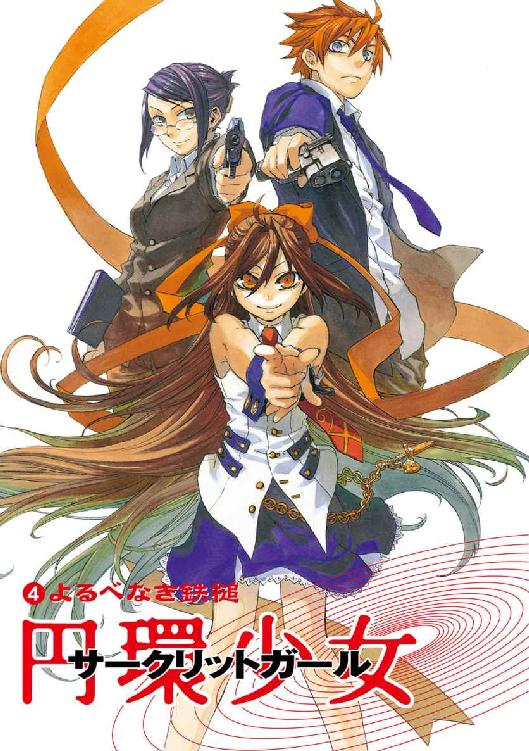
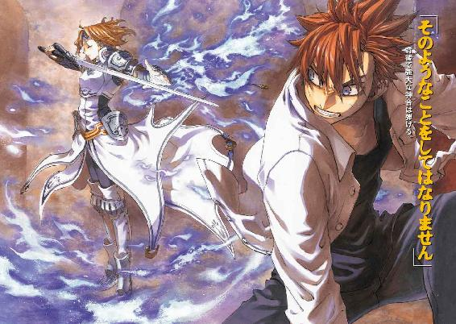
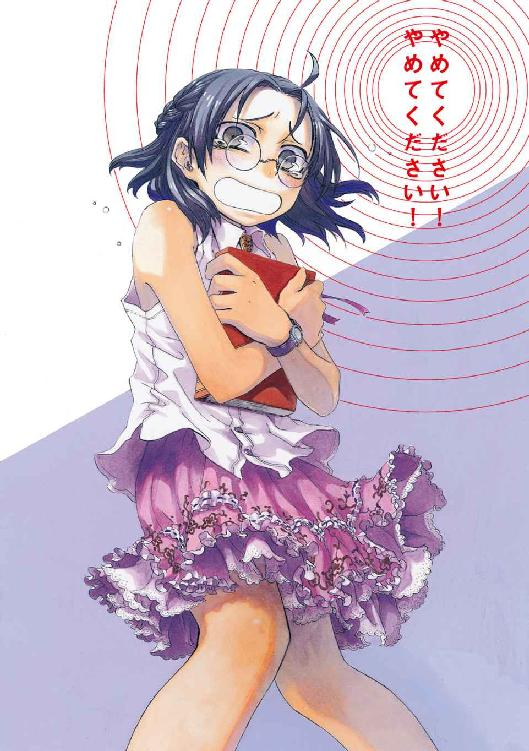
円環少女
④よるべなき鉄槌
長谷敏司
角川スニーカー文庫
本作品の全部または一部を無断で複製、転載、配信、送信したり、ホームページ上に転載することを禁止します。また、本作品の内容を無断で改変、改ざん等を行うことも禁止します。
本作品購入時にご承諾いただいた規約により、有償・無償にかかわらず本作品を第三者に譲渡することはできません。
本作品を示すサムネイルなどのイメージ画像は、再ダウンロード時に予告なく変更される場合があります。
本作品は縦書きでレイアウトされています。
また、ご覧になるリーディングシステムにより、表示の差が認められることがあります。
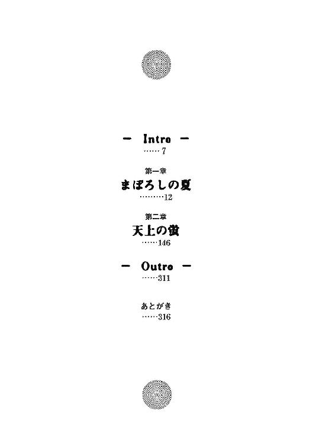
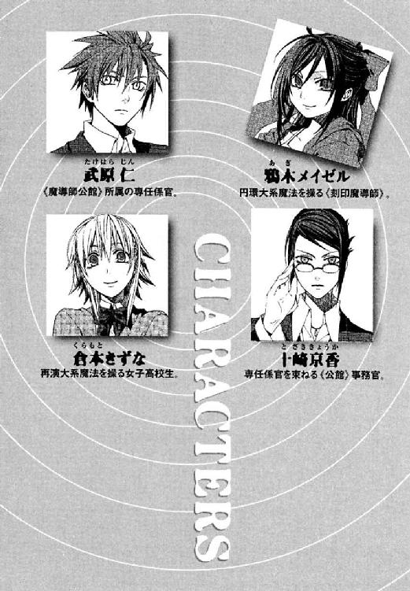
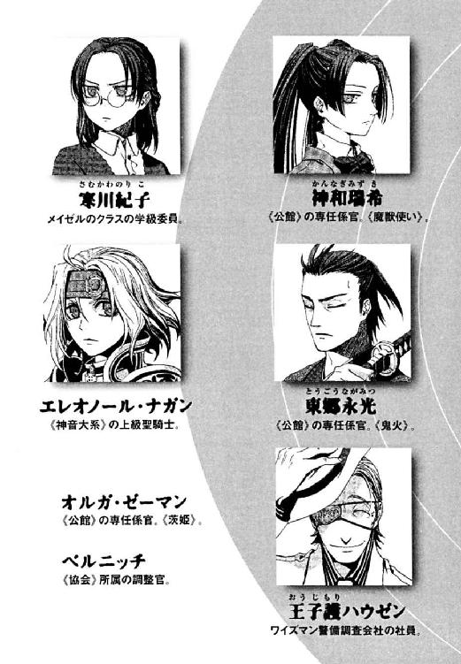
血が黒くかたまったような闇の底に、その部屋はあった。
広さはおよそ七〇平方メートル、柔道場にはすこし手狭なそこは板張りで、ホコリが薄く積もっている。すこし力をかけると揺れる机が縦に六台、横に五列、三十台もならんでいた。そして同じ数だけの木製のいす。机の真正面の壁には大きな黒板。
そこは小さな教室で、教壇にあたる一段高い場所には、右目を銀の眼帯でふさいだ長身の男が立っていた。四十代後半くらいに見える、まっ白な夏物のスーツをぴしりと着こなした軽薄そうな男だ。光など何もない無明の闇をはっきり見通せるかのように、彼は、教室の様子になつかしげに目を細める。
この教室に活気が満ちていた昔、日本という国は戦争の中にあった。奇蹟を知らない人間たちは魔法を見ることすらできず、魔法で隠された部屋は、魔法使いたちの小さな解放区だった。かつて教師だった男は、ひとりの生徒も生き残らなかった教室でひとり語る。
「君は知っていましたカ？ 六十年前、この教室で、罪を背負った明日を知れぬ魔法使いたちが、この世界のことばを学んでいまシタ。ぼくはここで、帰りの燃料がない飛行機に彼らをのせて敵艦に特攻させるための、教師をしていまシタ」
この世界の住人たちは日常、魔法を見ることができない。この世界の自然秩序に合わない奇蹟や魔法を観測しても、それを破壊してしまうためだ。彼らに見られ、聞かれ、匂いを嗅がれ、肌に触れられることで存在を感知された魔法は砕け散る。そして、当人たちには見えない光、《魔炎》となって消失する。この魔法消去能力ゆえ、魔法使いは、この世界の住人を奇蹟の天敵──《悪鬼》とさげすむ。そして、一万年以上前からこの世界を訪れ続け、神話や伝説の原型となった魔法使いは、悪鬼の人口増加により歴史の表舞台から姿を消す。
「人間は誰だって、自分が背負う秩序で世界を書き換える観測者デス。だから誰だって人を好き勝手には操れまセン。そのはずでシタ。......だから、ぼくにとっても、教えることで人が変わってゆくことは楽しかったのデスヨ」
六十年前、この世界──《地獄》は、男の長い人生でも指折りに大きな戦争のただ中にあった。第七期三極戦争、この国では第二次世界大戦と呼ばれる戦争の末期は、人命をも弾丸とする悲惨な総力戦だった。
教室の生徒たちは皆、魔法世界最大の権力機構《協会》の敵を百人斃すまで自由になれない魔法世界の罪人、刻印魔導師だった。そしてこの国に道具として差し出され、全員が散華した。男は失うことに慣れていたから、足を止めはしなかった。ただ、進むべき方向をすこし変えた。男の名は、王子護ハウゼン。観測したことで自らが持ったイメージへと魔力を見出し、世界を書き換える魔法──完全大系の達人である。
闇の中、ホコリをかぶった木の机を、驚くべき長寿の魔法使いが指でなぞる。
そのとき、淀みきった大気に、燃えあがるような虹色の光が、ぱあっと弾けた。王子護の鼻先を切り裂くような速度で、〝それ〟はとおり過ぎる。
「君は、まだぼくを恨んでいるのデスカ？」
王子護は決まり悪そうに右目を覆う銀の眼帯を指先でかき、苦笑した。
「ああ、ここはもうぼくの場所じゃないってことデスネ。ええ、そうデス。まったく正しイ」
シャボン玉のような蛍火は、ことばなど聞こえもしないように飛び去ってゆく。ほのかな明かりの群れは、天井をなぞって教室の隅にたまっていた。
そして王子護は、毒の笑顔を浮かべたまま、闇の底で目を閉じる。彼は骸となった、あるいはまだ生きてもがき続ける教え子たちと、足にからみつく汚泥のような暗闇でつながっている。
そして、教室に確かに巣くうことばを返すことなどない〝それ〟と、彼は同じものを待っているのだ。
「いいことを教えてあげましょウ。ぼくの最良の生徒は、今、先生をしているんですヨ。まったく、《公館》も人材がよほど尽きているとしか思えまセンヨ」
古来、悪鬼が魔法使いと交錯するのは、無明の闇の底だった。そして、己の魂を売り渡すことになろうと、邂逅を望むのはいつも悪鬼のほうからだ。だから、もはや誰も巣立つことのない死んだ教室で、今日も王子護はひとり待つ。
その紫の独眼に、永遠の暗がりを映して。
†
ずいぶん昔、まだ高校一年生のとき、武原仁にとって、すべての節目になった〝はじまりの日〟はあった。
意識を取り戻した仁の前に、幼なじみの十崎京香がいた。アパートの二階廊下に、何時間こうして倒れていたのか、わからなかった。もう空は、夕焼けに染まる準備のように黄色がかっていた。肘と右胸が熱くてうずいていた。動かそうと思った途端、かわりに激痛が走った。関節が逆方向に折れ曲がっている。妹にとっては軽く撫でた程度の一撃で、骨折したのだ。
彼を見下ろして、去年の夏からあまり会えなかった幼なじみが、目に涙をためていた。仁は痛くて、気持ち悪くて、苦痛以外のものに現実感がなくてどう考えをまとめていいかわからなかった。
「......わからないんだ。俺にはわからないことばっかりなんだ」
「そんなこといいから病院行きなさい！ 救急車、いや、お母さんに車出してもらうから。絶対に、動かないでよ!!」
仁は、何でもできる京香が、こんな震えて悲鳴をあげるなんて思わなかった。
「舞花ちゃんがやったの!? ふたりともどうしちゃったの？」
妹が、舞花が、あこがれていた京香お姉ちゃんに何も言わずに行ってしまったのだと知って、彼にはひどくさびしかった。
「だいじょうぶだよ。腕の骨が折れたって人間は死なないんだ」
アパートのドアは開けっぱなしで、部屋に人の気配はない。息も細るような苦痛より、ひとつの区切りが決定的についてしまった事実のほうがつらかった。
「そんなこと当たり前────」
「これでいいんだよ。痛いし、妹とここまでやるなんて最低だけどさ。それでも何もかもよくなる『いつか』があるなんて、小さい世界で自分をだまし続けてたときより、ずっといい」
そして彼は、敗北から一歩踏み出すため、誓った。
「いらないって言われても、がんばってもぜんぜん実力不足かもしれなくても、大事に思うものは守ってやる。向いてなくたって、やるんだよ」
──それが、決してゴールにたどり着けない迷路だと、少年の日の彼にも、立ち会った京香にもわからなかった。
現在の日本において、人間と魔法使いが交錯する場所は、実は数多い。
武原仁のアパートの周囲でも、魔法使いやその奇蹟がしばしば目撃できる。文科省所管の魔導師公館が、歩いて十分ほどの場所に建っているからだ。関係者にはただ《公館》と呼ばれる非公然機関の主な仕事は、既知魔法世界の最大権力である《協会》との交渉だ。日本は《協会》に属する魔法使いたちを保護する代償に、科学に転用できる技術の供与を受けている。仁の職場である公館の建物でも、中で《協会》の異世界人たちが実験でもしているのか、大きな魔炎の柱をよくあげているのだ。
築二十年のアパートと細い道路の間には、車が二台しか入らない駐車場がある。運動するときは、ここでいつもスニーカーのひもを結びなおす。
仁は、可能なら毎朝、運動と巡回をかねて公館本館周辺を走っている。《公館》の専任係官として、この世界の法律を守らない異世界人の犯罪から、人々を守るのが仕事なせいもある。学校が夏休みに入っている八月の朝は、汗を流すには気持ちがいい。道のまわりの植えこみや公園の緑の葉が、輝くように日差しを照り返す。早くも鳴きはじめた蟬の声が、体感気温をあげている気がする。
ようやくスピードに乗りだしたころ、まだ七時だというのに開店準備をはじめていた花屋のおばさんに声をかけられた。
「おはよう。最近よく走ってるね」
この店が生き残っているのは、通勤通学時間に店があいているからだ。《公館》の周囲の住宅街に、人通りはほとんどない。道幅が細く見通しが悪いうえしばしば来る自動車がスピードをあげて危ないため、歩行者や不法駐車の車も安全な数本の道に集まる。《公館》に用のない人間が近づかないよう、人の流れが制御されているせいだと、知る者はほとんどない。
あまり近所で買い物をしない彼が、顔を覚えられだしたのは、実は最近だ。
この公園と坂が多い街で、仁は生まれ育った。だから、人通りのない街の死角に犯罪魔導師がたむろしていないか、仕事外でも目を光らすのだろう。痴漢注意だのスピード落とせだのと看板の立った、さびれた道は運動にも向いていないのだけれど。
十分ほどかけて、外からは鬱蒼とした森しか見えない、魔導師公館のまわりをぐるりと回る。谷になった正門前から全力で長い坂を駆けあがると、聞きなれたラジオ体操の音楽が、気持ちのいい朝の空から降ってきた。野外の広い空間に響く音の粒は、野放図に飛び回って耳に飛びこむようだ。
公園では、ラジオの音楽が終わって、子どもたちが首からさげたカードにスタンプをもらっていた。みんなプールの授業のせいか、小麦色に肌が焼けている。仁は、最近あんなに思い切りよく日焼けはしていないなと、かかとまでまっ黒な小学生たちを微笑ましく見る。
そんな木漏れ日の下、夏を満喫する黒髪の少女が、仁を見つけて微笑んだ。サンダルで砂を踏み、肌に映える白いワンピースの生地を流れさせ、彼女が優雅にやってくる。そして黄色いリボンを弾ませ、あめ色の大きな目でいたずらっぽく仁を見あげた。
「まちぶせなんて情熱的なのね、せんせ」
仁は、押し寄せた羞恥心に全身を焼かれながら、回れ右して坂道をおりはじめた。
「走ってたら音楽が聞こえたから、ひとりで帰るのも素っ気無い気がしただけだぞ」
けっこうな健脚で仁のＴシャツをつかまえた少女は、深窓の姫君のようなあどけなくも可憐なそのかんばせを汗に薄く輝かせている。
「それって、帰るまで待てないくらい会いたくなったってことでしょ？」
鴉木メイゼルは魔法使いだ。
仁は、彼女との長いようで短かった時間を嚙みしめる。鴉木メイゼルと武原仁の関係は複雑だ。仁は私立御陵甲小学校のニセ教師になって、そこにかよっていた彼女と、六年一組の副担任と生徒としてめぐり合った。そしてメイゼルが刻印魔導師だと知った。刻印魔導師とは、神判の極刑を受けてこの世界へ追放され、《協会》の敵を百人斃すまで自由になれない罪人だ。この小さな魔女も、誰ひとり達成者のない死の責務を戦っている。
だから彼は、メイゼルの話を正面から聞かないような、無責任な真似はできない。
「一緒に帰るくらい、そんな特別なことでもないんだけどな」
仁は、一番そばにいるおとななのに、メイゼルを救ってやれない。《公館》の専任係官は、魔法使いを狩るのに最良の猟犬として刻印魔導師の管理をまかされる。仁のような割り切れない者もいるが、本来的にその関係は、使い手と道具なのだ。
気持ちよい朝、彼の帰り道の視界には楽しそうな小さな魔女がいる。
「まあ、いいわ。せっかくの夏休みだもの、楽しい夏にしたげるわ」
少女がしなやかな体を仁の視線に合わせるようにそらし、薄い胸に気取って手を当てる。まだ小学六年生のメイゼルの表情は複雑だ。たぶんそれは、背負った宿命だけでなく、趣味が嗜虐的に歪んでいるせいだ。
「でも、せんせには、逃げようとした罰が必要だと思うの」
ひまわりみたいな黄色のリボンで髪を結んだメイゼルの、最近の好みは、お互いつまらないことで罰を与え合うことだ。罰の中身といえば、仁に買い物をつきあわせたりと、微笑ましいものばかりだ。そのおかげで仁は花屋に顔を覚えられた。彼女がコップを割ったり失敗したときも、痛くて苦しくて屈辱的な罰を与えるように要求してくるので、まずは家主にあやまらせてから床の掃除をさせたりしている。
だから仁は、夏休みの日課のようになった、つまらない罰を引き受ける。
「じゃあ罰として、また花でも贈り物にするか？」
「ひまわりが一本ほしいわ。花びんにさして、流し台に置いとくのよ」
《公館》はじまって以来、ぶっちぎりで最年少の刻印魔導師、鴉木メイゼルは、すらりとした腕を腰に当ててちょっと満足げだ。仁の部屋には、小さな魔女のものがずいぶん増えた。
メイゼルを守り彼女とかかわって、仁は変わってきた。だから、欺瞞だとわかっていても、彼女の楽しい顔を見たい誘惑にあらがえない。刻印魔導師として百人討伐を成し遂げた者は、二万年の歴史で皆無だ。メイゼルが今、生きて彼のアパートにいるのは、多くのできごとが、ほんのすこし幸運に傾いたからにすぎない。
「そうだ。あのな。本当に、今日から俺の部屋に泊まる気か？」
「キョウカに聞いたでしょ。キョウカが八月七日からお盆まで、お仕事いそがしくて家に帰れないから、せんせのとこ行きなさいって」
小さな魔女が、無防備なくらい仁のそばにぴったり身を寄せてくる。まだまるみを帯びていないむき出しの肩を見下ろしてしまって、さすがに見慣れたはずなのに、心臓が一瞬止まりそうになる。メイゼルの、出会った春はまっ白だった肌が、焼き菓子みたいに甘そうな色に日焼けしているせいということにした。
「そっか、一週間か......」
仁は、先月メイゼルが彼のところを飛び出して、戻ってきてから、新しい距離感をどう作ればよいかわからない。刻印魔導師と専任係官という、彼らに当たり前であるはずの関係は試されるたび崩れてゆく。仁自身が、メイゼルを罪人ではなくひとりの子どもとしてあつかっているのだから、そうなるに決まっている。
視線をやると、彼女は首筋からやわらかそうな鎖骨まで気持ちのいい朝日を受けて、隠すもののない笑みを浮かべていた。
「せんせ、知ってる？ この世界の雨は酸性だから、リトマス紙につけると赤くなるのよ」
小さな魔女は、先生のように、わざわざ仁に豆知識を教えてくれることが多くなった。これもメイゼルの中だけの、夏休みの流行だ。
「よく知ってるな。それじゃ、酸性の土で育てたひまわりは、赤くなるか青くなるかわかるか？」
仁は、自分が立っている場所をたしかめるような彼女の〝先生ごっこ〟に、いつもつきあっている。はじめて会ったころと比べたら、彼女はずいぶんこの世界になじんでくれた。だからこそメイゼルは、「自分の知っていること」をまわりに教えたくなっているように、仁は思う。知識が満ちてきた実感があるからこそ、寛大な姫君はきっと、「先生」になって気前よく分け与えたくなったのだ。
メイゼルが、小さな庭に植わったひまわりをじっと観察していた。緑色の茎は太く、立派なひまわりが、十本も並んで咲いている。メイゼルが覗きこむ黄色の燃えるような花は、彼女の顔よりも大きい。
「赤とか青のひまわりなんて見たことないわ」
彼女はもはや、知らない世界に放り出された迷子ではない。メイゼルがふふんと得意げに鼻をひくつかせている。
「このあたしをだまそうなんて、同じ先生として風上にも置けないわ。罰としてせんせは、ひまわりをもう一本贈り物するのよ」
「風上に置けないか、なんか着々と難しい日本語覚えてるな。って、同じ先生なのか!?」
「せんせがいつも、『先生と小学生で恋愛は絶対ない』っていうから、今のあたしは先生なんじゃない」
本当に手がかかるんだからと、仁に「恋愛したいから先生になってくれ」と頼まれたかのようにため息をつく。
「その志望理由は、人前で絶対言うなよ」
距離感はどんどん曖昧になる。厳しい戦いも乗り越えてきた。けれど、はじめて会った五月から、仁はただその場をしのいできただけだ。こんな夏の陽炎のようなしあわせも、少女が刻印魔導師として絶望的な戦いを続けている現実を変えない。「足手まといになりたくない」と一度は別れ、「ここは地獄ではない」と言ってくれた少女と、仁は今、暗く険しい道の歩きかたをせめてふたりで考えたい。けれどそれは、彼がメイゼルを修羅道から遠ざけることに、決定的に失敗したということなのだ。
ふと空いてしまった会話の隙間を、彼女が埋めてくれた。
「せんせ、知ってる？ 人間は細胞でできていて、細胞って五年くらいで全部入れ替わるのよ」
「そうなのか？」
「だから、せんせは五年ずっとあたしのごはんだけ食べ続けたら、〝あたしのごはん人間〟になるの。体ぜんぶに誰かの愛情がこもってるなんて、すごく素敵じゃない？」
まじめくさった顔がかわいらしくて、仁はメイゼル先生の授業を聞き続ける。
「だからさっそく今日から、せんせのごはん、全部あたしが作ったげる」
「全部ったって、学校がはじまったら給食あるだろ。あと、俺だけじゃなくて、京香ときずなちゃんもいっしょに五年で『メイゼルのごはん人間』になる計算だ」
現時点のメイゼルの料理は、食べた人間を全員悶絶させている、強烈な罰ではあるのだけれど。五年生き延びてくれるなら、それでもがんばって食い続けるのが男の甲斐性だろうか。
「まあ、ちゃんと五年間続けてくれるなら、考えないこともないけどな」
そして仁は、まぶしいものに視線を向けてしまったように、目をしばたたかせた。少女が彼の顔を見あげて、自信に満ちて笑っていたからだ。
「五年はちょっとたいへんだけど、あたしはどんな運命にだって、ちゃんと勝つわ」
そして彼女が大きな氷を飲みこむように、さわやかな息を一瞬止めて仁の手を握る。汗ばんだ手のあたたかさに、メイゼルがここにいるという実感が、不思議なほど胸にしみた。
「だって、せんせと暮らして、どんどんあたしが欲張りになってくのがわかるんだもの。明日が楽しみで、いつもドキドキしてるわ。あたしたちは、これからふたりで、すっごく痛いことしたり苦しいことされたりするのよ」
この世界は間違っていると、先月、大魔導師グレン・アザレイは言った。
それでも仁は、ここに救いを見出さずにいられない。
今ここには、たぶんしあわせな夏のまぼろしが広がっていた。
帰る前に、まだ店を開ける途中だった花屋で、お礼の気持ちにひまわりを五本買った。
鮮やかな黄色の花束を抱えたメイゼルが、軽い足取りで仁のアパートの金属製の階段をのぼり、二階の廊下を一番奥の部屋を目指す。
ドアの前に、居心地悪そうに大きな旅行鞄を引きずった倉本きずながいた。
高校生の彼女の、栗色のやわらかそうな髪は、動くたび肩のあたりでふわふわ毛先が弾む。たれ気味の目が目立つその表情は、まじめなときでもどこか雰囲気がやさしい。
「あ、あ、あのっ！ 十崎さんから、武原さんのところでお世話になりなさいってお話ありましてっ」
きずなは、同じこの春に十崎家で居候をはじめた鴉木メイゼルと、見事なほど対照的だ。
「やっぱりそうだよな。メイゼルだけうちで面倒見るはずないもんな」
メイゼルときずなを居候させている十崎家のあるじ、十崎京香は魔導師公館の高級官僚だ。仁の幼なじみでもある彼女から、家に帰れない間のメイゼルのことを頼まれたのは、一昨日の晩だった。先月、相似大系の大魔導師グレン・アザレイが、地上の悪鬼六十億人に戦いを挑んだ。《神に近き者》と呼ばれた天才との戦いは、人の情と奇蹟のような幸運がからみ、仁たちの勝利に終わった。だが、残った現実は、霞ケ関の関係省庁への膨大な説明と調整だ。誰もやりたくない仕事から、事務官、十崎京香は逃げられなかった。《公館》の戦力である仁たち専任係官を、実質的に管理しているのは彼女なのだ。
家の前にいるシチュエーションが恥ずかしいのか、きずなが変に緊張しはじめる。
「あの、本当はちょっとご迷惑なんじゃないかなーとも思ったんですけど、やっぱり、ちょっとひとりだと十崎さんのお宅広いから怖いっていいますかっ！」
女の子らしさ全開なワンピース姿のメイゼルとは逆に、きずなはお泊まりを極力意識しないように努力したシンプルなＴシャツとジーンズだ。「やっ」と気の抜けた声を小さくあげて、彼女が地面の荷物を持ちあげる。大荷物に引っ張られたきずなの腕の間で、成熟しかけた豊かな胸がつぶれて、Ｔシャツが弾力ですこしずりあがっていた。
「持つ持つ、俺が持つから！」
男としてしあわせな風景を鑑賞していたい欲望を、理性で振り切る。メイゼルと話していたときの緊張感と微妙にちがうのが申し訳なくもあったのだ。
「さあ、どうぞ」
当たり前のように仁の部屋にずかずか入っていったメイゼルが、仏頂面で、子猫の絵が入ったクッションをきずなのために出す。先月、十崎家を飛び出してしばらく神和家で使用人暮らしをさせられたせいか、客人へのもてなしかたは、すこしサマになっていた。異世界人のメイゼルが、気がつけば日本人らしい所作まで身につけている。あどけない魔女はすこしずつこの世界を学んでいるのだ。
みんなで仁のアパートの居間でちゃぶ台を囲み、顔を見合わせる。
「今の京香は相当たいへんそうだから、俺たちも協力してなかよくやろうってことで」
「せんせは、いい加減すぎるわ！ 高校生が、おとなの男の人の部屋で寝泊まりなんて、まちがいでも起こったらどうするつもり？」
メイゼル先生が、子どもらしい変わり身の早さで、生活指導の先生になっていた。
「すぐ変なこと考えるメイゼルちゃんじゃ、小学生でもダメだと思うなあ」
「あたしの考える変なことと、きずなの考えるのとじゃ、なまなましさがちがうわ」
「............なっ、なまなましくありません！」
「でも、テレビで男の人と女の人が変なコトはじめたら、お肉を見た犬みたいにしっぽを振ってるじゃない」
きずなの、夜空の蒼色をした瞳が、じっと仁を見ていた。ふたりの話を聞いていると、メイゼルときずなの考える男女関係に、彼がしっかり組みこまれている事実に、頭がぐるぐるしてきた。改めて、ふたりまとめて毎日面倒見ている幼なじみの偉大さに感服する。
「............助けてくれ京香姉ちゃん」
仁が頭を抱えて、ポケットから煙草の箱を取り出したとき、女の子たちの声がかさなった。
「せんせ、今日からこの部屋、禁煙よ」
「武原さん、たばこ、ちょっとごめんなさい」
思わずすまんとあやまって、ポケットに戻す。どんなときも不平ひとつ言わず彼につきあってくれる煙草の紫煙とも、今日からお別れらしい。
窓の向こうは、どこまでも広がる青い空。生命にあふれて鮮やかなのに、何かが終わるような切迫感をどこかに抱えている夏の陽光。
夏のだらけたようなぬるい風に吹かれて、けれど、これはこれでいい気がしてきた。メイゼルやきずなにとっては、夏休みという長いお祭りなのだ。今くらい、彼女たちをしばる義務みたいなものから、好きに解き放たせてやればいい。
「まあ、夏だしな」
きずなやメイゼルを見て、彼自身にもそんな人間関係に余裕のないころがあったと、ふと思い出した。社会人になって忘れていたけれど、彼も昔はこんなだった気がする。夏というのは不思議だ。冬や春に記憶が戻ってくることはないのに、夏休みが来ると、昔の夏休みのことを思い出す。だから今年の夏も、彼と妹の長い別れに、きっとつながっているのだ。
「......えっと、あの」
わき出してきた思い出にふけって、ことばを発することをやめた仁を、きずながじっと見ていた。メイゼルまで心配げに彼を注視しているのが、決まり悪くて頭を搔く。
「奥の四畳半に、荷物は置いておいてくれたらいいから」
九年前に妹とふたりで引っ越してきたアパートの、この六畳の居間の隅に置いた机と本棚が、仁の場所だった。そしてメイゼルときずなに暮らしてもらうもう一個の部屋、四畳半の和室のあるじだった武原舞花は、今はもういない。
ふたりの少女を引き取った初日の夕飯は、彼女たちが持ってきた荷物を整理している間に仁が買い物をした。
原色の葉を茂らせる民家の植えこみをながめながら、仁はスーパーのビニル袋を前かごに入れて自転車をこぐ。きずなに頼まれたメモどおりに買い出しを終え、ペダルを踏み、何度もパンク修理を重ねた車輪を回させる。五時でもまだ青い空と、ご近所の輝く屋根瓦をぼんやりながめながら、気分よく細い道を駅側から戻る。彼の夏の思い出は、この自転車に乗って見た風景が多い。街の景色が変わって、何もかもが移ろい去っても、どこか故郷のにおいは変わらなかった。
もし十崎家に荷物を取りに戻る用事があるなら手伝ってやろうと、十崎家へ自転車を回す。もう仕事は済んだのか、十崎家の、夏の日差しで植えこみが伸びすぎた玄関に人の気配はなかった。
仁も、同居生活の準備は完璧だ。二学期のクラス運営の参考がてら、本を買いこんで勉強だってしたのだ。難しい思春期の女の子の気持ちも、理解できているつもりだ。
「ただいまー」
玄関のドアを開けると、居間でメイゼルが座布団を敷いて正座していた。
────無言だ。
怒りと失望がないまぜになった視線で子どもに見あげられたときの対処法は、教育書には書いていなかった。娘に無言で洗濯機から下着と靴下を出されたお父さんの気分とはこんなものだろうか。
「あのな、あいさつは大事だぞ。おはようって言ったら、おはよう。ただいまなら、おかえり。ありがとうなら、どういたしまして」
仁が買い物袋をさげてそばに寄ると、メイゼルが、おまえも座れとばかりに畳をたたく。
「せんせ、これは何？」
本棚に差しておいた教育書が、まるで母親に部屋を掃除されて見つかったエロ本みたいに、高く積まれていた。
「何って、教育書だけど」
「あたしのことを知りたかったら、本を読むより、お話ししたりベタベタしたりするの」
「ベタベタはまずいだろ」
「こんな本で満足しようとするなんて、恥ずかしくないの？ なに？ 『思春期の子どもとの付き合いかた』？ 『思春期に何をしてあげられるか』？ 『思春期の心とカラダ』？ そんなに思春期がスキでたまらないの？ この変態！」
メイゼルがまっ赤な顔で怒りながらバンバン表紙をたたくものだから、子どもを持つ親向けの教育書なのに、いかがわしい本みたいだ。
「そうじゃない！ これは、子どものことをもっと知りたいおとなのための本であって、決していかがわしい本じゃあない」
「子どものことを知って何がしたいの？ こんなに赤線を引いたり、付箋を貼ったり、せんせはねちっこいのよ。ねちっこく責めたいの、それとも責められたいの？」
メイゼルの瞳の奥が、飴菓子のように甘く淫蕩にとろけはじめる。人を責めるとき、嗜虐的な少女は一番生き生きとして輝くのだ。
「俺はねちっこくないぞ」
そう？ とかなんとか言いながら、身を乗り出したメイゼルの、ワンピースの深い襟ぐりから一瞬、日焼け残しのまっ白な肌が覗いた。薄桃色の唇がくすりと微笑む。陽光が神経まですっとしみ入ってきたようなしびれに、仁の背中は、暑さを忘れた。
そのとき、倉本きずなが奥の部屋からふすまを開けて出てきた。仁が干していた洗濯物を取りこんで、たたんでくれたらしい。
「タンスの引き出し、この小さいとこが靴下でいいんですか？」
まるで若妻のように初々しいしぐさで、高校生の彼女が、居間のタンスの一番上の引き出しを──。
「いや、そこはアレだ！ それ、俺がしまうから!!」
「......え？ あ、これ............」
タンスの引き出しを開けたきずなの手が止まっていた。顔が見る見るまっ赤になってゆく。
「きずな！ 確保!!」
狩人の目をつりあげて、メイゼルが立ちあがる。
「たった二時間でイヤらしい本が山のように出てくるって、どういうつもりなの？」
そして、教育書の山の一番上に、写真週刊誌が一冊どでんと置かれた。反省する正座友だちの輪に、きずなも仲間入りした。仁の体感温度は摂氏五度ほど下がった。クーラーいらずだ。
「なんかもういろいろ男として面目ない」
エロ本ですらない、コンビニで買った写真週刊誌の表紙では、十年近く前に有名だった昔のアイドルが水着姿でポーズをとっている。高校生のころ好きだったアイドルが脱いだというあおりに、こんなことになると知らず、ついつられてしまったのだ。肝心の袋とじを開けていないから、未練たらたらなところが目も当てられない。今、初っ端から砕け散りつつあるものは何だ？ 男の威厳だ。
そして小さな魔女が、頰に手を当てはぁと大きなため息をつくと、立ちあがった。
「いろいろわかってないせんせに、あたしが教育したげるから、感謝するのよ」
幼なじみのところから女の子のお客さんふたりを引き受けた、仁のほうがこの家のあるじであるはずなのだ。なのに、この肩身のせまさはなんなのだろう。
「あたしが先生だから、今日からこの教室で一番えらいの」
「おまえそもそも学校の教室とか教師を勘違いしてないか？ 俺は、おまえらの生活指導をする義務があるんだぞって......袋とじ破っちゃダメだきずなちゃん」
「せんせ、本当なら、おしおき部屋に呼び出しなのよ？」
メイゼルの教師像は歪んでいる。それを植えつけたのは、教室で小さな魔女が問題を起こすたび生徒指導室に呼び出した仁自身のようで、一学期のニセ教師生活の通知表をわたされている気分だ。メイゼルが、さっそく先生で仁を中心に円をなぞるように歩く。はだしなものだから、ぺたぺた足音をさせるのは全然女教師っぽくない。
「ひとつの部屋に三人もいたら、もう誰かが王様になって、残りふたりを支配して踏みにじらないと、せんせの授業みたいにぐだぐだになるしかないの」
嗜虐的に目を細め、あどけない少女が女王のように傲然と領土を睥睨する。
「待て。おまえここ俺ん家だからな。なんだその占領したみたいな我が物っぷりは」
きずなはいつの間にか袋とじを破って、中のグラビアをめくっていた。女豹のように四つんばいになった女性の写真をながめて、ぽやぽやした頰に慈母の微笑みを浮かばせている。
「きずな、写真と比べて勝ち誇ってるの？」
「えっ？ 聞いてたよ。みんな家族になったみたいに仲良くしようねって話だよね」
ここまで合わないと、いっそ見事だと思った。
倉本きずなと、武原仁の関係は複雑だ。
はじめて出会ったとき、きずなは、魔法の存在すら知らないただの女子高生だった。
彼女にとって、父親が砕け散ったと同時に現れた仁の第一印象は、最悪だったろう。
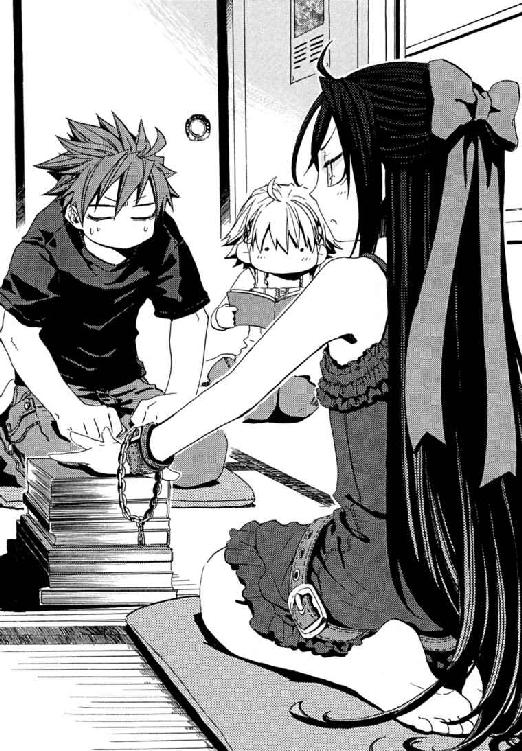
父子家庭の大黒柱だった父を失い、十崎家に置いてもらうことになったきずなに、かつてメイゼルと彼の関係を異常だとなじられたことを、仁は今も忘れていない。
きずなが、六十年前に遺失していた魔法、再演大系の魔法使いであると自覚したのがいつか、仁は知らない。再演大系は、魔導師に歴史を一冊の本として認識させる。そして、そこに記された過去の出来事を演じる行為を《索引》として、歴史を書き換える。その強力な魔法ゆえにきずなは狙われた。そして事件の黒幕だった彼女の父、倉本慈雄を斃したのは、ほかならぬ仁だ。
「この窓のところに、風鈴つけてみたら、涼しい感じになると思うんですけど」
エプロンをつけた倉本きずなが、台所の小さな食器棚の前で皿を選びながら言った。初日の晩ご飯の用意は、あれよあれよというまに終わってしまった。手伝うどころか近づくのもためらう、流れるような仕事ぶりだ。
「さすがだな。それだけ手際がいいと、見てるだけで楽しかったよ」
「なんか照れちゃうから、やめてください」
流し台でまな板を水洗いしているきずなの、後ろ姿をぼんやり眺めてしまう。ジーンズ越しでもはっきりわかるおしりのまるさというか、腰から胸にかけての、ためのきいた曲線というか、いつまで見ていても飽きない気がする。日の入りが遅い夕焼けの豪奢な赤に染められ、水道の音も、鍋が湯気を立てる音も、遠い蟬の声も、なにもかもが満ち足りているようだ。
「せんせ、きずなのおしり見すぎだわ」
「ちがうぞ！ 先生は、この心地いい夏の夕方にひたっていたというかだな......」
「そうだよ、メイゼルちゃん。武原さんはそういうことする人じゃないよ」
本当はちょっと見ていたから、無条件に信用されると罪悪感で胸が痛い。
「そういえば、きずなちゃんが京香のとこに来たときも、うち解けはじめたのって、料理からなんだよな」
きずながエプロンを外して冷蔵庫につけた磁石のクリップにひもをひっかけ、居間のちゃぶ台に戻ってきた。
「あの、わたし、あんまり頭がいいほうじゃないし、運動とかもダメだけど、料理だけはちょっとだけ、自信があったから......。自分で作った料理の前でだったら、自信を持って話ができるんです。ここにいていい感じがするっていうか、そういうのって、ありませんか？」
初日の今晩の料理は、冷やし中華と、スープに浮いた水餃子と、小さいガラスの器に盛ったサラダだ。十崎家の掘りごたつに比べて武原家のちゃぶ台が小さいぶん、料理の品数は抑えめだ。
「確かにあるのかもな」
仁はきずなと同い年くらいだったころを思い返してみる。
「そうやって考えたら、きずなちゃんはすごいよ。俺は、高校のとき、自信が持てるものなんて何もなかったよ」
「明日、十崎さん家から、食器をちょっと借りてきますね。やっぱり、器はそれっぽいのを使ったほうがいいみたいです」
きずなが照れていた。確かに百円均一の小さいスープ皿だと、盛りつけがこんもりしてしまった冷やし中華がわびしい。
「きずなって、たんぽぽか何かの花みたいだわ。ふわふわやってきて、根を張って余裕ができたと思ったら、次にはすぐ色気づくんだもの」
メイゼルが、自分の存在を主張するように、ところてんの器をどんどんと音を立てて人数分置いてゆく。元は仁と小食だった妹がふたりで囲むためのちゃぶ台だから、かなりいっぱいいっぱいだ。
「メイゼルちゃんはかわいくないぃ」
十崎家に来たときも、きずなは腰を落ち着けるところを手探りでさぐっていたのだろう。彼女は静かに、けれどしっかり根をおろして、そこを誰もが快適な場所にしてくれている。
「あたしを上から見ないで！ あたしは先生なのよ」
そして女教師メイゼルが今日何度目かの授業をはじめる。
「せんせときずなに、メイゼル先生が、いいことを教えたげるわ」
集まってきた視線を心地よさそうに浴び、小さな先生が言った。
「ところてんが味気なく感じたら、刻んだのりを入れるといいのよ」
どうやら十崎家の食生活の中で、メイゼルが発見したらしい。どうして子どもって、自分の見つけたことは世界ではじめての快挙だと思ってしまうのだろう。
「えらいえらい～。あんみつ屋さんで出るところてんも、こんな感じだよ」
きずなが感心していた。
異世界人の魔法使いだって、確かに三ヶ月もこっちで生活してれば所帯じみてくる。小さな姫君にも、微妙にきずなの影響が出てきているようでもある。仁たちが、小学校で教えてきたことも、メイゼルの中でなにかの足しになっているなら、よかったと思った。
「なに？ せんせまで、どうしてそんなうれしそうなの？」
微笑ましい目で見られて、メイゼル先生はおかんむりだった。
†
ニセ教師としてではない、本職の専任係官としての武原仁の現実は、草木も空も生命たぎる夏になっても、冷たいままだ。
彼が所属する魔導師公館をとりまく状況は厳しい。先月の《神に近き者》グレン・アザレイとの戦いの傷跡は、激しく炎症を起こし膿みつつある。十崎京香たち事務方のレベルでは、残務処理と各方面への説明が山積みだ。仁たちの現場レベルでは、管理する六百名の刻印魔導師の三分の一超、二百十九名を失ったことが、犯罪魔導師の取締りに人手不足というかたちで跳ね返っている。
〈武原くん。昨日、テレビでやってたんですけど、ところてんは大腸掃除してくれて、便秘にかなりキクらしいっすよ〉
武原仁は、白一色に塗られた小さな部屋で、ただひとりスピーカーからの声を聞いた。武原家の居間と同じ六畳ほどの広さの部屋に、彼のベッドと同じくらいの大きさの台がひとつ、ぽつんと置いてある。白い布が張られた台の上に寝かされているのは、服をはぎ取られた全裸の死体だ。この布は使い回すので、血やその他体液のしみが洗濯では落としきれず、赤褐色や黄色の汚れとしていくつも残っている。仁は今日、官僚としての仕事で忙しい十崎京香のかわりに、《公館》が回収した魔法使いの死体を検分しているのだ。
「医者がテレビの健康番組信じるなよ。っていうか、死体見て腸の話すんの、昼飯前はやめような」
死体の名前は火西アーサー。腹がすこし出た青白い肌の中年男性だ。悪夢に凍りついたような死に顔は、鼻は高く彫りが深く眉毛が濃い。何も知らずに道で会えば、南米人に見えただろう。背中にはメイゼルと同じ、神判の極刑を受けた罪人の刻印。全身は獣に襲われたように嚙み傷だらけで、のど笛が食いちぎられ、煙草の吸い過ぎで黒ずんだ気管がむき出しになっている。
「この傷は神和か。死亡時に魔法構造体が出たか報告はあったか？」
獣の群れに食い荒らされたような傷は、仁と同じ専任係官である《魔獣使い》神和瑞希の手口だ。刻印魔導師は必ず専任係官に管理され、彼らが犯罪行為を行ったときはその係官自身の責任で処理される。つまり抹殺され、仁が今いるこの死体検査室に送りこまれるという意味だ。
〈報告なしっすねぇ。でも今回は、狼さんたち、あんまり腸を引きずり出してないから、何か出る可能性あると思うんすけど〉
子どものような舌っ足らずの声が、スピーカーから流れてくる。織田笑美理は、《公館》の大多数を占める純粋な悪鬼のスタッフで、仁たちがよく世話になる優秀な医師だ。
「管理施設での交友関係は？」
〈こっちの資料には、記載ないっすねぇ〉
魔導師公館の霊安所は、戦前から電気工事をしておらず、クーラーがない。一晩明けてから引き出されてきた死体は、早くも強い臭いをはなちはじめている。仁は、ガスがたまりはじめた死体の腹部を指で軽くたたいた。音が軽い。
「腐敗が早いな。中にあるかもな」
〈またっすかぁ？ マズイでしょ、今週もう三体目ですよぉ〉
刻印魔導師に墜とされるのは、魔法使いたちによると、普通の死刑では罪に足りない重罪人だけらしい。だから、メイゼルのように墜とされた理由を疑う例外もあるが、多くが危険人物だ。たとえばこの火西アーサーは、精霊大系世界では有名な大農園の経営者だった。労働者を効率的にはたらかせる方法を追い求めた結果、働き手の家族を胸まで畑に埋め、成績が悪いと罰として草を刈るように鎌で首を切り落とさせたそうだ。
そんな危険人物たちが、こっそり魔法で連絡をとりあっている。《公館》の歴史上、刻印魔導師が横のつながりを活発に作るのは、蜂起や破壊活動を起こす前兆だ。警戒水準は二、全専任係官は武装を義務づけられ、あとは最悪をすのみだ。
「刻印魔導師の半分は三年で死ぬし、こないだの二百人を冷静に考えたら、普通は浮き足立つ。まあ、内側から爆発する時期だったかもな」
仁はメイゼルに、今の公館には近づいて欲しくない。また怒られるだろうけれど、個人情報が漏れる内輪の殺し合いはたいてい陰惨だ。仁のアパートは、彼が不在の間、公館職員に監視してもらっている。彼女には、夏休みに浮かれてもらうくらいでちょうどいいと思う。
〈そういえば博士も、神聖騎士団で、魔法プロセスを機械化した聖騎士が実戦投入されたって言ってましたよ。どっち見てもダメダメですか！ もう、うちって殉職率だけはよそより二ケタ高いって本当だったんだぁ〉
任官二年目でまだ殉職者を知らない織田笑美理が、スピーカーの向こうで突っ伏したようだ。キーボードに頭突きをかました鈍い音が聞こえてきた。
「心配しなくても、死ぬのは専任係官と、まとめ役の事務官だけだよ。スタッフは魔導師と接触がないから名前や顔も知られてないしな」
仁の妹が五年半前に殉職していると思い当たったのだろう。笑美理が声を落とした。
〈............すみません。無神経で〉
「いや、そういうつもりじゃないんだ。あれはあれで本望だったろうしな」
せまい死体検査室の隣は、はめ殺しのガラス窓から検査室を見られるもっとせまい観測室だ。魔導師公館は、深い森に囲まれ敷地内に水まで引いているから蚊が多く、夏は蚊取り線香をそこかしこで焚く。だからガラス窓はみんな、ふちが薄茶色く変色している。
検査は、魔法消去が観測した魔法すべてを一瞬で破壊するのではなく、時間経過とともに積みあがる性質を利用したものだ。まずは、死体を寝かせた台に仕込んだＸ線写真機で撮影する。コンピュータの画面上に映し出されたその写真を、悪鬼である医師、織田笑美理が別室で一定時間観測する。このとき死体から魔法消去の反応があがり、仁のように奇蹟を観測できる人間に見えれば、死体内部に残留している魔法があるということだ。刻印魔導師たちは、紙やディスクなど記憶媒体の所持を《公館》が厳しくチェックするため、裏をかこうと体内に記憶魔術や魔法生物を埋めこむ。魔法使いの誇りたる魔法で悪鬼を出し抜くというアイデアは、異世界人のプライドを刺激するらしいのだ。
〈合図から〇・一秒観測しますよぉ。レッツ透け透けでっ〉
──ピッ。
アラームが鳴った瞬間、台に寝かされた死体の腹部が、きっかりコンマ一秒間だけオレンジ色の炎をあげた。悪鬼の消去能力で破壊された魔法は、当の悪鬼自身には観測できない光のかたちでまき散らされる。
「魔炎を確認。当たりだ」
人体内に仕込む魔術は、魔法消去にある程度の耐性を持ち、ごく短時間なら魔法消去にさらされても本当に重要な中心部は残る。魔法使いが悪鬼だらけの街を歩いている間に、記憶魔術が破壊されては意味がないからだ。
スピーカーの向こうで、また織田笑美理が机の上を巻きこみながら突っ伏す音がした。
〈やっぱ多すぎっすよ刻印魔導師さぁん！ 本当にもう戦争ですかぁ〉
魔導師公館本館は、上から見るとカタカナのコの字形をしている。玄関ホールと隣接する数個の部屋が共有スペース。そこからのびる東西の棟は、それぞれ日本政府と魔法使い勢力《協会》の不可侵の領土である。明治時代に設計された当初から、両者の棲み分けがはっきり意識されていたのだ。両翼にいだかれた中庭は双方の解放区となり、交流の庭として理想を託された。そして時代はくだって平成の今も、有志が手入れをしてやらないと雑草と虫の王国となるほど寂れ果てている。
「かわいらしいですわ。オダさんって」
大きなパラソルの下の、白いペンキを塗ったいすに、陽光に溶けてしまいそうなほどはかない彼女は腰掛けていた。濃紺のエプロンドレスは、ほっそりした腕の美しさを強調するように肌に密着した長袖。スカートは、ふわりとしたロングスカート。気温三十二度の昼下がり、真夏の厳しい光線にあって、薄化粧の額に汗ひとつ浮かべない。彼女、《茨姫》オルガ・ゼーマンは魔法使いだ。緑の匂いが強いこの交流の中庭を愛する、ただひとりの魔法使いだ。
「戦争なんて、はじまるどころか、六十年休戦なしでずっと続いていますのに」
《公館》嘱託の魔法学者、溝呂木京也の助手である《茨姫》オルガが、幸薄そうな、力のない目を細める。
テニスコートが三面とれるだだっ広い中庭に、ひとりぽつんとパラソルを立てて、彼女は紅茶を飲みスコーンを焼く。瀟洒な丸テーブルには、ケーキ用の銀のフォークが三本突き立っている。刺さっているのはお菓子ではない。昆虫の羽根が生えた黒いネズミのかたちをした自己再生産型魔法構造体──魔法生物が磔にされているのだ。
「それが、火西アーサーの腹の中身か。記憶魔術に羽根をつけるのは豪勢だな」
「開腹して、これの情報は読み取ったのですが、その後どうしたらいいかわからなくて」
声は小さく自信なさげだが、読み取り方を知らない記憶魔術からムリヤリ情報を引き出すのはとても難しい。彼女は《公館》の専任係官として働く強力な魔導師なのだ。
オルガはバスケットに山盛りに入れたスコーンをとって、あまりおいしくなさそうにもそもそと食べている。テーブルでうごめいている魔法生物が、さっきの死体の腹の中にいたと思うと、仁の食欲は減退ぎみだ。
「この魔法構造体の中身は？」
「先のグレン事件について、重大な情報を持っていると自称する証人が、円環大系世界から《地獄》へやってきています。その彼女の名前と外見と、円環魔導師だということ、あとはどういう経緯で《地獄》に来たかまで、全部入ってました」
「待て。証人なんて話、俺も聞いてないぞ!?」
「機密ですけど、わたくしは博士のところでお話をうかがいました。アラクネという若い女性の魔法使いが、確かに《地獄》へ到着しています」
「刻印魔導師には情報なんかわたしてないんだぞ!? 俺たちより情報が早いってのはどこから漏れたんだ？」
仁が思わず立ちあがる。宣名大系あたりで構築した高度魔法構造体だろう異形のネズミが、パラソルの影の中、まだテーブルを引っ搔いていた。
「どこからでも。......どのみち、わたくしたちのお仕事は、秘密の核心人物を処分して、情報を無意味にすることですし」
この件もグレン事件の余波だ。刻印魔導師の無茶な運用で出た大損害に、誰が責任を負うべきなのか、調査がまったく進んでいないのだ。倉本きずなへの殺人未遂もそうだ。そして最前線で事態に関わった《百手巨人》も、《無双剣》セラ・バラードも行方が知れない。
「その証言で、責任をはっきりできる見込みは？」
「グレン戦争には、円環大系の最高位魔導師《九位》が関わっていますのよ。一千の魔法世界を束ねる最高権力者《三十六宮》の一角を、どうこうできませんわ」
《三十六宮》は、三十六の魔法世界それぞれの元首でもある。世界ひとつを支配する首脳を、仁たちにどうできるかと言われれば見当もつかない。
オルガが、あきらめきった緑の瞳を泳がせる。
「餌にしても、アラクネなどというお名前はわたくしもうかがったことがありません。たいした魚はかかりませんかと」
それでもアラクネという魔女は、鴉木メイゼルの故郷である円環大系世界からやってくる。避けるべきだとわかっていても、仁にとっては感情移入したくなる相手だ。
「純粋に正義感の情報提供なら、気の毒だな。秘密はすでに凶悪犯たちにまで広がって、誰に背中を刺されてもおかしくない。そのうえ、守ってくれるはずの《公館》には、やってくる刺客を狙うエサあつかい、か」
純粋な魔法世界の人間であるオルガが、弱々しいかすれ声で、ただ静かに事実を告げる。
「魔法使いが、《地獄》のことを考えて命を賭けるなんて、あり得ませんわ。これはただ、アラクネという魔法使いが勝手に決めたことです。間違えないでくださいまし」
蟬の声すら音楽に聞こえる緑の庭で、誰に飲ませるつもりなのか彼女がカップでココアを作りはじめる。
「魔法使いにとって、《公館》はウンコだめにそびえ立つ信じられないほど大きいウンコなんですよ。それ以上でもそれ以下でもありませんわ」
少量のお湯に溶いた鈍い褐色のココアをかき混ぜながら、彼女は上品に微笑む。《茨姫》オルガ・ゼーマンは、彼女自身が言う「うんこ」と笑顔で口をきいてくれるほど我慢強い人間だからだ。
「メイゼルちゃん、本当にえらいですわ。しゃべるウンコに手をのばされて、握手に応じるなんて、ふつうの人間にはできないことですもの」
熱に浮かされて倒れそうなほど、傘の下でも真夏の日差しは厳しい。魔法の火球が、誘蛾灯のように広場の蚊を引き寄せては焼き殺す音がバチバチと、仁の耳元で響く。
「期待しないで、仕事としてつきあうよ」
「よくできました。忘れないでくださいまし」
《茨姫》オルガが、白い手袋をはめた右手で、銀のスプーンを逆手に持った。処分された刻印魔導師の腹に仕込まれていた羽根ネズミの首に、思い切りふりおろす。肉を断ち切る鈍い音をたて、小さなネズミの頭部がもげて転がった。黒い頭の、鼻面からのびた白いひげを震わせて、ネズミが悪趣味な歌をうたいはじめる。
〈悪鬼に滅びを！ 悪鬼に滅びを！ 魔法使いの聖戦のために！ 英雄グレンの志を我らが受け継ぐべし！〉
極刑の修羅道の中、《地獄》とさげすむ世界で死ぬ刻印魔導師たちの、むき出しの悪意が、交流の希望を託された庭に響きわたる。
オルガが、さらにもうひとふり、もうひとふりとテーブルにスプーンを突き立てる。磔刑のフォークがはじかれて緑の草へと落下し、切り取られた魔法生物の四肢がカサカサと音を立ててもがく。
〈悪鬼に滅びを！ 悪鬼に滅びを！ 奇蹟の王者の誇りをとりもどし、地獄を正当なあるじのもとに従わせるべし！〉
死した《神に近き者》グレンだけではない。この憎悪が、魔法を消去する悪鬼の人口増加で歴史の表舞台を追われた神話の原型たちの、この世界への偽らざる気持ちなのだ。
〈悪鬼に悪夢を返せ！ 悪鬼に悪夢を返せ！ 我らが血を、百倍の悪鬼の血であがなわせよ！〉
英雄グレンによってあきらめから解き放たれた魔法使いたちは、戦いをこのように受け継いだ。仁たちが今いるこの世界は、誰にとっても、望んだかたちにほど遠い。
〈悪鬼に死を！ 悪鬼に死を！ 悪鬼に死を！ 悪鬼に死を！ 悪鬼に死を！ 悪鬼に死を！〉
「本当にかわいらしいですわ」
《茨姫》オルガが、ネズミの残骸を、スプーンですくって作りかけのココアに入れた。ひとすくいで頭を。ふたすくい目で、ピンク色の肉がぴくぴくと動く右前肢を。仁が憎しみの深さに麻痺していた間もスプーンで叩き切っていたネズミの破片を、ちょっと元気な角砂糖のようにココアへ放りこんでゆく。
南風に髪を遊ばれながら、焦げ茶色のどろどろしたココアをかき混ぜていた彼女が、にっこり笑った。
「武原さん、ココアはいかが？」
仁は、糞をミルクで薄めたような色の、異形のネズミがぷかぷかと浮く代物を受け取る。この世界の惨状を戯画化したような、人間に飲み下しようのないものがそこにあった。気弱に揺れる瞳の奥で、《茨姫》は仁を推し量っている。
「世界って、ウンコの海に、煮ても焼いても食べられない魔法ネズミがぷかぷか浮いているようなものですの。あなたがたならどうなさいますか？」
──専任係官、武原仁は、魔法を見ることができるが魔法使いではない。奇蹟の力などひとつもない。ただ魔法消去能力を停止することができるだけの、先祖返りの《真なる悪鬼》だ。
だから、彼が止めていた魔法消去を再作動させたとき、視覚で観測したココアに、魔法生物の姿は影も形も残ってはいない。すべては魔炎に消え、残ったのは奇蹟も魔法もない、ただの茶褐色の甘い飲み物だ。
「立ちあがるなら焼き払うよ。何度でもだ」
魔導師公館に後退はない。いくつ死体を積み重ねようと、その方法に問題があろうと。
「............せっかくですのに、飲みませんの？」
「ところでおまえ、あのネズミ、死体の腹から摘出したあと洗ったか？」
「................................................さぁ？」
†
いつか爆発する爆弾を抱えたまま、粛々と夏の日時計は回る。
魔導師公館からそう離れていない二階建てのアパートの、夕焼けに照らされる二階一番奥のドア。ここが武原仁の寒い現実と、まばゆい夏のまぼろしとの境界線だ。
武原家の、細長いネームプレートをはさむ表札に名前はない。三回忌の法事の後、武原舞花の名前を見るたび浮かぶ思い出に耐えきれず、外したのだ。けれど今も帰るたび、誰もいないとわかっていても仁は「ただいま」を言う。
安っぽい合板のドアを前に、息を整える。まるでこれから深い水の底へ潜るように、何が起こってもいい覚悟をかためてドアノブを握った。
「そうだよな。もう、こんなことはしなくていいんだよな」
鍵を差しこみ、「ただいま」を言いながらドアを開ける。
反射した陽光が陰影と調和する玄関には、人の気配がない。メイゼルはどこかへ遊びに行ったのだろう。夏休みらしい、心地よいからっぽさ加減だ。
気配を感じた。仁は靴のまま玄関をあがり無音で前進しつつスラックスの背中側に吊したナイフを抜き、脱衣場のスライド式のドアを勢いよく開く。
「わっ、わっ、わっ！ わっ!!」
脱衣場では、倉本きずなが、ジーンズをほどよく肉がついた太ももまでずりあげようとしている最中だった。体の線が浮く小さめのピンクのＴシャツは、体を折った前傾姿勢のせいでしわを布地に作り、布地を押しあげる豊かな胸を強調する。下着の、目を奪わずにいられないほど初々しいおしりの線までまる見えだった。
まっ赤になったきずなが、目を見開き、あわててジーンズを腰まで引っ張り上げた。
「あんまり暑いから、ちょっとシャワーをお借りしたところでしてっ」
「こっちこそごめん！」
負けず劣らずの赤さになっているのだろう、隠し持ったナイフをさりげなく戻した仁の顔も熱くなっていた。
まだ濡れている髪から、あたたかそうな水滴が、首筋から左右の鎖骨の間を伝って胸元へと墜ちてゆく。彼女が恥ずかしそうに目を伏せ、両手で後ろ髪をかきあげる。
「ああ、そうだ。こんなとこ俺が立ってたらこまるよな」
「あっ」
突然の声に振り返った仁へと、彼女がまだほんのり赤い顔でとびきりの笑みを向けてくれた。
「お仕事おつかれさまです」
「ありがとう。本当に、きずなちゃんが来てくれて助かってるよ」
これはもう本心からのことばだ。もしも泊まりにきたのがメイゼルひとりで、毎日小さな魔女の創作料理が並んだら、気持ちはうれしいがたぶんどこかで体調を崩す。
「あはは............、同じこと、十崎さんにも言われました」
「そっか」
けれどきずなは、生徒に注意する女教師のようにまじめくさった顔で、人差し指を立てる。武原家には先生がたくさんだ。
「でも、わたしはメイゼルちゃんの料理を応援してるんですよ。わたし、前に、メイゼルちゃんに、行きたいところに行きなさいって背中を押してもらったことがあるんです。だからわたしも挑戦できてますし、そういうわけで、メイゼルちゃんのチャレンジャーな料理も無条件に応援なんです」
きずなが、立てた人差し指をないしょだと言うように唇に当てた。何でもない顔の彼女の、切なげに震えるまつげが、ことばの裏を聞き逃すなと仁の焦燥をかきたてる。
「やっぱり、どんなことでも、好きからはじめるほうが楽しいですよね」
「好きでいてもらえるようにがんばるよ」
ふと、口をついて出た。きずなが息をのんだその姿が、顔が、体が、濡れた髪が、肌が、網膜の裏に一瞬で焼き付いた。
「いや、愛想尽かされないようにがんばるよっていうことなんだけどな。やっぱり、俺ダメだな。ちょっと外に出てるよ」
心臓が爆発しそうに高鳴っている。密室できずなとふたりきりだと気づいてしまったからかもしれない。
頭を冷やそうと脱衣場から出たそのとき、まるで仁の思いが念力にでもなったようにアパートのドアが開いた。
メイゼルが立っていた。
玄関には小学生。脱衣場には女子高生。間に立つおとなに出来ることはなんだろう。
「せんせ、なにしてるの？」
「......家庭訪問」
「わざわざ自分の家に家庭訪問に来たうえに、靴をはいたままだわ」
「な、なんでだろう」
サンダルを脱いだメイゼルが、つかつかと仁の胸元へと近づいてくる。そして、彼になど目もくれず、たたきつけるように脱衣場のドアを引き開けた。
やましいことなんて本当にないのに、空気が凍りつく。一秒、二秒、三秒。
観念して振り返ると、脱衣場にきずなはいなかった。メイゼルが、濡れた脱衣場にぺたぺたと足音を立てて迷わず踏みこんでゆく。
「そこにある腰のとめ帯、きずなのよね」
銀色の大きな金具のついたかわいいベルトが、脱衣場の洗濯機の上に残っていた。
「......そ、そうなのか？」
これ、まさか修羅場かと。
「きずな見なかった？」
小さな魔女の吊り目が、小鳥を見つけた猫のような狩人のそれになっていた。仁は、風呂場の入り口を体で隠すように移動してしまっていた。メイゼルの小さな体が、彼の脇を潜ってするりと後ろに抜ける。
「本当に、どういうつもりなのかしら」
アコーディオン式の引き戸を開けて、少女が風呂場の中をのぞきこんだ。湯船にはふたがされている。きずなはいない。
──湯船にはふたがされている。きずなはいない。
まさかと背筋に戦慄が走ったそのとき、湯船の中で、かすかに水がひたひたと波打った。ふたは閉まりきっていないうえ位置までズレている。床のタイルが妙に濡れていた。
世界を狙える器かと驚愕するほど、見事な墓穴の掘りっぷりだった。メイゼルに感謝している話の最中だったから、きずなもやましかったのかもしれない。ともあれ水がいっぱいの風呂桶に飛びこんでくれた命がけの善人を、仁が道化にしてはならないのだ。......たぶん。
「いや、あれだ、そうだ！ 今晩は、きずなちゃんが出かけてるみたいだし、驚かしてやれるような晩飯でも作らないか？」
ぽこんと泡があがってきた。
「あたしは、せんせときずなのこと、お似合いだなんて思わないわ。義理がたいお人よしと、頭のよくないお人よしが一緒になっても、笑って死ねるだけで生きのびられないもの」
誇り高い小さな姫君はいつも真剣だから、油断していると、ときどき鋭く刺される。
「確かに頭より体が動いてしまう人間っていうのは、外野から見れば頭がいいように見えないもんだよ。でもそういう人間が、理に合わないことをしてくれて、世の中けっこうよくなってるんじゃないか？」
「今のせんせ、ずぶ濡れの子犬みたいにかわいいんだけど、どうしたらいいかしら？」
小さな魔女が仁の手をとって、桜色の唇にそっと寄せた。そして、白い前歯で、彼の人差し指を思い切り嚙んだ。彼を責める嗜虐的なよろこびと、噓をつかれている冷たい怒りに、メイゼルの瞳がとろけていた。絶対にばれている。
......ぽこん。
やさしい彼女が風呂桶の中で戦い続ける、命のあかしの空気の泡が風呂の水面で弾けた。
呼吸が荒くなり頭がまっ白になりながら、仁は小さな魔女に、伝えてやらなければならないことを必死で考えていた。誰にだって、気持ちが空回りすることはあるのだ。
「あ、あのな、俺からひとつ言いたいことがあるんだが......」
倉本きずなは、たぶん愚かだ。けれど何も知らない子どもの愚かさではない。気遣いややさしさが変な感じに発酵した、悲しい道化のそれだ。
......ぼこぼこぼこぼこぼこぼこぼこぼこぼこぼこぼこがぼ、ガタン、ガン、がぼ、ガン！ ガン！ がぼがぼ────。
「うわっ！ わっ！ だいじょうぶか？ きずなちゃん？ もういい、しっかりしろ！」
結局、きずなは風呂桶のふたを外すまで、二分近くがんばった。
そして、自分で飛びこんだ墓穴から生還したずぶ濡れ女子高生と、引きあげるとき同じくらい水をかぶったニセ教師は、脱衣場に並んで正座していた。
「せんせたちの言いたいことはわかったわ。納得したわ、きずなならありそうなことだもの。でも、あたしは満たされないの。わかるでしょ。せんせ」
本当に冷静に、よく話を聞いてくれたと思う。メイゼルはまだ小学六年生なのに。だから、傷つけることになってしまった彼女に、仁はわびずにいられなかったのだ。
「わかった。......罰なら何でも受ける」
「────！」
息をのむ気配が、正座する頭の上にあった。見あげると、メイゼルが肌という肌を上気させていた。しっとりとした、けれど快楽に震える声であどけない魔女がささやく。
「せんせ、......もう一度言って」
頭上から要求されて、仁は恥ずかしさに顔中が燃えた。だが、この立場では逆らいにくくて、拳がわけのわからない屈辱感で勝手にわなないた。
「........................罰なら......何でも受ける」
少女が感極まった目をうるませ、まだ残る怒りとの間で葛藤するようにそわそわ視線をさまよわす。胸の前で、自分の手に爪を押し当てる感触で現実感をたしかめていた。そして熱と冷たさの落としどころを見つけたか、嗜虐的に底光りする表情で小さな魔女が微笑む。仁の鼻先をかすめたワンピースの生地のにおいと、正座する彼を見おろす顔におりた淫蕩な陰影の温度差に、彼の背中は粟立った。
「でも先生は、この家の風紀の乱れがとっても悲しいの。せんせも、きずなも、次はおしおき部屋行きだって、反省するのよ！」
メイゼルが指導室計画の予定地を物色するように、アパートをながめ回す。仁は、教育は理解と熱意と忍耐だと、彼自身も達成できずにいる目標をどうメイゼル先生に伝えようか、いつまでも思案の泥沼に沈みこんでいた。
かくして、着替えた武原仁は、居間のちゃぶ台の前で正座させられている。何が起こっても、正座し続けることが彼の罰だからだ。
「きずなの罰は、下ごしらえのすんだカレーをあたしが料理するとこ、だまって見てることよ」
思ったより過酷な罰でなかったせいだろうか、着替えたきずなは「心配しないでください」と気丈に言ってくれた。流し台に向かうふたりの後ろ姿は、姉妹には見えないけれど、奇妙な調和がとれている。デニムのスカートとパステルカラーのトップス姿のきずなが、カレーの作りかたを、お姉さんのように教えてあげていた。仁の部屋に来てからジーンズしか見てなかったから、スカートとそこからのびる女性らしい脚が妙に新鮮だ。
だが、メイゼルの罰には、はっきりした意図がこめられていたのだ。
きずなが悲鳴をあげた。仁は動けない。たとえ流しに、カレーの具材に断じて使わない大量のお菓子類が並んでもだ。エプロンをつけているときはいつも自信に満ちているきずなの後ろ姿が、今日はおびえるウサギのように震えていた。
「このお菓子は、あたしからの、きずなへの宣戦布告なのよ。このあたしは、ひとりの女として、きずなにじわじわ餌付けされることを断固拒絶するわ！」
エプロン姿の小さな魔女が、ポテトチップの袋を握り締め、力強くきずなを指差す。メイゼルは今、料理を破壊することによろこびを感じる嗜虐性愛者でも、ただのお子様料理人でもない。ひとりの挑戦者だった。
「きずな。そのポッキーをとりなさい」
今、武原家の台所で、少女ふたりの戦争がはじまろうとしていた。ちなみに片方の料理は、ほぼ毎回、テーブルのまわりを死屍累々の野戦病院にする。
「わかったから冷静になろうよ、メイゼルちゃん。料理とおやつの結婚は、しあわせに終わらないよ」
「よろこびって、意外性から一気に押し切ってつかむものだと思うの」
ぽきん、ぽきんと彼には聞き慣れた不吉な音が聞こえた。ポッキー入りケチャップサラダ、ポッキー入り焼きうどん、ポッキー入り肉じゃが失敗汁。そして今日、歴史に新たな一ページが刻まれるらしい。ポッキー爆撃が敢行された瞬間が、仁にもきずなの色っぽくもアホらしい悲鳴でわかった。
それでも手伝う人のよいきずなが、戦場のなべの惨状におののいていた。
「......これなにか、カランコロン言ってるよ？ おなべの底でなに転がってるの？」
仁の理性が悲鳴をあげる。それ、誰が食うんだ？ 俺だ。
いろんな意味で無惨な台所から、カレーのそう悪くないにおいが漂ってくる。あとは、煮込むだけなのか。いろんな意味で全身に汗がにじみ、息が出来ない。
「ああもうダメだ。我慢できん！」
罰でも、メイゼルが怒ってももう見ていられないと、立ちあがろうとした彼の手を強い力が引いた。
仁を引き留めた相手は、墨で染めたような長い黒髪を左右対称に結んだ、浴衣姿の女子高生だ。毛穴に刺さるように日差しが鋭い盛夏にあって、彼女の手も腕も、大理石の少女像さながら白い。すぐとなりにいるのに、完璧に整ったその顔と体もあいまって、体温のない生き人形のようだ。倉本きずなのクラスメートでもある《公館》の専任係官、神和瑞希がそこに正座していた。
なぜ、その瑞希がアパートにあがりこんでいるかというと、高校が夏休みだからだ。弁当友だちが行き着くところまで行き着いて、最近は、晩飯どきになると、きずなのいるところへ勝手にやってくるのだ。
瑞希が正座したまま、沈痛にその花顔をうつむかせる。
「..................きずな、......がんばってる」
「なんでおまえがいるんだよ！ おかしいだろ」
神和瑞希の友情だか愛情だかが、向けられる相手はきずなだけだ。たいせつな友だちの苦しみへの逆恨みか、職場の同僚で先輩の仁に敬意などない。
「............あなたの...せい......この、へたれ」
「おまえな。呼んでもないのに人様ん家に来て俺にやつあたりか！」
カレーが食卓の王様なのは、ちゃぶ台に脇役をあまり載せなくてよいことでもある。台所の戦争のすえ、完成したカレーが運ばれてきた。見る影もなく蹂躪され尽くしたごちそうが、不吉な音をたてこぽこぽと泡立っている。
「それじゃあ、食べましょうか」
明らかに無理な笑顔のきずなが、十崎家の大きめの炊飯器からみんなのご飯をよそう。
手を合わせて、覚悟して一口目を口に入れ──。
「あ、意外とだいじょうぶ」
きずながつぶやいたのを聞いて、瑞希もスプーンを口に入れた。市販カレールーが、メイゼルの暴虐に耐え切ったのだ。
「............カレー......奇蹟...起こすから」
しあわせなようで微妙に引っかかる、こんな日常を仁たちは抱え続けている。それが一日でも長く続いてくれたらと、永遠に逃げ切れるはずもないのに考えずにはいられない。
「今日は、メイゼルの料理がはじめて素直にうまかった記念日にするか」
それは、人類に笑顔と融和をもたらすカレーの奇蹟。
「ほんと？ せんせ！」
ほかの感情など押し流されたような気色を、小さな魔女が恥じらったように引っこめる。
「そ、............そんなによかったなら、次もせんせをよろこばせたげていいわ」
幾万の世界でただひとつ、魔法に見捨てられた世界。ここは地獄ではすでにない。決して滅びない奇蹟が、ここにあったから。
「......あ、カレーの神様？」
感動に涙ぐんでいたきずなが、部屋の隅を見て、つぶやいた。
あどけない魔女が、おかわりを盛るおたまじゃくしを止める。
それは蛍のようにも見えたし、小さなシャボン玉のようにも見えた。ほのかに黄色がかった光をはなつ、小指の爪ほどの大きさしかない球体が、風に揺れるように曖昧な軌道を描いて浮かんでいたのだ。窓の外からの日没直後の夕焼けの光を受けて、それが一瞬だけ赤みをおびた。ふうわりと、カレーの真上をとおって台所へ向かい、冷蔵庫まで飛んでから、また意思でもあるかのようにちゃぶ台の近くに戻ってきた。
それが魔法だと、全員がすぐにわかった。
メイゼルが立ちあがって、この世界の人間たちに見られて魔法消去されないよう、カーテンを引いた。内側から白い光を淡くはなつと同時に、部屋の黄色がかった蛍光灯の灯りを反射して微妙に黄色がかっているのだ。部屋に舞いこんできた小粒の泡が、夏らしく羽虫のように空気をかき回す。意思も知性も感じられないからこそ、妖精のように愛らしい。
「......あれ......捕獲......する。............ああいうの......本当に............最近多い」
《公館》の専任係官である神和瑞希が、不快そうに眉根を寄せ、機械じみたスムーズさで立ちあがった。自力で空を飛び光るような、目立つ魔法構造体を作る用途は、普通ひとつしかない。今日の昼間、刻印魔導師の死体の腹に詰めこまれていたのと同じ、情報伝達のための魔法生物だ。
だが仁は、これの正体を誰よりよく知っていた。
「いいんだ。あれは、そういうのとは全然ちがうんだ。関係ないよ」
よく冷えた水を飲んだ。一口だけのつもりが、飲み干さずにいられなかった。武原仁は動揺していた。座布団にただ座っているだけなのに、頭がぐらぐらした。
「あれはここにいていいんだ。気にしないでやってくれ」
この同じちゃぶ台に座っているのが、メイゼルで、きずなだということが、一瞬、現実に思えなくなった。小さな魔女が血相を変えて駆け寄ってくる。
「せんせ、どうしたの？ 顔がまっ青だわ」
仁は、メイゼルの嚙んだらこぼれそうな焼き菓子色の手を、強く握っていた。まるでこの夏が、しあわせすぎて、まぼろしのようにはかなく感じたのだ。そして罪悪感にかられてしかたない。まだ振り切れていない今の彼が、この〝しあわせなまぼろし〟に参加していていいのかと。
「カレー、本当にうまかったよ。なんかもう、俺にはもったいないっていうか、どうしていいかわからなくてな。本当にうまかったよ」
今にも弾けて消えそうな白金色の泡が、ちゃぶ台の上を浮かんで、ちょうどメイゼルが座っていた場所に止まった。彼が中学生だったころから暮らすこの小さなアパートで、眠っていたものが、まだここにいるよと告げるように。自然に、目頭が熱くなった。
「そんなことあるのかよ。あるのか。そうだよな。おまえは、ここに帰ってくるんだよな」
†
何からどう話していいか、いまだ整理がついていないこともある。武原仁は、食卓で、多くのことを言いそびれた。
中学生だったあのころ、いつも仁は息を止めていた。
彼の日常は、うかつに触れないほど不安定で、息を吹きかけても灰の山のように崩れてしまいそうだったからだ。傷つけまいと自然に気を遣っているうち、毎日は壊れそうだからこそ宝物に思えた。
何度も何度も、彼は深い海の底にいるように、息を止め続けていた。
引っ越してきたばかりのアパートは、いつも夕日が差しこむせいであかね色に染められていた気がする。仁たちが、中学三年だった春、彼らの両親は手紙一通残さず失踪した。残された仁たちだけで自活などできるはずがなかった。助けてくれたのは父親の友人で、家族ぐるみの深いつきあいがあった十崎理五郎おじさんだ。そして兄妹で、自宅を人に貸したお金で十崎家のそばのアパートに部屋を借り、親の帰りを待つと決めたのだ。十五歳と十四歳の子どもだけなんて、無茶な話ではあったけれど、仁と妹の舞花には、どうにもならない理由があった。
「ただいま」
毎日、仁はアパートの玄関で靴を脱ぐと、まっすぐ奥の四畳半へ向かった。そこが、この部屋での彼らの生活の中心で、夢と悪夢の中心だ。
中学生だった仁は、妹の四畳半のふすまに手をかける前、かならず一度息を整えた。つらい顔を見せないように壁の陰で目を閉じ、勢いをつけて部屋に入る。息を止めて、深い水底へ飛びこむように。
ときどき干してやらないと万年床になる布団に、ウサギのパジャマ姿の妹は、いつも体を起こして待っている。
「おかえり、お兄ちゃん」
武原舞花は、四月生まれの仁の、翌年三月に生まれた同学年の妹で、赤みの強い髪をポニーテールにしている。仁に似ているという人もいれば、似ていないという人もいる。幼なじみの十崎京香は全然と、十崎家のおじさんとおばさんはそっくりだと言った。
「体の調子はどうだ？」
「お兄ちゃんは心配性だよ。わたし、何も悪いところなんかないんだから」
舞花がパジャマのまま立ちあがる。仁に似てひょろ長い妹が、元気だと見せるように腕を振った。
「本当に、だいじょうぶだったよ。今日はね、蛍に変身して、誰にも見つからない暗い場所で百年も待ってる女の子の話をつくってたの」
中学三年だったころ、アパートに仁がいない間、妹はひとりでいろんな物語を考えた。
自分でそうとは言わないけれど、主人公はたいてい舞花で、体調の悪い気鬱からか物語はたいていハッピーエンドにならない。物語の中の妹は、魚になっては漁師に釣られ、鳥になっては疲れ切って海に落ちて溺れた。
「蛍か。また、あんまりいい終わり方しなさそうだよな。助けてくれる誰かいないのかよ」
仁は男の子だから、そんな夢みたいな「だれか」を待たなくても、妹を自分が助けてやれるくらいのつもりだったのだけれど。
「いつか、そういう人が来てくれるかもしれないね」
舞花はそういうとき、いつも力無く微笑んだ。
「もう一回、カーテン閉まってるのをたしかめるから、その間に、ふとんたたんどけよ」
武原舞花は、女の子にしてはずぼらだった。ただ怠け者ならまだいい。仁の中三のクラスメートとちがって、食べ物にも、おしゃれにも、音楽にも、二枚目の歌手や俳優にも興味がない。何も舞花を救わないと、あきらめていたのだ。
「お兄ちゃん。今度、また髪切ってね。前髪うっとうしくなってきちゃった」
「雑誌買ってきてるから、好きな髪型とか見とけよ」
はーいといい返事をしながら、舞花は布団にさわろうとしない。
「へたくそなくせに、お兄ちゃんって、自分でハードル高くしようとするよね」
「ちょっとずつ、うまくなってるだろ」
妹のかわりに布団をたたむのは、いつも仁だ。
敷き布団と掛け布団の間から、弾けるように、小指の爪ほどの大きさの泡が何十個も飛び出した。泡は、光をはなちながら同時に反射する不思議な色をしていて、小さな虫のようにふうわりと空を飛び、天井で音もなく跳ね返る。空中を空気の動きに反応して流れるそれは、熱のない光をはなち、おとぎ話の妖精みたいにも見えた。
「舞花、また魔法を使ってたのか？」
仁の妹、武原舞花はいつごろからか、小さな奇蹟の力が使えたのだ。
「でも、魔法の練習してたほうが痛くないんだよ」
そう言って、彼女は指先から、シャボン玉みたいな、光の泡を真珠のようにぷくっとふくらます。妹の部屋の片隅には、小学四年生のときもらった千羽鶴がまだかかっていた。小学生のころは妹も学校に行きたがっていた。中学生になって学校のことを話題にしなくなり、どんどん妹の世間はせまくなり、中学三年でアパートの部屋だけが武原舞花の世界になった。
「そんなこと続けてたら、痛いのずっと治らないぞ。舞花も、また外に出たいだろ」
舞花は、ついいら立ってしまう仁から、困ったように目をそらす。
「どうするんだ。京香お姉ちゃんにも、今のまんまじゃ、ずっと会えないまんまだぞ」
魔法のことを教えてくれたのは、仁の父親の親友だった十崎の理五郎おじさんだった。自然秩序が完全に整ったこの世界に、舞花みたいな力を持った魔法使いが今でもたくさん実験にやって来ていると、十崎理五郎は言った。そして魔法消去のことを聞いたとき、仁は、たぶん何かが許せなかった。
舞花の体は、白とも金色ともつかない不思議な色の泡に、いつの間にか置き換わってしまっていた。だから、この世界の人々に観測されれば魔法消去で細胞を焼かれ、燃え尽きる。地上にあがって最後は海の泡になった人魚姫みたいに、妹はこの世から消えるのだ。
「お兄ちゃんも、わたしがこんなじゃなかったら、普通に受験生してられたのにね」
息をするように自然に、この世界では魔法は焼き滅ぼされる。だからその息を、仁は海の底へ潜るみたいに止めた。
はじめは魔法消去を止められる時間など、ほんの数秒間だった。けれど脳の無数のひだのひとつひとつから、見えない薄皮をはがしてゆくように、仁はまぼろしとも現実ともつかない変容する世界に分け入り続けた。彼は、妹と同じ魔法使いになれない。深い水底に沈んでも魚にはなれないのだけれど、悪鬼たる自然にあらがい続けた。
彼は笑う。練習したとおりに、いつだってそうできる。
「いいんだよ」
電話が鳴った。武原家にかかってくる電話は、一日か二日に一度だいたい同じ時間の、この一本だけだ。
「京香姉ちゃんから。舞花にってさ」
小さなころは、妹も、仁や幼なじみの十崎京香といっしょに遊んで平気だった。去年までは、体調のいいときなら外に出られた。この年は、もうかろうじて短時間なら電話で話せるくらいだった。
「出る出る！」
舞花の人差し指が、何百という光の泡になって噴出し、その流れが仁の手から電話の子機をかっさらう。
「お姉ちゃん！ 舞花、舞花！ ぜんぜん元気────」
妹は電話口で、何度も「いつか」と言った。舞花は、体が普通の人間と同じようだった昔から、ずっと「いつか」が口癖だった。仁も、そのあやふやなまぼろしみたいな、何もかもがよくなる「いつか」が来ると思っていた。どんな約束も果たされるいつか。悪いことはすべてなくなるいつかが。
通話を終えた舞花が、咳きこみながら、いつもの曖昧な表情で受話器を返してきた。
「いつか、また小物買いに行くって、約束しちゃった」
「京香姉ちゃん、本当にそういうの好きだよな」
そう頭をかく仁のほうへ、舞花がちらちらと横目で視線を送ってくる。
「はーい。わたしは何も言いませーん」
「ほら、筆箱とノートもってこい。勉強するぞ」
ちゃぶ台に、仁は鞄から出した教科書とノートを置いてゆく。部屋に帰ってから、妹に勉強を教えるのが日課だった。仁はいい先生ではなくて、舞花もわからないとこぼしてばかりだ。けれど、外のことに興味をなくしてゆく妹のことが不安だったのだ。
舞花はいつも、不満そうに声をあげてたたみに倒れこみ、そのまま寝転がった。
「勉強してないと、『いつか』ちゃんと学校行くときこまるだろ」
いつかという、そのことばにのせて、仁も舞花も無責任なほど希望を未来へと託した。
「今日は、学校でどんなことしたの」
「ちょっと待てよ。今、ノート見るから」
「お兄ちゃん。勉強キライなのに、学校のノートだけきれいだね」
妹のために何かしてやっている気分で、楽になれたのだ。欺瞞から目をそらす仁は、このとき、九年後に先生役を小学生の鴉木メイゼル相手にやることになるとは、知るよしもない。
「ダメだー。お兄ちゃんとおんなじ遺伝子なんだから、ムリに決まってるよ」
妹のノートはまっ黒に書きこまれているが、練習問題は出すたびほとんどまちがう。舞花は、正解した問題の数だけ、白金色にほのかに光る魔法の泡を空中に浮かべる。今までもう一時間勉強したのに、泡の蛍は二個しか空を飛んでいない。
「シャーペンの芯、切れたな」
「それなら、わたし、出せるよ」
言うが早いか、光る球形の泡がひとつふくらみ弾けた。そしてことんと、太さも長さも鉛筆ほどもある、まっ黒なシャープペンシルの芯に見えるものがちゃぶ台に落ちた。仁の妹は〝まほうつかい〟だ。
「すごいでしょ。これみんな《泡》だから、中身があるんだよ」
ちょっと自慢げに、妹は、外の人間に観測されれば燃える、外に出られなくなった元凶を体からいくつも切り離す。この光の泡がカオティックファクターという珍しい魔法のひとつで、相当に高度なものだと知るのは、まだ先のことだ。
「おまえ、お金が出てくる魔法とか使えるようになったらいいのにな」
「そしたら地下室とかある家買おうね。地下道とかどーんって掘って、京香お姉ちゃんちとか、外に出ずに行けるようにしよう」
彼が帰ってきたときと比べたら生き生きと輝いた表情で、舞花がノートに野放図な新武原家の間取りを書きはじめる。計算したら野球場より広そうなところがダイナミックだ。
「あー、もう、やっぱり勉強なんかつまんないー。いつかお金出せるように練習しよう」
妹が、畳の海にばたりと倒れ、ひっつかんでいたリモコンのボタンを押す。画面がつくと、もう勉強は終わりとばかりに座布団を抱いたままテレビに向けて座り直す。
勉強をはじめると、舞花が積極的に楽しいことを探しだすのが、仁も逆にうれしいのかもしれない。
「これがいい！ これ、これ」
コマーシャルの中で、防波堤に腰掛けている高校生女優を、舞花が指さしていた。シャギーのはいった髪を頰まで垂らして丸顔を細く見せている少女が、なんでこんなうれしそうなんだってくらい、いい顔で笑っていた。
「髪、切ってくれるんでしょ。髪型、わたし、これがいい！ なんか涼しそう」
絶対に単純に切りそろえるだけじゃなくて、立体的な層の組み合わせだけど、赤みがかった舞花の髪には似合いそうな気がした。
「そうだな。難しそうだけど、やってみるか」
「お兄ちゃん、美容師になるといいよ！ 絶対、向いてるよ」
「なんだそれ。こないだは先生やれって言ってただろ」
「先生がダメだったら、死ぬ気でセンスよくして美容師目指そうよ？ だってお兄ちゃん刃物つかうのすごく上手だけど、そういう才能、生かすとこ他にないもん」
言外に、刃物以外の部分で料理は無理と言われていた。
「刃物だけしか自信ないダメ床屋になんて、普通だれもこないよな」
「それじゃ、お客は、わたしだけだ」
舞花が笑った。胸にきりきりと差しこむくらい、屈託のない笑顔で。
────────そこで目が覚めた。
目が覚めると、朝焼けの薄闇の中に彼はいた。
目をこらして、まだ長い夢が続いているのではないのか、まだ中学生だったあの日なのではないかと、こわくて身動きがとれない。武原仁が失ったのは取り戻すべき黄金の日々で、それが楽しかったことが、今、おとなになった彼が戦えている理由だったはずなのに。
妹の夢をみるたび、これまでもたぶん彼は迷っていた。見ていたのは、いい夢だったのだろうかと。だからメイゼルと出会ってから、彼は夢の最初のドアを開けなかった。何もかも「いつか」よくなると未来へ問題を先延ばししていたあのころと、小さな刻印魔導師を守る二十四歳の仁はどこか似ている。どこか思い出したくなかったのだ。同じ失敗をしそうで不安になるに決まっていたから、掘り返したくなかった。思い出は遠いから都合良く色づけできるだけで、ありありとよみがえれば後悔やつらいことばかりだ。
それでも、舞花に久しぶりに会えた。
まだ世界が決定的に欠けてはいなかった記憶の向こうへ、戻れるはずもないのに、薄闇の中、仁は目をこらす。同じ白金色の泡がひとつ空中を漂う。これまで一体どこにいてどこから来たのか、舞花のなれの果てだろう蛍火は何も語らない。
「正直、前に進めなくなるから、思い出さないようにしてたんだろうな。薄情でごめんな」
舞花が死んだと知ってしばらくは、苦い追憶と今の後悔の間で、記憶も現実もどちらも拒否せずにいられないどん底だった。京香にもずいぶん迷惑をかけた。それでも、妹だけではない。五年も経てば、両親だっていつでも心のそばとはいかなくなる。まだ生き続けているから、仁たちはこうしてきっかけを引き金に、なつかしい日々にさいなまれるのだけれど。
過去は過去だから、触れれば泡のように消え去る。そして、なつかしいアパートに残ったのは、まだ息を止め魔法に関わり続ける、武原仁ひとりだ。
†
その朝、魔導師公館の両開きの玄関ドアを開けると、肌にぴりぴり刺すように空気が張りつめていた。霞ケ関のビルからビルを蜜蜂さながら飛び回っていた十崎京香が、本来の職場に戻っている日だからだ。
「君ら怠惰な魔導師公館も、ようやく戦闘開始か。そんなことで、せっかくの情報提供者を守れるつもりかね」
玄関ホールに立っていた、重そうな紫のローブ姿の中年魔導師が、仁の顔を見つけるなり嫌みを言った。調整官は、公館との交渉を統括する《協会》の要職のはずなのだが、ベルニッチの角顔を見ていると暇な窓際職に思えてくる。
「そもそもおまえらが何もしなきゃ、情報提供者は安全なんじゃないのか？」
魔法使いが自慢の顎髭を、指輪をうるさいほどつけた指でなでる。
「我らは何もしはせぬよ。まあ、あのアラクネは、君ら狂った悪鬼どもに似合いの証人ではあるがね」
証人の情報は《協会》側にも筒抜けだ。確かに餌にしてもたいした獲物はかかりそうになかった。
「いろんなところに漏れてるもんだな。証人が何を知ってるかもご承知だろうから、いっそおまえがかわりに証言台に立たないか？」
妹の夢を見たせいか、最悪の向こう側にも何かが残る気がして、軽口はよく回る。仁はスラックスのポケットから煙草を出すと、くわえて火をつける。メイゼルたちが来てから部屋が禁煙になったおかげで、外で吸う一本一本がすばらしくうまい。
「悪鬼の考えることは安直だ。奇蹟に見放され短命な君らには、人間らしい思慮を身につけるには時間が足りないのだろうがね」
ローブの袖から出した鎮静剤の葉巻の吸い口を切って、ベルニッチが魔法で火をつけた。
白煙の向こうに、薄い水色のスーツに白いハイヒールで身を固めた若い女性が、微動だにせず立っていた。銅色に染めた髪をアップスタイルにしたその凜とした美女こそ、仁たちの上長である事務官、十崎京香その人だ。激務の疲れで余裕をはぎとられた京香の視線は、小動物なら恐怖で死にそうなほど鋭い。
「こんなことは言いたくありませんが、あなたたちは暇なのですか？」
魔導師公館本館の、《公館》側の棟には、招かれない魔法使いは入れない決まりだ。魔法を破壊するためだけに幾多の監視カメラとマイクを配置したここは、魔法使いには魔炎の城に見えるという。
そんなことを仁が思い出したのは、薄暗い会議室に連れてこられた魔法使いが、魔炎をまき散らしていたからだ。ドアが開いたとたん、通廊の窓からの陽光のおすそ分けと轟炎が一気に押し寄せた。
「ハーイ！ みなさん、ハッピー？ ハッピー？ 私、ベリ、ベリ、ハッピー？」
十五畳しかない手狭な小会議室で、武原仁は頭をかかえた。女性らしい艶のある、イントネーションもむちゃくちゃなこの声が、証人の第一印象だった。
「............まさか〝これ〟か？」
小声でため息をもらしてしまった仁に、事務官十崎京香の視線が突き刺さる。
ここにはもうひとり、スポーツ選手のように髪を短く刈り、瞳に情熱を燃やす年齢不詳の男がいる。公館嘱託の魔法学者、溝呂木京也だ。
「相手の性質は、我々が持っていた印象とは関係ない。呆れるなら、自分の期待に対してすべきだ」
溝呂木の答えは身も蓋もない。仁が知る限り、奇蹟に見放された悪鬼の職員は現実主義が圧倒的に多い。
《茨姫》オルガの、新雪を踏む足音のようなかすかな声が響いた。
「博士、アラクネ・ショージァを案内してまいりました」
オルガが押す車いすから、カラカラと車輪が回るたび、魔炎がたなびく。
のせられているのは、ベルトを巻いた黄色い拘束衣に上半身をかためられた若い女性だ。なにが彼女をそうしたか、ごわごわした総白髪で、茶色の瞳は瞳孔がひらき焦点も合っていない。
「私、ハッピーすぎて空を飛んでしまうから、いすにしばりつけられてててててののの？」
「あなたがそう希望したからです」
十崎京香は、麻薬中毒患者を見ようが仕事中は感情を一切はさまない。《公館》の、目的のため手加減がないところを久しぶりに見て、仁の中で常識が悲鳴をあげる。
「それでは──」
京香が机でファイルを音を立ててそろえた、その満座の注目が彼女に集中した瞬間、《茨姫》オルガの押していた車いすが横倒しになった。
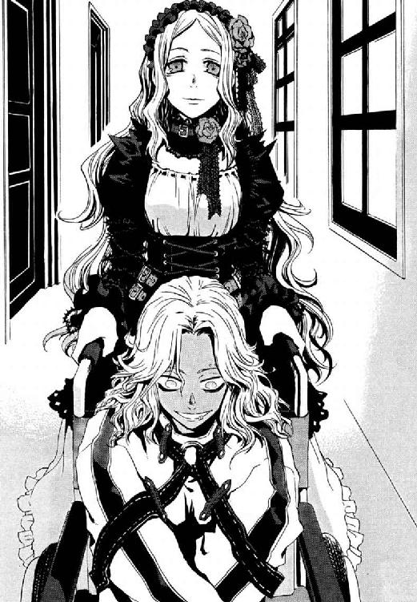
魔法とは、故郷の世界に独特な自然秩序のゆがみに、観測者である魔法使いがつけこんだものだ。それが自然秩序の整ったこの世界でも使えるのは、魔法使い自身が、故郷の不安定な自然法則を常に引き連れているためだ。円環大系は振動や回転のように周期をもつ運動に《魔力》を見出し、それを操る。まさに今、アラクネの円環大系の自然法則どおり回転という周期運動が不安定になり、片輪の止まった車いすがひっくり返った。
受け身もとれず床にたたきつけられた拘束衣の魔女が、まだ楽しそうに笑っていた。
ここまでひどい状態の証人と、どう査問の打ち合わせをするか仁は途方にくれる。
「これはさすがに、薬が抜けるまで待ったほうがよくないか？」
「武原係官、彼女の状態は待っても改善しません。アラクネ・ショージァは、口腔内の唾液や歯垢、血液などの組成を化学的に組み替えて、麻薬や覚せい剤をつくる魔法使いですから」
魔法使いは、奇蹟の力を堕落するために使えば、仁たちこの世界の人間が想像もつかないほど深い泥沼に沈みこめる。ある意味しあわせの切符を手に入れた中毒患者にどう付き合えばいいか迷う仁に、魔法学者溝呂木が親切に解説してくれた。
「円環魔導師が、水を解離させて水素を取り出すように、電子を操って物質の化学結合を解くところを君も見たことがあるだろう。彼女は口腔内を、特定の化合物をつくる化学プラントにするのだよ。口腔内部は他人に観測されないから魔法消去に対しても強い。ただし、覚せい剤、彼女の場合メタンフェタミンの中途生成物を気体化して鼻腔からはき出しているため、彼女ののどと鼻の粘膜は慢性的に重度の炎症を起こしている。鼻血を出しはじめたら、口の中で薬物を合成中だと思っていい」
「たれてる！ 今まさにたれてるだろ」
アラクネのすこしまるい鼻から、鼻血が一筋たれていた。しかも止まらない。腕が拘束されているからこぼれっぱなしだ。
「ちり紙だ。鼻に詰めるぞ。鼻に詰めて怒ったりしないよな」
「心配はいらない。魔法使いはこの世界の人間とちがって、魔法で身体を直接制御できる。どんな摂りかたをしても、脳出血や心停止を起こして死ぬことはない」
「なんだ焦ってる常識人は俺ひとりなのか？ これでいいのか？」
まっ昼間から拘束衣を着た女の鼻にティッシュを突っこもうとしている今の状況が、喜劇なのか悲劇なのかは微妙なところだ。
「飛んでいる、飛んでいるのに落ちているの？ ベリベリ、ハッピィ？ 私も、お父様も、お母様も、ティリィも、犬のマルコニも、みんなで仲良く吊してあげるって。黒い空に、みぃんな浮かんで、ゅうらゆぅら揺れてるの。使用人が荒縄で振り子みたいに、ひとぉり、ふたり、さんにん、よにん、ごにん、ろくにん、ななにん、はちにん、きゅうにん、じゅうにん、じゅういちにん、じゅうににん、じゅうさんにん─────」
アラクネの目はまったく仁たちを見ていない。まぼろしの中の、荒縄で首をくくられどこかに吊された、家族や使用人の人数を数えているのだ。
「──にじゅうきゅうにん！ 矢を射かけろー」
そして体を弓なりにそらして、痙攣させはじめた。まぼろしをさまよっているのか現実に刻まれた傷なのか、魔女は白髪を振り乱し、泣きながら哄笑し続ける。
「オルガさん。同じ魔法使いだろ、こういうときはどうするんだ？」
《茨姫》オルガが、白い手袋の人差し指を立てて、上品に首をかしげた。
「自分から好んでウンコの海に飛びこむ人種は、こういうかたであったほうが納得できますが」
ぶんぶん頭を振って鼻血を飛ばすアラクネに、わざわざ近づいて鼻血まみれになりたいのは仁ひとりだった。
十崎京香が、きっともう外界の声など理解できないのだろう魔法使いに、それでも語りかける。
「あなたは円環大系世界で、《九位》の何を見たのですか？」
この魔女が、見たもののため廃人同様になったのなら悲劇だ。もし逆に、何も知らない魔法使いを誰かが目くらましで《公館》につかませたなら、彼女に真剣に対面する仁たちは喜劇なのだろうか。ここに今、どうにもならず傷ついた彼女がいるのに。
「質問を変えます。あなたが今、口にしている光景のことと、あなたが《九位》について知っていることは関係があるのですか」
「風はどうして、何もかも吹き飛ばすの？ 浮城も、何も何も。世界は絶頂に向かって墜ちてゆくまっ暗に墜ちる人も街も山も森も海も大きな空からまっ逆さまに！ ひゅー！」
一体どんな地獄を見て、アラクネはこうなったのだろう。魔法世界の情勢をこの世界から知ることは至難だ。鴉木メイゼルが刻印魔導師として墜とされた理由も、仁たちは円環大系世界で何が起こったか情報をとれていない。この数ヶ月は、本人が地獄に降り立つまでダレンの反乱を知らなかったように、《協会》の情報統制が厳しすぎるのだ。だが円環世界の人間である以上、アラクネはメイゼルの罪状を確実に知っている。神判は多くてもひとつの魔法世界でせいぜい年一回しか開廷しない。あの小さな魔女の名を、故郷の人間なら誰でも知っているはずなのだ。
「だれもおまえに危害を加えない！ 落ち着け！ ひとつ質問がある。いいか？」
仁は拘束衣の魔女の頭を両手でしっかりとらえた。薬物中毒患者の、加減のない力で振られる首を、男の腕力でわしづかみに固定する。生き証人がこんな状態でなければ、メイゼル本人が言い出すまで待つつもりだったから、裏切りのようで奥歯を嚙んだ。
「鴉木メイゼル──メイゼル・アリューシャって名前を知っているか？」
仁は、アラクネの表情にあらわれた変化を、どう受け取ればいいのかわからなかった。
眼窩は死人のように黒く落ちくぼみ、目は眼球がこぼれそうなほど見開かれていた。顔の筋肉をどこまで引き延ばせるかに挑戦したように大きく口が開いてゆく。声にならない絶叫のかわりに、よだれが赤くひび割れた唇の端を越えてあふれ落ちた。理性も感情も消え去ったがらんどうの顔に、恐怖だけがまだこびりついている。
体を縦に激しく痙攣させる女の両眼に、機械仕掛けのように大量の涙が浮かんだとき、仁は手でつかまえていられなくなった。
「私、ハッピー？」
結局、魔女は頭に血がのぼって人事不省におちいるまで頭を振り続けた。
「お疲れさまー」
肩の力が抜けた十崎京香が、紙コップのコーラを手渡してくれた。会議中の鋭さが詐欺のようだ。
仁は、もはやクリーニングしても無駄な血まみれのシャツを脱ぎ捨て、パイプいすにぐったりと腰を下ろしている。彼の服が血だらけなのは、大けがをしたり返り血を浴びたりで珍しいことではないので、他の職員に気にも留められない。考えてみれば嫌な職場だ。
「ダメね。今回は、ちょっと話にならないかもねー」
自分のぶんのアイスコーヒーを飲みながら、鋼鉄の事務官がため息をついた。しばらくの激務のせいかまだ険は残っているが、彼のとなりにいるのは、ぞんざいでおおざっぱな仁の幼なじみの〝京香姉ちゃん〟だった。
「話にならないって、そりゃマズイだろ。証人もう来ちゃってんだから」
「そうなんだけどさー。こりゃ、どう転んでも後味悪いなーってさー」
そろそろしあわせな時間は終わりだ、目を覚ませと、誰かが耳元でがなり立てているようだ。思えば、あの小さな魔女が来る前、専任係官武原仁にとって、毎日はこんなふうに救いようがなく静かだった。
「俺が呼ばれたってことは、彼女の護衛は俺がやるんだろ？」
仁は、洗ってもこびりついた血が落ちない手を見下ろす。
京香が、まるでそこまでお使いを頼むように、さらりと返してきた。
「本当は仁には、今度まわってきた刻印魔導師から使えそうな魔法使い、見つくろってもらうつもりだったんだけどねー。ちょっとこれが終わるまではアラクネのほうに専念して」
つまり、査問会が終わるかアラクネが刺客の手にかかって死亡するまでということだ。この魔導師公館で命は軽い。そちらのほうが当たり前に思えて、仁はいらつく。窓からの強い光が、カーペットに黒々とした影を刻んでいる。道を間違ったように、行きたい場所へたどり着けないのは、皮膚を焼く太陽にうかされおかしくなっているせいだろうか。
今、《公館》は戦後最大規模の人手不足だ。先月、《神に近き者》とたたえられた大魔導師が、地球全住民に戦いを挑んだ。グレン戦争と魔法使いが呼ぶこの事件で、二百十九名の刻印魔導師が、死んだ。補充は一週間前から順次きているが、刻印魔導師は極刑の罪人だ。管理が間に合わない状態で仕事をまかせたら、逆に《公館》みずから魔法犯罪者を野にはなつことになる。
仁がアパートでのんびりしていられたのも、この運用計画が決まっていない混乱のせいなのだ。
「いいのか？ 仕事させられる魔法使いがほとんどいなくて、公館まわりの警備も手が回ってないんだろ」
「そうなんだけどさー。もう、今、変に動かして刻印魔導師が殺人事件でもやらかしたら、公館自体あぶないのよ。現にこないだ、神和係官が管理してる刻印魔導師の死体から、アラクネの情報を仕込んだ魔法構造体が発見されたでしょ。これまでそこそこ信用できた刻印魔導師の腹の底、把握できないのに、新しいのは入れらんないでしょー」
《公館》と警察は、明治時代からの腐れ縁だ。だが、《地獄》で逮捕した犯罪魔導師へ魔法使い側が裁判を行わないため、司法の流れに乗らない《公館》の味方もあまりにすくない。魔法世界側の血なまぐさいルールで治安を守る仁たちは、人権に基づく近代国家の司法と矛盾する鬼子なのだ。たたかれてほこりが出ている間は、おとなしくするほかない。
「そういえば、うちって、ちゃんとよそとしがらみがある役所だったんだな」
「《公館》なんて、所詮ちっちゃい世界だって。本当に、一度、井戸の外の世界をしっかり見ないと、仁もここの空気で腐るよー」
京香が額に浮かんだ汗をハンカチに吸わせて、窓の向こうの空をあおいだ。仁たちは暑ければ生身の体に汗をかき、自然のままに老い、病み衰え、死んでゆく。ひとかけらの奇蹟もなく、それでも一億以上の人間を飲みこみ、仁たちの巨大な社会は回っている。
人並みのしがらみのためかけずり回り、汗をぬぐう京香が、ひどく尊く思えた。
そして今、幼なじみは、仁と共有できる思い出をたぶん片目では見ている。
「おとぎ話の末裔がそばにいて、おとぎ話に片足つっこんだって、私たちは魔法使いじゃない、ただの人間だしね」
「そりゃそうだ。高校くらいんとき気づいてればよかったんだけどな」
「私たちには私たちの世界の広さがあるし、がんばったらなんでもかなう、なんて、あるはずないのにねー」
そうして、お互いの身の程知らずさを、ちょっとだけ笑った。
こんなに静かな八月の陽の下だから、報告できると思った。京香は、妹にとっても幼なじみだったのだ。
「昨晩、うちのアパートに、光るさ、泡が来たんだ」
言葉にしはじめると、胸につかえて、うまくしゃべれない。急な坂道でスッ転んだように、ひとつつっかえると、どう普通にしゃべれるかもうわからなくなった。
「......悪い。京香姉ちゃんは、あれ見たことないんだよな。あの、舞花が、体を切り離すとき、いつも出てた泡が、昨日うちに来たんだ。どっかで生きてるとか、そんな話にはならないよ、それはわかってる。でも、一粒くらい、残っててもいいかって、思ってたことはあるんだ」
だんだん、目元に熱いものがこみあげそうになってきて、仁は大きく息をついた。
「たぶん、あれ、......舞花だ。自分でさ、あんだけタンカ切って出てったのに、こんなんなって、戻ってきやがった」
「それでも、うれしいんでしょ？」
あふれそうな何かを押しとどめていられる、そこが限界だった。
手元ががくがく震えて、仁は紙コップを握りつぶさないうちに、冷たい飲み物を一気に飲み干した。最近は思い出すこともまれで、振り切ったつもりだった。なのに、痛みは掘り返せば簡単に時間をさかのぼり、鮮やかによみがえる。口元からこぼれてしまったコーラを手の甲でぬぐっていると、熱くなった頰にひやりと冷たいものが押しつけられた。絹糸を透かしたように涼やかな夏の日差しを背に受けた京香姉ちゃんが、自分の飲みかけのアイスコーヒーを、深刻な彼の顔に押しつけたのだ。
「飲みなさい、飲みなさい。アルコール入ってないけど、じゃんじゃん飲みなさい」
「かけらだけでも帰ってきてもさ、うれしいとか、そんなふうにまとまらないんだよ」
冷たいもので腹の底を冷やしたくて、ありがたく一息で胃袋にたたきこみ、氷をぼりぼりと嚙む。いつも見守ってくれる京香姉ちゃんの、気遣いがくすぐったくて、いつまでも氷を食べ続けていた。
武原仁は、魔法使いと人間の間の半端な場所に立ち続けている。体を魔法に浸食され、魔法消去で燃える妹のそばで、息を止めはじめてからずっとだ。
そして、ずっと幼なじみの彼女が、彼を見守ってくれていた。
「俺だったら、問題ないよ。こんなときだから、ちゃんと切り替えて、仕事は完璧にやるよ」
「変に入れこむの、仁の悪いくせ。魔法使いは魔法使いだからね。好きこのんで、またつらい方ばっかり選ぶこともないかなーって」
最近、誰かに同じようなことを言われた覚えがあった。一体、誰からだっただろう。
「してないよ。ただ、メイゼルと同じ世界の魔法使いだからな。あのアラクネには、まともな情報があるかはともかく、せめて円環世界の現状を聞くまで死なれちゃこまるだろ」
あの小さな魔女との関係も、きちんと考えはじめなければならない。メイゼルと彼の道は、何年後か、かならずどこかで別れる。魔法使いにとって、自分らしくあることは魔法と不可分だからだ。奇蹟の天敵たる悪鬼のとなりで、それはたぶん実現できない。
「そんな顔しなくても、ちゃんと俺だってわかってるよ。水の底で息を止め続けたって、俺たちは魚にはなれない」
†
あのころから武原仁は部屋のドアを二度つけかえた。この部屋は、敵対する魔導師から、襲撃を三度受けた。
ドアの脇にもう表札はだしていない。鍵も、魔法関係者でない普通の窃盗犯と出くわすと対処が面倒なので、構造の複雑なものに付け替えた。それでもこのドアを開けたら、メイゼルやきずなではなく武原舞花が待っていておかしくない気がする。もう何年もそんな感覚とは遠ざかっていたのに、きっかけひとつで時間は巻き戻る。遠く離れた家族というのは、そういうものらしい。
「ただいま」
いつもの靴もサンダルもない玄関を、拍子抜けしたように明るい居間へ向かうと、ちょうど電話が鳴りだしたところだった。三回鳴って、人の動く気配がないことを確認してから、受話器を取る。
「はいもしもし」
〈仁？ 今、どう？ 舞花ちゃん、そこにいる？〉
電話の主は、十崎京香だった。ふわり、ふぅわりと、カーテンを透かした真昼の白い自然光の中を、光る小さな泡が静かに寄ってきた。中学生だったころ、妹が、幼なじみの京香からの電話を楽しみにしていたみたいで、仁は目を閉じて胸にたまった息を吐き出す。
「今、ちょうど来たとこだ。おい、話すか？」
受話器を向ける。ことばを理解できないのだろう。舞花のなれの果ては、そのまま台所のほうへと、そよ風に吹かれたように流れて行ってしまった。
「ああ、ダメだ。冷蔵庫のほうに行った」
〈あはは、冷蔵庫に負けちゃったか〉
京香の声はすこし残念そうだった。純粋にこの世界の人間である幼なじみは、目の前で起こっている小さな奇蹟を決して見られない。魔法使いの世界を盗み見られる半端な悪鬼である仁にも、今なら、奇蹟のおすそわけくらいならできる。
「今な、冷蔵庫の冷凍スペースのとこ、ふらふら飛んでる。外のこと、ちょっとはわかってるんだな」
〈舞花ちゃん、アイスクリーム好きだったよね〉
「待ってくれ、ちょっと冷凍庫開けてみる。......あ、いや、戻ってきた。流しにはまったく近づかないな。こんなになってもやっぱり舞花は舞花だな、食って寝るだけだ」
〈そっか、やっぱ自由人かー。料理とかぜんぜんしなかったもんねー〉
ふうわり仁の鼻先を通り過ぎて、魔法の泡は、彼女の城だった四畳半へと漂っていった。泡は昨夜から、一度も仁に反応していない。
〈で、これ以上話す舞花ちゃん情報がないってことは、仁と帰ってきた舞花ちゃんの関係もあんまりうまくないってことねー〉
「俺も二十四だし、顔も変わっててわかんないのかな」
見回せば、武原仁のアパートはもう玄関にはスリッパ、居間にはクッションにぬいぐるみつきのティッシュカバー、シールをぺたぺた張った手鏡に小物類と、メイゼルが持ちこんだ私物だらけだ。きずながやってきて、台所が食器・調味料類はじめ、急速に充実しはじめた。冷蔵庫に張り付いたふたつのマグネットのフックにはエプロンが二枚。そして奥の四畳半、あのころ生活の中心だった舞花の部屋には、ふたりの少女が寝起きしている。
仁は二十四歳に、京香は二十五歳になった。妹の時間だけが、十八歳で止まったままだ。
〈メイゼルちゃんたちのこと、その舞花ちゃんに報告はしたの？〉
「報告ってったって、本人が帰ってきたってより、遺髪だけ戻ってきたようなもんだぞ」
言いながら、どうしようもなく胸がかきむしられる。妹はもう死んでいるという、現実を思い出すからだ。
〈あ、そうだ。いっそこのまま、メイゼルちゃんもきずなちゃんも、仁のとこで引き取っちゃったら？ 舞花ちゃんも、仁に早く彼女とか連れてきてーって言ってたでしょ〉
幼なじみの話はなまなましい。たぶん、武原舞花が遠くなってしまった距離感が後ろめたいのだ。肉親の仁ですら、出会って三ヶ月だけど今いつも一緒のメイゼルのほうが、妹より現実的な問題だ。そうやって時間は、どんな記憶も、やすりをかけるようにすこしずつ削り取ってゆく。そうでなければ京香も、仁に小学校の教壇に立てと言えなかったろう。
「気、すんだか？」
〈ありがと〉
めずらしく、何でも彼より上手の幼なじみに、礼を言われた。
〈そうそう。こっちが本当の用件ね。さっき《公館》に公安から情報回って来たけど、ワイズマン警備調査会社の王子護ハウゼンが、また日本に来てるって。本当、今、ややこしいから他の役所の連中とは仲良くしといて。それと私、これからまた霞ケ関だから、メイゼルたち頼んます〉
そうして京香は、未練を断つようにすっぱりと電話を切ってしまった。
アラクネのことをメイゼルに教えるかに、彼女はふれなかった。犠牲を払ってまで守る価値のある証拠能力は期待できないと、すでに見切りをつけたのだ。あのころと同じ夏、あのころと同じように妹が体を切り離した白金の泡がこの部屋を飛んでいるのに、会話の内容はこの寒さだ。王子護が現れた目的がアラクネの口封じなら、仁がこれから戦うのはあの男だということになる。
この世界を地獄ではないと言ってくれたメイゼルと、彼は結局、多くのものを共有できていない。そう簡単に重荷をふたりで持ち合えるものか、不安なのだ。おとなとして、夏休みに日焼けして遊んでいるのが一番似合う小学生の少女に、そんな荷物を背負わせていいのか、良心以上に彼の立場が止める。彼女が要求する荷物は子どもが背負うには重すぎて、注意深く見守りながら挑戦するにも状況がいつも寒すぎる。結局彼は、妹が魔法を練習するのを応援できなかった、中学生のころから進歩していないのかもしれないのだけれど。
†
その同じころ倉本きずなは市の図書館にいた。小さな魔女鴉木メイゼルに連れてこられたのだ。
豊かな魔法世界にいたメイゼルの基準では、この世界の建物は驚くほど小さいそうだ。図書館で、家って普通この大きさだと聞いたとき、少女が本物のお姫様だった気がした。きずなまで、天井が高いここがお城みたいに感じて、ちょっとわくわくした。
「きずな、その本、そろそろだいたいの要点はつかめた？」
読書室の閲覧スペースの机に積んだ二十冊ほどの本の向こうから、メイゼルがきずなの様子をのぞく。ことの起こりは今朝、メイゼルが突然、昨晩の光る泡がどこからきたのかと言い出したことだ。公館本館で魔法使いが〝泡〟を作ったとして、ご近所さんに観測されると燃えるから、そこから歩いて十分以上かかる部屋まで無事に着くはずがないという。きずなもアパートの近くで、ときどき電柱の陰に変なものを見る。けれど、かくれるということを一切しないあの〝泡〟が飛びこんできたのは確かに不思議だ。
「戦争の本ってはじめて読んだけど。このあたりって、ものすごい飛行機に爆弾落とされてたんだね」
きずなは、実はちっとも頭にはいっていない本から顔をあげる。小学校くらいのとき、夏休みの登校日のときそんな話を聞いたけれど、正直、遠い世界の話だと思っていた。
メイゼルが、郷土史の本棚から漁ってきた航空写真をめくる。
「爆撃されたのは、このあたりに六十年前まで大規模な軍事施設がたくさんあったからみたいね。で、この国が戦争に負けて、アメリカって例の聖騎士のいる国が、基地にしたりしたみたい。ああもう頭にくるわ、こっちの写真も家の近所だけ映ってない。どうやってあれが公館から家までつけたか参考にもならないじゃない」
きずなも図書館で知った。この近所は昔、軍隊の大きな工場に爆弾を落とされたということで、その被害の写真がのった本が何冊かある。けれど、さいわい無事だったのか、武原家のアパート付近が映っている写真は一枚もない。
メイゼルは、図書館の他の利用客に聞かれてもわからないつもりか、魔法の話もおかまいなしだ。
「原因はわかってるわ。公館に近すぎるせいよ。この世界の人間に見られたら、写真からでも魔法消去は発動するんだもの。《協会》の魔法使いたちが間接消去を嫌うから、魔導師公館の近くの航空写真だけ一枚もここにないとして......」
魔法消去で燃えるはずの泡が、どうやって武原家までたどりついたのか、不思議で、うずうずしてしかたないのだろう。小さな魔女の声がだんだん興奮で大きくなってゆく。
夏休みで閲覧用の机は大混雑だから、きずなはまわりの利用客が気になって心臓が止まりそうだ。
「メイゼルちゃん。静かにしない子は、図書館の怪人にさらわれるんだよ。図書館ってこわいところなんだよ」
「ここ、もともと軍都なのよ。《協会》が支部のまわりを軍の生産地にするなんて、いつものことだもの。公館のことでもあるんだし、せんせは、たぶん全部知ってるのよね」
そして悔しそうに、メイゼルがぎゅっと強く拳を握る。
「あの泡のことも全部知ってるのに、せんせは何も言わなかったのよ。あれじゃ、あやしいのまる見えなのに......」
きずなもちょっとでも力になってあげたくて、古い航空機会社の本を、もう一度読みはじめる。猛烈な眠気がおそってきて、十秒後には本をつかんだまま机に突っ伏していた。
「きずなも、他人事じゃないのよ。かくしごとなくなんでもおしゃべりできる毎日を勝ち取れるか、またいくつも秘密を作られるか、これで決まるのよ」
あどけない魔女より少しだけ長い人生のぶん、あきらめることも重ねたせいだろう。きずなは、気持ちのいいところで割り切ったほうがいいと思うのだけれど。
「隠したいことは、隠させてあげてもいいんじゃないかなあ」
「そんなの、わかった後で考えるわ。我慢できる？ 知ってることはだまっててあげられるけど、知らないと、何もしたげられないのよ」
そうして、自分のことばで胸の奥の何かに気づいたように、メイゼルが頰を紅潮させた。メイゼルは、きずなより五歳も年下なのだけれど、驚くほどきちんと自分を持っている。自分が何を許せて、何が好きで、何に怒る人間かよく知っている。その毅然とした姿は、磨いた宝石のように見事だと思うのだ。
「本当にすごいね。メイゼルちゃんは」
「本当に、こんな調子で、何でもさらけ出して恥ずかしいのも痛いのもわけあえる関係なんて、いつできるのかしら......」
「......本当にすごいね。メイゼルちゃんは......」
そして小さな魔女はいびつな快楽に濡れ輝く瞳を吐息で冷ますと、日焼けした手で、今日一日の成果である、画用紙の上に色鉛筆で描いた地図を机に広げる。
「このあたりに昔あった施設、あたしがわかりやすく配置書いたげたから見てみなさい。この上のほうは飛行機作ってたとこ。下のほうのここは陸軍の燃料廠だったとこ。こっち、陸軍の研究所。ここは火薬製造所。上が飛行機、下は陸軍で、昔のこのへんって研究施設だらけだわ。でも、この世界の人たちの魔法消去を避けたくて、公館のとこだけ施設を造らせなかった」
地図上の、一大研究地帯のほぼ中心には、不自然な空白地帯がある。そこが魔導師公館だ。
きずなは、古い写真の中の、今とはまったく風景がちがう六十年前に思いを馳せる。《協会》と武原仁の先輩たちは、地図にない《公館》で、戦争時代に一体何をしていたのだろう。
「あの〝泡〟があらわれても、せんせが納得できた、秘密があるのよ。今だって、公館と《協会》の一番大事な関係は魔法世界から技術をもらうことだもの。戦争してたら技術が貴重になるでしょ。あたしたちの知らない仕掛けが公館のまわりに作れたならその時代だわ」
当たり前みたいに戦争のことを語るメイゼルは、刻印魔導師という罪人としてこの世界に来た。そのつながりが、きずなにはすこしこわくて、そして何か手助けしてあげたかった。
「でもメイゼルちゃん、今でもだけど、昔の地図でも飛行場たくさんあるよ。空から見られても魔法燃えちゃうのに、あの泡の手がかりがこの時代って変だよ」
そして、いてもたってもいられないと桜色の唇を嚙んで、小さな魔女が、大きなため息をついた。
「魔導師公館のこと、くやしいけど、本当に何もしらなかったのね......」
きずなにも、それが重要なことに思えてきた。
「わたしたちが知っている世界なんて、まだまだ小っさいんだね」
午後三時をすぎて、きずなはメイゼルと図書館の読書室から出た。一日目としては悪くない感触ではあったし、きずなが晩ご飯の準備を気にしはじめたせいでもある。
ちゃんとカバンに入れてきていた広告チラシを取り出す。
「電車に乗る前に、駅前で買い物しようよ。今日は豚のモモ肉と卵が安いよ。卵は、ひとり一パックまでだから、メイゼルちゃん手伝ってね」
「きずな、豚モモ肉とたまごって、世の中で何番目くらいにたいせつなことなのかしら」
メイゼルに宣戦布告をされても、きずなは家族みたいでもいたいから、すこしでもいろんな話をしたいのだ。実は、料理を真剣につくろうとしてくれたら、同じ話題ができそうでうれしくもある。
「しっかりごはんを食べるのは、一番だいじだよ」
「わかったわ。きずなの頭って、人間の本能にだけよく回るんだわ。食欲に近いから料理が上手で、睡眠欲に近いから安心して眠れる雰囲気をうまくつくれて、性欲に近いから根が色ぼけてるのよ」
またおっぱい話なのだろうかと、彼女が盛りあがったポロシャツの胸元を見おろすと、メイゼルはすたすたと早足で歩きはじめていた。読書室から図書館の玄関ホールをはさんだ向こう側には、四分の一ほどの広さの子ども室がある。
「あたし、子ども室で本を見てから帰るから、きずなはひとりで行ってきなさい」
メイゼルの背中を、彼女としては追いかけないわけにいかない。
「ごめんね。こんなとこでチラシなんか見たらはずかしかったね。でも、保護者なしで家から遠くになんて置いてけないよ」
きずなが保護者気分だったのが心外なのか、小さな魔女が鋭く振り返った。
「子どもあつかいしないで！ どうせ、終わったら学校の友だちと会う約束だったもの」
メイゼルが、本の入ったトートバッグを抱えて、左手で子ども室のガラスのドアを開ける。彼女は、こういう子どもっぽいカンシャクをときどき起こす。けれどきずなには、遠ざかる少女の小さな後ろ姿が、異世界から来たホームシックのように見えるのだ。
追いかけて入ってみた子ども室は、クーラーがきいていて、夏休みだけに大盛況だった。どこもここも小学生だらけで、ひんやりした床に座っているのやら絵本を読んでいるのやら棚にもたれかかっているのやら、まさにスイカに虫がたかるような無秩序っぷりだ。
「もう、どうしてそんな急ぐの？」
受付カウンターのあたりで、ようやく戸惑っているようなメイゼルに追いついた。
「世界はこんなに広いのに、きずなが突然晩ご飯の話なんかするからよ」
「言ってることがわからないよ」
ひとりにしてあげるべきだったかと反省したとき、きずなは奇蹟みたいに、見知った顔を本棚の脇に発見した。
黄色がかった陽光に淡く照らされる閲覧用のいすに、六年一組の三者面談で会った女の子が座っていた。学級委員長の寒川紀子という女の子だ。休日の寒川の私服は乙女だ。袖無しのブラウスは桜草の花びらみたいにまっ白で、ピンクの花の刺繡が入ったスカートにも白いフリルがついている。縁なし眼鏡の奥の夢見るような瞳は、四六版の大きな本に視線を落としていた。
「メイゼルちゃん、行かないの？ 寒川さんって子、そこだよ？」
きずなが本棚を指さす。ウサギを見つけた狼みたいに、メイゼルが一直線にかぶりつきに行く。
「なっ！ なっ！ なんで鴉木さんが図書館にいるんですかっ！」
メイゼルに声をかけられただけで、寒川さんは本を抱きしめて顔をまっ赤にした。本当に驚いたのだろう、ハダカでも見られたみたいな恥じらいかただ。
「ここは図書館だから、大声あげたら迷惑なんでしょ。はしたない声を聞いてほしいなら、今日はかわいいすすり泣きであたしを楽しませるのよ」
両手が本でふさがって抵抗できない寒川紀子の顔に両手をさしのべ、メイゼルが縁なし眼鏡のつるをつまんで奪い取ってしまった。黒髪の妖精が、自分の顔に眼鏡をかけた。いろんなものが大きく見えるのが楽しいのか、しゃがんだり立ったり、いろんなものに顔を近づける。いじられ遊ばれている寒川さんを見ていると、生贄を提供したようで気の毒になってきた。
「似合う？」
「メガネないと見えないって言ってるでしょう！」
青筋を立てて、寒川紀子がきっと立ちあがる。小学校での彼女たちがありありと浮かぶようで、きずなはちょっとだけ悪いと思いながら噴きだした。
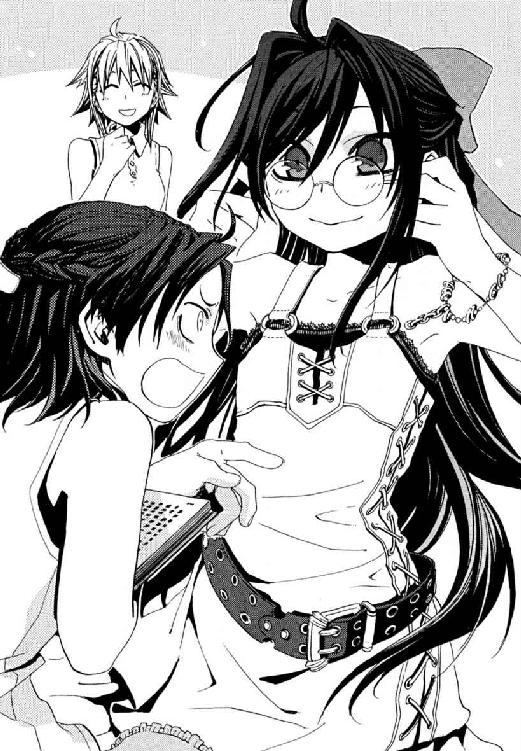
そうしてきずなたちは三人で図書館から出た。大きな声を出して、いづらくなったのだ。
図書館から一歩踏み出すと、前庭はタイル張りの広場で、金属のベンチと緑樹がいかにも文化施設らしい上品な公園になっている。まだまだ太陽は空の高いところにあって、外はすぐに汗ばみだすほど暑い。
「ということで、ちょうどいいからあんたが協力なさい」
噴水の脇にすえられたベンチにちょこんと腰掛け、メイゼルは、今度は寒川紀子に、さっき描いたばかりの地図を手渡した。そしてクラスメートの少女も律儀なことに、頼まれたらイヤとは言わなかった。寒川紀子とベンチにふたり並んで腰掛けた姿が、いい友だちみたいで、きずなもうれしい。
寒川紀子は、十崎家と武原家から駅ふたつしか離れていない図書館の近くに住んでいる。けれど、やはり近所で戦争のことや、昔話のたぐいは聞いていないと言った。
メイゼルが食い下がる。
「そんなわけないわ。地元なんでしょ、もうちょっとよく考えなさい。どんなにうまく隠したって、どこかに絶対残るものだもの」
ここから川をはさんだだけの南で十七年間育ったきずなとの扱いのちがいに、お姉ちゃん気分の彼女としては、期待度の差を感じずにいられないのだ。
「メイゼルちゃん。わたしがないって言ったら、そのまま流したのにぃ」
寒川紀子は、高校生のきずなが見ているのを意識してか微妙に話しにくそうだ。
「地図が大きすぎると思います。この地図、南は神奈川だし、北は埼玉まではいってますよ」
「でも住んでるみ、...あれ、民族も同じでしょ？ だったら昔話に関係ないわ。それに、このあたりの話なら一番いいのよ」
寒川さんが、たぶん市販品ではなく親が趣味でほどこしたのだろうスカートの刺繡を指でなぞる。あまり日焼けしないのだろう、メイゼルより白い手が、あまり上手でないピンクの糸の花から、黄緑色の糸の蔦へ、そして小さなかわいらしい葉っぱを爪で引っかいた。
「あ、でも怪談ならいっぱいある」
ぽつりと、寒川さんが気づいたように顔をあげる。
「怪談？」
「うん、このあたり、昔は工場がいっぱいあったって、鴉木さんの地図にも書いてあるでしょ？ だから戦争の終わるころに空襲されたんだって。それから兵隊さんとか、そのとき死んだ人が、夜になると出るってとこ、このへんでもあるかも」
さぁさぁと、噴水は水しぶきを真昼の陽光へ撥ね上げ、雨滴のように水盤に落とす。その静かな前庭に広がった嫌な沈黙の意味が、メイゼルにだけはわからなかったらしい。
「出るって何が？」
優等生然としたまじめくさった顔で、寒川さんがメイゼルに日本文化を説明しはじめた。
「幽霊です。鴉木さんは外国の人だもんね。日本には、体はないけど人間のかたちをした幽霊っていうのがいて、人を脅かしたり呪ったりするんです」
微妙に説明が適当だと、きずなは思う。メイゼルはちっとも怖がらずに、それどころか甘いものを食べたみたいに頰を笑みでふっくらさせる。
「その怪談って有望だわ。位置が知りたいわ」
「このへんだと、あっちのトンネルかなあ。あと、かまぼこみたいなコンクリートの覆いが畑の中にあって、そこも出るって」
英語は、魔法世界ではとても下品なことばだそうだ。だから、不用意に使うとメイゼルが怒るのだけれど、今日は気にも留めなかった。
「それよ！ 地下通路だわ。簡単じゃない、見られないには地下を掘ればいいのよ。よくやったごほうびに、学校じゃできない恥ずかしいことしたげるわ」
踊るような足取りで、メイゼルが寒川を立たせた。慌てるクラスメートを、背中を押して噴水のほうへと追いやってゆく。きらめく水滴が小さな虹をかけていた、そこへ突っこむように。
「やめて！ やーめーてーくーだーさーいー！」
「濡れたらよく透けそうな、とってもいやらしい服ね。あんたの下着がどのくらいはしたないか、ぐしょ濡れにしてたしかめてほしいんでしょ？」
ほほえましくながめていたら、かなり必死で噴水の縁石に足をかけ踏ん張る寒川紀子に、本気でにらまれた。
「なに笑ってるんですか!! あなた、鴉木さんのお姉さんなんですから、もっと妹さんの前で、しゃっきりしてください！」
「えっ？ 怒られたのわたしですか!?」
†
仁がアパートでひとり、柱にもたれてうとうとしていると、玄関のドアが開いた。入ってきた、逆光にぼやけた女性の、青いボーダーのポロシャツの大きく開いたファスナーからのぞく鎖骨に、思わず目をこすった。スーパーのビニル袋をさげた、倉本きずなだった。
「メイゼルちゃんは、もうちょっとしてからって言ってました」
白いミニスカートをかわいらしく着こなした彼女が、玄関の脇の台所へはいる。その後ろ姿を早くも自然な光景に感じはじめていることに、腹の底が甘くうずく。がさごそと、慣れた手つきできずなが、袋から卵のパックを出す。ひとつ、ふたつ、みっつと。
「そうそう。今日、メイゼルちゃんのクラスメートの寒川さんって子に会ったんですよぉ」
はずむきずなの声に仁は焦り、そして心を乱したことが猛烈に恥ずかしくなった。小学生らしくすごしてほしいと願ったのは仁だ。だから、小さな刻印魔導師が同世代の友だちを作ることに、付随するリスクくらい、受け入れる覚悟はあったのに。
「そっか、寒川か......。どうだった？」
「あれだけされてメイゼルちゃんと仲良くしてくれるのは、きっと趣味が合うんですね」
きずなは寒川さんを立派な被虐趣味の人だと思っていた。
台所で野菜を洗っているきずなは、あまりに地に足がついて、まるでここが彼女の部屋みたいだ。仁は、新婚家庭に迷いこんだみたいで気恥ずかしくなってきた。
「そうそう。卵、一パック五十円だったんですよ。ひとり一パックまでだから、寒川さんにも助けてもらっちゃいまして」
流しでは、三パックの卵が積み重なってすりガラス越しの夕陽を受けている。六年一組のきまじめな学級委員長が、「なんで私まで」と文句を言いながらも断れないところが、ありありと想像できた。
「メイゼルちゃんは、そのまま寒川さんのところに押しかけちゃいました」
「ついに踏みこまれたか......気の毒に」
「あはは......。メイゼルちゃんったら、『だって、かしこい狐はウサギをみつけると、ちゃんと巣穴がどこにあるか確かめてから襲いかかるのよ』なんてって」
似てないメイゼルのまねで、きずなが振り返る。たれ目気味の彼女がやると、気取った小さな刻印魔導師のしぐさが、妙に子どもっぽくなってかわいらしい。
「寒川もたいへんだな」
今ごろメイゼルは、寒川紀子の家にいるのだろうか。本当に、まるで、この夏はしあわせすぎて、まぼろしじみている。
「本当に、楽しそうでしたよぉ。寒川さんって、いつか童話作家になりたいんだって言ってました。あんな小さいときから夢を持って、しっかりしてるなあって」
晩御飯の下ごしらえに野菜を切りながら、きずなが言った。一歩はなれてメイゼルたちを見ている彼女がまるで、子どもたちの世界に入りきれない母親のようだ。
「わたしなんか、いつかお嫁さんかなぁくらいしか考えてませんでした。あっ、だから勉強いいやって投げちゃったわけじゃないんですよっ......信じてくださいよっ」
きずなが台所仕事をしながらしゃべるのを楽しく聞いていると、仁の鼻先を、妹のなれの果ての光る泡がふうわり飛びすぎた。そして小さな泡は、まな板と包丁のリズムに反応したように、台所のきずなに寄っていく。オレンジ色の夕日に、何も考えずに生きていられた小さいころ、母親にまつわりついていたころの武原舞花の姿がよみがえるようだ。
「そんなに気をつかってくれなくていいんだよ」
彼には、きずなにしてもらっていることに釣り合う何もできていないのが、怖かったのかもしれない。
「きずなちゃんだって高校生なんだから、夏休みをもっと楽しんでいいんだよ。そうだ、どこか行きたいところあったら、ぱーっと遊びに行くか？」
「忙しいのに、悪いですよ」
振り返り、目が合った彼女が、光線の加減で照れくさそうに見えた。
「ほんと、こないだはメイゼルに会いに行ってもらったり、海に連れてきてもらったり、きずなちゃんには世話になりっぱなしなんだよな」
「家のことばっかりやってるのは、好きだからですし、そもそも去年までだって夏休みはこんなでしたから。家族なら、......いや、家族じゃないんですけど、家族みたいなものだからお世話するのは当たり前です」
彼女のおだやかな輪郭が、夕焼けのとけた赤にぼやけてゆくようだ。
ふと思った。本当はきずなは、父親とすごしたころのような、小さな人の輪を望んでいるだけなのかもしれない。だから、その輪にはいる資格がない彼は不安になる。
「この子も、さびしかったから来たのかもしれませんね」
きずなが、武原舞花の体のかけらだと知らずに、魔法の泡をやさしいその瞳で見る。過去からの忘れ形見は、のんきに居間を飛び続ける。この部屋に同じ泡が浮かんだ、まだ中学生だったころの風景がよみがえるものだから、仁の感情はバカバカしいほど揺れて冷静でいられなくなる。
きずなが取りもどしたいのが満ち足りた過去だとしたら、真実すら隠し続ける仁がそばにいるのは、面の皮が厚すぎる。《協会》の宿敵である神聖騎士団が、歴史を改変し《神》を召喚しようとしたバベル事件。その黒幕は、かつて聖騎士だった彼女の父、倉本慈雄だった。歴史に干渉したい勢力にとって、世界の記述を書き換える再演魔導師はおそらく最高の選択肢だ。だから、彼女は今も《公館》の監視下にあって、その情報はきずな自身にも伝えられないほど機密レベルが高い。
「そうだな。これからは、うちに来たやつはみんな家族だってことにしようか」
好きだときずなから言ってもらったこともある。けれど仁はその返事すら先送り中だ。たぶん、彼自身が抱えている爆弾の大きさをわかっているから、こわいのだ。それは欺瞞よりなお悪い、卑劣だ。それでも、彼女の前ですこしでも善人でいたくてしかたない。彼女の前で世界がすこしでもやさしくあってほしいと思うのだ。
「そしたら十崎さんも、ごはん食べにくる神和さんも家族になっちゃいますよ」
きずながよろこんでくれたから、安い家族だなと脳裏でささやく仁自身の冷静な声を聞きながら、笑っていられた。
閉じたカーテンと窓枠の隙間から、夕方の風がさわやかに吹きすぎてゆく。ちりん、ちりんと透明な音が鳴る。
「風鈴、きずなちゃんがつけてくれたんだな」
かすかな音色を楽しむように、きずなも台所仕事の手を止める。
「本当に、ありがとう」
たくさんの、彼女に言わなければならないことがあって、謝らなければならないことがあるはずなのに、ただそれだけが素直に口から出た。
「どういたしまして。家族なんですから気にしないでください」
彼女が来てからずっとそうだ。きずな自身にとって、仁やメイゼルのそばが快適な居場所だったわけではない。本当なら夏休みを満喫しているはずの学生の彼女が、逆に、まわりのみんなの居場所を気持ちよく気を配って作ってくれたのだ。
このまま何もかも、快適な眠りに落ちてゆきそうな静かな夕べに、あと十秒だけ浸っていたかった。ちりんと響いた風鈴に驚いたように、白金色の舞花のかけらが空中にぴたりと止まった。澄んだ音色が、風の透明なひだの奥から、隠れていたやさしさを引き出すようだ。柱にもたれた仁は、あとほんのすこししたら立ってきちんとしたおとなに戻ろうと決めた。
†
────「いつか」なんでもできるように独り立ちできると、そのころ仁は思っていた。
武原仁が、期せずして親のもとから離れたあのころは、ただ状況に翻弄されていた。
十五のころ、妹を焼いてしまわないよう魔法消去を止め続けることで、武原仁の世界は、すこしずつ狂っていた。
アパートの部屋を一歩出れば、おのが正気を疑う極彩色の怪異と、噴きあがる業火の世界だったからだ。電柱の裏側には羽根のはえた妖精がおびえて震え、住宅街の人々に見られると鮮やかな炎をあげて消滅する。道を行くご近所の奥さんたちの後ろを、火だるまで、暗い瞳をした凶相の怪人たちが通り過ぎる。そして川のそばの、森にかこまれた小さな丘からは、毎日のように巨大な炎の柱が噴きあがっていた。魔法が見えるようになって、仁は自分の街が薄気味悪いもののうろつく魔都だと知った。小さいころから遊んでいた街が、まるでおとぎ話の風景だ。誰にも信じてもらえなかった。幼なじみの十崎京香に一度相談したら、「仁、疲れてるんじゃない？ まったくそんなもの見えないけど」と真顔で返された。
だから中学から帰るとき、仁は必ず人通りの多い場所を、逃げるように自転車をこいだ。炎が見えないよう目線を落として、自分は頭がおかしくなっているんじゃないかと何度も疑いながら。
それは夏休みの課題を手っ取り早く片付けるため、クラスメート数人で集まって問題集の答えを写し合った帰りのことだ。日没後、仁はパンクした自転車を押していた。気味の悪い生き物がよくいるからいつもは通らない一車線の細い道で、幽霊のような男に出会ったのだ。
まっ白なスーツの上下が、夜に飲みこまれかけた夕陽に染まって、血にぬれたようだった。長身の白スーツ男が、自転車を押す彼へ視線をやった。
魔法消去を止めだして、仁が目にした怪異の中で、それは格別だった。肌の色は仁たちと変わらないし羽根が生えているわけでもない、右目を銀の眼帯で覆ったただの四十歳くらいの男だ。表情は軽薄で、白い帽子の下の髪は金髪で、紫色の瞳の輝きは闊達だった。なのにただ、彼がいるだけで、真夏のねっとり生温かかった風が、底冷えするものに変わった。
白いスーツの怪物が、にやりと唇の端を吊りあげる。
「ボーイ。怪物に食われることに資格があるとしたら、それは怪物が見えることだと思いまセンカ？」
男の茶色い革靴の下に、踏みしだかれた雪のような平べったいものが落ちていた。それは、三センチほどしか厚みがないのに、かたちも大きさも人間のおとなそのもので。
──地面にへばりつく人間大の黒いものが、損壊された死体に思えた。仁の全身につめたい汗が浮いた。
「正解デス。ごほうびに、本場の人体消失の魔術をご披露しまショウ」
怪物が、右目を覆う眼帯をわしづかみにして、外した。
ただそれだけだ。たったそれだけで、仁の知っている世界は黒い焼けこげを作り、無惨に穴をあけた。まるでこの世界そのものが一枚の風景写真だったみたいに、熱すらない異様な黒煙が、世界の写真が燃やされるままに満ちてゆく。人好きのする笑みに一つ空いたうつろな右の眼窩から、どす黒い奔流が押し寄せた。トラックにでも轢かれたように弾かれ、同時に引きずりこまれる矛盾する痛苦に、仁は溺れるように腕を振り回し足をかき必死であえぐ。目を見開いているのに光が消えたのは、巨大な黒いものに完全にとりこまれたからだと、大蛇に飲まれたネズミの本能で悟る。まっ黒な巨人の手にすりつぶされるような、圧倒的な死の恐怖に絶叫したそのとき、光があった。
武原仁が観測する世界から、怪異は跡形もなく消えていた。
「なんだ？ なんだそれ！ なんなんだおまえ」
仁はただ尻餅をついて、頭もまっ白でただ怒声と悲鳴をあげていた。頭は痛み、響き、視界は揺れ続けている。自転車が倒れている。魔法消去を、仁は大切なものを燃やさないように訓練で我慢し続けていた。底なしの闇に引きずりこまれて、そんな余裕があるはずもない。それで命を救われたのだ。
「君は、なぜ今さらこんなものガ？ 君は、こんなバカげた!? なんと罪深イ。誰が鍛えておいてくれたかは知りまセンガ──」
そして、仁を殺そうとした怪物が、全身をこわばらせて立ち尽くし、眼帯の右目を押さえて大きく息をついた。その拍子に手が帽子にあたって、地面に落としてしまったのも気づかず。
「はい。確かになにごとにもはじまりは必要デス。けれどなんというばかげた傲慢さデスカ？ ああ、あなたは史上最大の阿呆デス、────────ヨ。そんな──があるものデスカ、それは傑作デスヨ」
金髪の中年男が、さもおかしそうに肩を揺すっていた。眼帯のない左目に涙すら浮かべて、腹の底から笑っていた。武原仁が、この男が本当に笑ったのを見たのは、これが最初で最後だ。
「ボーイ、ぼくは、魔導師公館という役所につとめている、王子護ハウゼンといいマス」
帽子を地面からひょいと拾いあげて、中年男が一枚の名刺を手渡してきた。仁がうまれてはじめて人からもらった名刺には、聞いたこともない役所の名前が書いてあった。
《文部省 文化庁 魔導師公館 専任係官 王子護ハウゼン》
中学生の少年だった仁には、それがおとなの世界の招待状のように見えて、ほんのわずか興奮した。そして同時に役所の職員が自分を殺そうとした事実におびえていた。
「君は必ずぼくのところへ来ることになりマス。けれど、〝そのとき〟道に迷って右往左往しないですむよう、連絡先をわたしておきまショウ」
「おまえ一体なんなんだよ！」
恐怖に押しつぶされそうで声を荒らげた仁に、男が返したのは拍子抜けするほど優雅な一礼だった。
「遠くないいつか、同じ問いを、ぼくの同胞すべてが君へ投げるでショウ。《真なる悪鬼》ヨ。ぼくらは朽ち果てた神話のあるじ、魔法使いデス」
王子護とはじめて出会ったころ、仁は妹とふたりの暮らしにはやくもすこし疲れはじめていた。夏休みに、ろくに遊びに行けなかったのも、こたえていたのだ。
だから仁自身が罪悪感をごまかせる限界として、週に一日だけ外へ遊びに行った。毎回、友だちと勉強しにいくという口実だ。だからその帰りは、噓をついているのが気まずくて、アパートのドアの前で念入りに呼吸を整えた。
「ただいま」
当たり前な声で、帰りのあいさつをして戻ってきたことを部屋の奥に伝える。
王子護とはじめて会った日も、そうした。魔法使いと名乗った男のことを忘れようとして、尻餅をついて汚れたジーンズをどうしようと考えていた。奥から舞花が返事をすることもなくなっていた。それどころか、もう日は落ちているのに電灯すらついていない。夏休みにはいったころから、妹の調子は急速に悪化していた。体だけではなく心すら、彼が知る人間のかたちからズレはじめていた。
「ただいま、舞花！ いるんだろ？」
仁は大またに居間へと歩き、人の気配がないことを確かめると、そのまま舞花の部屋へと進んだ。紫がかった太陽がかすかに残照を注ぐ部屋で、彼はふすまの前でもう一度、呼吸を整えた。昼間楽しく遊んできたことや当たり前の夏休みを頭から追い出し、魔法消去が作動していないことを何度も確認する。深い海の底で、息を止め続けるように。
「はいるぞ」
勢いよくふすまを開けると、灯りのついていない部屋に何百匹という蛍が乱舞していた。もはや泡の色は白金色だけではない。そのはなつ色を自由に変えられるようになった無数の魔法が、空中を踊っている。まるでまっ暗な深海で、みずから光りながら泳ぐ無数の深海魚だ。仁が部屋に入ろうとした気配を読み取ったか、ビー玉ほどの魔法の泡は、すべて部屋の天井のすみっこまで飛んで逃げてしまった。
妹らしい影は、まだ布団に寝転んだままだ。本人が体を起こすかわりに泡がひとつ飛んできて、仁の額に触れてはじける。舞花の声が、彼の頭に響いた。
〈おかえり〉
仁は、その感触が好きではなくて、ひそかに奥歯をかみしめる。毎日すこしずつ妹は魔法の腕を上達させてゆき、すこしずつ人間の感覚から離れてゆく。踏み外してゆくのは舞花のほうなのに、こうして仁自身こそが不完全な、いらないものに思えてくる。
「ちゃんと声で答えろよ。横着すんな」
「お兄ちゃん、自転車のチェーン指で触ったでしょ、油でまっ黒になってるよ」
横になったまま動かない妹のタオルケットをはがそうとしたとき、彼女に釘をさされた。魔法の泡がほのかに輝いているとはいえ、普通の人間なら色を判別できる明るさではない。自分の体を魔法に置き換えてしまった武原舞花は魔法消去で燃える、外を出歩けない人間になった。だがそれは、魔法消去さえ度外視すれば、能力的にはヒトの枠を踏み超えたという意味でもある。妹にはもう電灯など必要ないのだ。
蛍光灯をつける。神秘的だった蛍の乱舞が、侮れるくらいちゃちに見えた。
「晩メシは、宅配のピザとろうか？」
「わたし、今日いらない」
パジャマ姿の舞花が、ごろりと布団の上を転がった。見慣れた妹の姿に、こんな彼の甘ったれのままでいてほしいのだと伝えるため、仁は笑いかける。ずっと練習してるからだいじょうぶだ、つらいことなど何もない。いつもどおりの舞花のお兄ちゃんの顔ができているはずだ。
「そっか。だったら、半分残しとくから、腹が減ったら食べろよ」
だが、一体誰に笑いかけていたか、仁はわからなかった。食事すらなしで生きていけるようになってしまった妹に向かって？ それとも、日々取り残されてゆく彼自身に向かって？
次の日も、舞花は自分の部屋で寝転がったままだった。
朝ごはんにも手をつけなかった。日中は気温三十四度まであがって、夜になってもひどく蒸すのに、妹は汗ひとつかいていない。
「晩飯、今日はなんにする？」
「いいよ。ほしくないから、お兄ちゃんだけ食べていいよ」
ああ、この人はしょうがないなあという顔をして、彼女は汗ばんだ布団に横たわったまま仁を見あげるのだ。
「わたしはだいじょうぶなんだよ。わたしは、これが自然なんだから」
舞花の生きることへの執着の薄さが、仁は不安でならない。小さいときから体が弱くて、運動することをあきらめた。外に出られなくなって、着飾ることもやめた。父親と母親が失踪して今の暮らしをはじめて、お金のかかる楽しいことは全部我慢した。そしてもう、食べものすら必要ないという。
「バカ、腹なんかへらなくても、うまいんだから食えばいいんだよ。魔法にしか興味がないんじゃ、家族で話せること、何にもなくなっちゃうだろ」
「......そっか。お金なくても、何にも好きじゃなくなったら、何の話もできなくなっちゃうもんね」
アイスクリームが大好きな舞花が、起きあがって冷蔵庫へと歩いてゆく。
ほっとして仁は、こういうときのために補充したアイスクリームをにこにこしながら選ぶ妹の横顔をながめる。彼には人を救う奇蹟の力などない。できるのはただ、息を止めるだけ。
「京香お姉ちゃんに会いたいな」
棒つきのアイスクリームを一口かじって、舞花がぽつりと言った。そうして、立ちあがってすこし女らしくなった自分の体を確かめる。
「うん、そろそろイケルかも？」
ばたばたはためきながら、大きなタオルケットが巨大なムササビが飛ぶように空中を滑って来た。自分の四畳半から、舞花が〝泡〟に持ってこさせたのだ。
「それじゃ、ちょっと京香お姉ちゃんのとこ行ってきます！」
突然のことに呆気にとられた彼を残し、玄関から妹がはだしのまま飛び出していた。ぱたんと拍子抜けするほど軽い音を立てて、ドアが閉まる。そうして、引っ越してきてはじめて、この部屋から妹はいなくなっていた。
肺がまるごと体から引きずり出されるような、恐怖と喪失感が仁をおそった。のどからほとばしろうとする叫びと悲鳴を、最後の理性が止めた。聞かれてアパートの住人が出てきたら妹は死ぬ。
仁は四つんばいになりそうな、力のはいらない足腰をむりやり踏ん張って、転がるように追う。
飛び出した夏の夜は、結晶に封じられたように静かだった。月明かりのせいか、暗い街は魔法の世界と彼が知る現実の、得体が知れない混合物に変容したようで、ひどくこわかった。夜と、より深い夜のはざまで、彼はあまりにも小さく弱い、運が悪ければ食われるしかない弱者なのだ。
武原家のアパートから十崎家までは、夜の闇を歩いて三分とかからない。どぶをふさいだコンクリート板の隙間から、緑色の子鬼が顔を出していた。今は近所の人に観測されていないのだと安心する。
「舞花！」
妹は、見られても魔法を焼く視線を直接受けないよう、大きなタオルケットを頭からすっぽりとかぶっている。まるでおばけだ。
「お兄ちゃん、ほら、いいアイデアだよね、これ」
タオルケットの中で妹が手を広げると、うらめしそうにおばけが体をゆする。
電灯の明かりが漏れる、ドアの開いた玄関には、仁たち兄妹にとって特別な人が立っていた。Ｔシャツにデニムのショートパンツという適当な服装だが、仁にとってはそれすらまぶしすぎた。十崎京香はひとつ年上の幼なじみで、両親が留守がちだった仁たちにとってはお姉ちゃんがわりだった。十六歳にしてすでにかわいいから美しいに脱皮を果たした彼女は、武原兄妹の自慢だ。まっ黒な長い髪をポニーテールにした彼女のマネをして、舞花は髪を結ぶようになったのだ。
「仁、かたっぽ舞花ちゃんのサンダルじゃない」
左足だけのピンクのサンダルを、仁はきっとはだしで飛び出した妹のほうへ、押し出す。京香はいつもどおり、堂々とまっすぐに見たいものを見る。
細い眉を寄せて、京香が仁を詰問する。
「ところで舞花ちゃん、本当にだいじょうぶなの？」
「だいじょうぶ！ だいじょうぶ！ 本当にちょっとだけよくなったんだから。見られちゃうとまずいんだけど、お話するくらいならだいじょうぶになったんだって」
妹がことばを発するたび、タオルケットの内側から熱のない炎があがった。舞花のことばが、大好きな幼なじみのお姉ちゃんの耳に届くたび、タオルケットの内側で炎があがる。のどが、肺が、舌が、魔法を焼くその力にさらされて、焼かれているのだ。
「仁────」
「久しぶりに来たんだから、笑ってやれよ」
ただのわがままだけど、噓をついてまで、寂しくて飛び出した妹のために楽しい顔を見せてやってほしかった。舞花は眼球を焼かれるのがこわくて、京香の姿を目に映せてもいないだろうけれど。
「京香姉ちゃん。しばらくこっち、見ててくれないか。そうでないと、舞花が、安心して京香姉ちゃんの顔、見れないからさ」
いつかよくなるといいねと、妹は夢見るように言い続けてきたのだ。その『いつか』が来月なのか、来年なのか十年かかるのか、仁にも京香にもわからない。だからタオルケットおばけになった妹に、今晩が思い出の夜になってくれたらいいと思った。
幼なじみがくすぐったそうに、彼を見ていた。仁にとって、なんでもできる京香はあこがれだったから、真正面から無言で顔を合わせていると気恥ずかしくてたまらない。すぐ隣で、息を潜めるような気配がした。きっと今、思う存分、彼女は幼なじみを記憶に焼き付けているのだ。
「お兄ちゃん、お姉ちゃんに釣り合うように、もっと頑張らないとだね」
体を折って舞花が大きく咳きこんだ。京香が驚いて振り向いたとき、妹はタオルケットの前を開けていた。
わずか一瞬で、舞花の体が燃えあがった。すべての細胞が、オレンジ色の爆炎をあげて爆発する。
音もなく、仁の大切なものが、炎上しながら崩れ落ちる。妹の体をすんでのところで抱きとめた。その手にずるりと、溶けた皮がまるごと肉からズレたような嫌な感触が伝わった。
「舞花？」
仁自身の声も、まるで遠くから響くようだ。妹が苦しそうに胸を押さえて咳をするたび、タオルケットに隠れた体のどこかで小さな炎が爆発する。すこしずつ、魔法で構成された体は崩れつつあった。しあわせな『いつか』などいつまでも来なくて、すべてこんなふうにダメになるのだと、仁のどこかが凍りつきはじめていた。
「ごめん京香姉ちゃん。勝手に来といて本当に勝手言うけどさ、ちょっとごめん、もう帰るよ」
そして、すべての望みから逃げるように、仁はまともに立つこともできない妹を支える。
京香の父親が、武原兄妹の父の親友で、魔法のことを教えてくれた十崎理五郎おじさんなのだ。魔法のことも舞花の状態のことも京香はもちろん知っている。だから自分の一瞬の視線が一体どんな結果を引き起こしたかも、幼なじみにはわかっていたのだ。
京香が、運命の神様を張り倒しそうな目つきのまま、舞花を元気付けるように笑顔を作った。
「......がんばれ。舞花ちゃんと、今度小物買いに行くって約束、待ってるから」
そして十崎家の玄関が閉まった。たぶん不安と自己嫌悪のどん底の京香を、ドアの向こうに追いやって。
パイル地の布を引きずりながら、妹と同じ背丈のタオルケットおばけが仁を見あげた。
「......失敗、失敗。......魔法、上手になったから、ちゃんと、体が燃えちゃう前と同じに、わたしの体、作れてると思ったのになあ」
舞花の泣き声は、小さいころから幾度となく繰り返した思い出のとおりだ。だから、仁は、べそをかく妹にいつもしてやったように、布地ごしだけれど頭に手をのせ、顔をのぞきこむ。
「だいじょうぶだよ。絶対に、がんばってたら前には進んでるんだから。すこしずつ絶対に」
小さいころは、転んですりむいた手が痛いだの寂しいだのと、つまらない問題ばかりだったから、こんな気休めでも役に立てた。
「お兄ちゃん。『いつか』わたし、また、ちゃんと外に出られるようになるのかな」
彼には、お兄ちゃんなんて呼んでもらう資格はない。深い海の底で息を止めるように、耐えたのは仁ひとりでないと、気づけなかったのだから。一番つらかったのは、外に出られなかった舞花だ。だから病床の闇の底、練習を続けていたのだ。うまく魔法を使えたら、誰に見られても燃えない体を作れて、なくした当たり前のものを取り戻せると信じて。
「出られるよ。絶対に、がんばってどうにもならないなんておかしいだろ」
他にどう言っていいかわからないだけなのに、口にしたいつもどおりのなぐさめがごまかしのひどい空虚さで夜に広がってゆく。ここにいるのは、仁の知らない世界へと行ってしまいそうな魔法使いなんかではない。どんなになっても舞花は大事な妹なのに、彼には燃えかけの彼女をどう助けていいかわからないのだ。
「だから、また誰かに会ったら危ないからアパートまで戻ろう」
妹の手は、大火傷でも負ったみたいに火ぶくれだらけだった。
「お兄ちゃんも、わたしがこんなじゃイヤだよね。もっと普通に遊びに行きたいよね」
舞花がタオルケットの奥で大きく咳きこむ。仁はだいじょうぶだと言いたくて、ことばにしたら気休めみたいでこわくて、ただ分厚い布地ごしに妹を抱きしめた。いつも見ていたより、肌に触れた感触がひとまわり小さかった。触れ続けていないと、離れたらこのまま溶けてなくなってしまうようで、仁は奥歯が鳴って止まらなかった。
来たときの勢いが噓みたいだ。左足のサンダルを妹にわたした仁と、右足がまだはだしの舞花と、片足はだし同士で夜の街を歩く。十崎家の明かりが見えなくなったころ、舞花が立ち止まった。仁が手を引いても、何か決定的なものをあきらめたように、動くことをやめた。
「わたし、もう死んじゃうなってなったら、体をあの泡に変えようかなって。そしたら、死体とか残らないから迷惑かからないかなって思うんだ」
どうにもならない怒りが腹の底からつきあげて、仁はもう自分が何を言いたいかもわからなかった。
「死ぬわけないだろ。おまえ、魔法使いなんだろ。魔法使いってったらなんでもできるのにさ、死ぬわけないだろ」
頼りにならない彼の目に、勝手に涙が浮かんでいた。何もかもあきらめたような妹を見るのが不安だったなんて、仁の身勝手だ。何かをあきらめるのは、あきらめないとかえってつらいからに決まっているのだ。どれだけ、どれだけ彼女は、希望を持つことをやめる前、苦しみと戦ってきたのだろう。
「ごめんね」
こまったように妹が、仁の胸に体重をあずけてきた。分厚いタオルケットに、内側からしみこんだ血がにじみ出ていた。
「血が出てるだろ。見せてみろ」
「......ダメ」
タオルケット一枚というあやうい盾を握り締める手は、皮がめくれてまっ赤な肉がのぞいている。医者にだって、見せたら体は燃えてしまう。なのに舞花はどうやって、魔法消去で崩れかけたこの体を治すのだろうと思った。たぶん、妹はできないと知っているのだ。魔法と体を置き換えるようになってから、こんなひどい状態になったことは一度もないのだから。
「ちがうよ。わたしが体を今みたいに魔法で置き換えることにしたのはね、お兄ちゃんが学校に行ってる間に、やっぱりこんなふうに血を吐いたからなんだよ」
知らなかったから、仁には答えることばもない。
「だから、もっとはやくダメになってたはずの体を、腐ったブロックを新しいブロックに置き換えるみたいに魔法でごまかしてただけだから、覚悟はもうできてるんだ」
覚悟なんて大噓だ。細くて長い彼女の腕が、震えている。
たぶん仁も舞花も、本当はわかっていたのだ。がんばったって、報われないものは報われない。
それでも、このどうしようもない噓をつく妹のために、賭けでもいいから望みをつなぎたかった。もしも百人が必死でやって報われるのがせいぜい三十人だとしても、家族だから、妹は三十の側にちがいないと。
ポケットには、一枚の名刺が入っている。名刺の住所は、自転車で五分とかからない近所だ。ここからだって見える。熱のない炎を火山みたいに噴きあげるあの小さな丘に、どんな代償が必要にしろ救いはきっとある。
だから仁は、アパートの自転車置き場へと走り、自転車を通りに引っ張り出した。
「自転車に乗れよ」
タオルケットをかぶった妹が、ためらうように立ち尽くす。
「これから、魔法使いのところへ行こう。そいつらだったら、おまえのこと、ちゃんと治せるはずだからさ」
仁は、王子護が踏んだ死体が脳裏によみがえり、吐き気がした。あの怪人の要求するものが、安いはずがない。
タオルケットおばけが、首を振りかすれ声で仁を止めようとする。
「そんなことしなくていいよ。......わたし、思うんだ。わたしは、本当は誰かの見ていた夢なんだよ。だから、きっと、ほかの人に見られると消えちゃうだけ」
「そんなことあるもんか！」
彼は怒っていたのだ。ふがいない自分に、妹をこんな体にしためぐり合わせに、魔法が燃える世界に、あまりにも多くのものに。
「俺たちは、もっとしあわせになれるはずだ！ なっていいはずなんだ!!」
仁は歯を食いしばり、自転車のサドルをまたぐ。タオルケットおばけのまま、妹が荷台に乗って、手を回して仁の胴をしっかりつかまえた。そこで何が待っているかすらわからないのに、彼を信じて。
そして仁は、自転車をこぎだした。
仁たちのアパートがあるあたりは、土地がまわりよりすこし低い谷になっている。別に、何も名物なんてないのだけれど、条例で五階建てより高い建物が建てられない。道は細くてカーブが多いから見通しが悪く、五本ほど辻向こうは国道に近くて走りやすい大通りだから自動車もそっちへ行って、いつも夜はさびしい。
「お兄ちゃん、信号無視した」
自動車なんて来ないのにひとつだけ無意味に配置された信号を突っ切る。両親と暮らした懐かしい家から持ってきた、ペダルがきしきし音を立てるママチャリで、短い坂道が多い懐かしい街路を、まるで空でも飛んでいるみたいに走る。
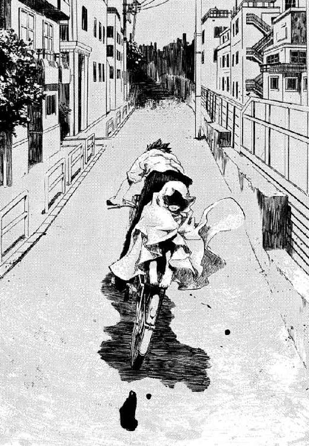
ばさりと大きな音がして、突然自転車のペダルが軽くなった。振り返ると、いくつもの明かりのついた住宅街の通りに、タオルケットが落っこちたところだった。ぐんぐん遠ざかってゆく。
「ごめん、おとしちゃった」
すこしいたずらっぽく、タオルケットおばけをやめた妹が笑った。あの一瞬の魔法消去で、顔にも首にも、肌が見えている場所で火傷のない場所はどこにもない。髪ももうポニーテールを結べない。ウサギのパジャマも血だらけだ。
それでも半年ぶりに家を出た妹が、向かい風の感触に、気持ちよさそうに目を細めるのだ。
「月がきれいだね」
八月の夜空は白い大きな雲の塊を浮かべ、まんまるな満月の前をよぎらせる。蒼い月明かりの中、火傷した目じりからきれいな涙がひとしずくこぼれた。
見られれば燃えて消える妹が、仁の背中にぎゅっと顔を押しつけてきた。
「わたし、もう、お兄ちゃんに迷惑なんてかけないから！ いつか絶対、ひとりでがんばれるようになるから!!」
背中ににじむ熱さが、彼に、自分が男の子だと思い出させた。
「そんなこと気にすんな！ 兄妹だろ!!」
前を向いて必死でペダルをこぐ仁からは、舞花の顔が見えないから言えた。
恥ずかしいような、体の奥から噴き出る得体の知れない熱にまかせて、ブレーキもかけずに人気のない夜の道を疾走する。どんな困難があったって、しあわせをつかめる気がしていた。
「わたしとお兄ちゃん、来年の夏は、今よりしあわせになってるかな？ いつか、こんなこと、みんな笑い話みたいに思えるようになるのかな」
もう二度と、武原舞花は何かをあきらめなくていいと思った。この道から引き返せないとしてもそれでいいと、仁は考えの浅い子どもなりに決めたのだ。
だから、車輪の回るカラカラいう音を聞きながら、仁は腹の底から言い切ったのだ。
「いつか、なれるよ」
魔導師公館についてからのことを、仁はうまく思い出せたことが一度もない。
覚えているのは、魔導師公館本館の玄関ホールで、あの白いスーツの怪物、王子護ハウゼンが待っていたことだけだ。彼は、劇の開演でも告げるように、気取ったしぐさで帽子をとった。疲れ切っても舞台から降りられない、くたびれきった道化の笑みで。
「──だから、かならず君はぼくのところに来るって言ったでショウ？」
†
そしてぼんやりとアパートの居間をながめる仁は今、二十四歳で、あの十五の夏から多くのものをなくした敗北者だ。いや、今ではそうではないのだけれど、敗北が出発点だったのは確かだ。
ずいぶん寝汗をかいたのだろう。シャツの胸元がべとべとになっていた。
ようやく兄の顔を思い出したのか、光る〝泡〟が鼻先を漂っていた。舞花が、もし死ぬときはと言っていたとおりで、五年越しの帰宅にどう言ってやっていいかわからなかった。
まただんだん気持ちよくなってきて、眠気を払うように両手で汗ばんだ顔を覆う。いいかげん起き出すころあいだ。
「なにか手伝おうか？」
晩御飯の準備をあらかた終えたきずなが、くすりと噴き出した。
「武原さんは、そのまま寝てていいですよ」
そしてはじめて、仁は、自分の体にタオルケットがかかっているのに気づいたのだ。きずながかけてくれたらしい。今の今まで気づかないのだから、さすがに抜けすぎだ。
どのくらい時間が経っていたのだろう。オレンジ色だった夕陽の光線が、気がつけば暗いルビーの真紅に変わっていた。台所で携帯電話の着信メロディが鳴った。
「あ、メイゼルちゃんからです」
電話に出たきずなが、教えてくれた。うん、うんとあいづちを打ちながら、仁にかわるためだろう居間までやってきたきずなが、仁の三歩手前で足を止めた。そして、ちょっと失敗とすこし舌を出した。その子どもっぽいしぐさが新鮮で、年の差や立場や、いろんなことを一瞬忘れた。
「切れちゃいました。あと、武原さんにおみやげがあるから、楽しみにしててって言ってました」
続いて仁の携帯電話が、ポケットの中で震えた。メイゼルからのメールだった。メッセージの題名を見たら、変な笑いがこみあげてきた。
〈寒川家、征服完了。戦利品もってかえるわ〉
よほど楽しかったか、メールには絵文字がたくさんはいっている。戦利品のヒントのつもりか、しまのはいった緑の球体を映した写真が添付されていた。
「......スイカかよ。おいおい、おみやげまでもらっちゃったか」
おみやげつきでお帰りということは、寒川紀子の家族に気に入ってもらえたのだろう。ほほえましいその様子を想像して仁がにやついてしまったのより、きずなの笑顔はきっと二倍は大きかった。
「わたしから、寒川さんのところにお礼のお電話いれておきますね」
仁は勢いをつけて畳から立ちあがった。時計ではもうすぐ七時だ。空の色も、日がもう落ちている紫がかった赤だ。駅からアパートまで、小学生がひとりで歩くにはすこし遅い。
心の底から、ふたりの少女に感謝した。妹を取り残して、仁の今年の夏は、去年よりも一昨年よりもしあわせになっているから。すこしでも、彼女たちのために何かしてやりたかった。
「迎えに行ってやるか。きずなちゃんも、よかったらいっしょに行かないか？」
†
日が落ちて、駅から出てくる人間の数が増えはじめた。ホワイトカラーの会社員たちが、仕事を終えて自宅に戻ってきたのだ。
神聖騎士団の上級聖騎士リュリュ・メルルは、肩をくすぐる白金色の猫っ毛を弾ませ、その人の波の中からたったひとりを探そうと背伸びをする。リュリュは、彼女たちが身を寄せている米軍の多摩サービス補助施設から、ここまで自転車で走ってきたのだ。神音大系の彼女たち神聖騎士団と、既知魔法世界最大の権力集団である《協会》は、一万年もの長きにわたって戦争状態にある宿敵同士だ。そして、《協会》と日本政府の仲立ちである魔導師公館は、この駅を最寄り駅としている。誰と顔を合わせてしまうかわかったものではない。それでもリュリュには、片付けねばならない用事があったのだ。
まだ十五歳の少女である彼女を、押し寄せる人の波の三人にひとりは振り返る。米軍基地が近くに散在しているせいか、このあたりでは彼女の髪や肌の色が珍しいわけではないとリュリュは知っている。それでも夜に街を出歩けば、頻繁に求愛を受ける。神音大系世界で聖職の名門メルル家の娘として生まれた彼女には理解しがたいが、そういうものらしい。
神音大系の人間は、ほかの魔法使いのようにこの世界を《地獄》と蔑まない。逆に、ゆがみなく完全であるがゆえ奇蹟が存在しない、真に完全な神が降り立つべき《約束の地》であると教える。そして奇蹟に報われなくとも祈り続けた人々の、無償の信仰に心打たれ、神聖騎士団は《約束の地》に神をもたらす誓願を立てて発足したのだ。
「あなたがたの苦難にこそ救いあれ。あなたがたこそ、まことの人間なのです」
彼女は、それぞれの生を精一杯に生きる人々の営みを見るのが好きだ。それは、彼女のあこがれである上級聖騎士エレオノール・ナガンが愛した光景だった。副隊長ニコライは、人のぬくもりから遠ざかり神に近づきすぎないように、だまされやすい純粋なエレオノールを、人々の中へ飛びこませた。思い出は、夏の景色と交じり合いすぐそばに息づくようで、彼女はただそれに見入った。彼女たち聖騎士も、いまだ奇蹟が根をおろさないこの風景とはちがう世界を生きている。それでも、いつか二つの世界が寄り添えることをリュリュは信じる。
仕事帰りの会社員にまぎれて、トートバッグをさげた小学生の女の子が降り立った。おつかいを頼まれたのか、手にはビニルひもでくくった大きなスイカをさげている。何十人もの人がいる中、自然にリュリュの目が引き寄せられたのは、女の子の容姿だけではない。スイカを揺らしながら、誰かに見せたところを想像しているのか得意げな顔になり、よろこんでもらった想像かうれしそうになり、あんまり評判がよくない可能性に思い至ったか、不安そうにじっと果実を見る。何分も見ていて飽きなそうなほど豊かな表情を見せた少女が、また楽しそうにスイカを振り子さながら大きく揺らす。
「あっ」
手からすっぽ抜けて、重量感のある果実が飛んだ。一キログラムを超えるみずみずしいスイカが、疲れた女性の後頭部に命中する寸前に、大きな手につかみ止められた。長い黒髪の小学生が、その手から腕へと視線をあげ、肩を仰ぎ見、顔を確かめるため体をそらす。身長二メートル近い長身の黒人男性が、バスケットボールをキャッチするように片手でスイカをつかまえていたのだ。
丸刈り頭の彼が、大きな丸い目をおどけさせて、スイカを女の子に返してあげている。
「いいスイカだ。音もいいし、重さももうしぶんない」
両手で受け取って、なぜか少女がえらそうにふんぞり返っていた。
「あら、スイカのよさがわかるのね。お礼を言ったげるから名前を教えなさい」
「そいつは光栄だ。おじさんはジェイク・フェニックスだ。君の〝先生〟によろしく伝えてくれ」
ジーンズにラフなプリント地のＴシャツだけのたくましい彼は、その手も大きく、笑顔もまた大きい。
リュリュが探していた相手、機械化聖騎士師団に編制された第三試験小隊隊長ジェイク・フェニックスがそこにいた。
彼女が知る聖騎士隊の副隊長の役目とは、かつてのエレオノール隊での上級聖騎士ニコライ・バルトのように、規律に自縛されがちな隊に柔軟性をもたらすことだったはずだ。だが新しく赴任した副隊長リュリュ・メルルの役目は、規律を標準まで引きあげることらしい。
かつてのエレオノール隊との落差に、リュリュのこめかみで血管が震えた。
任務地への帰りは、リュリュの自転車をジェイクの四駆に積んで、そのまま自動車で橋を渡った。
八月の夜間は、大きな花火があちらこちらであがる。だから音を《索引》として、それをかなでることで世界から奇蹟を引き出す神音大系の魔法使いには、魔法暴発のリスクが高い。この世界では、どんな魔法使いも魔法を思い通りには使えない。リュリュたちの乗った車からは、多摩川をはさんで魔炎をあげる魔導師公館が遠く見えた。
屋根のない吹きさらしの助手席から、彼女はハンドルを握るジェイクにたずねてみた。
「隊長は、スイカが、お好きなのですか？」
その黒光りする顔を汗でてからせて、ジェイクがにやりと唇をゆがめた。
「スイカはいいぞ。暑い日に海に持っていって、ビールを飲みながらかぶりつくと最高だ」
彼の左の耳にはイヤホンがはまっている。助手席のリュリュに漏れてくる楽曲は、神音世界の荘厳な宗教音楽ではなく、軽妙なジャズだ。彼女の新しい隊長であるジェイク・フェニックスは、忠実な騎士で、同時にこの世界の音楽を心から愛する変わりだねだ。
「リュリュ、チームで今度、海に行くんだがいっしょにこないか？ ちぃと男所帯だからむさ苦しいかもしれねえが、連中もよろこぶし、チームは親睦ってやつが必要だ」
音楽が神音にぶつかったのだろう。突然ジェイクの左耳からオレンジ色の魔炎がほとばしった。奇蹟につながる音を神音魔導師が聞けば、魔法はその意志にかかわらず暴発してしまう。だから、隊長ジェイクはこの世界の人ごみを好む。聴いた音楽が神音魔術を誤発動させても、誰にも迷惑をかけないよう即座に消去してもらうためだ。責務や信仰で剣をとる者は多いが、ここまでこの世界の文化を愛する騎士はそういない。
「それはそれとして、呼び捨てになさらないでください」
リュリュは前髪をもてあそぶ風が鬱陶しくて、白い指でかきあげる。たのもしいエンジン音は魔弾の誘導神音をしばしばかすめる。神音魔導師だけではない。魔法使いがこの世界の機械をあつかうのは、魔法の誤発動のリスクと隣りあわせだ。
「騎士リュリュ──」
「それと、よりによって、《公館》と《協会》の目と鼻の先でひとりになるのは控えてください」
車のゆく手に、彼女たちの戦場である多摩サービス補助施設が見えた。かつての日本陸軍の火薬工場だったものを、第二次世界大戦後、米軍の弾薬庫として使い、複雑な経緯を経て今も返還できない施設だ。
「私は、お姉様──騎士エレオノールが生きていると信じています。神意に従う道の向こうにお導きはあるはずですから、この重大な聖務を失敗したくないのです」
「だから、俺たちが足を引っ張るなってことか。オーケイ、オーケイ、次からは副隊長どのに書類一式を申請してから魅惑のサックスにひたりにいくさ」
ジェイクが車のライターで、煙草に火をつける。一本吸い終わるころ、リュリュたちを乗せた四駆はメインゲートを抜けた。かつては弾薬庫だったにしても、今はキャンプ場やゴルフ場でしかない、ただのレクリエーション施設だ。夜ともなれば明かりはまばらな街灯ばかりで、ところによってはそれすらなくなる。
「そういえば駅で、スイカをすっぽ抜けさせた女の子によろしくと言っていましたね。隊長の知りあいだったのですか？」
ヘッドライトが寂しく照らす暗い道を自動車は進んでゆく。この世界の人間の目がなくなったから、ジェイクが名残惜しげに音楽プレイヤーの電源を落とした。
「あれは円環世界のアリューシャ家の娘さ。今は落ちぶれて、専任係官《沈黙》管理下の刻印魔導師だ」
その専任係官の名に、リュリュのうなじの産毛が逆立った。彼女の古巣、エレオノール隊はバベル再演の聖務で全滅した。この戦いについて、神聖騎士団が知ることはすくない。判明しているのは《沈黙》武原仁と《魔獣使い》神和瑞希が魔法遺跡《幻影城》へ赴き、このふたりの専任係官が生還したことだけだ。
黒人隊長の横顔は、黒鉄のように表情を動かさない。
「俺たちの聖務は重要だ。《沈黙》に仕掛けるリスクを、今、払う意味がない」
リュリュは、車を運転する戦士に闘志を感じたからこそ、釈然としなかった。危険を冒す意味がないと思っているなら、なぜあんな名乗りかたをしたのかと。
「ですが、彼は同胞たちの仇敵です！」
だが彼女の隊長は、激昂するリュリュの姿を確かめた挙句、はぐらかすように大きな口を笑顔のかたちにゆがめるのだ。
「俺たちの聖務は敵討ちよりずっと重要だ。クールに行こうぜ、リュリュ」
リュリュは、よみがえる怒りと喪失感をかみ殺そうと心のうちに聖歌をうたう。揺れずにいられない感情が、彼女自身の未熟さを暴き立てられているようで腹立たしい。
「わかっています。聖騎士は皆、神意の種を運ぶ一羽の鳥。私も私怨でここにいるわけではありません！」
林に隠れた小さな小屋の裏手で、車が止まった。魔法使いは、重要なものを魔法消去から守りたいとき、閉鎖回廊の中にしまう。つまり完全に閉じた部屋を魔法で作り、そこに入る方法を魔法の扉だけにすると、扉の魔法を先に消去してしまうからこの世界の人間は部屋に入れない。閉鎖回廊の中は、消去に対して常に安全だ。
このゴルフ場の片隅にも、ここが米軍の弾薬庫だったときに設置された閉鎖回廊がある。それを守ることが、新設された機械化聖騎士師団の、まだ数少ない戦力であるジェイク小隊に与えられた聖務だ。デジタルレコーダーや電子楽器といったこの世界の機械で神音を奏でる戦闘部隊は、神聖騎士団にとってもひとつの挑戦だ。これが実戦に堪えると判断されたなら、機械化聖騎士師団は正式に配備され、彼女たちは精鋭として後進の戦闘部隊を指導する教導隊になる。
「だいたい施設を転用するにしても、せめて〝あれ〟だけは他の基地へ移しているべきです」
「移転のチャンスに、反戦活動家がたくさん米軍基地を見張っていたのさ。あのころあんなものがあると知れたら、日米安保条約は電子レンジに入れた卵みたいに吹っ飛んでた」
「それと、私のことを呼び捨てになさらないでください」
いつか、彼女は新しいこの小隊でも、名前で呼ばれるのが自然になるのだろうかと、ふと思った。
リュリュたち神聖騎士団は一万年前に誓願を立てた。『いつか』真なる神をこの世界に招き、人々を救うその日のため命を捧げると。そのいつかが彼女の生きている間に来るのか、リュリュには知りようもない。そして『いつか』、リュリュは戦いの果て、あこがれたお姉様に再び会うことができるのかもだ。
ジェイクは、まるでわがままな子どもをあやすように、強く指摘するときほど彼女に親しみをこめてくる。
「俺たちの今時点の見解では、騎士リュリュ。あれを狙うやつがいたとしても、閉鎖回廊の入り口位置を割り出すのが一番骨だと思うがね」
†
武原仁は、《公館》から携帯電話で呼び出された。真夜中の一時のことだ。
誰もが寝静まったまっ暗なアパートで、仁はメイゼルときずなを起こしてしまわないようあわてて電話をとる。用件は簡潔だった。
「なんでアラクネが外に出るんだ？ 監視は何をしていた」
声を殺して、仁は緊張感が足りない公館の連絡担当者にたずねる。作戦行動の詳細を知らない女性事務員はしどろもどろで要領を得ない。魔女アラクネに魔導師公館の敷地から勝手に飛び出され、そのまま行方を見失ったらしい。つまりこのままだと、円環世界の最高位魔導師《九位》のグレン事件への関与を証言する証人は、《協会》の動きを誘う餌どころか、自滅で失われる。
「捜索指揮は東郷先生にしてもらってくれ。今、京香に連絡したら、盗聴されて迷惑をかけかねない。あとは......」
ぴたりと電話の向こうの声は止まってしまっていた。その権限がないオペレーターに判断ができないのは責めるべきことではない。
「面倒ごとは実行役の俺たちが片付ける。まだ生きていたら遠くにはいないよ。俺が多摩川南岸を調べるから、刻印魔導師は北岸に展開させてくれ」
電話を切ると、また居間は静かな闇に戻る。夜十一時をすぎると眠い目をこすりはじめるメイゼルは、寝入って一時間ほどの最も眠りの深い時間で、起きだす気配もない。仁は短パンからスラックスにはきかえると、シャツの左脇にホルスターをつるす。対魔導師戦では、たいてい人間を撃つには威力がありすぎる大口径の銃を使う。「あんまり無骨に見えスギない銃のほうが、威力が想像できなくて撃ちやすいデショウ」とＡＭＴハードボーラーをはじめて貸し出されたのも高校生のときだ。同じ銃を使って、映画の中の殺人サイボーグが人を撃ち殺しているのを見たときは、当時の教官の悪趣味を恨んだものだ。今でも手にするだけで気がめいる。
魔導師公館周辺の道路は、一種の結界として機能するようにつくられている。つまり、用のない人間にとっては、入ってくる必要がないから自然に足が向かないよう道路が配置されているのだ。だから、その中でも、特に計算し尽くされた道となれば閑散としたものだ。深夜ともなれば本当に人通りは絶え、あの世ともこの世ともつかない領域のようだ。実際、魔法消去の影響を最小限度にするため整理された区画では、不可解な音や光に出会ったと幽霊の噂がよく持ちあがる。
そして仁たちにとって結界区画は、人気がない魔法を使える場所へ逃げこんできた魔法使いを仕留める絶好の狩場なのだ。こうした魔法使いの領域は、《公館》の地図では墨で塗りつぶされることから墨黒と呼ばれる。仁がかつて高校時代に怪人と会ったのも、倉本きずなが王子護と会ったのも、この墨塗りの道だ。
専任係官武原仁は魔法使いの痕跡を探す。魔女アラクネは薬物中毒者だ。使っていた車いすもなくなっていた。彼女の足は異常なほど細い。ゆっくり歩くならともかく走るのは困難だろう。車いすのほうが楽な上、速く移動できるのだから、手放すには踏ん切りがいるはずだ。
「となると、車いすには乗っているんだろうな」
このあたりでは店が開いてはあっという間につぶれる。隠れ場所を求めて中に忍びこんだ魔法使いを密室で仕留める絶好の罠だが、見回すとどこかでシャッターが降りている風景は、気持ちのいいものではない。仁は念のためもう一度周囲を確認して、魔導師公館に連絡を入れる。
「専任係官武原仁。午前一時四十九分。墨黒・チ〇五、魔法使いの痕跡、確認できず。リからワまで捜索範囲を広げる」
仁は、魔法使いが立ち寄りがちなポイントを、比較的魔法で感知されにくい自転車でめぐっていた。ブロック塀に立てかけていた自転車にまたがる。
人気のない通りを自転車で走る間だけは、向かい風が彼を涼やかに迎えてくれる。耳を澄ましても、聞こえてくるのは車輪が回る音と、かすかなペダルのきしみと、あとはかすかな蟬の声。彼が多摩川南岸をひとりで引き受けたのは、刻印魔導師を信用できない状態であることもあるが、それ以上に危険だからだ。神聖騎士団が現れる可能性のある場所でもっとも公館から近いのは、多摩川をはさんで南側すぐの位置にある現在の米軍多摩サービス補助施設だ。かつてそこが米軍弾薬庫だった時代から、公館本館とにはさまれたこの近辺は、聖騎士たちと《協会》そして公館が何度もぶつかった戦場なのだ。
地元だったから、当たり前のように自転車で橋を越えてここにも来ていた。仁は妹がいた中学時代とも、何も知らなかったもっと小さなころとも変わらない満月を仰ぐ。月は遠く高く、大きくその意味を変えても、夜の闇はやさしい。
瞬間、自転車の前輪が、ブレーキをかけていないのに突然ぴたりと止まった。すべる前輪を支点にきれいな弧を描いて後輪が浮きあがる。そして仁の視界は回転しながら落下────。
「くそっ！ ここかよ？」
仁は肩から落ちて、衝撃に骨をきしませ、体を丸めて道路を転がる。勢いを利して立ちあがった彼の首を刎ね飛ばさんと、横なぎにたたきつけてきた何者かの手首と月光を受けた白刃が陣風のように。
その手首に靴の裏をたたきつけて斬撃を殺すと同時に、仁は訓練された反射でホルスターから拳銃を抜いていた。仁は蹴り足を引いて崩れた体勢を立て直し、相手は剣を弾かれて膝をついた。風もない飽和した夏の闇夜で、仁は名も知らない甲冑の騎士の額に銃を突きつけている。
「全員動くな。仲間が死ぬぞ」
魔法使いが魔法を使える極端に見通しの悪い道は、のんびりした夜の散歩から、わずか数秒で殺し合いの場になった。
カラカラと風車が回るような音をたてて、倒れた自転車の車輪が勢いよく回転しだした。電柱の下に置かれたペットボトルは、ふたがひとりでにねじれてはずれ、ボトル自体も自転をはじめている。周期運動が不安定になり何もかもを回し続けるその秩序は、異世界、円環大系世界のものだ。観測者たる魔法使い、魔女アラクネは白髪を道路に広げてしどけなく倒れていた。口腔の中でみずから生成した麻薬がきいている様子だ。彼女はこの期に及んで、くつくつと笑っている。横転した車いすの車輪が、夜風を走ることなどできず、から回りし続ける。
アラクネが細い両腕をついて、体を起こそうとしはじめる。敵は三人、仁が銃口を向けたひとりは、見事に剃りあげた頭にさくらんぼの刺青を入れ、角ばった甲冑に首から下をよろっている。同じ型の鎧をまとった、同じ髪型と刺青の騎士がもうひとり、アラクネのゆく手をふさいでいる。最後のひとりは軽装のローブ姿で、電柱の上に腰掛けていた。
「魔導師公館、専任係官武原仁だ。いくつか聞きたいことがあるが、こちらの用事にはひとりで十分だ。あとのふたりはこのまま消えていい」
仁は彼我の戦力を比べて、戦術を組み立てる。仁の目的は魔女アラクネを助けることだ。敵は魔法使いが三人、甲冑のふたりは魔法世界の騎士、残ったローブのフードのせいで顔も見えない魔導師は機動力に欠けがちな騎士のバックアップ役だ。
彼の拳銃は、対聖騎士戦も想定して威力重視の四十五口径だ。引き金を引いて、派手な発射音を多摩の施設に聞かれるのは極力避けたかった。米軍でも、やはり魔法使いの存在はほとんど知られていない。もし見つかれば、銃声プラス麻薬中毒者にしか見えないアラクネで、連行されないはずがない。車いすの魔女を引きずって逃げ切れるかは賭けだ。
「変な気を起こすなよ。ここで、人気がまったくなくて魔法が使えても、そんなものはおとなしくしていればだ。音や光を出せば、魔法消去に引っかかるし、おまえらの言う悪鬼だって寄ってくる」
魔導師たちの目的はアラクネの口をふさぐことだ。だから必殺を期した刺客は、おどしでは引かなかった。
道路のゆく手をふさいでいたもうひとりの騎士が、抜き放った剣を仁へと向けた。その魔刃が、うなりをあげ赤い光を放ちはじめる。刃を熱したことによる熱輻射だ。仲間を人質にとられた状態で、その構えに微塵の迷いもない。
「言いたいことはそれだけか？」
《協会》圏魔法世界における騎士団は、仇敵たる神聖騎士団に対抗して発達した。だから神聖騎士団の影響を色濃く受けた、特徴をふたつ持つ。ひとつは、聖騎士たちの強力な汎用防御魔術《光背》を突破し得る、攻撃用魔法をあつかうこと。そして、魔法中心の世界の社会構造では特異な、軍人文化を持っていることだ。
仁の引き金ひとつで脳をぶちまける男が、憤怒の形相でおのが下唇を嚙み、口角から鮮血をこぼしながらあざ笑った。
「我らを舐めるな」
赤熱の剣を構えた騎士が、仲間に応じるように一直線に突進してきた。人間が走る速度では断じてない。疾風のように地をすべるその足元に展開するは円形の魔法陣。
「円環大系か!?」
うめいた仁の手の中で、一瞬ずれた銃口が跳ねあがった。死に体だった魔法騎士の足元に展開したものは、仁を何度も助けてくれた鴉木メイゼルのそれと同じ、円環大系の魔法陣。
土ぼこりを跳ねあげる死の突進の、軌道には、魔女アラクネが今も倒れ伏したままだ。
「逃げろ！ 車いすをつかめ!!」
それがアラクネの生きる意志であったのか、仁は知らない。ただ、骨ばったやせた手は、確かにいすのハンドルをつかんだ。その体重で、ひっくり返った車いすが、車輪に派手な擦過音を立てさせながら起きあがる。車輪が摩擦力で地面を嚙んだ瞬間、彼女の体重ぶんだけ重心のずれた車いすが、前へ進もうとする力に振り回されてアラクネをぶん回した。
円環魔術による操作術は、かつてメイゼルが浅利ケイツの操作術をまったく防御できなかったように融通が利かない。だから騎士は、アラクネに移動されても軌道を追随させきれず弾丸のように仁へ、突進してきた。体を投げ出してようやくかわすと、まばゆい光があらわれていた。夜明けにはまだ三時間ほどもあるというのに、そこには小さな太陽があった。
「我ら円環世界が誇る豪勇無双の電磁騎士団。義によって謀反人アラクネ・ショージャを討伐せん」
最初に仁の首を斬ろうとした騎士が、その両手の間に渦巻く光の嵐を集めていた。純粋に大気を電離したプラズマではない。何千という小さな超高熱の金属粒が、光る虫の群れのごとく舞い集っているのだ。大量の電子を《魔力》として加速するより魔法の難易度は格段に下がるし、人体を切断するならプラズマではなく燃える金属砂でも十分だ。
仁は、はげしい気合とともにたたきつけられる赤熱した剣をかわしつつ、魔法騎士たちとアラクネの位置を確認する。彼のそばには騎士がふたり、十メートル離れた電柱の上にもひとり。白髪の魔女は、車輪に手も触れず車いすを高速で後退させている。摩擦音でタイヤをきしらせて、アラクネが車いすの座席部分にようやく体を落下させた。
本来、円環魔導師の戦闘における主戦力は、大量の電子を集めて敵に落雷させる人工稲妻だ。仁が魔法消去を下手に作動させると、これの先触れが見えなくなり、自分で防御できるとは思えない魔女は当たればほぼ確実に死ぬ。恐怖に顔をゆがめ親指を嚙んだまま、アラクネはまだ口元だけで笑い続けている。設計外の速度に車軸が悲鳴をあげて、車いすがガタガタ揺れていた。
「走れ！ そのまま離脱しろ」
「──それは許されません」
仁の指示に、女の声がかぶさった。電柱にのぼっていた魔導師の足元にも魔法陣が展開していた。
瞬間、ふわりと浮きあがるような違和感を覚え、次の瞬間から仁の体はじわじわと慣性運動の方向へすべりはじめた。踏ん張っても足にこめた力が伝わらない。実際、今、彼の靴の裏は地面からほんのわずかだけ浮かんでいた。円環魔術で道路と足の裏に反発する磁力を持たされ、体を浮遊させられているのだ。
一ミリメートルでも空中に浮けば、足の裏は地面との摩擦を失う。つまり、仁は地面を蹴れないため歩くこともままならず、アラクネの車いすの車輪もいくら高速回転させようが空転するだけだ。円環魔導師たちだけが磁力の反発を自力で操ることで、浮かんだまま自在に移動できる。
「「我らスラウネン兄弟が双炎の剣、見事かわせるか？」」
左からは赤熱した鉄刃、右からは磁力で集めたのだろう、もう燃えてはいない高熱の金属砂。二本の光剣が、仁の胴体をはさみこむように左右から振り下ろされる。背中にも浮力がはたらくことをあてこんで、仁は後ろへ倒れこむ。加速度が魔法の磁力で一瞬で殺されるせいで、衝撃は地面に落ちたときと大差ない。奥歯を嚙みつつ、数ミリ浮かんだまま後ろへ、慣性力で騎士たちから遠ざかるよう道路をすべる。
二本の剣がともに空を切った兄弟騎士は、さらなる追撃を仁へくわえる。密度を疎にして長さをのばした光砂の剣の、返し刃が仁に迫った。加熱されて磁性を失った金属粒が遠心力で飛び散り、冷えた先からまた磁化されて戻る。その温度分布が光の剣に厚みをつくり、まるで死神の鎌のように刃を変形させていた。
「その首、もらいうけたァァッ！」
熱した金属粒子を束ねているのも、仁たちを浮遊させ動きを封じているのも磁力なら、たがいに干渉しないはずがない。そして干渉力は攻撃用魔術のほうがまさった。磁場の乱れで、浮遊魔術が効力を失う。仁の背中が重力で道路に落下し、突然よみがえった摩擦でジャケットが盛大に熱をもつ。仁は首を落としに来た大鎌を、すんでのところで地面に手を突き後転してかわす。アスファルトにぶつかった刃が、はねかえるかわりに硬い音をたてて光のしぶきをあげ、また金属砂を回収して元の形を取り戻す。
「まだまだ逃げられはせぬぞ！」
夜の街から、まるで火花の銀河に迷いこんだようだ。光砂の剣から完全に飛び出た高温の金属粉が、地面に落ちる寸前、浮遊魔術にとらえられ、空中に縫いとめられていた。金属粒は威力を保証するため、小石ほどの大きさはあるらしい。熱されすぎた金属砂が、消えない花火のように仁のまわりで輝いている。
折れも曲がりもしない光砂の刃が、尾を曳く流星さながら袈裟懸けに胴をなぎにくる。仁は大きすぎる鎌の下をあやうくくぐる。髪がちりちりと燃える音と嫌な臭いがした。剣の磁力に反応して、地面に落ちず燃えていた星が引き寄せられ、あるいは浮遊させる磁場の消失により道路へ落下する。
赤熱の剣をかまえた騎士もまた、二度目の突進を仕掛けてきた。明らかに間合いが遠すぎる斬りあげだ。だが仁は、さがるかわりに、熱剣の騎士に倍する速度の踏みこみで内懐へ飛びこむ。瞬間、燃える剣がその刀身を二倍以上にのばし、空き家のブロック塀に一直線の傷をつけた。兄弟の金属砂の剣を一部拝借して、熱剣の斬撃の間合いを倍以上にのばしたのだ。更に光砂の刃が、仁がさがっていればかわしようのなかったタイミングで、横なぎに膝の高さと腰の高さと首の高さを同時に切り裂いた。
実際には三秒ほどだった攻防で、趨勢は決していた。
「われら兄弟が八連撃、魔法なしでかわしおったか!?」
「その戦闘法はすこし見直したほうがいいな」
動きにクセがある金属砂の剣は、本来かわすのが難しい。だが、剣をかためるための磁場が足元に展開した浮遊魔術に干渉するのでは、細工しても下を見れば一瞬後の軌道がバレてしまう。
魔法で地をすべり遠く間合いをとった兄弟騎士が、今度は向かい合って互いの両手を組み合わせる。
「「ならば、我らが電磁騎士団に伝わる秘儀を！ 聖騎士が《光背》すら突破する浄光の槍、とくと目に焼き付けるがいい」」
兄弟がゆっくりと組み合う籠手を離してゆく。その間に生じていたのは、先ほどまでの金属砂のそれではない白い光。見覚えがある、仁の小さな魔女ならひとりで構成する熱プラズマの槍だ。
そして、浮遊状態でも動けるはずの円環魔導師アラクネがそろそろ安全圏に入ったろう、と確認した仁は、絶句することになる。
魔女が白髪を振り乱し、恍惚とした笑顔で、よりにもよって空を飛んでいたからだ。
「空へ！ とととと飛んで!? 助けて、流れ星が！ 流れ星が!!」
まるで、見えない虹の架け橋をわたるような優雅なカーブを描いて、アラクネの車いすが急上昇していった。魔法使いたちにとっては卑語であるはずの英語の歌を調子っぱずれにうたいながら。満月へ向かって、ふらつきながら彼女と車いすは飛んでゆく。魔法のことなど知らないこの街の誰かが、今、満月を見あげたら、魔法を消去されアラクネは二十メートル以上も落下して地面にたたきつけられるというのに。それとも、このまま上昇しすぎて酸欠か寒さで意識を失うほうが先か。
「なにやってんだ、降りろ！ 正気か？」
仁はその飛んでゆく方向を知って、ぞっとした。米軍の多摩サービス補助施設だ。もし施設内にでも着陸したら、どうやって引き渡してもらえばいいのだろう。魔法使いであるかはともかく、アラクネが薬物中毒であることは明白だ。お薬で頭がしあわせになった若い女が柵を乗り越えた。ありそうな筋書きだが報道沙汰だ。だが仁は、数秒後、頭の中を駆け回った絶望的な算段より、さらに救いのない現実に出合う。
空をかける魔女が満月に重なり黒い影になったそのとき、地上から射出された槍のようなものが、音もなく車いすを貫いたからだ。
一本が背もたれまで貫通、続けて二本三本四本と上下左右から。
すべての槍は、魔炎のような、オレンジ色の炎をあげて燃えていた。
そして彼が守るべき証言者が、炎上しながら墜落した。
仁は専任係官として受けた地理的状況についての講義を思い出す。多摩の施設が、近づいた魔導師を問答無用で撃墜するほど過激な防衛線を張っていたのは、ベトナム戦争以前の話だ。なぜだと理不尽な衝動が体をおそい、そして彼は、メイゼルと同郷のアラクネを、できるなら最後まで死なせたくなかったのだと知った。
その数秒で、プラズマの槍の最低限度の構成は終わったようだった。スラウネン兄弟が、感心するほど息のあったハーモニーで大仰に宣告する。
「「貴様も後を追うがいい」」
仁は大きく三歩踏みこみ、必殺のつもりだったのだろう兄弟のプラズマ塊に手をかざした。
「もういい。なんで軍人のはずのおまえたち騎士団が、こんなに手ぬるいんだ？」
騎士団という戦闘を生業にしている魔法使いにしては、彼らの戦い方は雑だった。アラクネは無力だったのに、メイゼルですら戦闘に使う人工稲妻で確実に仕留めにかからなかった。
「「ぬるいかどうかはこの灼熱の槍を────」」
仁は魔法消去を発動する。火傷しそうだった手のひらの皮膚感覚が魔法を破壊し、純粋に《魔力》を使って集めたプラズマが急速に冷えはじめる。そして消去は制御魔術に作用し、魔法から精密な制御を奪う。武原仁は、魔法消去をしないことができる先祖がえりの悪鬼だ。電磁騎士団の魔法戦に、ナイフ一本も防げそうにないアラクネから、逃走に必要な機動力を奪わないため付き合ってもきた。だが、もう終わりにする頃合いだった。
「《協会》の刺客なら、俺の名前も手の内も、ある程度は知ってるはずだ。なのにどうしてこの程度の状況を想定しなかった」
「「やめろっ！ 正気かやめろっ」」
息を止めることをやめた仁は、今、いかなる奇蹟も観測できない。ただ、魔法が見えなくても、高慢だった表情をゆがめる騎士たちから恐怖は伝わる。
「悪いな。俺たちの世界じゃ、正気の人間は、こんな人家の近くで殺し合いはしないんだ」
「「────悪鬼ッ！」」
きれいに重なった絶叫と同時に、暴走した魔法が仁と騎士たちの中心で爆発した。それは魔法消去を発動している仁にとっては火傷しない程度の熱風、火球をはさんだ騎士兄弟にとっては甲冑に覆われていない肌を焼く超高熱の嵐。一瞬で大火傷を負った兄弟が、ショック症状に陥り意識を失い仁の前で崩れ落ちた。ジュウと肉を焼く音と、たんぱく質が熱で分解した異臭が漂いはじめる。
もはやことばを発する者は誰もない。電柱の上の女は、すでに逃走していた。
意識を失ったスラウネン兄弟を移送するバンに同乗して、仁は公館本館に戻った。墜落したアラクネの捜索は、《鬼火》東郷永光と、その配下で現在も唯一仕事に使われている刻印魔導師群、鬼火衆にまかされた。仁はお役御免である。
真夜中二時過ぎだというのに、公館はあわただしい。玄関ホールには魔法使い、公館の役人双方が入り乱れ、いたるところで怒声が響いている。
見慣れた豪奢なローブ姿の魔法使いが、つばを散らして抗議している。調整官ベルニッチが、精緻な飾りのはいった袖からのびる手で携帯電話を持つ姿には、奇妙な存在感があった。
「スラウネン兄弟が《門》を通過した記録はこちらにはないのだ。書類は私の管轄ではない。隠してなどおらんわ！」
この傲慢な高位魔導師をこれだけ必死に言い訳させるとなれば、おそらく相手は十崎京香だ。
玄関ホールのシャンデリアの下は、まるで舞踏会さながらの騒がしさだ。電磁騎士団という身元のはっきりした魔法使いが、魔導師公館保護下の人間を攻撃した事実は、それほどに重い。グレン事件のときの、倉本きずな暗殺未遂とは状況がちがう。きずなは、再演大系という魔法の危険度から公館も行動に責任を取りきれないため、保護ではなく、あくまで監視対象だった。今回、公館は《協会》に対して公式にアラクネの保護を表明している。
仁は、ホールの魔法使いたちを、隅っこに置かれているいすに座って観察する。彼らの表情もしぐさも、真実味を帯びている。奇蹟に愛された魔導師たちは、一流どころほど噓や演技の訓練を積まない。彼らは魔法をもってすべてを実現する。どんなに荒唐無稽だろうと、言ったすべてを真実にすることをこそ誇りとするからだ。
祭り囃子でも聞くように目を細めて、白衣を着た男が、仁の隣のいすに腰を降ろした。銀縁眼鏡とスポーツ刈りの瘦身がひどくバランスが悪い、公館嘱託の魔法学者、溝呂木京也だ。
「やれやれ。状況が殺伐としてくると、祭りになるのだな」
「なに言ってんだ、昔からずっとそうだっただろ」
仁は、ジャケットから煙草の紙箱をとりだし一本に火をつける。ずっと同じだ。魔法使いたちも、人間も、仁も、死んだ舞花も、みんな願いがかなう「いつか」を求めている。だから、何人もの「いつか」が交錯したら、次はぶつかる戦争だ。仁たちは、永遠に繰り返すような祭りの風景の中、犯罪魔導師を処理し、外敵を排除し続ける。
この魔法学者にも「いつか」があるのだろうか、溝呂木が喧騒のはるか遠くを見ていた。
「その通りだ。こうでなければ、魔導師公館とは言えない」
いつだって、大惨事になりそうだったり人が死んだり、神妙にしているのが当たり前のときばかり、ここは不謹慎な活気に満ちていた。仁が公館から離れないのは、この空気が彼の大切な日々と変わらないせいかと思えるほどに。
あの白髪のアラクネにも、夢見るまぼろしの「いつか」はあったのだろうか。仁はそう考えて、墜死しただろう彼女がひとりの人間だという当たり前のことを、苦くかみ締める。
「アラクネを撃墜したのは、やはり聖騎士でいいのか」
「腹立たしいことに、間違いないだろう。状況をもうすこしくわしく教えてもらいたかったがね。死体の状況から、どのような武器を使ったか調査できるのが楽しみだ」
「まだ死んだと決まったわけじゃねぇぞ」
アラクネの撃墜は、彼女の命自体より大きな問題をはらんでいる。聖騎士の過剰反応の理由が不明なせいだ。墜落した魔女を捜している《鬼火》東郷からの連絡はない。このまま発見できなければ、朝十時からは仁がアラクネ捜しを引き継ぐことになる。
「ああ、もう家に帰りてぇ！」
仁は、落ちそうになった煙草の灰を、あわてて灰皿に落とす。仁は、蚊帳の外に置かれていたことに絶対怒るだろうメイゼルに、今の状況を説明しなければならない。きずなが作ってくれる食事をゆっくりとれる時間もなくなるだろう。
頭を抱える仁を、珍獣でも発見したように溝呂木が見おろしていた。
「家なんてことばを、この九年で、武原君からはじめて聞いた。そんなに家が楽しくなったのか？」
†
七時頃、仁は着替えを取りに一度だけアパートに戻った。二階へ行く鉄の階段に、ラジオ体操にこれから行くのだろう、メイゼルが腰掛けていた。一応連絡を入れたメールを見て、待っていてくれたのだ。
「おはよう、せんせ。公館なら、あたしを途中までいっしょに連れてってくださらない？」
太陽によく映えるニットのワンピースを輝かせ、黒髪に黄色のリボンを結んだ少女は、おめかししておでかけするみたいだ。きちょうめんに、ラジオ体操のカードを首からさげていること以外は。
戻りがてらすこし走る予定は、メイゼルの歩幅に合わせて歩くことに変わった。小さな魔女はふたりの散歩道に、いつも人気がない墨黒の道を選ぶ。もう仁は、電柱の陰や暗がりに妖精や怪物を見ても驚かない。そちら側に彼自身がどっぷり足を突っこんでいるからだ。
「こっちは、あんまり通るなって言ってただろ。痴漢注意の看板だって立ててるし、危ない連中がよく入ってくるんだ」
近所の小学校の通学路からも外されている通りは、朝も人がほとんど歩かない。だから痴漢もよく出るのだ。
「わかってるわ。あたしだって、魔法使いでもない変な人と会いたくないもの。せんせといっしょのときだけよ」
公館の近くには、児童公園を含め、公園が多い。昔、軍や軍需産業の施設が多かったせいで、敗戦後に接収されたり取り潰されたりで土地が空いたのだ。小さいころの仁たちは、むしろ今考えれば危ない墨黒の道でよく遊んでいたのだけれど。
気がつくと、メイゼルが、のどかな夏からはみ出した真剣な視線を、彼に向けていた。
「せんせ、あの〝泡〟がなんだか、本当は知ってるでしょ？」
仁は心臓が止まるかと思った。魔法使いだって他人の心を好き勝手に読めないはずなのに、メイゼルには筒抜けみたいだ。
「なんでそんなふうに思うんだ？」
目の前の街路と重ねた思い出の間で身動きが取れなくなって、隠すことではないけれど、どう話せるものか迷う。
「せんせの顔見てれば、わかるのよ。お部屋の中ではあたしが先生なのよ。先生のこと、生徒が信じなくてどうするの？」
そのとき、五十代くらいだろう中肉中背の男が、行く手の十字路から、仁がいる一方通行の道路へ歩いてはいってきた。仁は体に緊張を取り戻し、歩幅を小さくする。墨黒の道に、見慣れない地の人間でない悪鬼が入ってくるのは、とても珍しい。外回りの営業中の会社員のように、汗ばんだ白いシャツにゆるめたネクタイ姿で、体格はいいが武器は持っていない。それでも、アラクネが撃墜されてまだ六時間だということが、彼にいつもはしない行動をとらせた。
仁はすれ違った男を、失礼だとは思いつつ携帯電話で後ろ姿の写真を撮れるだけ隠し撮りする。携帯電話を操作してデジタルカメラ機能で撮ったばかりの写真を確認していると、小さな魔女がぐいと力強く彼のシャツを引っ張ってきた。
「せんせ、本当に、どのくらいあたしに、かくしごとしてるの？」
†
その朝、十崎京香は、移動の車中でたった一時間の仮眠をとった後、魔導師公館のたまった事務仕事を軽く確認した。そして書類を前線には出ない課長や室長に送り、必要な連絡を済ませた後、空いた数十分の時間を接見に使うことにした。
固いノックが響き、窓のない会議室に、四人の職員に囲まれて連れてこられたのは、ひとりの少女だった。色あせた黄金色の髪を肩までのばした彼女が、洗われたように清楚なのは、外見と同時に内面の純真さのあらわれなのだろう。年齢はまだ倉本きずなと同じ十七歳。背丈は京香とそうかわらない百六十六センチメートル。簡素なローブに包まれた体からは、二ヶ月近い虜囚生活の過酷さを物語るように筋肉が落ちている。多くのものを剝ぎ取られたはずなのに、少女にはなお冒しがたい何かがあった。
彼女はかつて、未来の聖騎士将軍とまでたたえられた上級聖騎士、名はエレオノール・ナガンという。神の前に透明な騎士と称賛された彼女は、神意に立ちふさがる敵を砕く鉄槌であり、その判断は神に導かれたかのごとく冴えた。幾多の高名な魔法使いを打ち倒し、先代の《協会》調整官に死を与えた少女騎士に、公館では武原仁が敗北し瀕死の重傷を負っている。
「お互い、自己紹介は必要ありませんね。《協会》による尋問終了により、あなたの身柄は魔導師公館の管理下に移りました。専任係官が逮捕した魔法使いの身柄は、本来、魔導師公館に権利があるのです。現在、あなたの身体に埋めこまれていた《死の翼》のような魔術は、すべて《協会》自身の手で取り払われています。ここまでは、理解していただけましたか？」
エレオノールは表情を動かさなかった。こんなことばに一喜一憂できる希望を残せるほど、《協会》による拘禁は甘いものではなかったはずだ。
少女騎士は、焼け爛れた傷あとと薄皮とが白くまだらになった手で拳を握った。《協会》の魔導師は英語を侮蔑語として使う単語しか理解しないが、聖騎士に日本語を話せる者は多い。エレオノールの日本語も流暢だった。
「必要な情報は、私の頭から勝手に引き出したはずです」
《協会》は尋問も拷問もしない。魔法で脳から直接情報を引きずり出すのだ。犠牲者の肉体を再生機械として、話すこと運動すること書くこと歌うことあらゆる手段で記憶を出力させる。《協会》の魔導師たちは情報のみを重視し、精神・肉体的苦痛を一切考慮せず、狂死すら許さない。だから、情報を搾り尽くされた人間が、まともな状態であることは普通ない。エレオノールの状態は、信仰者の強靭な精神力が支えた奇蹟とすら言える。
十崎京香は大きく息を吐き、深い海へ潜るように呼吸を止める。彼女の幼なじみが昔、おのれの魔法消去を止め自然に背くため、必死でそうしたように。
「私があなたを呼んだのは、情報を引き出すためではありません。逆に、あなたに情報を与えたく思うのです」
まずするべきは、徹底的に情報から隔離されたエレオノールに、公正な情報を与えること。今まで彼女をとらえていた勢力との違いを、どんなかたちででも見せること。
「魔導師公館の、中長期戦略でも知りたいですか？ この世界で魔法世界の勢力がどんなふうに活動しているか？ 《協会》の高位魔導師の醜聞でも？ あなたが望むことは何でも伝えましょう」
死病の患者が医者に経過を聞くような沈黙が、会議室を包んだ。恐怖と絶望にあらがう唯一の手段が、ただ息を止め耐えることであるかのように。それでも、今ここにある現実から、エレオノールは最後には逃げなかった。
「私は、たくらみには決して乗りません。けれど、可能であれば、グレアム先生と私たちの隊が、バベル再演の結果どうなったかを教えてください」
それは京香が、はじめに来ると想定していた質問だ。公館が倉本きずなと出会ったバベル事件の影は今も晴れず、多くの魔法使いが確実にきずなを意識し続けている。
「バベル再演は失敗しており、現時点で《神》の出現は確認されていません。宣名魔導師《染血公主》ジェルヴェーヌ・ロッソの死亡を確認。聖騎士六名の死体は、損壊状態などもあり、鎧に記された名前で把握しています。グレアム・ヴィエン、ドナルド・デュトワ、ゴーチェ・ラビュール、ジャコ・リスタリ、フェルナン・ヘリポルト、ガストン・ミカル。神聖騎士団の要請により、全員を協定に従い搬送しました。他の六名については発見できていません」
覚悟はしていたのだろう。金髪の鎧乙女は、目を閉じ黙禱をささげた。その顔は敬虔な信仰者のもので、死に対し怒りも悲しみも外からはうかがえない。仲間が死後に救われたと確信する迷いのない祈りに、信仰すら持たない京香がたどり着くことはたぶん生涯ない。
目を開いたとき、彼女の青玉の瞳は決然たる戦士のそれになっていた。
「あなたがた魔導師公館は現在、どのような状況にありますか」
「わが国の公安警察から、三十分後、《公館》に客が来ることになっています」
公安警察はこの国の政治秩序の安定を目的とする警察の捜査部門だ。彼らが、今、公館に激震をもたらしているのだ。
「公館本館近辺で、所員に撮影された人物が、テロリストである可能性が高いからです。公安は、アメリカで魔法使いが起業した民間警備会社の人間と会っていた人物だと言っています。彼らは、魔法使いたちが、このテロリストに武器を売ったと考えているのです」
魔法使いとこの世界の人間の間に、犯罪の世界で交流はあった。このため魔導師犯罪はしばしば複雑なものになり、警察と協調することも多い。実際、エレオノールたち神聖騎士団も、アメリカ本国では犯罪魔導師の取締りという《公館》と同じ仕事をしている。
「だから私を引き出したのですか」
「魔法使いは従来、日本と《協会》、アメリカとあなたがた神聖騎士団のように、国家とつながりを作ってきました。今回の事例は、新しい時代を決定付けるかもしれません」
それでも少女騎士と京香は、別の敵があれば手を取り合える関係ではない。だから、傷ついたエレオノールは祈りのかたちに手を組んだ。ただおのが魂の純潔を守るように。
「協力の打診でしたら、お断りします。聖騎士の剣は神のもの、仲間を失おうと、我が敵を決めるのは神意のみです」
だが彼女の祈りの右手が、そこだけ別個の意思を持ったように震えだしたのだ。京香の前で神の名を口にした、まさにそのときにだった。それ以上の涙もない、言い訳もない、怒りもない。少女騎士の、ただ静かに虜囚の傷あとと戦うような凄絶な無言に、誰もがことばをはさむことをためらった。
いつまでも、エレオノールの手の震えは止まらなかった。
†
朝、きずなは起きるとすぐに、朝ごはんを食べている間もせかされ、同居人の鴉木メイゼルに連れ出された。いっしょに、またアパートを飛ぶ魔法の蛍がどこから来たか、調べに行く約束になっていたからだ。
強すぎる陽光は町並みをまっ白に染め上げるようだ。暗い色のものは白銀に照り返し、明るい色も光に消える。隣のメイゼルが着た白いワンピースは、まるできらめく糸で織りあげたドレスだ。
きずなは、メイゼルより血の気が多い女の子を知らない。こういうときの、小さな魔女は、まさにお祭りテンションなのだ。
「せんせはあの泡のことだまってるのに、今朝だってまたひとつ、かくしごとふやしたのよ。これは戦いなのよ！ だいたい、最初はきずながついてくるって言ったんじゃない」
「メイゼルちゃんひとりで、こんなとこに入るなんて、いくらなんでも危なすぎるよぉ」
きずなは、何もないと思う気持ちのどこかで、不安がさざなみだってしかたない。携帯電話に、武原仁からメールで、今日はすぐ連絡のつく場所でおとなしくしているようにとメッセージがあった。そういうときは、どこかで戦いがあるということなのだ。
だがまた秘密を作られ怒っているのか、少女が子どもっぽい腰に手を当てて言い切る。
「冒険に、危険がないわけないわ」
近くで蟬が鳴いていた。夕方くらいに雨が来るかもしれない、入道雲が遠くにのぼっている。信じられないくらいしっかりしていても、メイゼルも小学生なのだ。だから、小学生らしい思い出に残る大冒険を、この夏一回くらいしてもいいんじゃないかと、小学生時分、ずっと家のことばかりしていたきずなは思ったのだ。
昨日図書館で調べて、彼女たちが怪しいとにらんだのが、住宅街のど真ん中のここなのだ。砂利をさらした駐車場と、お日様がさんさんと当たる家庭菜園の間にぽつりとそれは残っていた。かまぼこ形のコンクリートの屋根を、斜めに地面に突き立てたような奇妙な施設だ。建材の質が悪いのか、灰色の表面は、六十年ぶんの雨風と太陽にはがれてしまっている。大きさは、屋根つきの駐車場として使えば、横に並べて乗用車を四台駐車できるかなというくらい。あぜ道に面したその入り口は錆びた鉄柵でふさがれ、暗いその奥には腐った段ボールがいくつも積みあげてあった。
九号掩体壕、そう本には書かれていた。
「これって本当なら飛行機をそこの道路からこうやって後ろ向きに入れて、飛行機を空から落ちてくる爆弾から守るためのものなのね」
写真どおりだわと、満足げにメイゼルがサンダル履きの足でてくてくと周囲をひとまわり────しかけて足を止めた。
リュックサックを背負った、寒川紀子が施設の裏側から歩いてきたからだ。今日は昨日の乙女ワンピースとは打って変わって、野暮ったくも機能的なジーンズにスニーカーだ。サンダル履きにきれいな服を選んだきずなとメイゼルとは対照的だ。
ひとり完全装備なのが恥ずかしいのか、あいさつをためらっていた寒川が、メイゼルのひとことに縁なし眼鏡をうつむかせた。
「どうしてあんたがいるの？」
メイゼルの友だちは、図書館でまきこまれた冒険を結構楽しんでいたんじゃないかと、きずなは思った。まじめそうな子の手が、赤いリュックのベルトを強く握っていた。だからなんとなく、小さな友だちにはここに来たこと自体ひとつの大冒険だった気がしたのだ。寒川紀子が背負った荷物はたぶん、お母さんが持たせてくれたお弁当や水筒なのだ。きずなたちもアパートからここまでたいして歩いていない。電車で二駅の場所に来るのに食べ物のほかに持ってくるものなんてないし、思い出は楽しいのが一番に思えた。
たぶんきずなは、夏休みだし、みんな一緒でいたかったのだ。
「だいじょうぶだよ！ みんなで行こうよ」
今度は小さな魔女が表情をかたくした。
昨日のふたりはいい友だちに見えたから、何はともあれ年上として仲を取り持とうときずなは決めた。単に、しょげたまま帰ってゆく彼女を見たくなかっただけかもしれない。
「だいじょうぶ。今日はわたしが保護者なんだから、わたしが責任を持ちます。メイゼルちゃんもわかった？」
寒川紀子がお礼のかわりにぺこりと頭をさげてくれた。小さな魔女が考えこむように額に人差し指を押し当てていた。
「でも、どうしてこれが怪しいって思ったんですか？」
寒川は、まわりの目を気にして絶えずきょろきょろしている。けれど、実はたいしてこのあたりに人通りはない。ここが面しているのは、魔導師公館の人たちに、人目がないから絶対ひとりで通らないようにと言われた墨黒の道なのだ。
あきらめたメイゼルが、こっちは逆にちょっと考えたほうがいいくらい大胆に、錆びた鉄柵を素手で思い切り引いた。当たり前だけれどびくともしない。
「全部写真見たけど、ここの屋根だけ角度が急すぎたの」
そして、小さな魔女に、そこの店で飲み物買ってきてと頼まれて、きずなは寒川さんを連れておつかいに行く。つまり、円環魔術という自分の魔法を自在にあやつるメイゼルの、魔法使いとしての実力は、きずななど比べ物にもならない。戻ってくると、たった五分で鉄柵の鉄棒がきれいに三本、外れていた。本当は、魔法消去をおそれる必要がなければ、五秒で片付けられるのかもしれない。
「しかたないわ。引いたら簡単に外れたもの」
そのあまりに犯罪くさい光景に、ここ私有地なんじゃないかなと気がついた。メイゼルは寒川さんからわたされた懐中電灯を受け取って、掩体壕の奥を照らす。その内側のコンクリートもぼろぼろだ。奥行きも本当に車一台ようやく入れられるほどしかない。
「ほら、掩体壕って、降ってくる爆弾とかから飛行機を守る屋根でしょ。なのにこんな屋根が切り立ってたら、飛行機の後ろ半分くらいはいらない欠陥品じゃない。でも逆に、床のほうがたいらじゃなくて急な坂だったら、理屈に合うなって思ったの。地下道みたいな低い場所からのぼり坂を押しあげるなら、屋根の角度は問題ないもの」
だからここが怪しいのよと、メイゼルが蟬の大コーラスを背景に胸を張る。つまり、このかまぼこ屋根の下は地下道につながっていて、アパートの光る泡はそこから来たのだとメイゼルは考えているのだ。
寒川さんが気をつかって、汚れた手をふくウェットティッシュをクラスメートにあげていた。きずなは、もうここに何も無くても、小さな魔女の推理を聞いただけで満足な気になってしまった。
「すごいね、メイゼルちゃん。よくそこまで考えるなあ」
戦後六十年を経て、掩体壕は農具置き場になっていた。ごめんなさいと心の中であやまりながら、きずなも強い日差しの下から湿気の強い暗闇の中に足を踏み入れる。懐中電灯の明かりで、無造作に転がる、錆びたくわや教科書でしか見たことのない農具が照らされていた。奥のほうは、農薬らしい商品名が書かれた古い段ボールが積んであるだけだ。
「メイゼルちゃん。でもここ、地下道の入り口があったかもしれないけど、もう埋められちゃったりしてないかなあ」
きずなののんびりした声が、せまい空間に反響する。暗がりの中、答えたメイゼルの声は泣き笑いだった気がした。
「バカね。完全に埋めるわけないじゃない。この国は戦争に負けたんでしょ。戦争に負けるって、何が起こるかわからないってことなのよ。ここの持ち主が、もしもの逃げ道を捨てるなんて絶対ないわ」
果たして、地下への入り口は掩体壕の奥に積まれた段ボールの下に本当にあった。箱の下に敷かれた古いすのこが隠していたのは、光のない世界。ききすぎたクーラーのようなひんやり冷たい、湿った風がやってくる闇の世界。
「......すごい」
寒川紀子が、目を大きく見開いていた。
きずなの元の家も、武原仁のアパートからそこまで遠いわけではない。だから、たぶんこのあたりも一度くらいは歩いている。その地下に、得体の知れない地下道が眠っていたこと自体衝撃だった。冷静なのはメイゼルだけだ。
「あんた、ここのこと絶対誰にも言っちゃダメよ。いろんな人に迷惑かかるんだから」
うなずいている寒川紀子の、感嘆の理由も同じだろう。ごつくて光が強い型とはいえ懐中電灯一本の明かりは、あまりにも頼りない。長い急傾斜をおりると、そこには三車線の車道と歩道を作れそうなほど幅が広い、平らな床の地下道が横たわっていたのだ。どこまで続いているのか、懐中電灯で照らせるだけでは先が見えない。高さも、懐中電灯の光、一条ではよくわからない。きずなにはその大きさの意味がわからない。さっきまでは暑くて立っているだけで汗がにじんだのに、まっ暗なここは涼しくて、もう汗が引いていた。
こんなものを誰が掘れたかだけははっきりしている。魔法使いだ。だが、魔法使いと戦争と飛行機の結びつきをどう考えていいかわからず、きずなは深い闇を前に立ち尽くす。
「なに驚いてるの？ 飛行機を下から持ちあげたなら、下にある地下道は飛行機がとおれる広さに決まってるじゃない」
先頭に立ったメイゼルが、懐中電灯を持って呆れ顔だ。そして小さな魔女だけが、不安なきずなとクラスメートをよそに、ほれぼれするほど自信に満ちてずんずん足を進めてゆく。足音も声も、何もかもが暗闇に反響していた。
「とおすものが大きいほど道を曲がりにくいもの。飛行機を組み立てるか整備するかした工場まで、道は、ほとんどまっすぐのはずよ」
懐中電灯しか明かりがないから、暗闇に取り残されたくなければついてゆくしかない。どこから水滴が落ちているのか、水琴のような澄んだ響きが外より涼しい空気を震わす。
「ここ、どれくらい地下なんですか。なんだか涼しいですよ」
肉眼で見えるものしかわからない寒川さんが、物音がするたび背筋を震わせる。だんだんきずなも心配になってきた。明らかに念入りに整備された、まっすぐな地下の大通りがどこまでも続いている。一歩ごとに、もうひとつの世界が彼女たちの街の真下にあるという実感が、じわりじわりと体にしみてくるのだ。
その規模と、どうしようもない暗闇の圧力に圧倒されて、きずなは息を潜めずにいられない。魔法でつくられたものを見るのははじめてかもしれない寒川紀子も、腰が引けていた。
「ここ、本当は入っちゃいけないところなんじゃないでしょうか」
きずなも今は、寒川のことばに賛成したかった。
足音を殺して、先々と進んでゆくメイゼルを追いかける。足に小石ひとつ蹴ることなく、入り口から百メートルほども進んだころ、ふと気づいて、きずなはメイゼルのかわいらしい耳にこっそり耳打ちした。
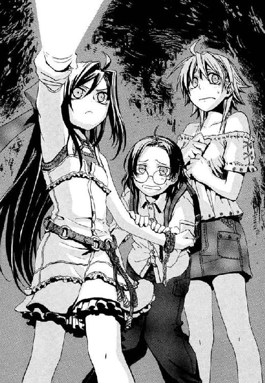
「ひょっとしてここ、部屋に来たのと同じ〝泡〟が、まだほかにもいたらどうしよう？ 寒川さんに見られたとき、魔法消去で全部燃えちゃうよ」
メイゼルのこめかみが引きつった。鋭い視線が「今さら気づいたの？」と、無言できずなを責めていた。冷や汗をにじませながら、年上として彼女に言えたのはこれだけだ。
「......ごめん、ついうっかり」
あどけない魔女の、かわいらしくもドスのきいた声が、六年一組のクラス委員長だという友だちを呼ぶ。
「あんた、あたしが許すからその間抜けをこらしめたげなさい」
だが、そのとき、一番おびえていた寒川紀子が気づいたのだ。
「────誰か、来たよ」
少女たち全員が凍りつく。耳を澄ます。確かに、遠くから足音が、粘っこく小さな反響を繰り返していた。決定的だったのは、まっ暗闇に一条あらわれた、懐中電灯の明かりだ。掩体壕から地下へ続いていた坂道を、歩くたびに照らされる範囲が揺れる光の黄色いマルがおりてきていた。
「懐中電灯消すわ。絶対に静かにしなさい」
メイゼルのこわばった声と同時に、周囲は真の闇に沈んだ。きずなの体の中心で、心臓が爆発しそうなくらい跳ね回っている。小さな魔女の手を、彼女は握ってやった。じっとりと冷たい汗がにじんでいる。何も知らないぶんもっと怖いだろう寒川さんの手も、彼女は年上なので無理やりつかまえる。体温を感じていると、ほんのすこし落ち着いてきた。きずなは、本当は地下にたいして危険はないと、たかをくくっていたのだ。魔導師公館は、鼻先の危険な魔導師を放置するような組織ではない。ということは、ここに何がいるにしても、あの武原仁や神和瑞希の知り合いくらいのつもりだった。たぶんメイゼルもそうだろう。
たぶん他人に殺されかけたことなどないだろう寒川紀子の指も体も小刻みに震えていた。両手できずなの手を握ってきた。
「どうしよう」
きずなにもわからない。
同じ道から来たということは、掩体壕の持ち主じゃないかと思った。懐中電灯を点しているのは、魔法で暗闇を見とおせないからだ。鉄柵をこわしたのがいけなかったんじゃないかと、済まなく思えてきた。
「メイゼルちゃん。あの柵こわしちゃったの、あやまろっか」
「もし痴漢だったらどうするんですか！」
寒川紀子に止められて、体がかたまったみたいにもう前に進めない。魔法使いだけではない。暗い場所には普通に危ない人も集まるという、単純なことが抜け落ちていた。このあたりに多い人気のない道では、痴漢事件も起こる。なのに公館は、警察にまかせて普通の痴漢は取り締まらない。
今さら後悔しても後の祭りだ。だが、何度も魔法犯罪者と戦い、何度も死にかけたメイゼルの胆力は、彼女たちのそれとは別物だった。
「進むわ。きずなは後ろで、この子のこと見たげて。あんたは目を閉じて、あたしの肩でもつかんでなさい」
それでようやく、足が止まっていたきずなたちも、一本道で待っていてもつかまるだけだと思い至ったのだ。
彼女たちは、息を潜め、音を立てないように歩きだす。明かりなしでも、先導するメイゼルの足元に迷いはない。十崎家でも、ときどきメイゼルは電気もつけずまっ暗な家を平気で歩く。電子を《魔力》として観測する円環魔導師は、魔法消去さえなければ、分子の密度の差でかたい床や壁がわかるそうだ。足音を大きく感じたそのたびに、そばで背筋が引きつる気配がし、生唾を飲む音がする。三分なのか、三十分そうしているのかもよくわからなくなっていた。
もしもやって来たのが男の人だったら、高校生のきずながこんな人気のない、悲鳴も聞こえない暗闇でつかまったら、何をされるかわからない。考えたくもないけれど、今のご時世では小学生でも乱暴されるかもしれない。何か言ったら泣きそうなくらい背中のリュックが震えていたから、きずなは結果的に巻きこんでしまった寒川紀子に「ごめんね」と謝りそびれた。楽しい時間は、残酷な手にいつ打ち切られるかわからない。きずなだって、誰だって、次の瞬間しあわせでいられるかなんてわからない。
ただ、左足と右足を交互に前に出す単純な動きを、まっ暗闇でいつまでも続けていた。そうしていれば、また怖いことなんて何もない武原家のアパートや十崎家に帰れるのだと自分に言い聞かせた。そうしないと、がくがくと震える太ももが、きずなを座りこませてしまいそうだったから。忍び足の彼女たちより歩くのが早いのだろう。足音は確実に近づいてくる。懐中電灯の光は、もういつ照らし出されてもおかしくない、彼女たちと十メートルほどしか離れていない地面をしばしばなぞった。
そして、疲れとおびえが筋肉にたまって、もう動けないと諦めかけたそのとき、メイゼルのささやき声が弾んだ。
「もうちょっとで道が曲がってるわ」
気持ちを新たに、もう一息がんばろうと思った。そのきずなの背中を、まばゆい光が照らした。しまったと振り返った彼女を、後ろから押し寄せる炎の津波が飲みこんだ。世界に燃えざるものは何もないようだ。小さな魔女も白いワンピースをオレンジ色の火影に染められている。
メイゼルが足を止めたから、その肩につかまっていた寒川紀子も縁なし眼鏡の顔を振り向かせた。この世界を包む業火が見えていないように、不安げにクラスメートの耳にたずねた。
「鴉木さん、どうして止まるの？」
だからきずなにもわかった。これは魔炎だ。
つまり、彼女たちの後ろにも魔法使いがいて、魔法を魔法消去で焼かせて手軽な照明にしたのだ。この人が懐中電灯のあるじだろう。左手に何か握ったちょっと太目のおとなの男が、彼女たちに鋭い視線を送っていた。この世界の人は、魔炎も感知できないから、今も視界はまっ暗なはずなのに。
きずなは、その落ち着きぶりが本当の犯罪者のものに思えたのだ。
「走って！」
叫んで全力疾走していた。後ろから彼女たちを追う大きな足音が、地下道を反響する。
先導するメイゼルも、寒川紀子の手をつかんだきずなも必死だった。何度も魔炎が背中からあがり、そのたび魔法使いにしか見えない影が長く濃く地面にのびる。通路は大きく右に曲がっていた。
一秒でも早く魔炎から逃れたくて、大きなカーブへ駆けこんだ。
「あんた、こわいだろうけど、もう一回、目を閉じてちょうだい」
メイゼルが魔法の目で、彼女たちが進む先を確かめようとする。寒川の顔の前で魔炎が爆発した。
「目をつぶりなさいって言ってるでしょ。わかるのよ！」
クラスメートに強くたしなめられ、寒川紀子が棒立ちになる。寒川の目を閉じくしゃくしゃにした顔に、きずなは、「だいじょうぶだよ、わたしがついてるから」と、根拠もないのに言い聞かせ続ける。
彼女の手を引いてさらに走った。ゆく手にあらわれた、自動車では進入できない細い脇道へ飛びこんだ。メイゼルだけが、広い道のほうへ何か魔法を仕掛けに戻る。焦りと恐怖で頭がしびれたきずなも、あっちへ行ったと思わせるニセの手がかりだとぼんやり察した。
闇の中を、つかまったらおしまいだとわかっていたから、のぼり坂や下り坂がとにかく多い通路を何度も転びそうになりながら必死で進む。先導のメイゼルが戻ってきて、「こっちよ」とまたきずなたちを細い道へ曲がらせた。近く遠く、おとなが走る足音が無明の暗黒を何度もたわませる。そのたび、わけもわからず目を閉じた寒川紀子が、すがるようにきずなの手を握った。
どこまで進んだだろう。ついに足音が聞こえなくなった。ほっとすると同時に、きずなたちは地面にへたりこむ。絶体絶命の状態をひとまずは脱したと思うと、べたべた遠慮なく打ちつけた足の裏が、痛くてたまらなくなってきた。どうやってここから出たらいいかもわからないのに、救われた気がした。
いつの間にか手に握っていた懐中電灯をつける。頰を涙でぐしゃぐしゃにしていた寒川紀子を、きずなは抱きしめてあげた。
「ごめんね。がんばったね」
子犬のように、彼女がしがみついてきた。それでもまだ目を閉じたままだから、ハンカチを出して顔をふいてあげた。おずおずと、まぶたをひらいた彼女が、眼鏡をかけなおし、寒川紀子の顔に戻ってゆく。
「いつまできずなにしがみついてるの？」
なぐさめたメイゼルの声まであえぐみたいだったから、みんなのどがカラカラだと気づいたのだ。
六年一組の委員長がリュックから水筒を出してくれた。みんなで飲ませてもらうと、全員の顔がほっと人心地ついた。
「あれ、ふたり組みだったわね」
メイゼルが体育座りしたまま、膝に疲れきった額を押しつける。きずなには見えなかったが、後ろから魔炎がせまってきたということは、この世界の人々といっしょに魔法使いもいたのだ。
顔をあげた小さな魔女が、首筋に汗ではりついた長い黒髪を物憂げに人さし指ではがす。
「安心なさい。守ったげるって言ったでしょ」
そして寒川さんがリュックから、薄い紙箱を引っ張り出した。
「お父さんが仙台に出張したおみやげの、薄皮饅頭です。みなさんでどうぞって」
紙の仕切りに区切られた黒糖色のまるいお饅頭が、かわいらしくならんでいる。
本当にこわい目にあった後でも甘いものはおいしい。きずなはついつい三つ目をつまむ。
「いっぱい運動したから、このくらい甘いものが必要だよ」
寒川紀子も、ひとつ食べると止まらなくなった。
「本当においしいです」
「あたしがお料理しても、お菓子がはいってるって嫌がるから、持って帰ってもみんな甘いものキライだと思うの」
あっという間に十六個を全部たいらげてしまった。メイゼルが上品にハンカチで口元をぬぐう。
「ごちそうさま。あんたのお父様をほめたげなさい」
「どうして鴉木さんは、そんなえらそうなんですか？」
「きずな、この子のお父様はとってもおもしろい人なのよ。よっぱらうと、顔に白い布を巻いて、ゲッコウカメン（月光仮面）の真似って、大声で『憎むな！ 殺すな！ 許しましょう！』って、歌いだすの」
さっきまで泣いていた寒川さんが、顔をまっ赤にして怒っていた。
「いい機会だから、お姉さんからはっきり言ってやってください！ 学校でも、いつでも、鴉木さんは人の嫌がることが大好きなんです!!」
「今の泣き顔のほうが、あたし、ただこわがってるだけのさっきの顔よりずっとスキよ。こんなはしたないおねだり顔、あんたのお母様が見たらなんて言うかしら」
寒川さんは、また眼鏡のつるをメイゼルにつままれて、眼鏡を奪われそうになっていた。暗がりの小学生ふたりは、きずなからはとてもしあわせそうに見えた。
「楽しそうだね」
「あなたお姉さんなんだから、もっとしゃっきりしてください！」
また怒られた。七月の三者面談のとき、きずなが居候先の家主、十崎京香の代役で小学校に来たから、本当の家族だとかんちがいしているのだ。
「あたしたち姉妹じゃないわ。いっしょに暮らしてるだけで、ただの他人よ」
「そうだ。言ってなかったね。わたしの名前、倉本きずなっていうんだ。あのね、お父さんが死んじゃって、今は親切な女の人のところで居候させてもらってるの」
ことば足らずなメイゼルの紹介に、きずながフォローをいれた。きずなの事情から、クラスメートのこともある程度察してくれたのだろう。寒川紀子は、子どもなりの気づかいで、それ以上この話題に触れることはなかった。
「どうでもいいけど、携帯電話、圏外ね。地下どのくらいまで降りてるのかしら。電波が通らないみたい」
きずなよりずっとしっかりしているメイゼルが、いつの間にかいじっていた携帯電話をポケットにしまった。
誰からとなく、また歩き出すために立ちあがった。あまり話を続けたくなる雰囲気ではなくなっていたのだ。もうひとつ、純粋に寒かったこともある。日の差さない地下は、いったい摂氏何度なのか、夏用の服とサンダルでは震える気温だった。
「坂を見つけたらのぼるわ。すくなくとも、ちょっとあったかくはなると思うの」
†
武原仁にとって、ここに潜ることはまったく考えなかった可能性ではない。
だが、だからといって、それが楽しいかとは無関係だ。
魔女アラクネは、結局朝になっても見つからなかった。《公館》では、聖騎士のような所属がはっきりしている相手をのぞいて、地上の捜索で発見できなければ次は地下だ。武蔵野近辺が軍都だった第二次世界大戦中の地下壕を起源とし、今では迷宮となり果てた地下道群が広がっているためだ。
仁たち人間が都市の地下に掘る、水道・電気・ガスなどの供給システムを集めた共同溝も、大きいものでは直径七メートルを超える。だが、規模ではまだ魔法使いに及ばない。彼らは、洞窟の妖精や小人の伝説のように、観測されることを避けるため、神話の時代から地下施設をつくっている。武蔵野迷宮の基幹、横幅十五メートル、高さ五メートルの一番古い世代の地下壕は、壮大な夢の跡だ。魔法使いたちが地下に自分たちの都市をつくろうとした、幹線道路の名残なのだ。それが、庇護者だった大日本帝国の敗戦によって、人が住む前に荒れ果てた。十五本あるうち、確認されているこの世代の壕は九本。《協会》の最重要施設──魔法世界との安定した交通を可能にする神人遺物、《門》の所在地もこの地下迷宮のはるか底だ。
「専任係官武原仁。一号地下道本線開始地点から、一－十八支道まで探索完了。前回から増えた通路は一本。一－十八－二から北へ一本。五十メートル以上の長さのため危険を考慮し未探査」
もしものときのため、ボイスレコーダーに進行経路を残しておくのも、彼らの仕事だ。仁は探索を、公館本館地下の一号地下壕から東へ向けてはじめた。もうひとり、専任係官《魔獣使い》神和瑞希が、三号地下壕から北を巡回している。
闇の中、ひとり新しい地下道が広がっていないか地図と照らし合わせながら、足音を殺して歩く。ここは夏でも気温が摂氏二十度を切り、深い場所では十度ほどしかないから、仁の服は朝アパートまで取りに戻った秋物だ。魔導師公館にはじめてやってきてから、本当にもう九年だ。専任係官になる前の訓練期間から長い付き合いの場所だから、その静かさも湿っぽい空気も肌になじんでいる。
ただ、メイゼルに何も言っていないことだけが心残りだった。連絡用にいくつか中継点を設置してあるものの、この地下迷宮での任務中は携帯電話が一切つながらない。メールは一日にすくなくても二、三通は来るから、連絡できなくてあやしまれるのだろう。だが、それでも刻印魔導師に疑いの目が強い今、仁が小さな魔女を連れていたら、ただでも微妙な位置づけの彼女が、邪推され的にかけられかねない。
そして彼が通り過ぎた後ろの暗闇に、花開くようにひとつ、軽い足音が生じた。
振り返って懐中電灯を向けると、そこにいたのは見慣れた高校の制服姿の幽鬼。血の気を感じない白磁の肌も、一対の黒い翼のような漆黒の長い髪も、闇の中こそその棲処であるように艶やかだ。
《公館》が誇る生来の魔導師狩人が朱唇を開く。
「......新しい、......道、......入ったら............迷った」
最高撃墜数の専任係官、神和瑞希は、戦闘以外では微妙に役立たずだった。
「............いつも、......式神に道案内をさせてる......から」
千年前から退魔師を続けたという神和家では、刻印魔導師を式神と呼び、道具として使役する。その便利な道具が使用禁止の今だからこそ、仁も彼女の欠点をはじめて知った。方向音痴らしい。あまり知りたくなかった。
「かわりに三号地下壕を案内しろとか無茶は言うなよ」
「............かわりに、......私の仕事も、......して」
予想を超えたダメ人間ぶりだった。
「道に迷わないためにはまず、実質はどうあれ、ここが元々、魔法使いが公館本館からほうぼうの軍施設に行くためって名目で掘られてることを考えろ」
微妙にテンションが落ちた仁は、探索をしながら、むしろ自分を取り戻すため神和瑞希に基本的なことを教えてやることにした。戦績こそ素晴らしいが、この天性の狩人は在任中の専任係官では最年少で、キャリアもまだ二年目なのだ。
「この国が敗けた第二次大戦では、魔法使いも大量動員された。世代が古い一番から十五番までの地下壕本道はこのとき作られたものだから、目的地までまっすぐ結ばれてる。飛行機や戦車を移送してたから、地下鉄の線路だって敷けるくらい平らで広い。こいつはわかるな」
懐中電灯の光線を天井へ向ける。今、まさに仁たちが戻った広大な地下道は、くりぬいただけの無骨なものだが表面処理がきれいだ。戦後に一度すべての施設がつぶされたが、埋め残しを見つけたり掘り返したり、魔法で勝手に入り口を開けたりして広げていったのだ。
「今ある支道の半分以上は、連合国軍の占領時代の通路だ。戦争協力のせいで、俺たち魔導師公館と《協会》の活動は、一度、聖騎士たちと協力関係にあった連合国軍に禁止されてる。《協会》の魔導師は、地上の悪鬼の軍隊には打つ手がなかったから地下に潜ってゲリラ戦をはじめたんだ」
先生気分で、仁は後輩の若い専任係官に、きっと代々の先人が教えていったように知識を伝える。
「で、この抵抗の時代に拡張された二世代目の通路は、聖騎士が横に広がって戦いにくいように、嫌がらせで、学校の校舎の廊下くらいのせまさになったわけだ。延びかた自体も嫌らしいけど、戦闘の古い傷がちょくちょくついてるから、そいつを目印にすればいい」
本当に頭にはいっているのか、神和家の当代が、かくかくと首を縦に振っている。危なげなく進む仁たちは、床と壁のおびただしい亀裂ですぐそれとわかる十九番目の支道、一－十九支道にはいった。
「あと、この世代の地下道は、閉鎖回廊を通路として使ってるところが多い。魔法使いにしか入れない通路だらけにすれば、魔法消去能力を持ったこの世界の人間はまともに進めない。魔炎で焼かれながら米兵になすすべなく占領されるのが、《協会》にとっては一番こわかったんだ」
仁たちはどこもかしこも傷だらけな短い道の突き当たりの壁にひらいた、燐光をはなつもやに足を踏み入れる。小さな閉鎖回廊を一瞬で抜けたその一歩先は、道幅は同じだが、もはや壁も床も先ほどまでの戦場の一－十九支道ではない。きれいに整備された一－十九－一支道だ。
「.........地下壕、......公館本館まで......続いてる...のに...どうして、............今、......戦って......ない？」
瑞希が、暗所に適応して瞳孔の開いた目を仁に向ける。食いつきがいいと、教えているほうはけっこううれしい。
「公館じゃ、聖騎士もさすがにあきらめたって言われてるな。さっきの、この支道の入り口みたいな閉鎖回廊で空間をつないでるから、地上から穴を掘って迷路をショートカットできないしな。調査で天井に穴をあけたら青森県の山ん中に出た通路だってあるんだ、やりたい放題だよ。《協会》の連中が、閉鎖回廊を通れる聖騎士だけをおびき寄せて、その先で待ち伏せた罠の通廊だってある」
《ネズミ狩り》と呼ばれた罠は、かかった者の皆殺しを目的とし、事実屍の山を築いた。当時、戦後の混乱にまぎれた《協会》圏魔導師たちの抵抗は、苛烈を極めたという。八百万の国津神、天津神、百鬼夜行の物の怪たち、この国に幾層もの地層をなす怪異たちの死に物狂いの抗戦が、まだ神話のかたわらで生きていた人々に飛び火し、日本本土でのゲリラ戦に発展する危険を占領軍は選ばなかった。そう当時の公館職員の記録にはあるが、事実はわからない。結局は魔法使い勢力との交渉のため、魔導師公館の活動は再開許可を受けたのだ。
「............その...ワナ、......効率いい」
人狩り一族の末裔である瑞希が、大きくうなずいて感心していた。
「で、俺たちが今歩いてる、せまいけど新しくてきれいな通路が三世代目だ。これは、通常活動できるようになった今になっても、ずっと魔法使いが拡張を続けてる。俺たちも定期的に調査してるが、全域は把握できてない」
地下迷路の存在はよほど信頼できる刻印魔導師以外には教えないが、それでも犯罪魔導師の何パーセントかは必ずここにたどり着く。そして、長く苦しい地下戦を戦った聖騎士たちも、この死の迷宮をよく知っている。昨夜の過剰反応からすれば、聖騎士は今ここに降りてきている可能性すらゼロではない。
ここの存在をメイゼルに秘密にしているのが、仁には仕方ないことに思えてきた。彼らにも、迷宮は暗い時代とつながるはかり知れない闇だ。戦中、首都中枢から立川飛行場まで要人の脱出用として魔法使いに工事させた八号地下壕はじめ、当時の軍機密で公館に資料がない道も多い。どんな建設機械よりも優秀に穴を掘れると、刻印魔導師が徴用され、おもに軍の要請で都心中枢にトンネルをいくつも掘った。それがどこにあって、この迷路のどことつながっているか、今や誰も完全に把握していない。ここでは、一歩先に何が出るかもわからないのだ。
つい何ヶ月か前は約二十メートルで突き当たりになっていた支道が、懐中電灯の光が届かないほど長い通路に拡張されていた。
「ひどいな。ここも新しい連結か。そろそろ、五号地下壕の区画とつながったんじゃないのか？」
この通路の行く先をある程度確かめたら、連絡中継点まで戻って《公館》に報告を入れると決めた。今朝、メイゼルといっしょのとき見た、男のことも気にかかる。
今、仁が話しているのは全部、昔の教官の受け売りだ。《魔獣使い》神和瑞希と同い年くらいのころ、まだ引き返すことができた訓練時代、仁はずいぶんこの地下迷宮へやってきた。そして、闇の中のなにもかもがこわくて、彼に何かを伝えようとする〝先生〟のことを憎んでいた。
教師は知りたいことを教えてくれるわけではなくて、望みばかり大きかった彼に現実を思い知らせて失望させた。
専任係官になるずっと前、彼の教師とは暗闇と痛みだった。仁は自分が先生ヅラをしていることが、今でもすこし信じられない。
†
ずいぶん昔、八年も前の話だ。はじめて魔導師公館の門をひらいた夜から、一年のときがすぎていた。
高校一年生になった武原仁は、魔法使いと戦うための訓練を受けていた。彼にその義務があったわけではない。実際、王子護という男にいざなわれて訪れたそこで、彼はいてもいなくてもいいおまけだった。
魔導師公館と協力関係にある、《協会》と名乗る魔法使いたちは仁を害虫のように見下し「悪鬼」と呼んだ。そして、ひどい状態だという彼の妹を連れてゆき、そのまま返さなかった。あれ以来、一度として、アパートに武原舞花は帰っていないのだ。
そして仁は、妹を奪われたまま泣き寝入りできず、一年間も訓練に参加していた。王子護にだまされたと悔しくてならない。魔導師公館で、何もできない彼に仕事などない。ただ、人目のない地下で、彼自身の行き道かもわからないまま、ただしごかれた。
十六年すごした町の地面の底に、こんな迷路があったこと自体が空恐ろしかった。明かりがなければ真の闇になる通路が、ここなら死体を簡単に処分できるから使われているようで、息をするのも心細かった。
武原仁は汗とたぶん血でべとつく体を、もたれていた壁から起こした。光はない。まっ暗だ。何も見えない。だから、十メートル向こうには、何か得体の知れない怪物がいる気がした。
一センチ先が判別できない暗黒の底で、壁と床に支えられた彼に感知できるものは、全身の痛みと、水っぽい気配、そして苦しそうなあえぎだけだ。
そして仁は、生命線である感覚をつぶさないため呼吸音を殺しているから、その荒い息は彼自身のものではない。
「やあ、まだ生きているかい？」
仁は懐中電灯を床に向けてともす。跳ね返った光が周囲を弱々しく照らした。すぐそばの床に、死んだ虫のように同学年の少年が転がっていた。八咬誠志郎は、仁にここでできた唯一の友だちだ。小さいころ引き取られてずっと《公館》暮らしだという八咬は、ひどく線が細く、浮世ばなれした奇妙な気品がある。倒れてその秀でた額に一房の前髪を張りつかせようが、口元がアザになろうが、貴公子然として絵になる男だ。
そんな八咬が、壁を爪で引っかいていた。
「おまえは一体なにやってるんだ？」
倒れた貴人が触っていた壁には、右目がないドクロの絵が刻まれていた。
「これは〝王子護死ね〟のマークだよ。百個くらい刻むと、たぶん呪いかなにかで誰かが殺ってくれる」
貴公子・八咬の目はよどんでいた。現実の魔法に関わる人間の言うことではないが、人間が魔法やまじないを求めるときなんてこんなものだ。
「......俺のぶんも刻んどいてくれ」
「承知した、友よ。これで二倍速だ」
仁は横腹と右足の痛みをこらえて立ちあがる。夏でも冷たい空気を吸い、懐中電灯を無明の地下通路へ向ける。彼らが今いるのは、古い罠がまだ残っている危険な第二世代の通路だ。そして彼らをおびやかす最大の脅威は、実戦形式でしか訓練をしない教官、王子護ハウゼンだ。
「いつか、僕らもここで、本当の命のやり取りをすることになるのかね。ああやだ、僕はこういう暗いところがキライだ」
「いつか俺は妹を連れて絶対帰るよ。そうしたら悪いがもうここには来ない。こんなじゃ、一体、舞花だって何させられてるか。あいつ、だましやがって」
仁は暗闇を前に拳を握っていた。彼をいざなった張本人、白いスーツの道化師、王子護ハウゼンのにやけ面を思い出す。
「僕は、君とちがって人生に多くを望まない。いつか、僕だけを見てくれる白衣の天使と美人秘書が現れてくれたら、それでいい」
「おまえの人生設計、ダメ人間だな」
仁も八咬も、結局はまだ口ばかりで何もできないから、来もしない「いつか」の話ばかりしている。
武原仁は、小さな部屋では保護者面をしていられた。けれど、社会でできることなどないし、一緒にいて妹を救える力もなかった。そんな当たり前の事実を、一足先に思い知らされているだけだ。仁は、今でも平日は高校に通い続けている。ここの訓練が暮らしに加わっても、変わったようで、根っこは何も変わっていない。もっともらしい、一般常識がないと社会にまぎれられなくて困るという理由はある。けれど彼にだってわかる。仁にできることなどないから、学校へ行かされているのだ。鍛えてモノになったら使ってみようか程度の、おまけでしかない。魔法を使える舞花は、仁には内容を教えてももらえない仕事をはじめている。学校に通っていると聞いたこともないのだ。
「正直、仁の『いつか』は難しいと思うけど、応援してるよ。君の妹さんも東郷先生についてるんだけど、僕とちがって優秀な生徒らしいから、ちゃんと生き残るさ」
八咬は、専任係官《鬼火》東郷永光に、十年近くも指導を受けている。〝東郷死ねマーク〟を作らないのは、姑息なことが大嫌いな師で、知られたら殺されるからだそうだ。
「来たぞ」
懐中電灯の光が届かない向こうに、肌を刺す殺意があった。弱っちくて月に二度くらいのハイペースで死にかけているおかげで、勘だけは小動物なみに鋭くなった。
見るからに嫌々、八咬が立ちあがった。
「明かりは君が持っててくれ。ああ、僕はこの暗くてせまくてじめじめした地下が大嫌いだ！ こんなところには訓練が終わったら絶対入らない!!」
八咬が踊るように身構えて、仁がにらむのと反対側の暗黒をにらんでいる。
影の向こう側からにじみ出てきたのは、古い長袖の軍服を着た男だった。カーキ色の詰襟と長袖をきっちりと着込み、腰には軍刀を吊している。それは魔法使いというより、軍人の幽霊だ。軍靴を履いているのに足音を立てない。仁は全身が冷たくなるような感覚に、拳を強く握る。いや、体が縮こまってしまっているのだ。
軍服の悪霊はなにもかたらない。青白い肌の長い顔は、ただ肉の盛りあがった頰や額で憤怒の面を作っているように見えた。
どう戦えば勝てるかと、考えている間に、後ろでどさりと人間の倒れる音がした。八咬は一足先に楽になったようだ。つまり、待てば後ろからの敵とはさみこまれる。
仁は戦術も何もなく正面から突っこんでいた。
「畜生！」
夏のあの日まで、仁は小さな部屋で妹の保護者面をしていられた。この暗い迷路で、彼は何者にもなれない。
「おまえらが、おまえらみたいなのがいなきゃ！」
叫ばずにいられなかった。仁には、これなら負けない特技なんてないし順応力も低い。ただ自分が何もできないと、知らなかった自分自身が恨めしかった。それでも、不満を乗りこえるより、目の前にあるものに怒りをぶつけるほうが楽だった。
「おまえらみたいなのがいなきゃ！」
仁はホルスターから大振りのナイフを引き抜く。刃物を使うのがうまいと妹はほめてくれた。けれど、仁がこの地下で、魔導師公館でそんなもので居場所を作れるはずもない。
「おまえらがいるから、何もかもおかしくなったんだろ。俺が、ナニ悪いことしたんだよ！」
軍服の魔法使いが、腰から引き抜いた軍刀で彼のしょぼくれたナイフを受け止める。ほんのすこし刃先をこじられただけで、ぬらつく長い人斬り包丁が仁の首筋まで滑ってくる。こらえきれず、ナイフを思い切り突き返して距離をとる。魔導師相手に飛び道具のない人間が距離をとったらどうにもならない。頭でわかっていても腰が引けてどうにもならない。
「......畜生」
仁は箸にも棒にもかからない役立たずだった。毎日、自分に腹を立てていた。自分は不運だと呪っていた。昔はまだ楽だったと思いながら、同時に早く何者かにならなければならないことだけはわかっていた。
魔導師が吐き捨てた。
「ゴミだな」
いつの間にか、仁の右肘に歯車のような幻影が巻きついていた。それは、魔法使いが彼にかけた魔法だ。死ぬと思った。魔法消去を再発動させようとして、何度も感覚を見失い失敗する。溺れかけたように慌てている間に、軍服の魔導師の宣名は成った。
「悪鬼が右肘、名づけて《独楽》、保持済み概念《円輪》と加算す。──切り裂け」
瞬間、仁の右肘は魔法で構成された不自然な超低気圧と化した。魔法消去に守られない無防備な肉体は魔法で変成される。圧力の中心に吸着した右肘から先がおもちゃのように揺れ、大気の渦に巻かれて天井まで吹っ飛び、つぶれながら跳ね返って暗闇へ消えた。仁は、超高速の対流の中心に右腕をからめとられ、ぶざまに転倒する。肘から先に超高圧のポンプがついたみたいに振り回され、立つこともできない。魔法の渦が、切断した動脈からの大量出血を赤い霧にして撒き散らしてゆく。脈打つ動脈をストローがわりに渦の中心が血液を急激に吸いあげ、傷口の感覚がなくなり、全身がきしみながら凍るようだ。転げ回りのたうちながら、仁は、予備のナイフも抜けず、ただ左手で傷口のそばを強く押さえていた。
「ひぁあぁぁぁあっ、あっ」
悲鳴をあげているのが自分だと気づかなかった。一瞬ごとに意識が薄れてゆく。死。死ぬのは嫌だ。まっ黒に視界が薄れてゆく。冷たくて、痛くて、気持ち悪くて、この体から抜け出してどこかへ逃げたかった。苦しい、死ぬ。必死で立ち上がって逃げようとして、血だまりに足を取られて四つんばいの状態で動けなくなった。助けを求めても何も手でつかめない。当たり前だ、彼の右腕は暗闇の向こうに転がっているのだから。
「これが、貴様ら奇蹟に見放された悪鬼には届かぬ力、魔法だ」
頭上から冷たい声が投げかけられ、今度は仁の首に歯車が巻きついた。助かる方法はひとつなのに、この世界の人間に当たり前なはずの魔法消去能力を、どう取り戻せるかわからない。あと一秒か、二秒か、次は首が、今の右腕と同じになる。首が変成させられて、頭が跳ね飛び、天井で砕けて脳が飛び散って。
────────────────殺される。
「泣いているのか、無様だな。雑種の悪鬼などものの役に立たぬわ」
凶暴な悦びにまみれた宣名魔導師が、仁の胸倉をつかんだ。今から死ぬ仁の恐怖に歪んでいるだろう顔をじっくり観察しながら、自身の力を楽しむように、魔法使いが鼻で笑う。
そして何の前触れもなく、彼の首に巻きついた歯車のまぼろしが消滅した。世界を上書きしたように、右腕の渦も消えていた。すべて何かの悪夢だったかと疑った。けれど右腕は肘から先がなく、彼は明らかに死につつある。
血の霧でまっ赤に染まる世界で、ただひとり、汚れひとつないまっ白なスーツの男が現れていた。軍服の魔導師の後頭部を、右目に銀の眼帯をはめた王子護ハウゼンが右手でわしづかみにしていたのだ。
「ミスタ・ジェラルド。なぜぼくらは教育を行っていると思いマスカ？」
今なら仁は疑わない。一年前の夏の日にはじめて会ったとき、この眼帯の怪物は、蚊でもたたくように、本当に人間ひとりを潰して殺していたのだ。
「ぼくはまともな後進がいないのを、ただグチってるわけにいかない身なのデスヨ。人材いないなら、先に進んだ者が育てナサイってことデス」
王子護に首を押さえつけられた軍服の幽霊が、それでも呵呵と大笑する。
「奇蹟の追及者たる我ら魔導師が、まるで群れるだけの悪鬼の泣き言だな」
「『我ら魔導師』なんて二流の証明みたいなこと言うの、やめなさいヨ。《協会》は、魔法使いだって本当は誰もいらないから、勝手に育つの使って、捨てるんデショ」
王子護が相手の首を制圧していた右手を離し、かぶっていた白い帽子の位置をなおす。ジェラルドと呼ばれた軍服の幽霊が、軍刀を鞘におさめた。
「この非礼、覚えておくぞ。ハウゼン」
仁は悠長に話す魔法使いたちから逃げるように、鮮血を曳き這いずって壁まで逃れていた。この怪物たちがこわくてしかたなかった。鉄錆くさい血のにおいでえづきながら、泣いていた。出たぶんだけでも苦しくなくなるなら涙なんかいくらでも垂れ流していたいのに、なぜか悔しさが目からぼろぼろ冷たいしずくになって落ちるのだ。
顔をあげると、闇の中に怪物はひとりきりになっていた。仁をこの異常な世界にいざなった眼帯の〝魔法使い〟が、彼を見おろしていた。
「ボーイ、泣くなら全部仕事をかたづけてからになさいヨ」
王子護の声に、あるはずもない人間味を感じてしまったせいだ。死にかけの動物だった仁は人間に戻ってしまったから、どうして涙が止まらないのか、理解できてしまった。
「......俺、......もうこれでダメだってあきらめたのに......最後まで舞花のこと、ぜんぜん思い出さなかった」
にじむ視界の中、白いスーツの道化師が帽子のつばを指で引き下げ、目元を隠した気がした。
「そんなものデスヨ。喪われたものはいつか記憶から薄れて、消えて正しいのデス。そうでなくてはいけマセン」
繰り返し繰り返し、お経みたいに何度も、仁は申し訳なくて頭の中で妹の名前を呼んだ。
「ボーイ。たいせつなもののことを思っていたければ、戦いではどんな手を使っても勝ちなサイ。人間は、死に際に、自分自身であることすらできまセンヨ」
そして王子護も沈黙した。それでも自分自身として死ねる敵には、あんまり遭わないといいデスネと最後につけくわえて。
どうしてまだこの魔導師公館に残ったのだろうと、仁は痛むだけの頭に疑問を割りこませられた。舞花がいるからだと、きれいな答えで寒い呼吸を終えられるつもりだったのに、何も出ない。目の前の怪物の言うとおり、自分は自分自身であることすらできず死ぬのだと怖かった。この期に及んで、意地を張った理由もわからなくなって、彼自身が選択したはずの今が何もかも間違っている気がした。
ついに体が完全に傷に屈服し倒れる。王子護の軽薄な声が、揺れながら沈む頭に反響する。
「──ああ忘れてまシタ。それ、血ぐらい止めないとそろそろ死んじゃう傷でしたネ」
仁の薄れる意識は脱力のひとことで止めをさされ、空笑いを漏らしながら力尽きた。王子護死ねマークってどんなんだったっけと、死に際に抱くにはばかばかしいことが頭をふとよぎった。
†
あれから八年経ち、武原仁は、何度も訓練で死にかけた地下通路にいる。妹は死に、王子護は《公館》を去り、落ちこぼれだった仁も八咬誠志郎も、今では専任係官だ。
このまっ暗な地下迷路では、何も思うとおりにはならない。その単純な事実だけは変わらない。墜落した魔女アラクネはまだ見つからない。神和瑞希は、まだ仁の後ろについてきている。ただし、すでに理由は、彼に自分の仕事を押しつける気だからではない。
「このドクロのしるしには、絶対に意味があるんだわ。もう十個目よ！」
メイゼルの興奮した声が、遠く彼らにまで聞こえてくる。
仁たちは発見したのだ。アラクネではなく、本当ならこんなところにいるはずもないメイゼルたちを。
同行していた瑞希が、仁を振り返って、「私は行く」と目で宣言する。彼は細い女子高生の肩をわしづかみにして、何も考えてなさそうな彼女を止めた。
「寒川はこの世界の人間だぞ。おまえが行ったら、誰が敵を探すんだ？」
懐中電灯の明かりで地下迷路を照らしながら、おっかなびっくり進んでいるのは鴉木メイゼルと倉本きずな、そしてリュックを背負った六年一組学級委員長、寒川紀子。仁たちは今、十メートル以上後方から少女たちを尾行している。瑞希が助けにゆけば、何をやっても間近で寒川の魔法消去を受けて、魔法を使った敵の警戒ができなくなる。仁が顔を出せば〝副担任の武原先生〟の身元が割れる。
「......本当に、なんでこんなとこにいるんだ？」
仁たちは今、予想外に見つけたメイゼルたちに合流できず、明かりを消して追い続けている。アラクネ捜索に戻ろうにも、少女たちをほうってもおけなかった。
メイゼルが懐中電灯を、また足元の壁に刻まれたドクロマークに向けた。
「聞いてるの？ この右目がつぶれたドクロのそばって、戦ったみたいな跡がたくさんあるのよ。これには絶対意味があるのよ」
小さな魔女は、また自信たっぷりに目をきらめかせるメイゼル先生になっていた。後ろからついてきている仁たちに、暗闇の少女たちはまったく気づいていない。
危険な二世代目の地下道で、仁は全身の神経を総動員して周囲の気配をさぐる。聞こえる足音は三つだけだ。十メートルほど先に、たぶんサンダル履きの、小学生に合わせてゆっくりなきずな。その前を、スニーカーを床にこすれさせた寒川紀子。一番体重が軽く歩幅も小さいメイゼルが先頭だ。
「あやしくなってきたわ。この近くにヒミツがあるのよ」
懐中電灯は足元に向けているが、黒髪の少女の視線はずっと天井近くへ向いたままだ。だから、遠くから観察する仁にも察しがついた。周囲を明るくするなら魔法を寒川に燃やしてもらう魔炎を利用できるはずだが、そうしないのは、闇の中のほうが発光体を発見しやすいからだろう。メイゼルはここで、アパートにやってきた光る〝泡〟を探しているのだ。つまり、今朝〝泡〟のことで少女がカマをかけてきたのは、この地下の存在にたどり着いていたからだ。
「まったく、いつの間に女の子ってのはこういう行動力をつけるんだろうな」
嘆息する仁の、胸元に差しこむ感覚は苦く、同時にくすぐったい。実際、五年前に死んでいる舞花のかけらが、魔法消去されずに残れる場所など、ここくらいだ。小さな魔女は、彼のことに興味を持ってくれ、結果、正解をつかんだのだ。
息を潜めていた神和瑞希ににらまれた。
「......にやけすぎ」
すまんとあやまって、もどかしい距離の少女たちを見守る。いつの間にか、メイゼルは成長している。仁としても、追い越されるのはつらいからがんばろうと思うのだけれど。
「とりあえず、魔法で周囲を探っといてくれ。彼女たちの三十メートル圏内から外れそうになったら消してくれていい」
三十メートルは、この世界の人間が広域探知魔術に虫食いを作る範囲の直径だ。魔法消去は、この世界の外から作用する魔法に対して非常に潔癖だ。もし誰かが、障害物の影響をキャンセルするため世界の外に視点を置く広域探知魔術で監視していても、寒川の直径三十メートルの球形の範囲内は見通せない。
瑞希が開いた手のまわりに、こげ茶色の羽の小さな蛾が十匹も羽ばたいていた。神和一族の魔法《魔獣使い》は、彼女たちが《気》と呼ぶ原初の息気から、生命をふくめ自然に存在するあらゆる現象を作り出す。
「......行く」
闇にまぎれて、音もなく虫たちは瑞希の命に従う。懐中電灯の弱々しい光の糸をたぐる少女たちも、放たれた監視の目が先回りしたことにまったく気づいていなかった。
「............きずなたちの、......まわり............誰も、......いない」
「進路の安全を確かめながら、みんなを出口方向に誘導しよう。とりあえず案内用に虫をつくって、寒川さんの視界に入れて燃やさせてくれ。ふたりが魔炎に気づくだろ」
方策を決めて安心気分の仁は、すぐ、それを後悔することになる。
「どうしてそんなおめかししてきたんですか」
六年一組の学級会と同じ口調で、寒川紀子がメイゼルに鋭くたずねた。原因は、サンダル履きのメイゼルが、夏でも涼しい地下の気温にさすがに震えていたことだ。割って入れない仁としては、教壇から教室の後ろの端より長い距離感がもどかしくてしかたない。
天井から水滴の垂れる音がどこまでも響いてゆくような、まっ暗な無人の地下壕で、メイゼルは胸に手を当てて言い切った。
「だって、あたしの好きな人がどこで見てるかわからないのよ」
寒川紀子のツッコミは、地下迷宮でも的確だった。
「こんなとこにいたらストーカーです！」
メイゼルが不用意な英語に反応するより、血相を変えたきずなが同居人をタックルするように抱きとめるほうがはやかった。
「あんた、まだ人をスキになったことないからわからないのよ。だって、ものすごい心配性だもの。......あたしがいるところには、かならず、せん......あたしの好きな人はいるのよ」
小さな魔女が、冷静になって、乱れた白いワンピースを誰かの目を気にするように直している。きずなも、ミニスカートの腰周りがずれていないかさりげなく確かめていた。遠くで眺めている仁としては、女の子の舞台裏を覗いているようで気恥ずかしい。
「......まさか」
寒川紀子が足を止めて振り返る。声を揺らし、明らかに動揺していた。自称保護者の女子高生が、メイゼルのおかしい言動を否定せず同意見だという、あってはならない事実に気づいたのだ。きずなも、その人が本当にいると思っているのだと。
「その人、絶対大丈夫じゃないよ、鴉木さんそれ！」
本当に尾行中の仁の心臓に、委員長の指摘が刺さる。
そして、きずなのフォローは、たいていフォローにならないのだ。
「......でも、どっちかっていうと、はじめてのおつかいに行く子どもを心配でついてきちゃうお父さんみたいなついて来かただから、だいじょうぶだよ」
「なんでお姉さんまでそんな乙女の顔なんですか？」
武原仁の冷や汗は止まらない。今、どんどん出るに出られなくなってゆく。敵が現れても、助けに行って顔が割れたら、ニセ教師としてメイゼルの保護監督は続けられない。そうなれば彼女を小学校にかよわせること自体難しくなる。
「ちがうわ！ せん、......あっ、あたしの好きな人の視線は、いつだってあたしの心の中にあるのよっ!! だから、ぶざまなカッコなんて、どんなときだってできないだけ」
単調な地下の道に飽きたか、恐怖をまぎらわすためか、女の子たちの恋愛話は止まらない。
「だってあたしがいないとダメな人だもの。こないだも、あたしが作ったカレー、『奇蹟みたいにおいしい』って」
メイゼルが、名前を出さず、仁たちのこれまでのことをロマンチックに脚色しながら語りだす。声が大きくなっていて通路に反響するから、遠くの誰かに聞かれているようで思わず周囲の気配をさぐった。
漏れ聞く仁は胃が痛くてたまらない。脂汗が出てきた。小学生たちより背が高いせいで、きずなの顔まで懐中電灯の光は届かない。表情をうかがえない女子高生が、合いの手ひとつはさまない沈黙が、微妙な緊張感をはらませていた。
「お仕事がある日も、ちゃんと最近、あの人、時間になると帰ってくるのね。それで、あたしの顔をみると、ほっと安心したみたいに表情がゆるむの」
小さな魔女の声は、見守る視線を感じて嗜虐的に反応を楽しんでいるのか、弾んでいる。それとも、仁との関係をつつかれて、いけない被虐心が目覚めたか。どのみち今、頰を上気させたメイゼルは後先を考えていない。
春が来たようにピンクがかった少女たちの、十メートル後ろの仁はいっそ転げまわりたい。敵を警戒して耳をふさぐわけにいかない仁にとっては、居心地の悪さを通り越してすでに拷問だ。
けれど、他人ののろけ話を聞きながら、寒川の声は冷静だった。
「でも絶対変だと思います」
六年一組の教室でも冷静な意見をよくはさむ委員長が、冷や水をぶっかける。
「おとなが、私たちみたいな子どもに『自分を助けて』って言ったら、それは下心だと思うよ。本当にお手伝いが役に立ってるより、お母さんがお父さんとケンカしたとき、『子どもに助けてもらえる自分のほうが正しい』ってやってるみたいだし。利用されてるみたいで、私はイヤだな......」
それも子どもの目線からの正論だ。組織の仕組みと彼自身の間ではさまれている彼の、欺瞞を見透かされたようで、仁の胸はきしむ。
けれどメイゼルは、クラスメートを振り返って満足そうにつぶやいたのだ。
──そっか、あたし、自信持っていいんだ。
小声で聞き取れなかったが、彼女の唇はたしかにそう動いた。そしてまだ小学生の魔女が、耳を澄ませた仁を深い穴へ突き落とす。
「だって、あたしに甘えたがってるってことでしょ。きっと、いつかあの人、あたしの胸で泣くことになるわ」
そして、想像したようにやさしく頰に手を当てる。その姿に母性本能を見て、仁はあまりのこっぱずかしさに背骨がねじれた。
ピンク色ののろけモードに、寒川もきずなも思いっきり引いていた。
「「胸で!?」」
「余計な苦労ばっかり、好きこのんでしょいこむ、だめな人だもの」
なんだあの古女房のような落ちつきっぷりはと、道を決定的に間違ったような焦りが彼の頭をかけめぐる。『あの人』の正体がばれたら、寒川にどんな目で見られるかと考えると、何事もなく地上へ戻ってくれと祈らずにいられない。
そのとき〝蛾〟を周囲にはなっていた瑞希が、鋭い目配せを送ってきた。仁にも理由がわかった。彼らの背後から、ほのかな光源が近づいてきていた。
武原仁のアパートにやってきた、妹の残骸──白金色の〝泡〟だった。
「......何、これ」
瑞希が直径二センチ球の〝泡〟を指でつかまえる。
「おまえらにはけっこうなじみがあるだろ。俺の妹のかけらだよ」
神和家の現当主が、泡を仁へと弾いた。正体を知ったなら、触れるのもイヤだろう。
「....................................《蛇の女王》」
この世界にしかない特殊な魔法系、カオティックファクターのひとつに、《蛇の女王》と呼ばれるものがある。神和一族の《魔獣使い》が霧からあらゆる自然現象を作り出すなら、《蛇の女王》の小さな泡は、自然ならぬ奇蹟すら生み出す。それは小さな宇宙卵なのだと、かつて魔法学者溝呂木は言った。手続きを間にはさまず万物を生じさす性質が似ていたがゆえ、《蛇の女王》武原舞花が活躍した時期は神和家には屈辱の時代だった。《協会》が、舞花を《魔獣使い》の進化形と位置づけ、厚遇したせいだ。
専任係官になって五年、仁も地下で妹のかけらに出会うのははじめてだった。
「この夏、おまえとこんなによく会うことに、きっと意味はあるんだろうな」
仁の手のひらの内で、白い光が鼓動のように脈打つ。実際、思い出の品物を突然見つけたみたいに、形見の〝泡〟を見ていると、どうしようもなく過去も潮騒のように脳裏から寄せて来る。公館に関わって一年が過ぎた、あの夏の日と同じ、うつむいた舞花の顔が浮かんだ。本当に十六歳のときかと記憶と照らし合わせようとすると、出てくる顔がみんな寂しそうだったり悲しそうだったりするのがたまらなかった。
アパートのそれと同じ白金色のかけらが、彼の手のひらで砕け散った。
──お兄ちゃん、この泡の中にはいろんなのがはいってるんだよ。「いつか」魔法上手になったら、しあわせとかそういうの出せるんじゃないかな。
泡の中身か、妹の姿が鮮明に脳裏に張りついた。世界がねじれるような爆発的な雑音。そして肺を搾るような叫び。
〈死にたくないよ。お兄ちゃん〉
肺や気管の中、鼻孔や口腔の中、耳の穴の中、仁の体内のあらゆる気体が一斉に妹の悲鳴を伝えた。全身の血が、おそらくその瞬間の舞花と同じであろう体温に、血圧に引きずられて暴れだす。猛烈な頭痛と不整脈に、気が遠くなりしゃがみこむ。妹のかけらが仁に伝達したものは、ほんの一瞬の記憶だったはずだ。なのに、砕けた荒波に引きこまれかけたように、ようやくその情報が何だったか理解した頭が、数秒遅れでそれを言語化する。
〈死にたくないよ。お兄ちゃん。助けて。お兄ちゃん。痛いよ。お兄ちゃん。熱いよ。お兄ちゃん。こわいよ。お兄ちゃん。助けてくれるって言ったくせに。お兄ちゃん。こんなの嫌だよ。お兄ちゃん。暗いよ。お兄ちゃん。苦しい。まだ生きたい。お兄ちゃん。死にたくない。怖い。逃げたい。つらい。こわい。こわい。こわい。こわい。痛い。痛い。苦しい。苦しい。苦しい。苦しい。痛い。死にたくない。死にたくない。死にたくない。死にたくない。死にたくない。助けて。助けて。助けて。助けて。助けて。助けて。死にたくない。死にたくない。死にたくない。死にたくない。死にたくない。──たくない。────────────────────────────────ごめんなさい〉
視界から光は断線し、息も止まった。
死という爆発の、余波を伝達されて、仁は総身を震わせていた。この数秒間で、十年ほども年を取ったようだ。別人のもののように、体が動かない。
たぶん外からはっきりわかるくらいひどい状態なのだろう。瑞希が、機械の調子を確かめるように彼の顔をのぞきこんできた。
「......魔法............攻撃...？」
「ちがうんだ。......そうじゃないんだ」
あの泡は、あらゆる意味で妹の〝かけら〟だったのだ。仁は二十四歳、京香だって二十五なのに、舞花の時間だけが十八歳で永遠に止まった。今残っている泡はたぶん、この地下のどこかで死んだ舞花が、アパートで自分の体から〝泡〟を切り離していたように、死にゆく肉体から〝かけら〟をもぎ離した断末魔なのだ。
両手で顔を覆う。まるで水でもかぶったみたいに、冷たい汗がびっしりと肌に浮かんでいた。
十メートル向こうでは、探しているものがひとりの人間の断末魔だと知らず、無邪気にメイゼルたちが地下の闇を進む。その後ろ姿と現実の温度差が皮肉で、足を一歩前に進めるそれだけの気力を、仁はどこから出していいかわからない。彼らがしていることは、こんなものなのかもしれない。みんな精一杯生きた結果、今、もっともしあわせな夏のまぼろしの中ですら、無邪気につらいものを追いかけている。
彼の部屋にやってきた〝泡〟──妹が帰ってきたこの夏を、どう考えていいかわからず、仁は腹の底のうずきに耐える。もしも中身がすべて同じ断末魔だとしても、彼女が今あらわれてくれてよかったのだと思うことにした。卑怯でも、生き残った人間は、過去を完全なかたちで背負っては前に進めない。
「......それでもおまえは、最後に俺の名前を呼んでくれたんだな」
声に出してみて、腸のねじれをひとつだけ見つけられた。仁には、死を垣間見た瞬間、舞花の名前を呼べた記憶がない。取り返せない妹に、会えるものならもう一度会いたかった。
†
魔導師公館と関わってまる一年が過ぎた夏休みのことだ。
まだ仁は、何もかもが満ち足りる「いつか」が来るつもりでいた。欠けたものはすべて取り戻され、涙も汗も血も流したぶんだけ報われると信じていた。武原仁が戦いはじめたのも、たぶんその夏からだ。
妹がふらりと、アパートのあの部屋に戻ってきた。
「わたし、人、殺しちゃった」
玄関で出迎えた仁に向かって、舞花は影を喪ったように悄然と作り笑いを浮かべていた。
油蟬がうるさいくらいに啼く八月の暑い昼間のことだった。
「おい、外、もうだいじょうぶなのか？」
仁は、玄関にあがりこんできた妹に、はじめて会う人みたいに緊張して、居間をあわてて片付ける。《公館》の訓練は休みだった。高校の夏休みの宿題も手につかず、アパートでごろごろしていたのだ。王子護に打ちのめされて何度も死にかける日々の隙間に、改めて遊びに行くような体力も残っていなかった。それ以上に、魔導師公館では居場所もない最底辺であることが、こたえていたのだ。悔しさや鬱屈を共有する相手なんて、八咬誠志郎くらいしかいない。
「ぜんぜんだいじょうぶ。練習して、とうとう細胞レベルの人見知りは克服されたのです」
白のプリントのＴシャツにデニムのショートパンツを合わせ、頭には野球帽をかぶった舞花が、元気にばっと両手を広げる。はじめて魔導師公館の門をたたいた夜、幼なじみの視線を浴びただけで焼死しかけた舞花の体が今、まっ昼間に外を出歩いてるのになんともない。
そのとき仁は、正直に言うと気が抜けたのだ。彼は、妹をアパートに連れ戻す「いつか」がこんな簡単に来ると思っていなかった。舞花は自由に外に出られるようになって、こんなに生き生きとしている。神様に救われたいと願おうが、本当に救われてしまうと驚くほうが先に来るのだ。
けれど、気が抜けた以上に、うれしさが止まらなかった。まるで突然祭りでもはじまったみたいで、じっとしていられなかった。
「京香姉ちゃんたちにも、知らせてやらないとな。ああ、京香姉ちゃん今年からもう大学受験で夏期講習なんだよな。でも、一日くらいいいよな？」
これでもう、あんな死ぬ思いをして地下の迷路で訓練をする理由もなくなったと思った。彼はもう、居場所もない《公館》の役立たずではなく、舞花のお兄ちゃんなのだ。妹の表情が少し気まずそうだったことに、浮かれた仁はまだ気づかなかった。
「......あ、そだね」
十崎家で、武原舞花のためのささやかなお祝いは、その晩ひらかれることになった。
ターコイズブルーの半そでニットに、インディゴのデニムスカートの十崎京香が玄関のドアを開けてくれた。受験に専念すると宣言するように高校二年になって眼鏡に変えていたが、今日はコンタクトレンズだ。
「おかえりだねー。もうこれからは、晴れて自由の身だ」
京香が感極まったように舞花の頭をつかまえて、肩に触れるほど伸びた髪をくしゃくしゃにかきまわす。京香が、舞花の姿をまともに見たのは二年ぶりになるはずだ。
「こんなにおっきくなっちゃって。私より背、高いんじゃないの？」
そして居間の側から、白髪まじりの髪をオールバックにした恰幅のよい男性が現れる。目のまわりの肉が落ち窪み、腹黒い狸親爺に感じることもあれば、人のよいおじさん以外に見えないこともある。この十崎理五郎おじさんの姿が十崎家からなくなる日が来るなんて、当時の仁には信じられなかったろう。
「仁くんは、すこしやせたんじゃないか？ ちゃんと食べているか」
理五郎のことばは、石を落としたように重い。
「コンビニの弁当多いですけど、量は食べてるんで」
「京香に遠慮して全然うちに来なくなっちゃって、もぉ。こぉんな目を吊り上げて殺気立った娘だけじゃ味気ないのよ」
年季の入ったエプロンをつけた長身の女性が、理五郎おじさんに続いてやってきた。京香の母親の未来おばさんは、元バレーボール選手だけあって理五郎おじさんより背が高い。
「気にしないで。お母さんはお母さんで、変な小物作ったり楽しくやってるから」
十崎京香の背は、いつもぴしりとのびている。仁たち兄妹にとって、「京香姉ちゃん」はとにかく何でもできる人で、これからもずっと勝ち続けるのだろうと思えた。
「仁ちゃん。うちの娘が性格悪いんだけど、へこませてよ」
「お兄ちゃんじゃ無理だと思います」
当たり前のように、仁のかわりに舞花が答える。こんなふうにテンポよく会話にとびこめず、彼は結局曖昧に笑って流してしまった。
いつも聞いているだけで楽しそうだから、仁はここに来ると、ことばすくなになってしまう。
仁にはもう、この小さなパーティの記憶は断片的なのだけれど、今でも食卓に何が載っていたのかだけはよく思い出せる。から揚げやコロッケといった揚げ物がたくさん並び、マカロニサラダのボウルがどでんと置いてある。十崎家で頻繁に食べさせてもらっていたのは小学生くらいまでだから、子どもが好きそうな油ものばかりだ。理五郎おじさんと未来おばさんの箸は、あんまり進んではいなかった。
「それで、どんな仕事してるの？」
京香が舞花に質問を向けたそのとき、掘りごたつをかこんだ一座の会話が止まった。
仁もまだ魔導師公館の仕事をよくは知らなかった。それでも、まともでないとわかっていた。訓練相手が人を殺しにかかる魔法使いなのは、実戦も殺し合いだからに決まっている。
だから、仁はただの希望を返した。
「たいしたものじゃないよ。舞花だって、ずっと仕事を続けるわけじゃないんだろ」
「どうしてお兄ちゃんが答えるの？」
その声の鋭さに、仁が覚えたのは驚きよりさびしさだった。弱いのにビールを飲んでいた理五郎おじさんが、座を取り持ってくれる。
「もう、舞花ちゃんはなんだって好きなことができるんだ。高校でも行きながら進路のことを考えていけばいい」
「......いいよ。どうせ勉強わかんないし」
人を殺してきたと、戻ってきたとき舞花は言った。妹の意思でしたはずがないことくらい、聞かなくても兄妹だからわかる。あの魔導師公館が関わっているにちがいなかった。
「お母さん命令です。京香が、舞花ちゃんの先生してあげなさい。成績いいんでしょ」
「あー。舞花ちゃんって、中学二年から学校お休みだっけ。そっかー、仁が教えてあげてたのって、三年生まで？ 仁、ちゃんと勉強してたの？ 私と同じ高校行くーとかいって、結局ぜんぜんだし」
いつの間にか仁がつっかかられている。未来おばさんがぺしゃりと食卓につぶれた。取りなす舞花のあわて顔は、昔のままだった。
「ぜんぜんいいんですよ。京香お姉ちゃんに本格的に先生やってもらったら、お兄ちゃんの立場なくなっちゃうから」
仁は、いざ現実になってみると、これからどういう毎日になるか想像もできなかった。あんな悄然と立っていた妹が、制服を着て高校生活をしている姿が思い浮かばなかったのだ。
仁たち兄妹にとって、〝京香姉ちゃん〟は、彼らの自慢だった。きっと大学に合格して、いい会社か役所にでもはいって、彼らの手の届かないところへ行く。いっしょにいることはなくなってゆくまぶしい幼なじみがいるから、彼らは世界を不公平だと恨まずにすんだのかもしれない。
「仁くんは、将来のことは考えているのか？」
そのとき十崎理五郎は、落ち窪んだ目の周りをまっ赤にしていたような気がする。仁は、《公館》での厳しすぎる訓練のことなど、もう終わったつもりで頭から追いやっていた。
「俺、あんまりないんですよ。......でも、見守ってもらってばっかりですから、ちゃんとそういうふうに守ってやったりとか、俺もできるようになりたいです」
ささやかな《復帰おめでとう会》は、夜の十時ころに終わった。居間に布団を敷いた仁と、部屋で久しぶりに寝た舞花とで、その晩は自然に眠ってしまうまでずっと話をした。魔導師公館で妹がしている仕事の話は、全部はぐらかされた。
突然、妹から、髪を切ってほしいと頼まれたのは翌日の昼のことだ。
「おまえ、ずいぶん髪のびたんだな」
押入れから、もう一年とすこしぶりに散髪用のはさみを出してきて、舞花はなつかしそうにしていた。仁も、もう終わったはずの中学時代を思い出すようで、道具の切れ味を確かめながらまだためらっていた。
仁は近所の理髪店しか知らなかったし、道具も物置にあったものを使うだけの自己流だ。一年でようやく肩までのびた髪に、ほかに選択肢がある今、彼がハサミを入れるのはもうしわけない気がしたのだ。
「パーマでもかけれるし、しばらく高校行かないなら染めたっていいんだぞ。美容院でも行ったら、前言ってた『テレビのあの人みたいにー』とか、もうやれるんだぞ」
「うーん。ポニーテールはまだ厳しいのわかるんだけど、どうしようか思いつかなくって。お兄ちゃんが似合うと思うように切ってくれたらいいよ」
畳には古新聞を一面に敷き詰めた。適当ないすがないから、また身長がのびた兄妹で話し合って、扇風機の段ボールに舞花が腰掛けた。服に髪が落ちないように、てるてる坊主みたいにシーツを首に巻く。安物のくしで髪の流れを整える。ぬらす場所が近くにないから、風呂場に連れて行って、犬でも洗うみたいに髪を洗うのは素人理髪店にしてもどうかと思うけど。
「そっか。それじゃ、ちょっとおとなっぽくしてみるか」
「えっ！ できるの!?」
最初のハサミは、迷いを断つように思い切って入れてみた。刃物がものを切る感触はいつも手になじんで、細い髪をまとめて断ち切る音は楽器みたいに軽快だ。彼と同じ、かたくて茶色っぽい髪が、白いシーツを滑って落ちてゆく。
「お兄ちゃん、ばさばさ切りすぎだよ」
不安そうに、舞花がシーツを落ちかけて途中で止まった、短い髪のかたまりを凝視している。
「おまえ、俺とあんま顔かわんないんだから、京香姉ちゃんみたいにしても雰囲気全然ちがうんだよ」
妹は、ちょっと不満そうだった。仁が百円均一で買ってきた長い髪用クリップで止めて、頭のかたちに合わせて、思ったくらいの長さになるように切りそろえてゆく。不安なぶん、何度も濡れた髪をすく。ハサミを入れる角度を微妙に間違えた気がして、責任転嫁するように舞花の頭をつかんで正面を向かせた。
「よく運動してるみたいだし、長いとうっとうしいだろ。おまえはショートくらいのほうが似合うんじゃないのか」
兄からの不穏な提案に、舞花が顔色を変えた。手鏡を探してきょろきょろする。すでに失敗したと思っているらしい。けっこう必死だ。
「かわいく切ってよ。あと前髪は、こんなばさばさ切ったら怒るよ」
濡れた髪をいじる、距離感が会えなかった時間をすこしずつ埋めてくれる気がした。舞花が、気持ちよさそうに目を閉じている。
妹が、光る魔法の〝泡〟をひとつ、仁へと飛ばした。額に当たって、これが魔法なのだろう、声にならないふしぎな感覚が、彼の脳裏に弾けた。泡につまっていた中身は、妹の感謝の気持ち。家族の愛情。これからどんなことがあっても感謝していると、目を閉じたくなるほど、染み入ってくる。彼女は今、笑っているのだとわかった。ことばで言えなかった感情が、いっぱいにひろがる。
〈ありがとう〉
「散髪中は静かにしてろ。ハサミがすべるぞ」
この一年、やることなすことうまくいかなかった仁の、鬱屈が解けてゆくようだ。窓の外は、どこまでも続くような夏の青空。なつかしい二階建ての家に両親が戻ってきた様子はなく、仁もあきらめて外なんて見なくなっていた。それでも、今日の風は本当に気持ちがいい。アパートに引っ越してきて、舞花が外から見られて魔法消去を受けないように閉めていたカーテンが、思い切り開かれていた。
失敗してたら絶対怒るよと、もう一度念押しされた。舞花が髪の毛の小さなかたまりを、シーツの下から出した指でつまむ。ぽぅと弾けて、髪は何十個という金色の魔法の〝泡〟になって白い布を転がる。見慣れたはずの小さな魔法が音ひとつ立てず古新聞の上で踊る、その風景がおとぎ話みたいだと思えた。
「ゴミ箱に捨てるんじゃないのか。せっかく髪、切ったのに、また髪型戻すわけじゃないんだろ」
苦い隔たりを隠して、息を止めることしかできない仁はたずねる。音楽に身を浸すように舞花が目を閉じた。
「〝この子〟たちはね。地下の迷路で飛ばそうと思ってるの。ほら、あそこの迷路、どんどん通路ができて中をさがすのたいへんでしょ。だから、この子たちは、みんなわたしだから、いつも見張っててもらおうって思って」
仁の教官である王子護ハウゼンによると、魔導師が魔法消去で焼き殺されないのは、自然秩序に従う肉体を持っているからだそうだ。だから逆に、《協会》の、《三十六宮》と呼ばれる超高位魔導師はじめ、人間をやめた者は地上にほとんど現れない。不死身の怪物が陽光で滅びる古い伝承は、暗所で戦い、観測しやすい明るさになっただけで魔炎に燃えた多くの高位魔導師が原型だ。魔法的に自分をつくりかえ自然秩序を超えた者は、消去で焼かれる。ひるがえって、すでに肉体を魔法に置き換えていた武原舞花が、それを完全に制御したとき、彼女はもはや並の遣い手ではない。
仁には、充実した舞花の横顔がひどく遠かった。
「ちゃんと仕事してるんだな」
いつの間にか仁を遠く置いていっていた彼女が、くすぐったそうに笑う。自信に満ちた妹が、一年前よりおとなっぽく見えた。
「これでもわたし、あの地下迷宮の中じゃ誰にも負けないんだよ」
髪を切り終えると、シーツをはたいている仁を傍目に、彼女がぱたぱた足音を立てて風呂場へ走っていった。できあがりの評価は、舞花の「おっとなー」と弾む歓声だった。
仁はひそかに胸をなでおろす。前髪を気にしながら、妹がひょいと顔を出して彼がいる居間をのぞいた。
「うん。これでもう、アパート出て行ってだいじょうぶかな」
「おい待てよ！ 一年連絡もよこさなくて、いきなり出てくってなんだよ」
「これから、やっぱり外で暮らそうかと思うんだ。いっしょにいたら、お兄ちゃんに迷惑かけちゃうと思うしさ」
そして舞花は、昨日、突然やってきたときと同じくらい唐突に、何も持たずに玄関で靴をはいた。昔の服は一年でサイズが変わってしまっていたから着ているものまで昨日と同じで、ちがうのは髪型だけだ。突然のことに、まるで悪い夢でも見ているようで、そうすれば目を覚まして取り戻せるみたいに走って追いかけた。
「どこ行くんだ！」
夏の日差しの中に消えてゆくように、ゆっくりとドアが閉じた。すぐ外で、人が倒れるような鈍い音が響いた。
仁はアパートのドアを開けて、まぶしい昼間の光の洪水へとわけいってゆく。二階の一番奥の部屋から、一階に降りる階段まで続いているコンクリートの廊下を目の前にしたとき、仁の足は動かなくなっていた。
誰か、知らない人が死んでいた。
真昼の熱気を蟬の声がかき回す、ひどい暑さの中だ。そこかしこで光が反射しているせいで、まるで光線の風呂にでも沈んでいるようだ。その無節操に照度の高いコンクリートの床に、力尽きた虫のように、青い目の黒人男性が死んでいた。長い手足の一本は乱暴に虫取り網を振り回されたように折れてしまっていた。致命傷は、三百六十度ねじれた頸骨の骨折だ。肺がまだ動いているのか、めくれたＴシャツの下で肋骨が痙攣していた。肌理の細かい黒い肌は汗ばんで、甲虫みたいに銀色に陽光を照り返す。こんなふうに死体を見たのははじめてだった。目を見開いた黒い顔を、仁は凝視したまま、ただどんな怪物がわずか数秒で、まるで手を伸ばして蛇口でも止めるみたいに簡単にこの男を殺したのだろうと思った。
「魔法使いだよ。今朝早くから、この人、アパートのまわりをうろちょろしてたんだ。わたしを殺せたら、名前をあげられるって思ったんだね」
妹の声が、死体をはさんだ向こうから聞こえた。仁の歯の根がかみ合わなくなった。こんなに何もかもが夏の日差しに炙られているのに、彼だけが震えるほど寒い。大きな脂身を丸飲みさせられたように、酸っぱい胸焼けがして、しゃっくりが出た。
視線をようやくあげると、妹は、息を整えていた。その行為に必死で耐えているのだと、仁にはわからなかった。
「こんなのちがうだろ！」
仁には、現実がどういうものかなど知ったことではなかった。ただ、はじめて人を殺して舞花が部屋に戻ってきたのなら、これが妹のふたつ目の殺人な気がした。
「おまえ、あそこで何やってるんだ？」
ただ、もうやめると言って欲しくて、わかっているのに、答えにくそうな聞き方をした。
舞花が決然と答えた。
「本当はわかってるよね。お兄ちゃんは向いてないんだから、もう家に帰って、高校に普通にかよって大学とか行こうよ。訓練したって結局最後はこんなふうに死んじゃうよ」
動悸としゃっくりが止まらなかった。だから吐きそうで泣きそうなのだと思った。地下での訓練のとき、八咬誠志郎は舞花を優秀だと言っていた。本当に、妹は優秀だったのだ。
妹がこまったように笑った。昔、外に出られなかったころ、魔法がわからない仁に練習を止められたときみたいに。
「こういうこと、しばらく続くと思うから、わたし、出て行かないと」
「そんなこと言って、おまえ、早すぎるだろ。ひとりじゃ電車もろくに乗ったことないし、学校とか知らなきゃいけないこと、いっぱいあるんだぞ！」
「すこしずつ慣れるよ。だから、お兄ちゃんはもう、わたしのことで無理しなくていいんだよ。守るなんて何年も続くもんじゃないんだし、今日でお兄ちゃんはわたしを卒業！」
けれど人を殺しちゃったと帰ってきたとき、妹は薄れて消えてしまうまぼろしみたいだったのだ。
「俺に向いてなくて、おまえは向いてるのか？ そんな仕事、嫌だったから昨日帰ってきたんだろ！ おまえだって死ぬかもしれないんだろ!! どうして、それでもやるんだよ？」
仁の声は、しゃっくりで途切れるし震えるし、感情に振り回されてうまくことばにできない。
そして舞花が、仁がはじめて見る、決然とした強い瞳を彼に向けていた。
「お兄ちゃん、昨日、『見守ってもらってばっかりだから、ちゃんと自分もできるようになりたい』って言ってたよね。でも、わたしたちを守ってくれてるのは十崎のおじさんたちや、お父さんやお母さんだけじゃないんだよ」
妹は、魔導師公館も彼らを見守ってくれたと言っているのだ。そこが、魔法使いとしての武原舞花が生きる場所だと。
「その右腕のひじのところ、魔法できれいに治してあるけど、最近変換系の魔法で切り落とされたでしょ。普通なのがいいとこなんだから、やっぱり向いてないこと、やめようよ」
あの怪物、王子護は人を殺していた。舞花は、怪物にはなれそうにない。だから、舞花は自分がこんな死体になるまで、戻ってこないつもりだとこわくなった。
遠く彼を追い抜いてしまった妹が、あのころと同じ、何かをあきらめたように肺の空気をほとんど吐き出して、息を止めた。
「もうだいじょうぶ。自分で人を殺すことになっちゃうなんて思わなかったから、落ちこんでたみたい。たぶんね、わたしのお話はハッピーエンドにならないって、そのときわかっちゃったから」
子どもだった仁には、妹がどうしてさっぱりして笑っていられるか、わからなかった。
「──でも、だいじょうぶ。わたしとちがって、お兄ちゃんのはいつかハッピーエンドになりそうだから、わたしはだいじょうぶ」
今、止めなければもうダメだと思った。仁は、はだしのまま熱く焼けたコンクリートの廊下を追いかける。細い肩をつかもうとしたその瞬間、舞花の姿が消えた。
たぶん食われる側の弱者としての本能が、彼に背後を振り向かせた。いつの間にか三メートル近くも向こうに妹がいた。昨日、妹が帰ってきたとき、もう王子護の死と隣りあわせの訓練となど縁切りだと思った。今日から、外に出られなかった妹と夢見た、本当にやってきた「いつか」をはじめられるつもりだった。
舞花が一気に間合いを詰めてきた。一歩目で金属の手すりを蹴る。二歩目は背骨を中心軸に足をそろえて振り、その慣性力を見かけの重力として庇の裏側に靴を接地させる。三歩目は自重を自在に変えられるかのように地球重力と真逆の方向に立ったまま、一流れに踏みこんできた。
この人間離れした動きと速度はなんだ？ 魔法だ。舞花の体は細胞のひとつひとつまで、とっくに魔法に置き換えられている。病床で救いのない物語をつくりながら、夢みたいな「いつか」を待った舞花はもういない。魚になって海を泳ぎ、鳥になって空を飛ぶ夢を見た妹は、本物の翼を手に入れたのだ。
人間の限界など容易に超える今の舞花に、兄の助けなどいらない。落ちこぼれの仁は、用済みだ。それ以上に、今も魔法消去を起動しさえすれば、仁は魔法で強化した妹を燃やせる。わざわざ姿を見せオーバーな助走までつけてくれたのに、彼にはできなかった。
だから、仁の意識はきれいに刈り取られた。
†
「......煙草、一本だけ、つけていいか？」
仁は、掛け金が壊れたように脳裏をかけめぐる思い出から逃れるように、ジャケットのポケットから煙草の箱を取り出す。
「──────」
同僚の専任係官、神和瑞希が、無言で、闇を満たす地下道の先を指差す。仁たちが後ろで見守っていると気づかず、鴉木メイゼルが懐中電灯を楽しそうに振り回している。そして、倉本きずなが一生懸命勇気づけているのは、魔法使いの事情も仁とメイゼルの本当の関係も知らない寒川紀子だ。
現実の切迫を思い出し、仁の頭から、わきあがる古い思い出の熱が、すぅと引いた。
神和瑞希が、はじけて散った《蛇の女王》の痕跡を追うように指を回す。
「あんなの.........ここで...見たこと......ない。......どこから......来た」
「可能性だと、下部水路からってのが、妥当だろうな。......ああ公館でも水路は探さないから知らないか。ここの迷宮には、通路の真下に、そっくり上と同じ道を伝って水路を通してある区画があるんだ」
実際、今、仁たちがいる五号地下壕付近は下部水路が存在する区画だから、湿気が強い。厚い床板に穴をあければ下は水路なのだ。
どうして、と瑞希が首をかしげて目でたずねてくる。
「用途はわかってない。水の流れる先は地下湖があるはずらしい。発見できてないけどな。水路には魔法生物が放し飼いで、魔法使いに行ってもらうには危ないし、観測しにくいから魔法消去で露払いもできない」
迷宮を進むメイゼルたちが立ち止まった。理由は、すぐにわかった。
ゆく手に猛烈な炎が立ちのぼっていたのだ。寒川紀子だけが猛烈な火柱に気づかず、前に進もうとしていた。
苔ひとつつかない壁を洗うようにのたくるそれは、自然の炎ではない。小さな魔女たちが魔法を使っていないのなら、別の魔法使いがそこにいるのだ。それも明らかに魔法消去を受けているのに、逃げもせず魔法を魔炎にくべ続けるほど、冷静さを失った。
寒川紀子が、目の前の魔導師から攻撃を受けたとすら気づかず発したつぶやきが、いやに大きく響いた。
「もしかして、......幽霊」
地下の壁をオレンジ色に染め上げる業火の中心に、広がっていたのは煉獄の断片だった。通路にぽつりと、背もたれに槍のようなものを突き立たせた車いすが横転していた。膝を抱えた、老人のように見える女がそこにいた。
ざんばらの総白髪を振り乱した魔女の顔は、仁たちの距離からでは確認できなかった。それでも、間違えるはずなどなかった。
「ひっ......ぃ、......あっ......、あっ......」
ことばにもならないように目を見開き、ホコリのたまった石の床に尻をついた彼女は泣き叫んでいた。
「ひぃ、いやあぁぁぁぁぁぁあっぁあぁぁぁぁ！」
魔女アラクネは生きていた。メイゼルが向けた懐中電灯の光から目を守ろうと、空をかきむしる。この世界の人間なら赤ん坊でも持つ魔法消去の前に、魔術はことごとく燃え落ちた。
「デェェエェモォォォォォォオオン！」
仁は、きずなの恐怖に反応した神和瑞希の、肩をつかまえて止める。
「──待て、神和。敵をさがせ。アラクネの、この位置は気になる」
この五号地下壕は、《公館》北東の入り口から東の都心側へのびている。だが、アラクネの墜落地点は公館の南側なのだ。直線距離でも一キロメートル、道なりなら二キロ以上離れている。魔女が存命だったことに、仁もほっとしてはいる。だが魔法で合成した麻薬に溺れていた魔女の逃走経路としては、確実で安全すぎはしないか。
いっそ神和に言づけて、メイゼルに魔法的転移で公館まで増援要請してもらうかと考えて、やめる。円環魔術による転移では、現在地が正確にわからないため、行ったきりでここに戻ってこれない。メイゼルはこの場で唯一、いつでも魔法で公館に戻れる魔法使いなのだ。
瑞希が白い手を開く。遠い炎の明かりを受けた手には、黒い羽をつけた一匹の甲虫が生じていた。《魔獣使い》の魔法で生成した、舞花が体から切り離す白金色の泡とはちがう、本物の蛍だ。
仕事の先輩として指示をする仁は、もうひとつ大事なことを思いついた。
「アラクネが近くから降りてきたなら、出入り口も近いはずだ。最大三百メートル圏内で探してくれ。発見できたら、そこから全員地上へ連れ出そう」
瑞希の手にわさわさと何十匹という蛍の群れが現れる。にわかに張り切りだしたのは、救いのヒーローよろしくきずなたちを連れ出す役は、仁が顔を出せない以上、瑞希だからだ。
「............行く」
《魔獣使い》の命に応じて、蛍のほのかな灯が、吹き散らされるように闇へと舞った。仁は何分か前、舞花の二つ目のかけらが現れたことと、アラクネ発見が無関係でない気がした。タイミングがよすぎた。だが、あるとしてどんな関係かは見当もつかない。刺客に襲われた魔法使いが地下に逃げこんだことは数限りなくある。迷宮内で麻薬中毒の魔導師と戦ったこともある。だが今日まで一度たりと、仁の前に白金色の〝泡〟は現れなかったのだ。
迷う仁とはちがい、メイゼルの度胸のすわりかたはさすがだった。鼻血を垂らした魔女アラクネに、自信に満ちた足取りで近づいていった。
「あんた、なんてザマなの。立ちあがりなさい。......それもできないの？ きずな、ちょっと手伝って」
魔炎の嵐の中、小さな刻印魔導師がアラクネの腕を無造作につかんだ。遠くで見守る仁が思わず息をのんだほど、躊躇なく。きずなとふたりで両脇から魔女の体を引っ張りあげて、車いすに座らせる。寒川紀子が、白髪の魔女に懐中電灯を向け、心配そうにのぞきこんでいた。
「だいじょうぶですか？ お体、苦しくないですか？」
アラクネの表情は、背後にいる仁たちからはうかがえない。ただ車いすが揺れてカタカタ心細く鳴る音だけが伝わってくる。
きずなが、また勇気づけようとしているのだろう、ゆっくり聞き取りやすいよう魔女に言い聞かせた。
「わたしたちと、いっしょに行きませんか？ ここ、痴漢が出るみたいで、あぶないですから」
見るからに怪しいアラクネの、車いすのハンドルをメイゼルがつかんだ。事情を疑うことすらなく、少女たちは車いすの魔女を一行に加えてしまった。誇り高い姫君と、お人よしと、優等生が、三人額をつき合わせたら、他の答えなど出るはずなどないのだ。
「それじゃ、きずなは先頭でこのヤリみたいなの持ってがんばんなさい。委員長は、懐中電灯あげるから、後ろをついて来るのよ」
だがメイゼルは、愚かではない。破壊された魔法から、白髪のアラクネが同じ円環世界出身だと気づかないはずがなかった。
「振り返らなくていいわ。食材の子豚が、自分を食べる人間がどんな顔してるか気にする必要はないでしょ。あんたたちは、あたしに何もかも踏みにじられるまで、その日が来るのをおびえていればいいの」
それは、車いすを押しながらかけることばではない。魔女アラクネは、かつてメイゼルの名前を聞いた途端、恐慌状態に陥った。だから仁は、今すぐ出てゆきたい衝動をこらえねばならなかった。
もはや地下通路は、空気こそ冷えたままだが暗闇ではない。少なくとも、魔炎の明かりを観測できる者にとっては。まるで焼き場へ棺おけを運ぶように静かに、一足先に体を魔炎に燃やす魔女の車いすを押しながら、小さな刻印魔導師は告げる。
「どこの誰か知らないけど、安心しなさい。あたしは、きちんと役目を果たしてるわ」
メイゼルが語りかける内容を理解できないせいだろう、きずなと寒川が不安そうに視線をやりとりする。
「何も言わないの？ ねえ、あんたが思っていたより、今のあたしはみすぼらしい？」
車いすの魔女は、何も返さなかった。ただ魔法で回転しかけた車輪が、後ろにいる寒川紀子に観測されて魔炎を噴きあげた。刻印魔導師鴉木メイゼルには、同居人の倉本きずなや、クラスメートの寒川紀子とは、決して共有できない冥い部分がある。小さなメイゼル先生になってこの世界で覚えたことを教えてくれたり、自分なりに楽しく夏を過ごそうとしてくれた少女は、ここにはいない。リボンもしおれて、彼女の背中だけがどんどん悲壮になってゆく。
「みんな、ちゃんとあたしのこと、こわがってる？」
ほんのわずか、郷愁とあたたかみがこもった問いに、たたき返されたのは明らかな憎悪。
「おまえに帰る場所などない。その血と罪にふさわしく、《地獄》に朽ち果てろ」
白髪の魔女の、のどをつぶしてしわがれた呪いが、せまい地下道で何人もの合唱のように反響する。
少女たちの足が止まった。仁は、強烈な魔炎に照らされて追跡がバレないよう間隔を空ける。きぃきぃと、炎の中で、ブランコをこぐようなきしみを立てて、車いすが揺れていた。メイゼルが、押していた車いすを後ろから抱きしめたのだ。
「あたしがこわいのね」
全身痙攣を起こしたように、車いすが跳ね揺れた。アラクネは、まだまぼろしの中だ。メイゼルが、当たり前の小学生みたいだった夏は、もう消え去った。燃える奇蹟の断末魔がなければ暗闇になる地下通路で、少女は憎まれても人間のぬくもりにしがみつくように身を寄せていた。
首に巻きついた少女の腕を引き剝がそうとした白髪の魔女の指を、メイゼルが嚙んだ。ことばにならない何かを、痛みで伝えるように、淫蕩に、強く。
「ぃたぃ......いたい！ 死ねばいい!!」
小さな魔女が、百人討伐を戦う理由は、その神判で極刑を受けた理由に重なっているのだろう。故郷の世界のことをメイゼルは語ったことがない。仁たち専任係官にそれを聞き出す権限はない。
「これから嫌なことや痛いこと、あんたが、あたしにされると思ってること全部したげるわ。だから円環世界に戻って、どんなひどいことされたか伝えなさい。メイゼル・アリューシャは今でも、あんたたちを地獄に引きずりこむ日を待ってるって」
そして小さな魔女は、長い黒髪に女の首筋を撫でさせながら、身を起こす。
「だから、そのために生きて帰したげるわ」
そしてもの問いたげなきずなと寒川紀子の間を、メイゼルが車いすを押してゆく。その車輪が二回転もしないうちに、猛烈な勢いでアラクネのいすが速度をあげた。白髪の魔女が通廊の奥へとひとり逃げだしたのだ。結局メイゼルは、同郷のアラクネに死なれると後味が悪いのだと、仁は思う。メイゼルが子どもの表情に戻って慌て、ハンドルにしがみつこうとした。車輪を自分の手で回して、事態についてゆけないきずなを追い越し、激しい魔炎を曳きながら、三叉路になった通路を折れ曲がった。
寒川さんが、気持ちがわかるのか呼び止める。
「待って！ 鴉木さんは変なこと言うけど、されるのは三割くらいですから」
魔炎に照らされないよう大きく距離をとった仁たちも、メイゼルたちを追う。
「......三百メートル...内............出口......ない。閉鎖回廊......で............進めないところ............ある」
瑞希が状況を報告しながら、「行っていい？ もう行くぞ」と目で確認してくる。
「でも......電話の...中継器.........みたいなの...ある。......たぶん誰か......使ってる......」
光が漏れないように隠しながら、仁は携帯電話を取り出す。電話の表示画面には、アンテナが表示され、外から電波が届いていると示していた。
もう決断のしどきだった。
「俺はここから《公館》に連絡する。そっちは状況まかせでもう合流してくれ」
†
魔導師公館の事務官、十崎京香にとって今回の状況は正念場だった。
武原仁と神和瑞希を地下迷路へ送り出した後、《協会》から遅れて伝わってきた情報が、すべての意味を変えたのだ。
敗北は許されない。
彼女の背後に、ボディガードについてもらった専任係官《鬼火》東郷永光は、泰然として揺らぐことがない。
「あの刃は、人ではなく神に預けて光るもの。不心得に握れば、祟るぞ」
会議室の安物の机の上に置いた一本の剣からは、冷気のような圧力がにじんでいる。上級聖騎士エレオノール・ナガンが神意の名のもと幾多の命を奪った、その事実の重みだ。
「それでも流されればジリ貧です。どこかで先手を取り戻さなければ勝負になりません」
あの少女騎士を普段拘禁している施設は、魔導師公館の地下にある。京香が接見でこの会議室に彼女を呼んでいるのは、往復の廊下の窓から、外の景色を見せるためだ。七月のグレン事件で、仇敵である《協会》の要請を受けて津波からの防御線に加わったとき、エレオノールはただ海を見ていたという。とらわれて一ヶ月、惨苦の底を這った彼女には、ささやかななぐさめとなっただろう。
会議室に連行されてきた少女騎士は、まぶしいものの残像を味わうように目を細めていた。
「魔導師公館では、真昼にも、庭に小鳥がやってくるのですね」
そして、本来素朴なのだろう微笑みが、机の上の剣に目を留めた瞬間、消えた。
「今日、あなたを呼んだのは、ふたつ...いえ、ひとつの仕事を頼みたいからです」
京香は気持ちを落ち着けるため、人差し指で机をたたきながら息を整える。そして、エレオノールを見据えて、言った。
「そして、その完遂をもって、魔導師公館はあなたの身柄を解き放ちます」
水鏡のように静かだったエレオノールの碧眼が、確かに揺れた。
十崎京香は返答を待たなかった。
「今朝、あなたの質問に答えてお話しした、テロリストの身元が、判明しました。国城田義一という、元過激派で、国外脱出して三十年間さまざまな国で反政府活動を行ってきた人物です。その男と会っていたという相手は、あなたも知っているのではないでしょうか。王子護ハウゼン。後ろ暗い魔法使いたちが立ち上げたワイズマン警備調査会社の人間です」
京香に賭けを決断させたものを、この少女はどう受けるだろうと、ふと思った。
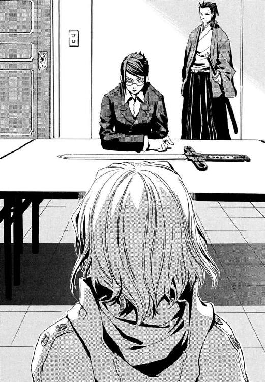
「判明したことがもうひとつ。つい先ほど《協会》から遅れて伝わった事実ですが、今日午前三時ごろ、米軍多摩サービス補助施設に合計十五個の魔法的転移の反応があったようです。約十五分後に、その施設を起点に九人の魔法使いが、すべて別々の目的地をとって魔法的転移で立ち去りました。数名の魔法使いが、フェンスを飛び越えて逃げ去ったという情報もはいっています」
エレオノールが確かに、わずかだけ顔色を変えた。
「昨晩、アラクネという円環魔導師が、刺客に追われて飛行して逃げる途中、この同じ施設からの魔法攻撃で撃墜されています。魔導師公館が、その墜落した魔導師を捜索している最中に、施設は襲撃を受けました」
じりじりと、空気の焦げ付くような緊張が会議室を包んでいた。京香は落ち着きを維持する儀式として、人差し指の爪でカツカツと机を鳴らし続ける。
「まず海外でテロを繰り返し、日本に帰国した過激派が、ワイズマン警備調査会社と取引をしている。そして、米軍多摩サービス補助施設には、現在、近くを飛んだだけの魔導師を撃墜するような、過激な警戒をしなければならない何かがありました。三つ目が、その厳重警戒の施設に、十五名もの魔法使いが魔法的転移で侵入して襲撃をかけた事実です。これら問題がすべて一本の線で結ばれていると仮定すれば、ひとつの危機的状況が見えてきます」
事務官、十崎京香のほか、会議室にことばを発する者はない。
「多摩を襲撃した魔導師たちは、あなたがた神聖騎士団がそれほど警戒をせねばならなかったものを奪取して、テロリスト国城田義一に売りつけたのですよ」
かつて、魔導師公館が、周辺に存在した軍事施設や軍需企業に大きく関わった時代がある。そして今も、その影響は、消えない病根のように、住宅街となった地表の肌の下に息づき続けているのだ。
「襲撃を受けた施設は、かつて米軍にも弾薬庫として使われていました。占領時代、《協会》の魔導師たちとあなたがた神聖騎士団の地下迷宮での攻防はすさまじいものだったと聞いています。ですから、一万年の戦争にケリをつける絶好の機会に、《協会》を仕留めきれなかったあなたがた神聖騎士団は、欲しくてたまらなかったのではありませんか？ たとえば、活動再開を認めなければならなかった魔導師公館や積年の仇敵を、いつでも跡形もなく吹き飛ばすことができる」
京香の唇から、ひどく、ひどく空虚な微笑がもれた。
「────核爆弾が」
まだ十七歳の彼女は、見える皮膚すべてが青白く血の気を失っていた。かつての、神の前に透明な騎士と賞されたエレオノールなら、すべてを「神意です」と受け入れられたかもしれない。だが今はそこまで非人間的に堅固ではない。
「エレオノール・ナガン。《協会》の魔導師たちがしなかった質問をさせてほしいのですが──あなたがたが捨てられなかった兵器が、今、過激派の手に渡って、魔法使いの戦いに関わりない人間へのテロ行為に使われたら。......あなたは、危険にさらしているこの国の住民に、どのように責任をとるつもりですか？」
血を吐かんばかりに、信仰者が唇から搾り出した。
「......あなたがたは、卑怯です」
「私は、以前、聞かれたことには答えると約束しました。けれど、あなたの知りたくない答えを耳に心地よいよう歪めるとも、答えを途中でやめるとも言った覚えはありません」
嫌ならばここで話を打ち切ればよかったのだ。エレオノールが反論したのは、先に京香が約束を守ったからかも、苦しみの底の《協会》時代よりマシになっていたせいかもしれない。少女は京香との関係を切れなかった。だから沈黙は、核の存在を肯定しているのと同じだった。
京香の自宅はこの核爆弾で公館が攻撃を受けていたら、巻き添えで焼き払われた場所にある。母校も、思い出の場所も、幼なじみや古い人間関係もすべてそうだ。だから、核を現実と知った今、静かに怒っていた。
「あなたがた神聖騎士団は、アメリカでは治安維持活動をしていますね。この世界を約束の地とみなし、人々を救うために戦っているのですね。なのになぜ、この国では人々を殺すのですか」
彼女たちの間には、物言わぬ一本の剣がある。人を殺しもすれば守れもする、純粋な力が。
「この国で戦争を続けているのは、《教会》や神聖騎士団の魔法使いだけです。我々の国家間ではもう終わった戦争を、掘り返される筋合いはありません」
京香は確信する。この世のすべての問題に答えきれる、ただひとつの正解などない。だから、どんな信仰者も迷う。そのとき、祈りだけでなく剣がかたわらにあることが聖騎士の不幸なのだ。
「何も答えられないのですか？ あなたがた神聖騎士団が、『この世界を救うために戦っている』のだというなら、その『救い』をここに持ってきてください。古い戦争のとばっちりで、これから未曾有の核テロが決行されれば死ぬ何百万人のための、救いをここに持ってきてください」
そして京香は毒の杯を置く。同情でも共感でも、許容できると錯覚できる「小さなお願い」でいい。
「本来、私はあなたに、自由の代償に核爆弾の奪回を願うつもりでした。ですが、我々がより思い切った作戦をとるための露払いでかまいません。
今、ご存じの武蔵野迷宮に、小学生がひとり迷いこんでいます。名前は、寒川紀子といいます。父親の名前は寒川淳。母親の名前は洋子。結婚して二年後に、父、淳が四十二歳、母洋子が二十八のときに生まれたのが彼女です。両親に溺愛されて育った彼女は、学級委員長をしています。明後日、父親に映画に連れて行ってもらう約束があります」
《協会》で、エレオノールは徹底して人間ではなく、情報の保管媒体として扱われた。だから京香は賭けた。常人なら廃人になる責め苦を一ヶ月以上も負い続けたからこそ、彼女は人間らしいこと、騎士らしいこと、エレオノール・ナガンらしいことをしたいはずなのだ。
「あなたに真正の人間の心があるのなら、ひとつだけでいい、この子どもを助けて下さい」
エレオノールはことばもなく目を閉じていた。そして、正しい答えを選べることを祈るように、祈りのかたちに手を組んだ。
かたかたと、まるで骨髄が骨の中であばれるように、彼女の手の震えは止まらなかった。
神の前に透明だった少女は、剣をとることを迷っていた。
それでも彼女には力がある。神意にたちふさがるものすべてを打ち払った力だ。
それでも彼女には力がある。今、小さな命を助けることができる力だ。
不幸なことに、騎士として一級である部分が、彼女自身の力のほどを把握させる。このひとつさえ果たせば、元の居場所でまた聖騎士としてはたらける希望こそ、彼女を殺す毒だ。
だがその誘惑に乗ることは正義でないと、誰に言えるだろう。それ以前に、ひとりの人間として彼女に見捨てられるだろうか。
騎士が目を開いた。その相貌には、魂からの渇仰を映す炎が燃えていた。
「彼女を助け出した後、私はそのまま神聖騎士団に復隊します。それが、願いを受ける条件です」
エレオノールの剣は、聖騎士の一般的な剣よりもこころもち鍔が長い。
そして、いつか背負う磔刑の十字架にも似たその柄を、少女は火傷のあとも生々しい手で握った。
かくして、エレオノールが去った会議室に、十崎京香と、護衛についてもらった《鬼火》東郷永光だけがとり残された。もう、京香の前の机に剣はない。
「結局、噓をつけない正直者は、だまされたくなければ、最終的には相手を嫌うしかなかったのですよ」
接見の間ひとことも口をはさまなかった剣客が、京香をねめつけた。おのれに噓をつかぬだろう男は、しばしば破滅しつつあるもののふを惜しむ。
「貴様も、さかしらに信義を嗤う手合いか」
「小さな噓を吟味できない純粋な人間は、話し相手と関係を維持したいと考えるべきではないというだけのことです。噓に振り回されてしまうのは、内心のありようではなく、純粋な判断力の問題ですから。自身のコンディションがこうも悪いからこそ、彼女は本来、だまされて悔いのない相手のことばのほかは、一切聞くべきではなかった」
そもそも、エレオノールの身柄を魔導師公館に引き渡した時点で、幹部を殺されている《協会》が何も仕掛けず返したなどあり得ないのに。
「あえて虎を野にはなつもよし。だまされたと知れば、あとは武原の甲斐性次第か」
東郷が、ことばの切れ目を埋めるように、夏大島の和服の胸元から煙管を出した。武原仁の煙草グセは、間違いなく彼の影響だ。
「ともあれ、武原は生き残れぬな」
東郷は、生徒である仁の生死を軽く語る。京香に、男性が生き死にに洒脱であろうとする感覚は理解できない。ただ、それがここでの彼女の立ち位置だから、冷静な判断が出た。
「それでもこの状況、誰が駒を配置したにしろ盤面はひっくり返ります」
†
武原仁が、《公館》に連絡の電話をかけたのは、たぶん正解だったのだ。携帯電話の液晶画面しか明かりのない地下道の隅で、仁は致命的な現状と、今、聞いておくべきことを整理する。
ワイズマンが、神聖騎士団から奪取した核爆弾を過激派に売ろうとしている。それは遅くとも数ヶ月以内に発火する脅威だ。核の買い手は日本人だ。日本人が日本で武器を受け取ったのだ、テロの標的も日本のどこかと考えるのが自然だろう。時間を置くほど官憲の手はせまってくる以上、早ければ数日がヤマになるかもしれない。
誰がこんな場所に携帯電話の中継器を設置したかも、引っかかった。これが最後の交信になる予感がしたから、後から伝えたくなりそうなことは話しておいた。
「アメリカは公式には、この国に一発の核兵器も持ちこんではいない。そんな状態で、神聖騎士団に管理がまかされた理由は何だ？ たとえばこの世界の人間には起爆できない、魔法で起爆する核爆弾だった可能性はどうだ」
資料は戦後に持ち去られて残っていないが、魔導師公館が戦中に核爆弾開発に関わったという噂は、職員に根強い。核分裂爆弾を爆発させるには、濃縮した核物質と、必要なときそれを臨界状態に持ってゆくしかけが必要だ。だがその実現は、科学より万能の奇蹟たる魔法のほうがはるかに簡単だ。奪われた核の出自も、元はあの時代だと仁は思う。戦争のさなか、神聖騎士団だけが手を汚さなかったとは考えにくい。
雑音まじりで音が遠くても、回線の出自はあやしくても、十崎京香は冷静だ。
〈魔法起爆式はあり得るかなー。むしろ、そのほうが紐をつけられるぶん、ワイズマン警備調査会社にとっては好都合だわ。今回の件でワイズマンに信用と実績ができたら、公館の立場は相当厳しくなるから、覚悟しといて〉
王子護たちが核爆弾を売るなら、買いたい悪鬼の取引相手はこの世界にいくらでもいる。それは悪夢の未来図だった。
「今、核が顔を出したのも、グレン事件が米軍に核の存在を思い出させるくらい衝撃だったってことなんだろうな」
〈愚痴はあんまり言いたくないけど、あれから政府内で、魔法使い問題を公館が単独で処理しきれないって認識が強くなってんの。百年前に気づけって感じだけどー。で、いろいろ上の人が折衝してるけど、今、火を消しようがないとこまで大きくしたら、三年以内には特別の機関相等から格下げされて、警察庁あたりの下に組みこまれるかもよ〉
「それで、寒川さんの救出に〝あれ〟か」
弁当のはしを忘れた寒川紀子に連絡がつかないからと十崎家の留守番電話にはいっていた、寒川の母のメッセージで事実が判明したのだそうだ。寒川家にメイゼルが前日おじゃましていたのが最悪のタイミングだった。なお悪いことに、アラクネ捜索に武原家の監視要員を向けていたせいで、メイゼルたちの動きにも気づかなかった。
何も知らない人間が魔法使い事例に巻きこまれるケースは、そうすくないわけではない。仁たちが抱える、変わらない欺瞞だ。それが今日は格別に苦いのは、かつて魔法使いの世界に飛びこんだ仁自身や妹を思い出すせいだ。
「俺もまだまだだな。そんな切羽詰っているなら、顔くらいバレても、さっさと連れ帰ればよかったよ」
仁にとって、エレオノール・ナガンはおそらく最悪の助っ人だ。経路さえわかっていれば、長くかかる道ではないから、早ければ十分後くらいには対面だ。
「あれが裏切ったら、俺は走って逃げるぞ」
〈裏切るんじゃなくて、彼女、いまも聖騎士だしー。仁はバベルの件で恨まれてるから、彼女が暴発してもメイゼルちゃんのクラスメートが巻き添えにならないよう注意して〉
状況は悪くても、公館の仕事の中で、人命救助は気分の悪くないつとめだ。ふと妹が、地下迷宮では負けないと言っていたのを思い出した。
「こんなふうに舞花も、ここで戦ってたのかな。俺、あんまりあいつに仕事の話、聞けなかったからさ」
〈舞花ちゃん、すごく仁に似てたんだから、思い出で足んなかったら鏡でも見なさい。本当に、どうでもいいことばっか上手になっちゃうとことか、そっくりだしー〉
「昔は、全然似てないって言ってなかったか？」
「どんどん似てきたのよ。......ほんと、ちょっとなんとかしてやってってくらい、似てきたの。だから仁は、ふたりぶん、つまんない死に方できないのよ」
あの蛍がアパートに来た日から、何年もなかったほど妹のことをよく考えているせいだ。面影が、簡単に思い浮かんだ。
「あんまり俺とは似てなかったよ。舞花のやつ、本当に大事なことは、俺じゃなくていつも京香お姉ちゃん京香お姉ちゃんってさ」
たぶん、電話口の向こうの声が小さすぎたのだ。ノイズにまみれて京香の答えは聞き取れなかった。一呼吸、二呼吸、仁の答えを待つように時間が流れ、そして電話は切れた。
仁と京香は、ずいぶん昔から、いつもかみ合わない。
だから話をするたび、これで終わりだと心残りなことが、生きて帰る理由だった。すくなくとも、幼なじみが魔導師公館の事務官になったはじめはそうだった。彼は彼が大事に思うものをみんな守りたかった。たぶん今もその道の延長線上にいる。妹のことを考えると最初に引っかかるのは、あの夏、アパートの部屋の前で魔法使いの死体を見下ろす彼女のことばなのだけど。
「本当はわかってるよね。お兄ちゃんは向いてないんだから、もう家に帰って、高校に普通にかよって大学とか行こうよ。訓練したって結局最後はこんなふうに死んじゃうよ」
あの日は、悔しくてたまらなかった。今は妹の気持ちがわかる。刻印魔導師であろうとするメイゼルに普通の小学生でいてほしいと願う仁とそっくりだからだ。
「なんで俺は、こんなに、たいせつな答えばかり間違えたんだろうな」
彼はホルスターから抜いた自動拳銃を手に走り出す。仁と妹が似ていたかはともかく、おとなになった彼の答えは、たいせつなものを救えると信じた。
メイゼルたちが、魔女アラクネの車いすを追いかけた北へ向かう通路のほうから、すさまじい爆発音が轟いた。事態の推移は彼が追いつくまでも待たなかった。
「くそ！ なんだってこんな嫌な予感ばっかり現実になるんだ」
仁は吐き捨て、遊底を引いて初弾をいつでも撃てるよう準備する。だが彼は、まだ事態を甘く見ていたことを、わずか数十秒後に思い知ることになる。
まるでそこは炎に焼かれる断罪の広場だった。アラクネが勝手に入った横道は、誰があけたのか新しい世代の通廊だ。見覚えのない通路は、とても明るかった。七十メートルほど先が、火の粉が舞い散る火の海となっていたからだ。
あり得ないものを前にして、仁は走る。そこそこ地下迷路を知っているつもりだったことが恥ずかしい。炎に巻かれていたのは、彼が今ひた走る通路と、はじめて見る広大な第一世代地下壕とが直角に交わる十字路だ。その隅で、メイゼルが追い詰められた獣のように身を低くして、東西を貫く大通りの東側をにらんでいた。その足元にへたりこんだ寒川紀子が、魔炎の中心だ。
車いすの魔女は、床の裂け目に片輪をとられてむなしく同じ場所を回っていた。魔法を破壊するしかない委員長を中心に、渦巻く魔炎に煌々と照らされ、周囲は真昼同然だ。
《魔獣使い》神和瑞希が、まるみを帯びた十字路の角の壁に、はりつけの罪人のように縫いとめられていた。三本の槍が突き立ったその制服に、血で汚れていない場所はどこにもない。倉本きずなが、友だちの体を貫通したそれを必死で抜こうとしていた。
「第一世代地下壕は、六十年間でようやく九本発見だぞ。十本目が出たのに、磔でよろこべるかよ！」
仁の頭も体も、訓練教官だった王子護にこの地下道で鍛えられたとおり動く。すみやかに状況を見渡し、味方全体がもっとも有利になる戦局に、戦闘状況に入っていない彼が近づけるのだ。
すこしでも十字路東側の敵をはやく発見するため、仁は通路の端に寄る。誰にとっても突然だったろう惨事の脇から、接近する彼に気づく者はまだない。
オレンジ色の炎に甲冑が炙られていた。たぶん神聖騎士団のものだ。だが、仁にとっては見慣れた、楽器でもある装飾に彩られた騎士鎧ではない。伝統的な指輪を走らせ神音をかなでる神音装飾をほどこされた胸甲と肩鎧をのぞいては、直線で構成されている。色彩も飾りがない黒一色のそれは近代的な軍隊の装備のようだ。
剣を振れる間隔をとった三人横隊の騎士たちが、背負っていた細長い子ども用の棺おけほどもある箱を床に落とす。二つに割れるように開いたその中身は銃ではない。
「《煉獄の蜂》、第二射、放て！」
英語の号令が勇ましく地下道を震わす。応じて聖騎士たちが、籠手にはめられたダイアルを回す。箱に仕込まれたスピーカーが発したものは、おそらく神音。概念魔弾に類似した、半透明の巨大なハチのようなものが六羽、棺おけから垂直に舞いあがる。ほとんど視認不能の超高速で十字路へ突っこんできた魔法の誘導弾が、音もなく一瞬でみずから燃えあがった。
十字路に飛びこんだ仁は、敵陣容と退路を瞬間的に確認する。神和瑞希の《魔獣使い》は、気盾と呼ばれる強力な汎用防御魔術を使う。本人の耐久力、自己回復力まで加味した防御能力で専任係官中最高を誇るその鉄壁を信じた。
「お願い！」
だが振り向いたきずなが右手を祈るように槍の嵐に向け、そして握りながら地面にたたきつける。《幻影城》から魔法構造体を呼び出す再演魔術《無色の手》だ。倉本きずなが戦闘状況で再演魔術を使うのは、バベル以来だ。だが、奇蹟は彼女たちを救わない。通路自体を満たすような、すさまじい轟炎があがった。雷鳴のような着弾音をたて、槍は止まらず次々に《魔獣使い》の体に突き立つ。
「なんで!? なんで！ なんで！」
友だちの血を浴びながら、きずなが二度、三度、《無色の手》の魔術を使う。再三の魔法は、強烈な魔炎で十字路を満たすが効果をあらわさない。
「敵は一隊十二人、聖騎士一小隊いるぞ！」
仁が魔法消去を作動した瞬間、魔炎を感知できなくなった視界は照明を落としたように漆黒の闇に落ちた。聖騎士の装備がどんなに強力でも、魔法に由来するなら、仁の視界の継続的な魔法消去環境下では使えない。
記憶している聖騎士の位置に向けて、銃を撃つ仁は、加減などしようがないと冷たい覚悟を決める。聖騎士が誇る汎用防御魔術《光背》は、悪鬼である寒川紀子による消去で焼失している。闇の中、急所に一発、二発。さらに足音で反応の鈍さの知れる敵をもうひとり。一発目の銃声の残響が消えるまでに合計四発を射撃後、戦果確認のため魔法消去を再停止する。
再度第一世代地下壕が魔炎に照らされた。よろめき倒れた左端の騎士の、甲冑の左胸には確かに二個の銃創が、中央の騎士の胸甲にもふたつの黒穴があった。だが、絶命どころか出血すらした様子もない。聖騎士たちが立ちあがる。仁は、彼らが軽装の鎧の下に着こんだ下鎧の素材感に、防弾チョッキの試供品で見覚えがあった。
「理にはかなってるけどな。なんだって魔法使いが防弾繊維なんか着てるんだ」
「せん──」
背後で起こった気配に向けて、仁は叫ぶ。
「寒川つれて奥に走れ、メイゼル！」
声でバレると気にする余裕はなかった。死ねばすべて終わる。寒川に万が一のことがあれば公館も危ない。いや、ニセ教師でもある仁が、六年一組の生徒を絶対死なせられないのだ。
子どもの軽い足音が通路の奥へ遠ざかる。魔炎の源が去り、明かりは神和瑞希を貫いた槍からの炎だけだ。仁はまた魔法消去を作動し、闇の中、銃弾を正確に騎士へたたきこむ。磔の瑞希のもとへ後退しながら、射撃と確認を繰り返す。撃たれても死なない防弾装備の騎士たちは、仲間が倒れても足すら止めない。追い詰められた仁は、《魔獣使い》を貫く炎の槍に指で触れ、ぞっとした。熱がない──これは魔炎だ。
血まみれのきずなが、瑞希を貫く槍の魔炎にあおられ、目を大きく見開いて彼をみあげた。
「......武原、さん」
魔法消去を受け続ける傷には、神和瑞希もただの人間と同じだった。命があるのは、《煉獄の蜂》の精度が中途半端だったからに過ぎない。先刻の頭部を狙って止めを刺しにきた攻撃は、射出された六本中、四本が壁に深く刺さり、二本が左肩と右横腹を貫いただけだ。下腹と胸部を縫いとめた一本ずつと、右腕の肘付近を砕いたものと合わせて槍は合計五本。抜かねば、さすがの瑞希も死ぬ。
仁は瑞希の横腹を貫いた魔炎の槍を握り、力のかぎりに引く。石壁に深く食いこみ、ズレもしない。聖騎士たちは足音高く十字路に展開し、仁たちを囲みつつある。瑞希を助けようがないなら、彼の役目は、完全に退路を断たれる前に壁となってきずなを奥に逃がすことに変わる。
だが、仁は訓練どおりに弾倉交換を行いながら、一瞬だけためらうのだ。きずなを助ける基本方針はともかく、瑞希を即座にあきらめて数秒間をかせぐか、ギリギリまで試すか。
もはやあえぐだけの胸から、けれど神和の《魔獣使い》は声を搾り出した。
「............だい......じょう...ぶ......」
人形のような完璧な造形を誇る瑞希の右腕が、槍より先で腐り落ちた。ぼとりと、あっけないほど軽い音を立てて人体の一部が転がる。瑞希をまだ貫く残り四箇所の肉が、変成の代償にゴウと燃えあがった。だが、天性の狩人は、腐った右腕の残骸を蠅の群れに変えて、自由にした右腕の切り口にたからせる。《魔獣使い》は万物の源たる息気、《気》から自然のすべてを生成する、おのれの腕すらもだ。
そして焼き串に刺された瑞希が、体は磔のまま、強引に自由にした両腕で、こいねがうように友だちの手をとる。
「............支配は、......こう...する......」
血に濡れた唇をぬぐおうともせず、同じ色の雫に濡れたきずなの手の、指をそっと折り曲げさせてゆく。指で印を組んだ自分の手を、きずながじっと凝視した。
きずながカタカタと歯を鳴らしながら、血に濡れた右手をそっとあげた。
操り糸に吊るされた操り人形のように、《魔獣使い》の右腕があがった。
仁は、眼前の光景に、目を疑った。魔法使いは、故郷の世界秩序を引き連れているからどんな異世界へ行っても自分の魔法を使える。それは、裏返せば自分の世界秩序に引きこめないものを、好き勝手には操れないということだ。魔法を、他の世界秩序そのものである魔法使いに直接影響させることはできない。例外は、《神に近き者》グレンの《原型の化身》のような、魔法的に観測し記述した自分自身の姿が、他者との境界を曖昧にする媒介であるときだけだ。それですら条件を要求するのに、きずなの魔法は今、直接人間を操作しているように見えた。聖騎士たちすら、魔法の常識を破るものを前に、おそれにからめとられていた。
再演大系の魔導師は、世界を一冊の本として認識する。そして、そこに記された過去の出来事を演じる行為を《索引》として、歴史を書き換える。そういう魔法だと思われていた。だが本当にそうだったのか。
再演大系は、魔導師に歴史を一冊の本として認識させる。そして、そこに記された過去の出来事を演じる行為を《索引》として、過去の人間が強制的に従わされる結果、歴史が書き換わる魔法だ。それが真の姿ではないのか。
──証拠に、友だちの手を支配しているきずなの指の動きのほうが、実際に人間離れした腕力で槍をつかんで引き抜く瑞希の腕より、一拍ぶん遅れている。きずなが今、一拍ぶん未来から過去になった瑞希へと、自分の手で槍を抜いたという結果を押しつけているからだ。
血みどろの槍が床に落ちた固い音が、たぶん信仰より根深い、人間として本能的な恐怖を弾けさすきっかけだった。
リーダーだろう黒人聖騎士が抜剣する音が、突風のごとく迷いの雲を吹き散らす。
「自由と愛する音楽のために！」
号令に答える雄たけびとともに、聖騎士たちが身を低くして突進してきた。地下道の壁に足音が太鼓さながら反響して、まるで百人の人間の波が押し寄せてくるようだ。
拳銃一丁でそれを牽制する、仁の視界は明滅した。引き金を引くたび、魔法消去と消去停止、銃撃と確認再照準とで視界を闇と炎に行き来させる。密集すればするほど、肉と鎧の大波は派手な音と火花を立てて銃弾で弾かれる。弾丸は止まっても衝撃が消えるわけではないのだ。着弾の反動でよろめき後ろに倒れる騎士に後列がぶつかり、わずかに足が止まる。
瑞希を壁に縫いとめていた槍の落ちる音が、後ろで響く。──一本、──二本、──三本、──四本！
自動拳銃の装弾数は七発しかない。十二人の死なない敵を食い止められる時間は、一分となかった。
槍の魔炎は抜けるたび一本ぶんずつ消え、もはや焚き火ほどの明かりにもならない。
走りながら、聖騎士たちが剣を構える。
「聴音モードを申請する！」
リーダーらしい黒人騎士の怒号に、装備したスピーカーから機械音声の応答が響く。
〈OK. are you ready?〉
瞬間、闇の中で、十二人の聖騎士たちの捧げ持った剣が一斉に炎をあげた。
神和瑞希をたやすく磔にした槍と同じだ。十二本の剣に、魔法使いを恐怖させる地獄の業火、魔炎が十二個燃えていた。それは、《公館》の魔法学者溝呂木京也がグレン・アザレイ戦に投入した最新の対魔導師武器《魔導師殺し》そのもの。──それが、再演魔術の脅威を目にしてなお勝負をかけさせた、神聖騎士団の切り札だった。
「参ったね。確かにその剣は、魔法使いが持ったほうが効果的だ」
仁の背中を冷や汗が伝う。《魔導師殺し》の魔炎の源は、もちろん聖騎士ではない。剣の刃部分に組みこまれたマイクロフォンで録音された音を、どこかで悪鬼のオペレーターが聞いている。その間接消去で魔法が消去されているのだ。
神和が呼び出した万物の根源たる《気》の霧を、業火の剣が切り裂いた。
五本目、最後の槍を引き抜いた《魔獣使い》が、床に落ちる。明らかに戦える状態ではなかった。再生した右腕は短くなり手のひらは肉まで焼け、体に空いた五つの大穴は周囲の肌も肉も焼け爛れている。瑞希の体は、磔の間ずっと魔炎をあげ続けた。槍の魔法消去がきずなの再演魔術を破壊しないよう、体温なり内臓の音が伝わらないようにし続けた結果だとしたら、おそるべき執念と信頼だ。
だが、どんな高い再生能力を持つ魔導師も、聖騎士たちの手に握られた魔炎の剣で斬られれば死ぬ。ほとんどの防御魔術では、刃を止めようもない。もちろん、生身でしかない仁も助からない。
「にげろ！ きずなちゃん」
叫ぶ仁へと、最も足の速かった小柄な騎士が、突きこんできた。刃を腹にかすめさせ、肩をぶつけ敵を弾きとばしつつ予備弾倉を引き抜く。体が離れた瞬間に弾倉を交換して、また遊底を引──く間もなくもうひとりの剣をかわす。体をひねった流れる視界に、きずなへ向けて剣を振り下ろそうとする聖騎士が入った。それは、バランスを完全に崩した彼にはどうしようもないタイミングで、絶望が視界から色を奪ったそのとき、銃声が轟いた。
一発ではない。二発でも三発でもない、嵐のような、数を数えることもできない無数だ。
花火の打ち上げ現場にでも突っこんだのかと思った。
銃声が、だだっ広い十字路を跳ね回る。硝煙が逃げ場のない空間に漂いはじめていた。
聖騎士たちも迅速に密集し、《魔導師殺し》を停止していた。当たり前だ。横殴りの雨のごとくたたきつける弾丸には、明らかに軍用小銃のものとわかる発射音と、曳航弾の火線が多数混じっているのだ。防御魔術に全力を注がなければ、個人で着込める防弾装備程度で食い止めきれる質でも量でもない。
密集陣形をとった騎士隊の、四方の防壁として立つ男たちは巌のように動かない。だが最初の一斉射で撃たれたものがいるのだろう、その内側からは切迫した声が響く。《光背》の防御を突破できない、おびただしい数の弾丸が空中で止まり、そのまま足の踏み場もないほど石の床に落ちていた。つまり、銃撃を行っているのも、魔法消去で防御魔術を突破できない魔法使いだ。
「なんだこれは!?」
仁はまだ生きているのが不思議で、跳弾をすこしでも避けようと身を低くしていた。全身が震えて、口の中がからからになってつばも飲みこめない。聖騎士たちがかかげた魔炎のかわりに、白く明滅するはげしい銃火だけを頼りに、周囲の様子を見回す。
銃火は、十字路の神和瑞希が串刺しになった背後の、広い西側通路から瞬いていた。それだけではない。四方八方から閃光が走る。銃弾の雨が、明らかに射撃手が位置どれない天井や壁からたたきつけてきているのだ。魔法使いの銃手たちが、空間を跳ぶ扉を、円盤型にそこかしこに空けていた。その向こう側から撃ちまくって、安全圏から弾丸だけを聖騎士隊へ飛ばしてきている。
仁は秋物のジャケットを脱ぎ捨てた。全身、水浸しになったように下着の中まで冷や汗まみれだ。けれど同時に、銃声で耳がいかれて、まるで熱気にやられたように頭は昂揚している。
「罠か!? ハメられたのか？ いや聖騎士が狙いで俺たちがエサか？」
完全に不意を衝かれたパニック状態から、ようやく判断力が回復してきた。まっ暗になった地下道に、人の気配がすくなすぎる。倉本きずなの姿が、神和瑞希が、まるでそこに存在しなかったように消失していた。
かわりに、仁の背後に立っていたのは、純白のスーツに身を包み、まっ白な帽子をかぶった〝怪物〟だ。はじめて出会ったのは、中学三年生だった九年前だ。右目を覆う銀の眼帯も、紫の瞳も、目元のしわすらまったく変わっていない。完全大系の高位魔導師にして元《公館》の専任係官、王子護ハウゼンが、立ちこめる硝煙の匂いを味わうように帽子で白い煙を鼻に向けてあおぐ。
「多少の手違いがありましたガ、まあいいデショウ。お預かりしたおトモダチと交換で、君にお願いがあるんデスガ」
かつて魔導師公館の戦技主任で、訓練教官だった男は、戦場ではありえないほど屈託のない笑みを浮かべた。
「あの聖騎士が張ってる防御魔術、魔法消去で焼き払っちゃってクダサイ」
闇をまたたかす火薬の閃光にあぶられ、軽薄な笑顔が、まるで鬼の面だ。
十字路の聖騎士隊は、第一世代地下壕の幅の半分以上を方陣でふさいでいる。いや、この東西に走る壕自体、冷静に目測すると第一世代地下壕としては通常の三分の二、幅十メートルとせまいのだ。騎士たちは正確に《光背》の損傷をはかり、鎧の神音装飾に指輪を走らせ神音をかなで、防御魔法を張り直す。秒間五十発は撃たれているのに、削られた防御魔術を修復するほうが速い。それは神聖騎士団に、強大な《協会》と一万年戦い続けさせた鉄壁。だが仁が騎士たちの命綱である《光背》を魔法消去で奪えば、蜂の巣になって皆殺しだ。
仁の右手は、拳銃をまだ握っている。だからその遊底を引いて薬室に送りこむ。弾丸は常にここにある。
「きずなちゃんと神和を、今すぐ返せ！」
王子護は仁の銃など気にも留めず、小型のデジタルカメラをスーツの内ポケットから出し、シャッターボタンを押した。フラッシュが焚かれて、闇の中に騎士たちが一瞬明るく浮かびあがる。撮った写真を後から悪鬼に観測させて、魔法消去できないか狙ったのだろう。だが、時間軸上の未来でカメラが破壊される予定なのか、魔炎はあがらない。
「ダメですカ。本当に、間接消去を使いこなすのは難しイ」
「俺たちがここに来るのを、知ってたんだな！」
叫ばないと十字路を埋める銃声に気圧されるから、腹の底から声をあげる。彼の元先生は、表情ひとつ変えない。同じ専任係官の《魔獣使い》はともかく、民間人の身柄をおさえている限り、武原仁には撃てないと読まれている。
「今の《公館》じゃ、刻印魔導師使えない状態で、ジンが来ないわけないデショ」
何度も殺されかけた訓練時代を体が思い出し、仁の正気の温度は下がる。王子護ハウゼンは、情で揺れる人間ではない。このうさんくさいエセ上品な面のまま、平気で人を殺す。だから仁が命を預けるべきは戦局判断のみで、人間関係の雑音など入れれば彼は死ぬ。
銃声のまっただなか、王子護の声は驚くほど響く。
「機械化聖騎士師団の騎士隊は、生かしとくと面倒デスヨ。ぱーっと《光背》燃やシテ、さっさと殺っちゃいまショウ」
仁が、この地下迷宮で、ほかならぬこの男に教わったことだ。魔法使い同士の戦いでは、魔法が当たれば、その威力で人体はまず壊れる。だから逆に、防御がうまくて、簡単には死なない魔法使いが戦闘の強者なのだ。
だから仁にも、今、敵の優先しているものが理解できた。
「《魔導師殺し》が真価を発揮するのは、魔法使いの強者にだよな」
状況整理が遅れたのは、仁自身、どこかで否定したかったせいだ。
「おまえらワイズマンが、なんで今、連中を仕留めときたいんだ？ ただ核を売るだけなら、こんな面倒をかける必要はなかったはずだ。聖騎士なんか、守る側の公館とちがって、身軽なおまえらには、取引がすんだら逃げればいいだけの相手だろ」
鉄火に焼きついた王子護の影が、眼帯を指で搔いた。それは先生だったころのこの男が、生徒がいい答えを出したときよくやったしぐさだ。
「聖騎士の次は、俺を撃ち殺すつもりだったろ。サービスいいな、ワイズマンは。核を過激派に売りつける上に、魔導師総出でテロ決行の露払いまでおまかせか！」
テロに邪魔なものを排除するなら、潰すべきは聖騎士だけではない。そして公館の戦力も削りたいなら、買い手が核爆弾を使う時期は、仁が死んだ後の再編成が間に合わないほど近い日付だ。
だから仁は、改めて銃口で王子護の額をポイントする。明確な殺意をこめて。
「今すぐ答えろ!! 核はどこだ！」
そうして、眼帯の妖人は、引き金ひとつに命をのせられた状態でなおも笑うのだ。
「ジン、多少の手違いはあっても、きちんと立てた計画は、結局落ち着くところに落ち着くものデスヨ」
毒の海のような全身に滲みる緊張の底で、仁はまだ息を止め続ける。それは、いつの間にかなじんでいた世界。銃声、暗闇、そして死に近い沈黙。
「............俺が撃たないはずないだろ。俺だってもう、いいおとなだ。どっち選んでも失うなら、なくすものの大きさを比べて、計算くらいできる」
「自分に噓つくの、うまくなったネ。でも、まだまだヨ。音は銃声にまぎれてきこえなくてモ、ほら、光は見えるでショウ」
轟音に聴覚が飽和した世界で、その光は奇妙に神々しく見えた。
燃える溶岩が押し寄せるように、メイゼルたちを逃がした先の通路から赤い光が近づいてきていた。それは、まさに最悪の光景だった。
「逃げて！」
切羽詰ったメイゼルの叫びが銃声の瀑布をわたった。
少女たちが逃げこんだ通路から、類焼するように、橙色に魔法を焼く魔炎の輝きがこぼれてきたのだ。炎の渦の中心は、奇蹟なき世界の人間でしかあり得ない。そして、メイゼルは、あの通路の奥へ、六年一組の友だちの手を引いて走ったのだ。
闇を焼きせまる、ぼろぼろの車いすに白髪の魔女は座っていない。かわりに寒川紀子が、荷物のように載せられていた。そして、同級生の体を抱くような不自然な姿勢で、鴉木メイゼルまでも車いすに押しこまれている。リュックサックはなくなっていた。少女たちの汗ばんだ両手は、寒川紀子の背中に回されて、見覚えのある一本の黄色のリボンできつく縛られていた。しわになったワンピースの布地の下で、メイゼルの細い体が、魔炎になめつくされ燃えあがるようだ。魔法消去が最大の効果を発するのは、接触状態にあるときだ。五感の感覚に拘束されたあの状態では、メイゼルも一切魔法は使えない。
リボンを奪われて長い黒髪を乱した小さな魔女は、この状況を理解していた。
「見ちゃダメ！ 目を開けないで!! あんたが目を開けたら、みんなおしまいなのよ！」
「────────────────────？」
目を閉じたまま寒川が悲鳴をあげ、もがいた反動で体勢を崩し、いすごと転倒しかけた。後ろでハンドルを握って軽々とそのかたむきを直したのも、委員長のズレた眼鏡を直してやったのも、おとなの手だ。
仁は、足元をすくわれたうかつさに歯嚙みする。この十字路には人の気配がすくなすぎた。銃弾飛び交う死の大通りに魔女アラクネがいないなら、メイゼルたちと同じわき道に入ったと考えるのが自然だったのだ。
「どこから仕組んでいた？ 昨晩、スラウネン兄弟におまえが襲われたところからか？ 公館に保護を求めたところからか？ 情報提供を持ちかけたはじめから全部ウソか！」
仁の怒りは、銃弾を雨と打ち出す破裂音に搔き消える。幅十メートル、複線の地下鉄トンネルほどしかないおかげで、白髪の魔女アラクネの顔が見える。これまでの狂態がまっ赤な噓だったような、はじめて見る挑発的なまなざしまで、はっきりと。いや、恍惚に呆けていたこれまでの姿自体が、まるっきり噓だったのだ。
結局、薬物中毒のふりをしてなにひとつ意味あることをしゃべらなかった女が、顎まで届くような長い舌を出した。
「さあ、どこからでしょう？」
声は届かずとも、はっきり唇は読めた。腹の底が煮えくり返った。メイゼルと同郷だから、彼女の運命を、救われてほしいと願っていた仁こそいい面の皮だ。聖騎士に撃墜されなくても、あの深夜の戦闘でアラクネは行方不明になる手はずだったのだ。そして魔導師公館は協力者を失ったメンツから、《協会》は身内が刺客として働いた負い目から、魔法や人手を惜しみなく使って彼女を捜索した。その動きを陽動に、機械化聖騎士師団が守る米軍施設への核を狙った襲撃は行われた。
──いや、それ以前に、この襲撃に《協会》は本当にまったくかかわっていないのか？
銃口を突きつけられたまま、王子護が人の悪い笑みを浮かべる。
「ほら、落ち着くところに落ち着くって言ったデショ」
銃声を聴く寒川紀子が近づくにつれ、聖騎士たちを包囲する位置にひらいた魔法の銃眼も燃えてゆく。戦いになどかかわりがない、ただの小学六年生の寒川が恐怖に顔をゆがめて歯を食いしばり、目を閉じている。ニュースででも戦争の生々しい映像は放映されているのだ。彼女にも、この耳に聞き肌に感じるものが銃声だとわかるかもしれない。
仁は、王子護の勝利を確信したにやけ面を、かまえた拳銃ごしににらみつけた。
「ああ、この世界の人間なんぞ、おまえらにはしゃべる糞も同然なんだろうな。けど、バカにすんのもいい加減にしろ！ 《協会》の調整官ですらアラクネの名前を知ってたんだぞ!! たかだか何年か前につくったばかりのワイズマンに、どうしてニセの情報提供者をつかませるみたいな手のこんだことができた？ おまえらどこまで人間の信用を安く見てるんだ！」
寄ってたかって魔法使いにバカにされているようだ。白髪のアラクネが、厳密にワイズマン側だと、判明しているわけですらない。それでも、アラクネから銃撃隊から蔑みの視線を、そして彼女たちの間には信頼を、感じるのだ。
銃声がついに完全に絶えた。耳につんとくる静けさの中、地下の冷たい空気がシャツ越しに体に染み入る。今は魔法使いの銃撃隊は、寒川の魔法消去下での虐殺のため、優位な射撃位置をとるべく十字路の各通路に移動をはじめたのだろう。
《協会》圏の魔法使いが銃器をほとんど用いなかった理由は三つ。魔法使いについてまわるゆがんだ世界秩序による暴発の危険と、おのが魔法への誇り、そして地獄と蔑むこの世界の武器への忌避からだ。神聖騎士団も神音魔術の楽器を、技術的問題と、やはり人の手から奇蹟が離れることへの慎重論から機械化できなかった。先月の《神に近き者》グレン・アザレイが、古典的な魔法使いの極北だとしたら、今ここで激突しているのは魔法使いの最先端たちだ。間にはさまれた仁たちこの世界の人間だけが、流れに取り残されまごついている。
むせる硝煙の臭いが薄れる前に、また銃撃がはじまる。とらえた寒川紀子のまぶたをムリヤリ指でこじあけるのは簡単だ。仁が魔法消去しなくても聖騎士は防御魔術を破壊され、皆殺しになる。そして、片付けば次は仁たちだ。
だが、そのまさに窮地にある聖騎士隊が、密集陣形を解いた。バスケットボール選手のように背の高い黒人騎士が、大きな愛嬌のある目をむいて、白い歯を見せて笑った。
「我慢の時間はここまでだ。そろそろ、機械化聖騎士師団の戦い方ってやつをご披露しようじゃないか」
十二人の騎士たちが隊列を解いた足音が、ばらばらと十字路に響く。次の瞬間、通路の向こうから銃弾が飛んでくるかもしれないのに、足取りは自信に満ちている。最初の銃撃の負傷者まで、この短時間で全員歩けるところまで回復していた。
ばらける防弾装備のチームの中、ひとり古典的な重甲冑をまとう少女騎士が、仁王立ちに動かず仁をにらんでいた。
「上級聖騎士リュリュ・メルルです。覚えておきなさい」
公館に飛びこんだころの仁と同年代の、あどけない頰をした少女だ。全身を熱い憎悪に満たし、瞳はおのれを悔いるように冷たい。実際、仁は、恨まれてしかたないほど何人もの聖騎士を斃してきた。
その少女騎士の肩に、陽気さにすべてを押し隠すような長身の黒人リーダーが籠手をのせる。
「騎士リュリュ。クールに行くぞ」
騎士たちの瞳の輝きは、生死の境をさまよう獣ではなく、逆転勝利を狙うチームの不屈だ。眼前の騎士たちの装備は、仁がはじめて見るものばかりだ。だが、その文化も目指すものも強固な意志も、聖騎士たちが受け継いだ潔癖な戦いのまま、感嘆するほどぶれがない。彼らに、本当は余裕などあるはずがない。魔法は悪鬼に観測されれば燃え、生身の人間は撃たれれば死ぬ。ワイズマン側の二次攻撃前か、でなければ攻撃の瞬間に勝負を決めなければ全滅だ。なのに誰もが落ち着いているこのチームは一流だ。
だが仁の背中に、走る悪寒は止めようがない。
「まだぼくに銃を向けてていいんデスカ？」
王子護が、眉を寄せ心配そうな顔をつくった。盾になりに行けとばかりに地下壕に銃声はない。冷静に見れば、次の展開などわかりきっているのだ。
「やめろ！」
だからついに、仁は、王子護を突き飛ばし魔炎の源へと全速力で駆け出した。
愚かな選択だ。幅十メートルは長すぎる。今、銃撃がはじまれば、魔法で守られない仁は犬死にだ。事態の中心である王子護から距離が離れれば、生き残る手がかりすら失う。
だが、このままでは、ただひとつの勝機にかけた不屈の騎士たちが──────────────────核爆弾奪回という大義のため魔法消去の源を、寒川紀子を殺す。
響いた銃声は、破裂音に似ていた。
仁はよろめいて、メイゼルたちの車いすのすぐそばまでたどりついた。
そして、なぜかわからないほど急速に力が抜けて、膝をついた。
「......だいじょうぶなの？ おねがい、おねがい」
車いすの上で、メイゼルが身をよじり、声をかすれさせて彼を呼んだ。だから、はやく安心させてやらないとと駆り立てられる。
「だいじょうぶだ。俺はそう簡単に死なないよ」
仁は膝をついたまま、荒い息をおさえきれず、すがるように銃をかまえる。硝煙をあげる銃口の向こうでは、アラクネが右肩を押さえていた。かつて守ろうとしたものに、彼自身が引き金を引いたのだ。
「俺は絶対、おまえを助けてやれないまま、欺瞞だけをかかえて終わったりしない。......俺にだって、何かを勝ち取ってやれるはずなんだ」
こんなときでも、仁の名前を隠してくれている小さな魔女を抱きしめたくなる。まっ暗な地下道の底、離れて見守り続けた緊張が解けたせいかもしれない。
────そして、背後で強大な神音は弾ける。
大気の炸裂。とっさの魔法消去。噴きあがる魔炎。激痛と全身の血を直接攪拌されたような不快感に、仁は耐え切れず膝をついていた。ボクサーに思い切り腹を殴られたようだ。体が半分なくなったみたいな苦痛に歯を食いしばり、仁は顔をあげる。肌を触れ合わせたメイゼルと寒川紀子は、魔炎を全身にまつわりつかせ、無事だった。アラクネが、腹からの大量出血でローブを染めて倒れている。仁は、攻撃が予想ほど致命的ではないことをいぶかり、あえぎつつも立ちあがる。
目に入らないよう額の脂汗をぬぐいながら振り返る。防弾装備の聖騎士隊までが、ようやく立ちあがろうと四苦八苦していた。王子護が、跳ね飛んだ帽子をかがんで拾っている。
十字路に、二本の足で立っているものは誰ひとりなかった。ただひとり、床に突き立てた剣から魔炎をたちのぼらせる、鎧に身を包んだ少女を除いては。
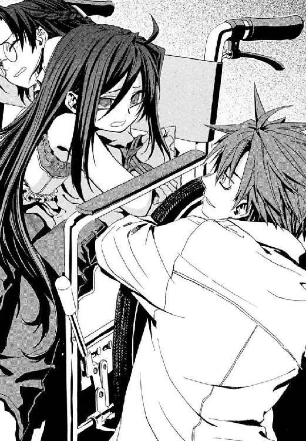
その清楚な立ち姿の鎧乙女を、仁は忘れたことはない。銃撃がいつはじまるともしれない十字路を駆けたときより、強く死を意識した。十数分前まで、もう戦場で出会うことはないと、正直ほっとしていたのだ。以前より色が薄い亜麻色の髪は、肩に近い位置で切りそろえられている。
エレオノール・ナガンがそこにいた。
一度仁に死のふちを這わせ、神和瑞希に重傷を負わせた騎士が、そこにいた。バベルでは、結局正面からの戦いでは一度も敗北しなかった騎士が、そこにいた。
滅多に人をほめない王子護が、商談にのぞむセールスマンの笑みで、帽子の土ぼこりを払う。
「素晴らしい。無音魔術で床を震わせてスピーカーがわりに使って、広域で魔弾の神音を発現させたのデスね。......聖騎士クビになったら、うちではたらきまセンカ？」
無音魔術は、神音を悪鬼の耳に届く前に相殺して消し、複雑な神音楽曲を途中で消去されないようにする高度技術だ。そして発生させた魔弾も寒川紀子の周囲では魔法消去され、狙ったものだけに打撃を与えた。
かつて立ちふさがるすべてを打ち砕いた騎士の戦闘力は、一ヶ月以上の《協会》の拘禁を経てなお、仁には健在に見えた。
そしてエレオノールの、悲痛なソプラノが十字路に響き渡る。
「誇りある聖騎士が、そのようなことをしてはなりません！」
機械化聖騎士隊が、味方に攻撃を受けた事実に、それぞれ歯を食いしばり立ちあがった。けれど、その温度差にエレオノールは気づいていない。
「聖務のためとはいえ、子どもの命まで奪ってよいはずがありません。故意でここにいるわけではないのです。帰してあげればよいではありませんか」
仁は、会話が聖騎士のよく使う英語で、内容が生徒たちに伝わらずにすんで感謝する。今のうちにと、拳銃を歯に嚙んでくわえたままナイフを抜き、リボンを切って少女たちの手を解きはなつ。
「手だけじゃダメ！ 足も糸でしばられてるの」
仁は、メイゼルの汗ばんだ声にしたがって、もつれあう素足とジーンズを膝のところで何重にも巻いた透明なナイロン糸を、一本ずつ丁寧に切る。十字路に魔炎以外の光源は、銃火がやんでからは皆無なのだ。ひとり視界を閉ざされた寒川の、震える背中をメイゼルが落ち着かすようにさすってやっていた。
「ほら、足のところ、感じるでしょ。あたしの大スキな人の指が、今、あたしたちのこと縛った糸をまさぐって、切ってくれてるわ。やっぱり、おめかししてきて正解だったでしょ」
寒川のかわいらしい耳にささやくメイゼルも、相当痛かったはずだ。肉の薄い太ももに糸が食いこんで、吸い付くように汗でしめった肌が赤くなっていた。
仁は右手にナイフを握ったまま、拳銃を左手に、十字路の成り行きへ視線を戻す。京香との約束を、エレオノールは律儀に守ってくれていた。
「あの人、あたしたちのこと、助けてくれるのかしら？」
事情を知らないメイゼルが、耳が聞こえるか指で押さえて試しながら、たずねてくる。仁にも正直、どう転ぶかわからなかった。彼は、専任係官をしてきた五年間で、聖騎士というものを何度も見た。だから今のエレオノールがどれほど異常であるかがわかる。王子護が攻撃を再開させないのも、誤解を行動で解かせたくないからにちがいない。
騎士隊の戸惑う視線が、一瞬、リュリュと名乗った少女騎士に集まる。そして失恋直後のように唇を震わすリュリュの要求は、エレオノールのかけた声よりなお悲痛だった。
「そんなことはよいのです！ お姉様、剣を捨てて、私たちに投降なさってください」
さっき突進を受けたとき、仁は、聖騎士の顔を見分けようと考えなかった。聖騎士とは、個人の戦いを戦うのではない、人間を超えた神意を実現する集団だから。その剣はすべて神のもので、神とすでに約束をしているがゆえ人間と必ず果たす約束などできない。だから、エレオノールの人間味あることばは、悲しいほどピントがずれている。
「投降はできません。私はまず、罪なき子どもを助けねばなりません。その約束は、果たさねばならないのです」
かつて、エレオノールは、最も信心深い信仰者に連なるタイプの騎士だった。寒川紀子を死なせても、虜囚となる前の彼女なら、犠牲は神前で救われると言い切れたはずだ。今このようになってしまった理由が透けて、仁は共感よりさきに、感傷に胸をつかれる。
だが、もっとも追い詰められているのは、核爆弾を奪われた当事者だ。生き地獄を這った鎧乙女が何を心の支えに人間でいられたか、リュリュたちにおしはかる余裕などあるはずがない。
「《協会》の責め苦の厳しさは、皆、知っていますわ。おつらかったでしょう。けれど、お姉様は操られているだけなのです。正気にお戻りになって！」
人を操る魔法の可能性をエレオノールは見ていない。同時に、魔法で脳を切り開かれその襞の奥まであばかれ続けた彼女に、それは酷なことばだ。正気を疑われた鎧乙女の、剣を握った右手の籠手が、慟哭するように震えた。
「人を操る魔法などありません。私は正気です！ 私は今も私です。なぜ、あなたがそのようなことを言うのです。せめて、人間らしくあろうとすることは、そんなにもいけないことなのですか？」
声を荒らげた彼女自身が、一番驚いていた。
対峙する聖騎士たちの間に、まだかすかに絆は残っていた。それがたぶん今、切れた。バスケットボールの選手みたいな長身のリーダーが、リュリュの前に出た。
「そいつはちがうだろうよ。人間らしくしてたきゃ、剣を捨てな」
「私たちが奇蹟をかなで続けるのは、スイッチを押して人の命を奪うような、銃とかわらない感覚であやまちをおかすことを戒めるためではないのですか」
エレオノールは、かつての非人間的な透明さを失っていた。当たり前の人間が、当たり前の怒りに瞳を揺らした。リュリュは、エレオノールと同じ型の鎧の膝を、腰が落ちそうなほどわななかせている。顔も蒼白な彼女を、防弾装備のリーダーが後ろへ下げさせた。
「さかしらに口を動かすやつは、俺たちの仲間じゃねえ。人間らしくだ？ 信じて、すべてをささげて体を動かしてきたことが、あやまちかどうかを決めるのは神のみだ」
本当に神のある世界では、神と人の間の倫理はとてつもなく厳しい。だが、全員がエレオノールと目を合わせないことに、機械化聖騎士師団の装備について銃とかわらないと言われたことが関わっていないか。そこにも人の弱さはないか。黒い肌のリーダーだけが、まるい目を義憤に燃やし鎧乙女をにらんでいた。
「傲慢だろう。おまえが一体どこの何様でも、神以上の正義はねえ」
これが十崎京香のついた噓だ。エレオノールに、地下迷宮で仲間が必死に戦う現状を伝えなかったのだ。そして寒川紀子の救出を約束させた。入ってしまえば情報のない彼女に、剣を抜かせる方法などいくらでもある。市民の子どもがワイズマンに捕らわれた《公館》には最悪の詰み手でも、その場合は、大のため小を捨てる聖騎士隊が彼女と対立する。
たったひとつのすじ道しか生きられない人間に、守るべきすじ道がふたつあると錯覚させ、別物を先につかんでおかせた。手口としては目新しくもない。精神的に弱っていた彼女を絶妙のタイミングで引っ掛けた、京香の手練のほうをほめるべきだ。たちの悪さを度外視すれば、と仁は思う。
世界を迷わないエレオノールと、苦悩するエレオノールの、どちらが人間のあるべき姿か。すくなくとも、聖騎士たちにとっては明白だった。
「クールにいこうぜ、騎士リュリュ！ 神の前に透明なエレオノール・ナガンが、背信者なわけがない。本物の彼女は、勇敢に戦って、死んだのさ」
「素晴らしい！ こんなに面白いものを見たのは久しぶりデス。本当にご苦労様デス」
王子護はすべてを見届け、おかしそうに声をあげて笑った。乾いた拍手が銃声さながら大きく反響する。訓練された道化師のような、見せるための露骨な作り笑いに、激昂したように騎士隊が抜剣する。
「素晴らしい！ 素晴らしい！ これほど名のある騎士を追放シタ、きっと語り草になる瞬間を目の前で見られるナンテ」
聖騎士隊に引っこみがつかなくなるように、王子護が笑いながら「追放」をことばにする。
殺気立つ聖騎士隊の中心で、リュリュがあどけなくも潔癖な面差しを動揺させたとき、あえて彼女のことばではない日本語でエレオノールが声をかけた。
「あなたの怒りに自信を持ちなさい、リュリュ。私は追放されてしかるべき者です。苦しみも、神がくださるもののすべてに意味があるということを、私は忘れたのです」
傷ついた少女騎士が、司祭に告解するように目を閉じる。純粋な正直者が噓つきと約束をしても、決定的に魂を売りわたすことにはならない。けれど罠を張られたとき、許容した小さな噓のどれが致命的かを判別できない。エレオノール・ナガンは、人間関係の経験量がすくなすぎた。
流す資格がない涙をみずからに禁じるように、エレオノールは、開けば滴がこぼれそうな目を閉じ続けた。
「私を捨ててゆきなさい。私は、再演のバベルではなく、今ここで、戦いに敗れました」
聖騎士全隊が、鎧乙女に背を向けた。敗北を認めた人間に手を差し伸べる余裕は、核を追わねばならないリュリュたちにはなかった。
「もうこんなけったくそ悪い地下とはおさらばして、基地に戻ってビールを飲むぞ！ 俺たちの本当の敵は誰だ!!」
リーダーの声にこたえて、十二人の聖騎士が、王子護ハウゼンへと剣尖を向ける。
──敵は、そこにいる。彼らは弱い人間にすぎずとも、剣を握る手は巨大な神意につながっている。
「オーケイ、行くぞ兄弟！」
そして騎士たちが「了解」の号令とともに一斉に発した神音は、音量が小さすぎて仁には聞こえなかった。楽器を演奏した形跡もない。それでも、神音は奇蹟の《索引》を引き、魔法を現出させた。
新しい世代の聖騎士たちの肩鎧から、半透明の鷹が一斉に舞いあがる。聖騎士が中・遠距離での射撃戦に使う魔法の誘導弾、概念魔弾だ。
サイズは通常の五分の一ほどでも、数が半端ではない。リュリュを抜いた十一人の肩に、三秒に一羽ずつ、小鳥のような鷹が無限に生まれ続け、飛び立ってゆくのだ。神意を運ぶ翼の、彼らが巣箱だ。
仁は、最新装備の数々に改めて戦慄する。魔法消去は感覚することで発生するものだ。音量が低すぎてまったく聞こえなければ、無音魔術と同じで聴覚での消去はほぼ避けられる。実際、今だって、暗所では視覚による消去のはたらきが弱いから、《光背》の削られかたが穏やかで、聖騎士はあの銃撃に耐え切った。
十秒そこらで百発を超えたおびただしい鷹の群れが、地下道の天井近くをはばたき、旋回していた。
だが王子護は、ふたたびはじまる壮絶な衝突を前に、まるで他人事のように肩をすくめる。
「わが社の魔法使いに、スマートに仕事を進めることを教えられると思ったのに、結局、力押しデスか」
仁は、こんな連中から核を奪取したワイズマンも、どれだけの戦力を連れてきたのかと背筋が寒くなる。
そして乾いた銃声が破裂し、十字路はふたたび、増水した銃弾の激流になった。狂ったようにほとばしる弾丸の洪水が、方陣をくんだ騎士たちにことごとく撥ね返されている。因縁と、怒りと、そして殺し合う理由が逆巻き、火花のしぶきをあげていた。概念魔弾はまだ、きっかり三秒に十一羽ずつ、決定的な一斉射撃の号令に備えて増え続けている。
「なにあの魔弾の数？」
メイゼルの、緊張した声が届いたのは、細い通路の奥に仁たちがさがったおかげだ。銃声に震える友だちの眼鏡を奪い目を必死で押さえて、魔法を消去しないようにしながらだ。卑屈でも、今、寒川がもう一度邪魔になると思われたら、また攻撃を受ける。
「機械で神音を再生してるんだ。俺たちはこれから、ああいう敵と戦うことになる」
仁は、エレオノールの一撃で倒れたアラクネをもう一度確認する。彼女は壁にもたれかかるように体をずりあげ、笑った。
「あはは、ようやく私のことを思い出した？ 目障りなだけの障害物に格下げしたかと思ったわ」
普通なら動けない重傷だろうに、アラクネの本当の笑い声は、居酒屋の酔っ払いのように快活だ。また覚せい剤を口の中で化学合成して、負傷への耐性をあげているのかもしれない。
血を吐きながら故郷の世界では侮蔑語である英語を垂れ、女がポケットから、ライターを取り出した。煌々たる魔炎の渦の中心では、煙草をつける役にしか立たない火をともす。
「アリューシャのくそウィッチ。おまえがはやく死んでいれば、こんなバカげた話に乗らずに済んだのよ」
おとなが、少女を卑語でののしり死ねと言った。罪を背負った少女は、それを静かに受け止めていた。
仁を突きあげた衝動に、この世界をあなどる魔法使いの怒りが、ないと言ったら噓になる。
「いい気になるな！ ここはおまえの故郷の世界じゃない。おまえに、この世界に今いる人間の生き死にをどうこうする資格も、言う資格もない」
そんな彼をメイゼルと見比べて、アラクネが彼らを指差して笑った。悪鬼だ、ペットだ、淫売だ、犬よりこびるのがうまい恥知らずだと。
「悪鬼に、古いご主人様が思い知らせるのに、資格なんかいるものかい。おまえは、あの小学校が吹っ飛びでもしたら、とてもとても驚くだろうね」
彼が思わず拳を握ったとき、寒川紀子がついにメイゼルの手を引きはがした。魔炎が明かりにならず、ひとり暗闇の世界にいた寒川が目を見開いた。仁は、魔女の憎しみにあおられ冷静さを失っていたのだ。魔法にかかわりのないライターの炎に照らされていれば、血まみれで瀕死のアラクネが寒川にも見える。こんな間近に重傷患者を見たのははじめてなのだろう、委員長がつばでも気管に入ったかのようにむせ返る。
おとなの魔女が、何も知らない子どもの前で自分を殺してみろと、仁を嘲笑っていた。
「だいじょうぶですか」
自分も泣きはらした目をこすり、律儀な委員長が、それでも大怪我をした魔女に近づこうとする。手助けをしようとしているのだ。暗闇で何も見えていないから、状況がわかっていないだけなのかもしれない。そのおかげで、仁も自分を取り戻せた。
《地獄》の人間などしゃべる糞だと思っている魔法世界の魔女が、あわれっぽく苦痛に顔をゆがめて、善意を頂戴した。
「沈黙。おやさしいおまえは、もちろん私を助けてくれるんだよね」
アラクネが、寒川紀子に彼の本職をバラすぞと《沈黙》の名を強調する。仁は、ことばにすれば衝突必至の、おそらくこの魔女を黙らせられる問いを嚙み殺す。今回の核爆弾奪取で、本当に《協会》に利益はなかったか。かつて戦後の占領時代、神聖騎士団が《協会》にとどめを刺すため核爆弾を運んできたとして、地上の、それも都心で使えたはずがないのだ。だが攻撃目標が地上への影響を遮断できるほど深い地下なら別だ。そして《協会》の最重要施設、《門》はこの地下迷宮のはるか底だ。
仁は、本当に意味あることは何も語らないこの魔女を前に、たぶん彼自身が試されている気がしたのだ。ナイフをしまった。死を、せめて子どものそばから遠ざけてくれと遠い「いつか」に願いながら、半分だけニセ教師の彼に戻る。
「助けてやるさ。でも、この子たちが優先だ」
委員長が率先して、社会科見学でケアセンターに行ったとき習ったそのまま、魔女を車いすに乗せる。メイゼルがまんざらでもなく手伝っていた。核爆弾をめぐって、十メートルも離れたところでは殺し合いのまっ最中なのに、ここには六年一組の、当たり前にケガ人を心配する教室があった。ほんのすこしだけ、腹の底があたたかくなった。
「泣かないのですね。あなたは強い子です」
そのとき、仁たちは背後から声をかけられた。振り向いて、約束なのだとわかっていても、緊張せずにいられない。
傷つき、多くのものを失って、ただ人間らしいことをしに来た少女がそこにいた。その華奢な体は時代錯誤な鎧に覆われていた。肌は火傷のあとが生々しく残り、無事なのは、神音を歌うのどに近い頭部だけだ。全身を守る《光背》を、火刑の罪人のごとく魔炎で焼かれながら、彼女は手を差し伸べる。決壊した弾丸の川を、もっとも大事なものを失ったまま、それでもエレオノール・ナガンはわたりきったのだ。
助けたかった妹に拒絶された。それでも、望んでくれなくても、誰かを助けたかった。そんな、子どもっぽいまぼろしを追った道の先として、たぶん仁はここにいる。だから、わかり合うものはなくても、今このときだけは信じられた。
「頼む」
「わかりました」
もっとも大事な戦いに敗北した聖騎士が、それでも弱き者に手をのばす。今日このときしか手を取り合うことはない、十字路をわたり終えたらまた敵同士になるのだとわかっていた。けれど、仁は寒川の背中を押した。
「だいじょうぶだよ。彼女を信じていい」
魔炎の見えない寒川にとっては、目を閉じれば完全にまっ暗闇だ。おずおずと小さな歩幅で進むクラスメートに微妙に興奮してか、メイゼルがぐいと寒川のリュックを引っ張った。
「信じなさい。あたしのスキな人がそう言ってるのよ」
「鴉木さんじゃなくて、いつか鴉木さんの胸で泣きそうな人を信じますから！ 本当に来ると思いませんでした」
一瞬、仁の心臓が止まった。暗さで顔だけは見られていないと信じたいが、銃声の合間に声は聞かれている。この先、二学期がどうなるかは、もう考えないことにした。
「俺は監視に残るから、早く進め。しっかし長いな、東は何百メートル続いてるんだ」
かくれる場所すらなく、まっすぐ東へのびる地下壕の百メートルほど離れた壁近くには、いつの間にか瓦礫を積んだ胸壁まで設置されている。胸壁から銃身をのばしているのは、これもワイズマンの商品か中量級の汎用機関銃だ。まるで手持ちの火気の試験でもしているような節操のなさだ。
今、この十字路に様々な世界が確実に存在し、はげしくぶつかり合っている。聖騎士たちの世界は新しい装備で、古い理想を守る。ワイズマンの魔法使いたちの世界は、姿を隠した銃撃そのものだ。近代的な軍隊のように遮蔽をとり、冷たい銃弾を吹雪さながら撃ちこむのは、古い魔法使いの戦いかたではない。そして、《協会》は常に暗躍している。
これが、グレン事件を経た、地獄と呼ばれる仁たちの故郷の姿だ。仁は、地上では当たり前の夏の日が繰り広げられているこの暗い地下道で、わななく奥歯をただ嚙みしめる。狂え戦えと駆り立てて、正気を削る銃声は爆発し続けている。神を知る者も、奇蹟に見捨てられた者も、望む「いつか」を引き寄せるため守るため殺し合う。
そして意を決して少女たちは炎の河へと踏み出した。聖騎士隊の巨大な鎧の要塞は、じりじりと王子護を後退させ、ワイズマンの待ち伏せ隊を十字路西側へ追い詰めつつある。エレオノールの《光背》が、銃撃の流れ弾を受け止めて巨大な魔炎をあげる。いまだ沈黙している東側機銃の攻撃にそなえて、半透明な輪郭だけのエレオノールが、車いすをはさんでもうひとり歩いていた。魔法的に構成したもうひとつの自分自身の姿、神音魔術における《化身》である《ゆらぎの化身》だ。寒川紀子は目を閉じて下を向き、メイゼルと一緒にアラクネの車いすを押している。
弾丸を踏んで不安な小学生ふたりが、ガタつく車いすを進める。ついに機関銃が火を噴き、着弾のたび、エレオノールが六尺の花火になったようにはげしく魔炎の火花を広げる。爆発するような射撃音は轟き、一秒あたり十発を超える弾雨が《光背》を削る。指で耳栓をしてもらおうと、寒川紀子の耳と肌が聞く音の反応観測で、エレオノールの防御魔術はずたずたに削られてゆく。機銃の猛射が、空気を破裂させ続ける。自動車程度の鉄板など紙同然に打ち抜く機銃弾に、《光背》が大きくえぐり取られ、また即座に修復される。
「助けて！ 助けて!!」
「目を開けてはいけません！ 足を進めてください」
仁は何度か、大規模戦闘に参加した刻印魔導師が、最初の被害者が出たとたん、総崩れになる光景を見た。行軍の兵士も、最初のひとりが倒れるまで、間近を飛びかう弾丸に現実感を覚えないことがあるという。ひとつにでも当たれば死ぬ危険や破壊力と、銃火の閃光と銃声は、寒川さんの中で、まだリアルに結びついていない。わずか幅十メートル、あと四メートルその麻痺が続いてほしかった。だが、普通の女の子が歩ききれるはずもない。熱風と鼻にくる臭いに恐慌状態になった委員長が、ついにしゃがみこんだ。
「がんばれ！ あんた、がんばんなさい!!」
メイゼルが、足のすくんだクラスメートの体を起こさせる。魔法など知らない六年一組の委員長が、どうしようもなく説得力のある銃火の中を、魔法使いに守られながら歩いている。
奇蹟の天敵である、魔法の存在すら知らない地獄の子どもがいた。刻印魔導師として落とされた、魔法世界の子どもが、友だちを支えていた。敵であるアラクネが、車いすで運ばれている。迷える聖騎士エレオノールに守られて。わかり合えなくとも共有し合えなくとも、彼女たちは、死の波濤をともに踏み越えている。仁には、その狂った状況が、救われる本当の奇蹟に見えた。
そして、彼女たちを無事に向こう岸へ送り届けなければならないと、せきたてられる。
「こういうのって、ひと夏の経験っていうんでしょ、せんせの部屋にあった本に書いてあったもの。一足先に学校のみんなに自慢できるわよ」
「ひと夏の経験って、絶対こんなのじゃありません！」
虫がよすぎると頭ではわかっていた。けれど、仁は少女たちの叫びを射撃の破裂音の隙間に聞きながら、願わずにいられなかった。
「誰も死ぬな。誰も死ぬな」
その瞬間、仁は十字路の壁から身を離していた。大気に生じた三個の揺らぎが、極限の集中の中、まるで水飴の中を落ちるようにゆっくり見えた。十字路の天井に空いた銃眼から、空気を揺らがせて、何かが車いすへ向けて三個、立て続けに投げ落とされたのだ。一瞬だけ消去を再発動した。不可視化魔術を失った手榴弾を、拳銃で撃って弾き返す。この世界の人間を殺すための武器など、この世界の人間自身がいくらでも作って、地球じゅうにありふれている。遠くの通路へ転がって、手榴弾が鉄片を撒き散らし炸裂した。灰色の煙が晴れる間もなく、今度は仁がかくれる四つ角の壁自体が、汎用機関銃の猛射にえぐれはじめた。
仁が消去を作動してもいないのに、壁ではげしく魔炎が燃える。今、彼を殺しかけている弾丸は、つまり魔法を使って調整した弾丸だからだ。仁はワイズマンの開こうとしている時代に、恐怖する。魔法使いは、みずから故郷の自然秩序を引き連れているから、従来、銃器を使わなかった。たとえば、ものごとが起こる原因と結果の間に《魔力》を見る因果大系の魔導師が、銃を撃つ。弾丸が銃身を進んでいるとき、不安定な自然秩序は弾丸が進み続ける因果を伝えず、意味もなく弾丸が止まる。このまま次の弾を撃てば、銃身は破裂だ。フルオート射撃中の機銃なら、最悪、射手が死ぬ。弾が発射されると限らないから、従来、魔法使いは剣のような単純な武器のほうを好んだのだ。
だからワイズマンは、魔法使いに撃ちやすいよう、弾丸に最低限度の魔法をくわえた。仁は、壁の削れる破砕音と振動が呼ぶ恐怖に歯を食いしばり、顔や頭に飛び散ってきた小さな石のかけらを袖でぬぐう。石材のかけらや粉塵といっしょに、金色の金属被覆と黒い砂がこびりついていた。この砂が弾丸の中身だ。たぶんこの弾はどんな不具合を起こしても安全に除去できるのだ。だから弾丸は壁に跳ねかえると、音が仁や寒川紀子の耳に入った魔法消去で、構造の強さを失い壁に砕ける。そして、悪鬼に直接命中したときは、消去で弾丸は体内で構造を失い、軟質弾での傷のように致死率を高める。魔法使いが、魔法ではなく、魔法で加工した道具で悪魔に立ち向かう。ここにあるのが、魔法使いに新しい時代を開き得る悪夢に思えた。
そしてメイゼルたち全員が十字路を抜けたとき、仁はその一分ほどの間、自分が呼吸を止めていたとようやく気づいた。
寒川委員長が、シャツのボタンを上からふたつ外して、荒い息をつくように肩を上下させ、眼鏡を直す。そして、自分がわたった激流の激しさを確かめるように、振り返った。
ふうわりと風に流されるように、いまだ機銃が咆哮する十字路の東側から、親指の爪ほどしかない泡が漂ってきた。
それは白金色の輝きをはなつ、武原家のアパートに迷いこんできたものと同じ、泡だった。
この地下で、今日二個目に見る〝泡〟が、起こした変化は、まるで焚き火にガソリンの小瓶を投げたような爆発的なものだった。
聴覚が麻痺して現実感もなくなってきた十字路の赤黒い爆炎を泳いで、銃撃をすり抜けて、王子護の手を逃れた白金色の泡は西側通路に消えた。いや、通路の奥へ進まずそこで消失したのだ。まさに、神和瑞希が磔になり姿を消した位置、銃撃のさなかも王子護が動かずに守り続けた位置のすぐそばで。
リュリュ・メルルが、武原舞花のかけらの軌跡を目で追い、歓喜の声をあげた。
「あの妖精は!? 核はそこなのですか！」
同時に、寒川紀子の背後にいた車いすのアラクネが、口からまっ白なガスを吐いた。あっという間に南側通路を満たし、観測され魔炎に巻かれながらも止まらない。ガスを吸ったメイゼルが、体を折ってはげしく咳きこむ。仁が銃を構えるよりも、鎧乙女の拳が白髪の魔女をとらえるほうが早かった。古典的な聖騎士の甲冑は、騎士に人間離れした膂力を与える外骨格としての性質が強い。一撃で奥歯を砕かれ車いすごと倒れかけたアラクネが、器用に手をついて着地する。それはどう見ても、重傷を負った人間の動きではなかった。
「逃げなさい！」
メイゼルが寒川の背を押して、十字路から連れ出す。
その間にも、空気より重い白煙は十字路に侵入し、霧のように床を覆ってゆく。無尽蔵に湧き出すようにアラクネが吐き続けるガスは、明らかに唾液を原料にしてまかなえる分量ではない。白髪の魔女は化学合成のため、口腔に血をためていたのだ。
そして、地震のような揺れとすさまじい破砕音が十字路を襲った。寒川紀子の視界も嗅覚もガスで完全にふさがれた状態ですら、魔炎が大波のように荒れ狂う。
聖騎士隊の、天井近くに貯めていた膨大な概念魔弾の一斉解放だ。一体何千発撃ちこんだのか、王子護がその前に立っていた壁がえぐれている。
────そして仁が一呼吸で銃を構え、撃ったのと、エレオノールが手に提げた剣を神速で切りあげたのはまったく同時だった。
仁が発動した魔法消去の魔炎と、弾丸が反応観測で防御魔術を貫徹、浸潤しながら標的をとらえる。
エレオノールの剣から衝撃波が、床に散らばった銃弾の海を一直線に裂いた。
飛翔速度のちがいぶんだけ、仁の弾丸が先に到達した。
白く蝶が舞うように跳ねとんだ白い帽子を、王子護が左手で取った。白いスーツの右腕は、仁の魔法消去で防御魔術を失い、エレオノールの斬撃で深く切り裂かれ、だらりとさがっている。床の銃弾が弾かれた音を聞いた仁の消去で減衰していなければ、王子護の腕を切断したかもしれない。
それ以外に傷はない。千発を超える概念魔弾の嵐に巻きこまれても、王子護のスーツにはほこりひとつつかなかったのだ。王子護ハウゼンの右目を覆う眼帯が、わずかだけ位置をずらしていた。土煙の向こうの戦果を確認せんと待つ騎士たちを視界にとらえ、完全魔術の達人は右手で銀の眼帯を無造作につかんだ──一瞬の差だった。
「ずいぶん仲いいんだネ。ジンまでぼくを撃つこたないデショウ」
さっきまで寒川やメイゼルが、戦場にほんのすこし六年一組を運んできてくれたせいだろう。仁はたぶん、専任係官になった今の武原仁ではなく、夏のまぼろしの空気を呼吸していた。大事なものを守れるつもりだった、何も知らなかった少年のころと同じ季節に仁は片足を突っこんでいた。
「......俺も、バカげてると思うけどな......。信じられないけど............俺は、今、味方も敵も...誰も死んでほしくないんだよ」
口ごもった後で、猛烈に照れくさくなって視線が微妙にさがった。機銃に狙われて、髪もジャケットも砂だらけ石だらけにした人間としては、立派すぎて恥ずかしかったのだ。
「それはそれは、ジン、一体君は、何者になろうとしているのデス？」
王子護が乱れた金髪を左手でなでつけ、切り裂かれたはずの右手で平然と帽子をかぶりなおす。仁の背筋の産毛が一本ずつ逆立ってゆく。
「さあな。はじめて出会ったときから、俺はそれなりに変わってるんだ。これからのことなんて、わかるかよ。おまえはずっと〝怪物〟のままだから、何者かになるのが大層なことに思えるだけだよ」
命を救われたと気づいてはいないだろう聖騎士隊が、王子護へ先鋭なやじり形陣形を向けようとする。そして、最初につまずいた彼らが、そして全員が異変に気づいた。
騎士たちがそれぞれ驚愕の面持ちで、神の御名を呼んだ。仁も、まったく予想外だったものを前にことばを失っていた。アラクネが発した白い霧は、誰かを傷つけるために吐かれたわけではなかった。
どこからか、そよ風が吹いた。床を覆ったそれが晴れたとき、西から東へとのびる地下壕の床に広がっていたものは二組、複線で敷かれたまっすぐな線路だった。
戦場の通路などはじめからなかったように、補強金具のはまった立派な線路がそこに存在していた。聖騎士たちは陣形を組みなおそうとして、これに蹴つまずいたのだ。
王子護ハウゼンが使う魔法、完全大系は、《観測したことで頭の中に持ったイメージ》と《現実》の区別が曖昧な世界で発達した。完全魔術は、観測者の脳内の像に《魔力》を見出し、世界を書き換える。原初の完全魔導師たちは、この万能に近い魔法で思うまま現実を歪めたという。そして、空を飛びたいと願うだけで羽根や寒さを防ぐ羽毛をはやし、欲求に従ううち、ついに巨鳥と成り果てた。美食を求めるうちおのが体を究極の美食に変性して喰い、ついに人参果の果樹となった。
だから完全魔導師たちは、能力の引き出しかたより、いかに野放図な魔法を拘束するかという制御を発達させた。そこでは人間は簡単にみずからを見失い、何より人間であり続けることが困難だったからだ。
「ジン、また君は、この世界の人間の感覚で魔法使いをはかろうとする、悪いクセが出ていますヨ。授業を覚えていますカ？ 完全大系の魔導師は皆、人間のかたちを幼少期に〝封印〟としてかぶせられ、力をつけてゆくにつれて、それを外してゆきマス」
隻眼の魔導師が、背後にあったものに手をのばした。そこには、十字路の西側へ向かってのびてゆく通路が実寸大で描かれた、巨大な布がかかっていた。絵に描いただけの、書割の幕だ。だが、王子護がイメージと現実のスリかえを解いたそのときまで、それは現実だった。実際、聖騎士隊はこの絵と同じ通路からの銃撃を防ぎ、絵の中にあたる通路に侵入もした。暗がりでは自然秩序への違反が観測できず視覚の魔法消去がはたらかないほど、現実とスリかえた王子護のイメージはでたらめに高精度だったのだ。
「だから高位の完全魔導師ほど、自分自身でい続けるのに強く定める必要があるわけデス。〝封印〟六つも外しちゃったら、君の言う〝怪物〟のまま変わらないのも重労働なんだから、もうちょっと出会いに感謝なさいヨ」
王子護が、幕を引いた。垂れ幕が落ち、奥に新しくあらわれた、ここに本当にあった空間は、明らかに地下壕よりも高さも広さも大きかった。
霧の向こうで、パァと大きなサイレンの音が鳴った。前照灯がついた。そこには一両の、地下鉄があった。
地下鉄車両の脇には、仁たちが立つ床の高さから錆びた金属の階段であがるホームがあった。裸電球ひとつしか明かりはなかったが、そこは地下鉄の駅に見えた。
電球の光に頼りなく照らされるここは、十字路ではなかった。
ただ、戦中に作られたのだろう地下鉄駅と、そこからまっすぐにのびた線路という、用途のはっきりした施設だ。ここから駅を利用する便に新しい通廊が最近加えられていたのだ。無個性な十字路だとしか考えなかったのは、年代のちがうものが交わっている意味を、迷路だからと読み取ることをやめた、錯視だ。
銀の眼帯をはめていない紫の左目を微笑ませ、薄闇の中、大戦前から舞台に立つ道化が帽子を取ってあいさつする。
「魔法は、楽しんでいただけまシタカ？」
彼は完全魔導師《魔術師》王子護ハウゼン。世界一、実もふたもない手品師だ。
そして、幽霊列車と呼んだほうがしっくりくる古色ゆかしいボロ列車が動き出した。
ただよっていた白金色に輝く〝泡〟が、吸いこまれるように地下鉄の車両に飛びこんだ。
下から見あげれば象よりも大きい車両を、どう攻めるか観察しながら仁は線路を素早く横断する。アラクネはいつの間にか消えていた。寒川紀子がここを離れたことは、魔炎が消えて、周囲が暗くなったことで知れた。煙の晴れた南側から、メイゼルが戻ってきた。
「せんせ、すぐそこまで監視で公館の人が来てたから、あの子のこと連れてってもらったわ」
それでもエレオノールを完全に信用しなかったところが、京香らしい。ありがたいついでに、メイゼルにもう一度おつかいを頼んだ。
「今すぐ、走ってそいつに伝言してきてくれ。『核はワイズマンの地下鉄。八号地下壕から線路を東へ』だ！ わかるか？」
地上のどんな巨獣より重いそれが近づいてくる威圧感に気おされたか、聖騎士隊が一歩引いた。一歩引くと、線路の上を加速してゆく列車が二歩分進んだ。何とかしなければならないと思い、動くそれにどう取り付くか迷った。確実に地下鉄車両はスピードをあげてゆく。そして騎士隊が覚悟を決めたように見えたそのとき、地下鉄の窓が一斉に開いた。拳銃、小銃、ショットガン、機関銃、グレネードランチャー、あらゆる窓からありとあらゆる銃口が突き出す。一般的な刻印魔導師と大差ない獣じみた面構えの魔法使いたちが顔を出し、車内から号令が響いた。
「ワイズマン狩猟魔導師中隊！ 撃ち方ァはじめ!!」
彼らは、《地獄》とさげすむこの世界の武器で敵を斃すことに、一切の躊躇をしなかった。そして魔法使いより兵士に見える彼らの、無差別射撃がはじまった。
十字路で仁たちをおびやかし続けた弾雨のあるじは、彼らだったのだ。弾丸を魔法で防御できない、当たれば死ぬ仁は、地下鉄駅のホーム下の死角へすべりこむ。防御魔法で強化された地下鉄の車体は、なまじな攻撃を受けつけない。聖騎士に概念魔弾を一点集中して十発以上たたきつけられても、ガラス一枚割れてはいなかった。
そして魔法使いを半分やめた魔導師たちの列車に、人間を半分やめた王子護が、冗談のような走力と跳躍力で飛びついた。乗車口の、地上二メートル近い位置のステップに足を引っ掛けた。
「それではジン、また近いウチニ」
「最後にひとつだけ答えていけよ！」
仁には線路を遠ざかる列車へ、聞いておかねばならないことがあった。
聖騎士隊は、〝泡〟を核爆弾に反応するものだと扱っていた。状況からみて、リュリュたちがその知識を得たのは多摩で核爆弾を奪われたときだろうし、それはつまり、先にワイズマン側が〝泡〟を利用したということだ。この十字路を聖騎士の戦力をそぐための罠に使ったのも、絶対に獲物が引っかかる確信があったと考えるのが一番自然だ。状況をどう考えても、仁にとっては捨て置けないこの疑問に戻ってくる。
「王子護、どうして俺の妹が核に反応するんだ？」
かつて《公館》の専任係官だった男は、うさんくさいほど気取ったしぐさで、帽子のつばを引き下げる。
「ジン。先生は、生徒に答えを何もかもあげられるものではありまセンよ」
武原仁は、どんなに魔法使いの近くにいても人間でしかない。だから、スピードに乗った地下鉄を走って追うことなどできるはずもない。
あっという間に、核を載せた列車は暗闇のはるか先へ消えた。足の裏から、地下鉄が走る振動だけがまだ伝わってくる。
このトンネルと線路が、もしも《公館》に記録が残っていない八号地下壕なら、戦中、要人が都心から立川飛行場へ抜けるための脱出路だったということだ。つまり裏返せば、この線路をたどって東へ進めば、地下鉄は都心に入ってしまう。そして、核爆弾に引き寄せられる性質があるらしい武原舞花のかけらが、動き出した地下鉄車両に吸いこまれた。
──つまりこれから、核爆弾を積んだ地下鉄が、都心の血管のように張り巡らされた地下鉄ネットワークに侵入するということだ。
東京メトロ、都営地下鉄を合わせた路線数は今年時点で十二本、駅数は二百個以上。皇居以外の首都全域を網羅しているといっていい。地下鉄の線路がそれぞれ路線ごとにちがう深さを走っていようが、魔法使いが車両ごと転送してしまえば関係ない。円環魔導師がひとりいれば、電力は自力でたぶん供給できる。古い地下鉄の標準軌のレールを敷いた路線は三本だが、日本で一般的な狭軌の路線を走れる仕掛けがなにかあれば、十路線走れる。あの核爆弾の買い手は、都心中枢の好きな場所でそれを爆発させられるのだ。
最悪の核テロを、いつでも引き起こすことができる。
仁は暗闇の地下壕を出て、魔法使いの力を借りて陸路で先回りを狙うか、それともこの線路を走って追いかけるか迷った。ワイズマンに身柄を拘束された倉本きずなと神和瑞希のことも、心配だった。だが、彼はもう無力ではないと信じる。いつかに望みを託すしかなかった高校生ではないのだ。
「どこへ行くのですか？」
仁を呼び止めた声は、冷たく冴えていた。
いつか帰るべき場所を失ったエレオノール・ナガンが、電球ひとつしか光のない闇に、まだ残っていた。機械化聖騎士隊は、すでに電車の追撃に去った。立ち尽くすエレオノールの手には、まだ剣があった。もはや、何を切り伏せるためとも方向を失った、剣だけが残っていた。どんな状態でも、いつかに救いを見出すことはできる。けれど現実はいつも、その望みを裏切る。
「どうだった？ 人助けの感想は」
「寒川紀子は、ありがとうと言ってくれました。約束では、私は、すでに自由の身です」
鎧乙女が目を閉じた。ひとことの礼で、彼女が神聖騎士団に戻れなくなったことがあがなわれるわけもない。それでも彼女が来なければ、たぶん無辜の小学生がひとり死んでいた。
暗い地下壕におりた静寂は、あたたかいものではなかった。
「だから、《沈黙》よ。私と戦ってはくれませんか？」
剣を握る彼女の籠手だけが、落ち着いた声や表情と無関係にカタカタ震えていた。公館職員を追いかけていったメイゼルは、もう言づてをしてくれただろうか。
「ワイズマンの連中は、核爆弾を過激派に売ろうとしてる。爆弾をのせた地下鉄が今、走ってる線路の素性を考えたら、たぶん日米開戦前から開通してた古い地下鉄路線につながってる。せめてそれが一段落つくまで待ってくれないか」
「リュリュたちが立派に取りかえすことでしょう。《公館》が手を出さず、あの子たちにまかせたほうがよい結果に終わるはずです」
善人であるがゆえ、エレオノールはだまされ、もはや神聖騎士団に戻れない。けれど彼女の心は、神を信じ、仲間を信じる聖騎士のままだ。
お互いを許し合うことは生涯ないだろう。彼らの世界が響き合うことも、目的が合致することもない。むしろ潜在的な脅威だ。仁とエレオノールはあらゆる意味で別世界の住人で、双方が生きのびればいい論理的な理由すら、本当はない。それでも、殺し合いたいと思わない。そう心が動かなくなったら、仁はたぶん人間でなくなる。
それなのに彼女の手には、剣がある。仁は、手に持つ銃を捨てない。
「なら、やらなきゃしかたないんだろうな」
仁は、かつてのバベルであり得るべきだったその戦いをはじめるために、手元の自動拳銃の残弾を確認し、ナイフを、懐中電灯をたしかめた。
「よいのですか。ミス・トザキは、あの少女さえ無事に助け出せれば、あなたと刻印魔導師は魔法的転移で簡単に逃げ戻れる目算で、私をよこしたと思いましたが」
たぶんそうだろう。核が奪取されても、戦力を失わなければ再戦にはそなえられる。実際、以前、バベルの前哨戦では仁が負けて瀕死の重傷を負ったのだ。この非常時に、避けられるうえ戦略的に意味がない戦いをする必要はない。仁はそれでもやる理由を思い、そして噴きあげた泣き笑いの衝動を、目を閉じてこらえる。
「気にしてもらわなくていい。ただな、ここに来る前に、妹が俺に似てたって、言われたんだ。だから、あいつがしそうな阿呆でやりかた根本的にまちがったおせっかいを、ひとつしたくなったんだ」
エレオノールはかつて、神の前に透明な騎士だった。実際、以前、仁が戦った彼女は、人間の意思や感情があるように見えなかった。死線を前にしても常に彼女自身ではなく神と信仰をまっすぐ見据える、まさに神の意思を映す一枚の透明なレンズだった。
なのに今、生身のエレオノールは、人を殺したと憔悴して帰ってきたときの妹とたいして年もかわらない。ひとりの人間として濁りを抱え、仲間を失い、集団からもはじき出され、故郷の世界ですらないこの異郷で、彼女はどう生きていけるだろう。
目の前の鎧乙女が、この戦いが終わったら、死を選ぶ気がしたのだ。
彼女が自分のことをかたる声は、いつも真摯な祈りのように震えている。
「────私に心残りはこれひとつです。愚かな心の乱れだろうと、ぬぐえない罪になろうと、私はかけがえのない仲間を殺したあなたが憎いのです」
逃げても背中から斬られはしない。ただ、彼女の追い詰められた瞳を前に、仁の先生、東郷永光ふうに言うなら、さがれば男がすたると思った。寒川紀子の命と、敵であるエレオノールの命が、今日の仁にはどちらも救うべきものに見えたのだ。
エレオノールは瞑目し、自らの骨から肉を引きちぎるように、清楚な顔をゆがめた。
「それでは、はじめましょうか」
仁は、答える前に振り向く。白いワンピース姿のメイゼルがいた。アラクネに両手をしばるのに使われたせいで、その黒髪にリボンはない。情熱的ですこしおとなびた小学生魔女が、まなじりをつりあげ、刺すような鋭さでエレオノールを見あげる。
「あたしも戦うわ。せんせが、この女と無理心中させられるのを見てられないもの」
そしてメイゼルが、今日は仁がきちんと待ったせいか、緊張した頰を満足げに微笑ませた。
「......無理心中ってことばは、こういう使いかたでいいのか」
「また、せんせが女に刺されそうになってる？」
そして仁はあたたかさが申し訳なくて、エレオノールへと向き直る。まさに彼をかつて刺した騎士が、暗い、色を失った世界で、ほんのわずか微笑んだ。
人間は、こんなにも孤独になってしまうものかと思った。それは、生まれ落ちたばかりの赤ん坊のような微笑だ。だが、母も父も、その体を取り上げる産婆もいなければ、血まみれの体を洗う産湯もない。
武原仁は、懐かしい、自分が小動物になったような緊張感に手のひらを濡らしながら、左手に大ぶりのナイフを握る。彼は、ひとりでここまで生きてこられたわけではない。東郷先生がいた。あの王子護の影響も、悔しいが大きい。十崎のおじさんとおばさんがいた。両親がいた。妹がいた。友だちがいた。京香がいた。つながっているのだ。
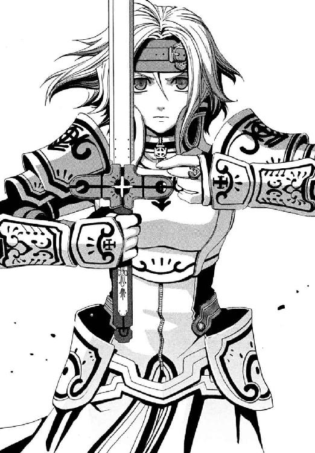
望みが鈍くこすれ合った鉄火の十字路を、今のエレオノールを前に、仁は救われるいつかではなく、メイゼルに何をわたしてやれるのだろう。
エレオノールが、指輪を、長剣に刻まれた神音をかなでるためのくさびがたの飾りに走らせる。暗いトンネルにともった白い光が、色のない暗い世界に一気に色をあふれさせる。刃が白い輝きをはなち、祝福されたのだ。
「神よ。感謝します。私は最後に、よい敵にめぐりあえました」
「あんた、本当は、絶対にわがままな女だわ！」
メイゼルの足元の床に、朝顔の花を無理やり一瞬で開かせたように、回転しながら大きな魔法陣が展開した。
そして電子を《魔力》として操る円環魔導師の得意とする人工稲妻が、エレオノールをはげしくたたいた。仁も、会って二ヶ月以上にもなれば、彼女が雷をつくる間隔くらい覚える。小さな魔女が大気中から負電荷を集め終える直前に魔法消去を発動し、エレオノールの《光背》を燃やした。魔法が見えなくなった途端に駅の電球一個しか光源がなくなる薄闇で、一秒間も視線を集中し、防御魔術を心臓の直上で穿孔する。
暗闇の中、ほとんど視認できない突きを転がるように跳んでかわしながら、仁は魔法消去を再停止する。
人工稲妻がトンネル内の大気を破裂させる音が、肌を押すように反響する。遠く、まだ地下通路を歩いている寒川紀子に聞かれたのだろう魔法消去が、雷束をかすかにばらけさせた。
だが仁は、思いもよらない悲鳴を聞くことになる。
「せんせ！ そんなじゃぜんぜんダメ。《光背》に穴なんてあいてないわ！」
「な!?」
仁は、機関銃すらものともしなかった《光背》の防御力に、改めて戦慄する。
そして彼の側頭部をおそったのは、砲丸を投げつけられたような衝撃だった。観測する間を与えないことで魔法消去しきれなくする、着弾点に発生する〝見えない魔弾〟だ。耳鳴りと頭痛と吐き気におそわれながら、逃げこむように魔法消去を発動する。薄闇の視界の中、魔法の弾丸が、鉄球から野球の硬球ほどまで威力を減じたと、よろこべるかは微妙だ。
「方向はこっちで合ってるのか!!」
距離を離されて魔法を頭部にかためうちされ、防御した腕の間からでは暗くてエレオノールの位置がわからなかった。
「そっちよ!!」
瞬間、リズムどおりまた来ると思っていた魔弾が当たらなかった。だから仁の体は、自然に動いていた。《光背》を貫いても致命傷にならなそうな、鎧が厚い胸部へ拳銃を三連射する。防御魔術が銃弾を止めようとした反応を観測することで、魔法消去が防御魔術をさらに浸潤、貫徹してゆく。この連鎖で、魔法消去はいかなる魔法防御も破壊する──はずだった。
「無事か？ メイゼル！」
彼のかわりに攻撃を受けただろう少女を振り返る。魔法なしで当たれば、仁の持つ拳銃の四十五口径弾は、文字通り人を打ち倒す。必ず死ぬわけではないが、まず戦闘は続行不能になる。だから、もう終わったと安心していたのだ。
だから、にぶい銀色の線路に手をつきしゃがんだメイゼルの声に、血が凍った。
「せんせ......まだ...」
背後で、ゆらりと、鎧乙女が立ち上がった。まるで不死身の怪物のように。
エレオノールは、その歌で神音を自在にあつかう、特殊な神音魔導師だ。歌は、万人が持つもっとも手軽でもっとも古い神音楽器だったから、神音大系二万年以上の歴史では常に巨大な魔法分野だった。だから、〝歌〟の神音魔術には、桁外れな魔法研究の蓄積がある。
あり得ない光景に、今日、搾れるほど冷や汗を流して、いい加減べたべたになったシャツが、さらに冷たくなる。反応消去して食いこみ続ける弾丸を防御魔術が受け止めきるパターンは、仁が知る限りひとつしかない。魔法消去が防御魔術を食い破るより高速で、弾丸が自然に停止するまでひたすら防御魔術を張りなおし続けたということだ。
仁は、もう一度、鎧乙女の胸甲を確認せずにいられなかった。何度見ても、弾痕はあいていない。
「せんせ。鎧の上からでもおっぱいなの？」
「メイゼル、燃えるものに片っ端から火をつけろ！ 暗さで消去の効率が落ちてる!!」
仁は、微妙に目がこわいメイゼルに指示を出し、魔法消去を発動しながら鎧乙女へと突っこむ。もっとも新しい世代の機械化聖騎士隊が幾多の弾丸を止めたトンネルで、もっとも歴史ある魔術の継承者へ向けて。足場の悪い線路の上を、二度ほど蹴つまずき、そのたびにけん制で銃弾を試す。鎧乙女は、倒れても傷ひとつない。
夜歩く不死身の怪物像の原型は、魔法による防御を本当に人々が見たのだという説がある。その論拠が、暗所などではっきり観測できていないことによる魔法消去の効果低下だ。普通の魔法使いでは、どんな環境でも悪鬼に魔法など感じさせられない。だが、世代最強の騎士の力は、かつての神話やおとぎ話のレベルにせまる。
小さな円環魔導師は火をつけた。それはもう思い切った大きさで。戦前の遺物である地下鉄駅が、突然、炎に包まれたのだ。メイゼルの円環大系は、熱をあつかうことにたけた魔法でもある。木造建築が、轟炎をあげ、はげしい火災を起こしていた。
魔法で作られた突風に巻かれて炎があおられ、軽めの残骸が火の雨のように降ってきた。
「発電機用の軽油があったから燃やしてみたんだけど、やりすぎたかしら」
「合理的だけど、俺は心臓が止まるよ」
二発撃った時点で弾切れになった弾倉を捨て、最後の弾倉を装てんする。遊底を引いて、初弾を薬室に送る。飛ばされてきた古い木製ベンチの板が、墨で文字が書かれた看板が、ぱちぱちと音をたてて爆ぜながら燃えていた。魔炎ほどではなくとも、もはや炎の赤い光にあおられて、エレオノールの顔ははっきり見える。
「どうする？ この明るさなら、もう魔法消去で、弾丸が体まで貫徹するぞ」
仁は銃口を、鎧乙女の右胸にポイントした。彼自身の影が、トンネルの高い天井におばけのように踊っていた。メイゼルが燃えるものは皆燃やしているのだろう。淡いもの濃いもの、メイゼルやエレオノールのものまで、いくつもの影が壁や天井に映し出されていた。
何もかもが、夕焼けよりもなお濃い赤と、まっ黒な影の二色に塗りわけられたようだ。
魔法消去を受けるたび強化魔術を破壊され、エレオノールは何キログラムもある重い金属鎧を引きずらねばならない。今も消去を継続する仁を前に、剣をかまえた鎧乙女は、顔じゅうに玉の汗を浮かべ肩で息をしていた。厳しい拘禁と、拷問に等しい《協会》による情報収集の直後なのだ。本来戦える状態ではない。実際に動きは確実ににぶっているし、練習もできなかったろう魔法の精度もベストの状態よりは甘い。体力はゼロに近いだろう。
それでも彼女は剣を杖に、荒野をゆく旅人のように立ちあがるのだ。
「この程度で、終われるはずがありません。勝負を終えるのは、どちらかが死んだときだけです」
仁のお節介は、アパートを去る「ハッピーエンドにはならない」と笑った妹を思い出すせいかもしれない。高校生のあのとき、止められていたら、メイゼルと帰るアパートには二十三歳になった舞花がまだいてくれただろうか。
エレオノールの、これからが惜しくてしかたなかった。だから、半分は遠い昔の延長、もう半分はニセ教師として、言った。
「俺は十六のとき、たいせつだと思った人はみんな守ってやるようになるって、誓ったことがあるよ。たいせつで、俺が守るんだって思ってたやつに自分から逃げられてさ。だから、これで勝負が終わりだって、認められなかったんだ。......まあ、八年経っても、俺はたいしたおとなになってないんだけどな」
二十四歳の若造の今、思い出して悔やむのは負け自体ではない。舞花がわざわざ魔法消去すれば止められるように突っこんできてくれたのに、受け止めることすらできなかったことだ。
ひどく、生気のうせた透明な光をその瞳にたたえて、エレオノールがつぶやいた。
「とらわれたとき、決して来ることなどない『いつか』を夢見ていました」
清楚な顔立ちをほんのわずかゆがめた愛憎を、当の仁に向けることはなかった。だから、彼女のいつかは、真なる神がおりたちこの世界が救われる神聖騎士団のいつかではないとわかった。信仰を続ける限り、彼女はそれを過去形で懐かしみはしないだろうから。
だからこそ仁は、その夢を惜しむ彼女に、命を捨ててほしくはない。
「そうか。じゃあ、気が済むまで続けよう」
エレオノールは、ことばの通じない人間を見るような、じれったい目を彼に向けていた。
「どうして、あなたは、このように愚かしく危険をおかすのです？ 今、引き金を引けば終わることですよ」
「女の苦しみを受け止めるのは、男の役目だからだ」
仁は、口に出したらことばが誰かの借りものみたいになってしまったことに、苦笑する。たぶん、今の彼は、あの夏、自分の未来すらあきらめた妹へ言ってやるべきだった正解を知っている。だから刻印魔導師の百人討伐をどうにもならない壁だと頭ではわかっているのに、メイゼルを守り続けている。倉本きずなの行く末を見守りたい。いらないと突っぱねられても、そうしたいのだ。
火の粉をあげて燃える木材が、木っ端微塵に爆砕した。かつてバベルの騎士隊の紅一点だった鎧乙女のまなざしに、ゆらめいたものは怒りの衝動だった。敏感な部分を不用意に刺激されたように、彼女が強く唇を引き締めた。エレオノールの瞳は今、たぶんすべての仲間を失いすでに失敗に終わったバベルの日を見ていた。
「あなたは、戦っている最中でも、おしゃべりなのですね！」
エレオノールの籠手が、剣を握ったまま、吼えたける猛犬のようにガチガチと金属をかみ合わせる。黒煙が線路側まで流れてきていた。戦前の設備だけに、火災時に煙を流すような仕掛けはないらしい。
仁が理由を尋ねようと口を開いた。声は出なかった。鎧乙女の剣が、地面に思い切り突き立てられていたからだ。
《無言》の神音。本当に完璧な音を要求する生の《世界の索引》、超精密神音のために、周囲の音を停止させる神音楽器が、その剣には仕込まれている。
そして神の拳を振り下ろしたような、大気の爆発がエレオノールの周囲すべてを吹き飛ばした。
「せんせ、明かり！」
かすかに聞こえたメイゼルの声は切羽詰っていた。トンネル内を吹き荒れる余波の強風で飛ばされないよう必死で耐える仁が、少女の警告の意味を悟るまで三秒かかった。今あるものは、メイゼルが懐中電灯のように光を放ってくれた、一条の魔法の明かりだけだ。消去下では消えるもので、魔法を焼き払う助けにはならない。一撃で、周りに散った小さな火はすべて吹き消されていた。遠く駅の火災だけが、仁たちのまわりに残った唯一の非魔法照明だ。
仁はナイフをかまえて、鎧乙女の姿をさがす。本来なら追撃が来ていてもおかしくない。まさかメイゼルが狙われたかと振り返り、体の小さな少女が、うまく地下鉄の線路にしがみついて無事だったことを知った。
そして振り返る。
空中に、エレオノールが浮かんでいた。まるで磔刑にかけられたように、ひとすじの金色の光に貫かれ、足を浮かせて固定されていたのだ。空中に拘束された神音歌手は、まるでわが身をひとつの楽器として捧げるようだ。奇蹟と彼女自身をせめぎ合わせる苦行者の視線の先、トンネルの天井にここを狙えと十字の輝点がぴたりと留まっていた。
「メイゼル、そこから出るな！」
仁の魔法消去より、一瞬だけエレオノールが神音を発したほうがはやかった。架台を魔法消去で焼き尽くされ、鎧乙女が地に降りる。仁は消去を停止し周囲を観察する。何も変化は起こっていない。
だが、奇蹟が息づいている確かな予感が、彼に不用意な動きを許さなかった。エレオノールが我が身を拘束して、位置を固定してまではなった魔術が、半端な威力のはずがない。狙点を指示する魔法構造体は、一体何だったのか。そして、なぜ彼女の声から一秒以上も何の奇蹟も発生してはいないのか。
すべての答えが、そのとき出た。
空中に突然、数え切れないほどの魔弾の輝きが発生したのだ。それはまさに無数。寒川を救うとき、彼女が使った魔術の進化形だ。エレオノールはトンネル自体を震わせることでひとつの神音楽器と化し、神音をかなでさせた。天井にあらわれていた十字形の狙点は、周辺環境を計測して魔術を当てる適切な位置を教える、精密な観測魔術だ。
──まるで星の海だ。
約五十センチ間隔で、同心円をせばめてくるように星を置いて、長さ、幅、高さの三軸を完全に埋め尽くしている。全周囲に同時発生した魔弾を、たったひとりの人間が消去しきれるはずもない。
「駅だ！」
仁が魔法消去を作動したその瞬間の叫びに、メイゼルの声が重なった。
「下よ！ せんせ」
閃光をはなって、逃げ場などあるはずもなく、すべての星は同時に爆発した。
時間の感覚が飛んでいた。今はあれから三日後だと言われても納得したし、もう死んでいてこれは断末魔の幻覚だと言われても仕方ないとあきらめたろう。耳が聞こえるようになるまで、わんわんと頭の中で血液が波打つようで、別の世界を歩くようだった。
彼が武原仁としてものを考えられる状態に戻ったとき、体はトンネルの中、衝撃に朦朧としながら線路脇に膝をついていた。前から後ろから左から右から、上半身すべてを拳で埋め尽くすように何百個もの拳で、一斉に思い切り殴られたみたいだ。
彼は、まるでそこに大事なものがあるかのように、足元を凝視していた。なぜそうしているのか、しばらくわからなかった。橙色の光がまだ燃え続ける駅からここまで届いていた。
火災のまっ最中の、上昇気流が複雑に流れる駅なら、エレオノールの計算どおりの神音にいたらず、魔弾も発生していないというのが仁の目算だった。彼はともかく、メイゼルひとりだけなら魔法的転移で逃げ切れると。
彼の土ぼこりにまみれた靴を中心に、火事の炎に照らされて、反射光とあわせてみっつの影が淡くのびていた。
仁は思考力が正常だと自己確認するため、命拾いした理由をことばにして反芻する。
「無数の光ができたってことは、無数に光源ができたってことだ。だから現物を見なくても、落ちた影を観測すれば、そこからの消去が光源の魔弾に至り、すべて破壊する」
「ちゃんと聞いてくれたのね」
さっきと同じ線路の間に伏せていた彼女が、髪から土ぼこりを払いながら身を起こす。天井と壁を振動させて作った神音なら、構造が複雑な線路付近は、大気が乱れて魔弾が発生しにくかったはずだ。仁は、小さな魔女に守られたらしい。いや、彼女がいなければ仁は何度も死んでいる。
「せんせのことばっかり、三ヶ月も見てきたのよ。すこしは、せんせのこと、わかるようになったでしょ」
さすがにまったく無事とはいかなかったか、つらそうに彼女が線路に腰掛ける。そういえば、彼女がこの地下にやって来たのも、仁のことを知るためだった。メイゼルはずっと、彼を見ていてくれたのだ。
制御が破壊されて自身も魔弾を受けたエレオノールが、技も何もなく体ごと白刃をたたきつけてくる。仁はナイフでそれを受け止める。匂いが伝わるほど間近に見た鎧乙女の半分死んだ瞳に、多くの矛盾と問題を抱えた仁自身が映っていた。彼女よりも七歳も年上の武原仁なら、おのれを支えてくれる人々も帰る場所もすべてなくして、過去に引きずられる亡者にならずにいられるだろうか。呼吸の変化で神音の発動をみて、魔弾が来そうな位置から首をひねってかわす。炸裂した空気に皮膚を裂かれながら、仁は肘を彼女の胸甲にたたきつけた。
「歌じゃないだろ？ 俺が憎いなら自分の声で、俺を罵倒しろよ。魔法を歌って、自分のことばを何もしゃべれないで、それでいいのか？ 生きるのをあきらめたいくらい、つらいんだろ」
太陽が生じたような、黄色い光が仁の背後にできていた。地下鉄駅が火事になってずいぶん経つのに、トンネルに煙がこもっていない。メイゼルが、固体よりはあつかいやすい火災の黒煙を片っ端から電離したせいだ。超高熱のプラズマの弾丸を、メイゼルは今、作りあげつつあった。地下にいるのに、真夏の太陽の下に出たように、仁の足元には今、くっきりと影がひとつだけ床に落ちている。メイゼルが勝負をかける。だから仁は、この弾倉一個で弾切れの拳銃を、静かに最後の騎士となったエレオノールに向けた。これで終わろうと告げるように、一発、二発と、心臓へ向けて立て続けに引き金を引いた。
仁が魔法消去を発動する一瞬の必然的な暗闇を待つ、エレオノールは一撃に賭ける捨て身の突きの構えだ。会話するように、仁は引き金を引き、彼女が思い残すことをすべて整理するように薄い青の瞳を閉じる。そして《光背》が、小さなミルクの王冠を作るように弾丸を食いこませてすこし削れる。彼らは命を懸けあいながら、本当はお互いのほうを向いていないから衝突すらできない。銃声がもうひとつ、弔鐘のように響く。エレオノールの籠手の右手が、死へと一直線に向かう彼女自身に抵抗するように震えだす。魔法消去は、肌に熱を受けた触覚で背後の光球を消去してしまうから、絶対に使えない。仁のそれは、消去されたときが終わりだと思わせるためのハッタリだ。
電子を加速し、メイゼルがプラズマの温度をあげてゆく。円環魔術が《魔力》型魔法最高級の出力をほこるのは、エネルギーを上昇させる速度がゆえでもある。
背後で、夏がふくらんでゆくように、激しい輻射光に地下鉄のレールがぎらぎらと輝いていた。古いトンネルは、工作の程度が相当よく、まるで磨きあげられたようになめらかな表面をしている。〝王子護死ね〟マークを落書きした高校時代の仁たちみたいな連中がいたのか、壁には魔法世界の文字や絵が生き生きと残っていた。
メイゼルは静かに言う。
「ほしかった『いつか』が全部消えても、何もかもなくなってなんかいないのよ」
神判の極刑を受け、罪人の刻印を刻まれて《地獄》に追放された少女が、痛みとよろこびをないまぜに微笑んだ。
「だから、人をスキにだってなっちゃったもの」
プラズマの弾丸が、電場にともなう磁場に引かれて、あっという間に地下鉄線路に沿って百メートルほども先へと飛んでいった。そして、加速距離をかせいだ人間大ほどのプラズマ球が、エレオノールへ向けて、磁力にはじかれて超加速してくる。
「私はあなたが憎いのです！ なのに歌うたび、それでも奇蹟は守りたまうのです。あなたは恋歌など歌わせてはくれなかった」
エレオノールは、かつて彼女の身を灼いた《天使の輪》と同じ熱プラズマの光を前に、床に剣を突きたて超精密神音で立ち向かう。生の締めくくりを求めていたはずなのに。
だが、メイゼルの本命はそれではなかったのだ。
「せんせ！ 魔法消去して!!」
悪鬼の視線は奇蹟を焼き、地下道の短い夏は終わる。
その瞬間に起こったのは、単純で致命的な手品だった。
魔法で集められた負電荷は、一瞬で拡散して散った。円環魔導師による《魔力》操作で直接起こしていたプラズマの熱自体すら減衰させられ、温度の下がった熱風と化す。
だが、消失した白光の中心に、煌々と輝き続ける光が、ただひとつ残っていた。
魔法消去環境下で光っていたものは野球のボールほどもある、金属塊だ。地下鉄駅の釘やねじ、三十人以上の狩猟魔導師中隊が地下鉄から乱射した、膨大な薬莢と、機械化聖騎士隊の《光背》で止められた銃弾の被覆。メイゼルは、ひとつひとつは小さな金属を、この魔法のため集めて溶かしていたのだ。
より強い発光体の内部に隠されていた金属塊が、慣性力で飛ぶ。魔法ではない、ただの自然現象としての熱輻射で炎のようにあかあかと輝くそれが、仁の魔法消去のためにエレオノールを照らす照明。
エレオノールの《光背》は、純粋に魔法であるがゆえ、仁の魔法消去で反応観測を受けて超高速で浸潤、貫徹された。
メイゼルが熱した弾丸は、金属が焼けていることも慣性力ももはや魔法ではないから、自然秩序に従ってごくゆるやかに威力を減じた。
弾丸の威力と、《光背》の防御能力の、減衰率の差が、まさにエレオノールをおそった被害の大きさだった。
粘性の高い半溶解状態の弾丸が鎧乙女の胸に激突して、変形し胸甲に張りつく。その衝撃力を余すところなく受けたエレオノールは、車にはねられたように二メートル以上も吹っ飛ばされた。回転し、人形のように弾みながら。少女騎士が飛ばされた軌跡をなぞって金属弾丸のしぶきが、まるで血液のように、赤く線路に散っていた。
身を守る奇蹟を焼かれ、あらゆる意味でただの人間に戻った鎧乙女が、それでも倒れたまま剣を探った。まだ意識があること自体不思議な彼女が、ひしゃげた鎧から弾丸の成れの果てを落としながら上体を起こした。
「─────────────神よ」
二ヶ月近い拘禁で更に細くなった体に詰まった、生命を振り絞るようにその名を呼んだ。のどから吐こうとしているのがことばではなく、肺であり心臓であるかのように、何度もあえぐ。
「神よ──」
エレオノールはついに、歌うことをやめたのだ。なのに、出てくるのはその名ばかりだ。仲間を失い、苦しみを受けた少女の悲しみでも、哀悼でも、悔恨でも、憎しみでもなく。エレオノールはその名を呼び、顔をゆがめ、かみ締める。希望を失い、命を投げ出した暗闇の底で、ただひとつのともしびであるように。
「神よ。神よ」
彼女が、涙を流していた。その名を唱えている間は、泣くことも悲しむことも許されているかのように。震える腕が、剣を杖に身を引き上げようとしてすべり、額を打つ。
「神よ。それでも信じたあなたを呼ぶ声だけは、失われたすべてに届くのです」
目を閉じてあえいでいた。すべて受け止めるものなど、あなたのほかに何があるとばかりに。
「聞こえていますか。聞こえていますか」
こんなにしてまでなぜまだ祈るのか、信仰を持たない仁にはわからない。けれど、ただひとつだけはわかる。
エレオノールの籠手が鳴る音は、もう聞こえない。祈るように剣にすがり、全身を震わせ慟哭する彼女の、今や全身の鎧が哭いているからだ。
「......神よ、それでもあなたは、私が歌うとき、いつもそこにいたまうのです」
彼女にとって、いるべき場所も、望むべきいつかも、すべてがそこにあるのだろう。つまりそれが、彼女の答えなのだ。
そしてエレオノールは力尽き、音高く崩れ落ちた。
†
仁たちが地下道を出ると、外はまだ昼すぎになったところだった。
魔導師公館に連絡すると、午後二時から聴取と今後の方針検討が行われることを告げられた。一度家に帰って着替えてシャワーを浴びるくらいの時間はあると、仁はメイゼルを連れて、大通りでタクシーを拾って家に戻った。
一秒を争う状態でなくなったのは、国家に対する犯罪ということで、事態がひとまず魔導師公館から公安警察に移ったせいだ。事件を持っていかれると、官庁の組織が縦割りなため、先方との責任と権限の確認がとれるまでは手を出せなくなる。そもそもこの国にとって、事件の主役は、核を用意したワイズマンではなく、その買い手だというテロリスト国城田義一なのだ。
核爆弾を載せた地下鉄は消失した。公館は、仁と同じ目算で、地下鉄銀座線渋谷駅付近から八号地下壕らしい空洞を発見するも、王子護ハウゼンを捕捉できなかった。魔法的転移で跳んだか、安全な閉鎖回廊に逃げこんだか、一本道の線路を素直に走りはしなかったということだ。事態を楽観視するなら、つまり今すぐ核が爆発することはない。悲観的に見るなら、十分な準備をして隠れた王子護をつかまえるのは容易ではない。
タクシーを降りると、土色の壁の古いアパートが盛夏の日差しを照り返していた。武原仁が中学三年のとき越してきて、九年間暮らしたのは、二階の一番奥の部屋だ。一階一号の大家の部屋の前からあがる金属の階段に足をかけ、先をのぼってゆくメイゼルを見あげる。
太陽をいっぱいに受ける、小さな魔女のまだまるみを帯びない肩や、脇からワンピースの生地の奥へ落ちてゆく素直な体の線がまばゆくて目を覆う。あどけない彼女に危険な橋をわたらせた事実に、さっと血が冷えた。こんなにも頼れたのは、地下壕の暗さのせいで、表情やしぐさが主張する無防備さを意識せずにすんだからかもしれない。
メイゼルが振り返る。
「でも、思い出しても、あれだけやって、勝手に悟って、勝手におしまいって、話がおかしくない？」
釈然としない様子で、少女はあの戦闘の後始末を思い返していた。
力尽きたエレオノールは、意識を失い、安らかに眠ってしまった。今、この瞬間に撃たれて死んだとしても、何の悔いもないのだろうと思えるほど、無防備に。
仁たちは駅舎を鎮火させると、命に別状ないようだから眠る騎士を地下に置いてきた。現実問題、戦闘のあとがある彼女を公館に連れ戻ったら、彼らのケガの説明もしなければならない。
つまり、自由の身を口約束で手に入れた程度で戦いを挑んで逮捕となれば、待つのは脱走者としての処分だ。そして仁は、彼女を死なせるため剣を合わせたわけではない。
仁は、エレオノールのハッピーエンドは、あの答えの向こうにある気がしたのだ。
「誰かはここに立って、誰かは別の場所に立っている。友だちになれなくたって、だから死んでいいってわけじゃない。それでいいんじゃないか？」
寒川紀子は無事に家に戻ったらしい。倉本きずなはまだ発見されていないが、すくなくとも公館最良の狩人である《魔獣使い》神和瑞希がいっしょだ。奪回まで生き延びてはくれるだろうと思う。
「せっかく終わったはずなのに、きずながいないと『よかった』って言えないじゃない。本当に、あたしを心配させるなんて、帰ってきたらきずなには罰が必要だわ」
メイゼルが心配そうに視線を落とす。さらったのがこの世界の人間なら、仁も焦りきっていただろう。だが、よほど強固な理由がなければ、魔法使いにきずなは殺せない。すべての「いつか」をかなえるかもしれない奇蹟は、簡単に捨てられない。王子護が彼女を殺す仕事を受けていたなら、十字路できずなは死体になっている。
仁は、まぼろしのように輝いていた季節に、冷えた風が吹き込む感触を、肌に感じていた。それは、彼にとっては慣れた温度の厳しい風だ。
「それじゃ、帰って来たら罰として、きずなちゃんに何かごちそうでも作ってもらおうか。俺たちも手伝ってさ」
メイゼルは、三メートル歩くたびエレオノールのことが引っかかる様子だ。かつて殺しかけ、殺されかけたせいもあるだろう。仁も前は瀕死まで追いやられた。
「本当に、せんせって、無駄な苦労にとびこんでる気がするわ」
仁は笑いをかみ殺す。「死ぬ気でがんばったけど、少女の出す答えはやっぱり彼女自身の答えで、結局どうにもならないままだ」メイゼルが無駄だというその関係は、目の前の彼女本人と仁がたどってきた道に似ている気がしたのだ。だから、仁は沈黙する。わがままに付き合ってくれた小さな魔女に、してやれるお礼が釈然としない思いを抱えさせることだなんて、あんまりだ。
「せんせ、聞いてるの？」
いつもより彼女と自然に向き合えている気がして、仁は頭をかく。
「無駄でいいんじゃないのか」
そして仁は、耐えるためではなく、まぼろしのような今の気分を胸の中にすこしでもとどめておきたくて、息を止める。
「たぶん、大切なことってのは、たいていそのときは無駄に見えるんだよ」
思えば、今日は奇蹟のように誰も死なない一日だった。アラクネも、聖騎士隊も、ワイズマンの魔導師も、エレオノールも。いつもの仁ならどうしただろう。今日彼は、いくつかの善をなし、いくつかの誤りをなした。それが彼を救うことがあるか、それとも破滅させるか、おそらくそのときまでわからない。
彼自身甘いと思うその結論を、メイゼルのかわいらしいものを見るような微笑みが受け止めてくれた。その目が嗜虐的にとろけつつも、ひどく女の子らしい力に満ちていて、仁は心臓が止まりそうになる。
「あたしをちゃんと待った、ごほうびってことで、今日だけゆるしたげるわ」
二週間もすればみんな死ぬ油蟬が、誰よりも夏を謳歌するように啼いていた。
「見て見て」
階段をのぼりながら、メイゼルが仁のひじを引いた。エレオノールに魔弾を受けたときだろう。白いワンピースの布地が、おなかの上の一箇所だけ、ねじちぎられていた。
「あたしが魔法使いでよかったわね、せんせ。魔法でおなかのアザを消せなかったら、今年の夏はもう泳ぎに行けないとこだったわ」
「また着るのか、ビキニ」
言った後で、ワンピース水着ならおなかのアザが関係ないからビキニだと、自然にわかった自分が嫌になった。メイゼルが、お日様に負けないくらい、ぱっと表情を輝かせた。
「当たり前よ。楽しいときは楽しいことをするし、似合うものは何度でも着ればいいのよ」
小さな刻印魔導師はこの夏を、思い切り楽しもうとしているかのようだ。
来年がある保証などない。武原仁は、魔導師公館の専任係官だ。鴉木メイゼルは刻印魔導師だ。その事実は、夏休みであっても何も変わらない。地下の闇はやさしく、彼らの現実を隠してくれていたのだ。まるで、救われる夢の中にでもいるように。
仁はこの夏が、ひどくまぼろしめいていた理由がひとつわかった。彼は、組織に体をあわせることなく、自由になっていた。立場を離れて、彼自身に近づくことができた。
彼にとってこの数日間は、ただの彼自身として過ごす夏休みだったのだ。
もうすぐ、彼らの部屋につく。この夏、毎日がひどくやさしい空気に包まれていた。今日、エレオノールとの戦いでだって、守り守られて彼らは生き延びた。「誰かの出す答えはやっぱり誰か自身の答えで、結局どうにもならないままだ」確かにそういうものだ。けれど、もし仁自身にハッピーエンドがあるなら、そのとき彼とメイゼルの距離はもうすこし近い気がしたのだ。だから言えた。
「帰ったら、おまえに教えたいことがあるんだ」
まず、アパートの部屋をただよう妹のかけらのことを、十八年間彼の妹として生きた武原舞花のことを、たぶん彼自身が知ってほしかった。今ここにいない、きずなにもだ。
「──おまえもさ、いつかそうしたいと思ったときでいいから、どうしてこの世界に来ることになって、どうしておまえが戦わなきゃいけないか、俺に教えてくれないか」
小さな刻印魔導師が、凍っていていいか溶けたらいいのかわからないグラスの中の氷みたいに、コトリと首をかしげた。メイゼルも、仁に故郷のことを一度も話したことがない。
「どうして、そんなこと言うの？」
仁の胸に浮かんだ問いは、たぶん、同じこの廊下を去った八年前の妹へのものだ。俺は、すこしでも頼れる男になれているかと。彼は息を止められても魚にはなれない。それでも、この混迷深まる情勢で「夢みたいないつか」を期待して手をこまねくのは、見捨てるのと同じだ。いや、もっと単純に先生のつもりでいた仁は、距離を縮めるには努力が必要だという当たり前のことを、小さな魔女に教わっていたのだ。
「また間に合わなくなる前に、今ちゃんと伝えなきゃいけない気がしたんだ。俺は、おまえがどんな罪を負ってこの世界に来たとしても、おまえを助けてやりたいんだ」
それは、鴉木メイゼルと出会って三ヶ月で、仁がはじめて踏み出せた、たぶん大きな一歩なのだ。
今からこんな情が深くて、おとなになったらどうなるのだろうと空恐ろしくもある少女が、彼のシャツをぎゅっと握る。五十センチも身長がちがうから、うつむかれると表情が見えなかった。
「......今日のせんせ、変だわ」
「よかった。それは、うれしい声だ。俺も三ヶ月いっしょにいて、すこしわかってきただろ」
仁はほっとして、目の前のドアに、鍵を差しこむ。
彼は、今このときここにいる、自由な彼自身ではなく、もうすぐまた公館の専任係官、武原仁に戻る。
それが、とてももったいない気がした。だから、彼自身の顔でいていい、帰るこの家の、たいせつさが身にしみた。彼の脇で、扉が開くのを待っている少女が、かけがえのないものに思えてきた。
部屋の奥から、ふうわりと、白金色の〝泡〟がただよってくる。
仁は、約束のいつかがここにあるような、不思議な心持ちがした。理解してくれはしないのだろうけれど、舞花に、彼らの家に声をかける。
「ただいま」
中学三年でこの部屋に越してきて、何度となく誰もいない部屋へ声をかけた。
そのあいさつが、今日はあたたかくこだました。
「ただいま、せんせ」
王子護ハウゼンは、暗闇にいた。
朝が来ない地の底では、夢は永遠に覚めない。すべての区別が曖昧になり、時間の感覚すら溶ける世界がここにある。聖騎士と激しい戦争を繰り返した連合国軍占領時代がまだ続いていて、その先はまるで全部手のこんだ夢まぼろしだ。
目の前に、白い光をはなつ蛍のような〝泡〟が流れてこなければそう思えただろう。
「本当に君は、どこにでも目を光らせていたのデスネ」
そこは古い地下工場だった。真ん中には足を引っ掛けて転びそうなほど低い大きな金床が置かれている。人間ではなく、矮妖精の鍛冶師のためのものだ。奥には石組みの巨大な炉。天井には鎖で部品を吊るす巨大な滑車、床にはプールほどの水槽がある。ここで戦中、徴発された魔法使いがエンジンの試作品を作らされていたのだ。
荷物の積み下ろしに使われた線路には、今、二両編成の地下鉄が停まっている。その二両目へと、〝泡〟は吸い寄せられていった。
下卑た歓声があがり、銃声が響いた。工場の外を、彼が訓練した兵士、狩猟魔道師中隊が守っているのだ。
ここを選んだ意味などない。ただ、閉鎖回廊の入り口位置が適切で、線路が敷かれていて、取引相手の悪鬼と接触しやすかった。そんなところにまで現れるようだから──〝彼女〟は早死にしたのだ。
「おびただしい魔法使いの屍が、この国の歴史には沈んでいマス。生き残っても見られるモノは、暴力を抱えてまどろみ続ける、どん底の夢デス。そんな、どん底からいつか上にあがりたイ。そう願って、なにがいけないのでショウ？」
彼は、ふと足元に転がされた、《魔獣使い》神和瑞希にたずねてみた。壁に磔になったときから変わらず、息も絶え絶えで、うめくだけだ。
「あなたはどう思いマスカ？ 再演大系の娘、〝最後の魔法使い〟」
後ろ手に縛らせたきずなが、王子護を恨みがましく見あげた。足元で、友だちである神和の自己再生魔法が破壊されて魔炎をあげている。これを、彼のせいだと思っているのだ。
「どうして、あなたは、こんなことをするんですか？」
「それはいい質問デス。夢を実現するために力が必要なのデス。夢、いいことばデスネ、ぼくも愛していマス」
倉本きずなは、足元の《魔獣使い》のような自分の好意の範疇と居場所しか見ない。おのが手に託されたものの正体を知らないのだ。
「この世界にいるぼくらが、ここでは焼き尽くされるだけの奇蹟を求めるなんて、ナンセンスですヨ。ぼくらはこの世界で通用する、経済力のため戦うべきなのデス」
そして、きずなの前に座って、神和瑞希を見ている男がいる。退職間近の会社員のような、五十五歳という年齢のせいで、ねずみ色のスラックスとシャツがしっくりはまる男だ。日焼けした肌は茶色がかって小さなしみができ、昔は筋肉質だった腹もたるみだしている。
「ごめんな。おじちゃん頼まれてて、この子のこと見てなきゃいけないんだ」
その悪鬼は、倉本きずなに頼みごとをされるとすまなそうな笑顔になる。だが、この父親然とした男が、きずなの要求に一ミリたりとぶれないことを、判別するには彼女は経験が足りない。この男が降りてきたから、きずなと小学生たちは地下壕の入り口から奥へと逃げ出すことになったのに、記憶の中の姿と、今ここにある人好きのする顔を結べない。人がよいのではなく、正しく疑う能力が根本的に足りていない。
王子護は闇の中、慎重に息を潜める。
あまりにも簡単にカードがそろいすぎていた。足を踏めば劇場が笑いに包まれるとき、道化師は神の恩寵ではなく、たちの悪い冗談を疑うべきだ。だが、はじまった舞台からはおりられない。
「俺たちの力は何だ！」
「「金だ！」」
工場の外で、ビールに酔った魔法使いたちが、抑圧のタガを外してへたくそな演説をぶちはじめる。それは日々変わりゆき成長する地上とは真逆の、何百年も前から変わらぬ、いつかを望む鬱屈と自滅の連鎖。
かつて《神に近き者》グレン・アザレイは、「魔法使いはこの世界でいかに生きられるか」という問いを投げた。その問いかけは正しい。
「オレたちのほしいものは何だ！」
「「金だ！」」
だが、輝かしい英雄の答えは、絶望的に間違っていた。現在、《地獄》の魔法使いの圧倒的多数は食うにも困る逃亡者と、その子孫だ。だから今や、魔法使いの戦いとは神話の延長ではない。貧困と抑圧に抵抗する、ゲリラのそれなのだ。
工場の外で、祝砲がわりの銃声が轟いた。今ある悪鬼が絶対優位の世界は、思われているほど変えようのないものではない。王子護たち魔法使いの居場所も、歴史上、わずか千年ほどで急速に奪われたのだ。だがこれからは、銃弾や悪鬼自身が作った武器で、どんな魔法使いでも悪鬼を殺せる時代になる。淘汰が起こり、生きかたを悪鬼に近づけた魔法使いがこの地獄で生き残る。
銃声などまともに聞いたのは今日がはじめてだったかもしれない、倉本きずなが顔をこわばらせていた。彼女が、まともに銃声を聞くのが今日がはじめてだということこそ、まさに一番たちの悪い冗談だった。
それが、ショウがはじまる合図だと知った。異なる世界と文化の、抑圧され隠されてきた衝突が、今、浮上する。王子護は、熟達した道化の優雅さで、六十年ぶりに現れた再演魔導師の前で帽子をとる。
「そろそろ君も見ておくべきでショウ。《最後の魔法使い》よ、ここが今の神話とおとぎ話の世界、この《地獄》の裏側デス」
六十年の休息は終わった。
都心の地下で夢を見る永遠の闇の底、これからまた戦争がはじまる。
〈ＦＩＮ〉
あとがき
約半年のごぶさたです。長谷敏司です。
『円環少女 ④よるべなき鉄槌』、いかがでしたでしょうか？
これまで派手な話が続いたので、今回はすこしのんびりした話になりました。作中では夏休みになるこの機会を逃すと、ゆったりムードはもうない気がしまして。
徹頭徹尾ゆるやかとはいきませんでしたが、円環少女らしくはなったと思っております。いやもう、あとがきから先に読まれている読者さんに、今回の話のことをどう伝えればよいのか、私自身もよくわかりません。そんなこと打ち明けてどうするんですかという感じですが、どんどんあとがきの難しいシリーズになりつつあるとは思っております。そろそろ、ネタをはじめたほうがいいのでしょうか。
ただ、この文自体を四巻の作業終了直後に書いているせいか、ふと、前巻「煉獄の虚神（下）」の作業明けを思い出しました。
「これだけやるだけやっちゃって、この先どうシリーズ続けるつもりなんだろうなあ」
と、三月の徹夜明けの正午、年末から無休だったせいでいろいろ飽和した頭で考えたものです。そして一週間くらい経ってから、血の気が引く音を聞きました。
「続き書くの、俺だ」（アホまるだし）
でも、こう、なんといいますか、自分の歩いてる道路がまっすぐ続いてたら、茨がわさわさ茂っていても進みますよね？
踏みこんだのが大間違いと言われないように、これからも娯楽的に自分なりのベストを尽くしますので、ご期待ください。それと、文章が読みやすくなっているか、ちょっと不安ですが、多少なりと改善していますとさいわいです。
参考にしたものはあるのですが、魔導師公館近辺の話は、当然ながらかなり歪めて書いています。ご勘弁を。「本作はフィクションであり、実在の人物・事件・地名・団体等とは関係ありません」ということで。
それでは、最後に謝辞を。美麗な絵をありがとうございます、イラストの深遊さん。表紙のメイゼルと寒川さんの服が、今ふうの小学生していることに軽くカルチャーショックを受けました。今回もお世話になりました有馬啓太郎氏。夏あたりからえらいことになっていてすみません、家族へ。そして、どんどん立派になってゆく友人たちへ。
次巻は、来年のそう遅くならないうちにお目見えできるはずです。
いろいろと動きのあるはげしい展開になりますので、よろしければ楽しみにお待ちください。
カバー・口絵・本文イラスト／深遊
カバー・口絵・本文デザイン／中デザイン事務所
円環少女
④よるべなき鉄槌
長谷敏司
平成25年9月1日
発行者 宍戸健司
発行所 株式会社角川書店
〒102-8078 東京都千代田区富士見2-13-3
http://www.kadokawa.co.jp/
(C) Satoshi HASE 2006
本電子書籍は下記にもとづいて制作しました
角川スニーカー文庫『円環少女 ④よるべなき鉄槌』平成18年11月1日初版 発行
平成20年10月25日4版発行